Automotive
Topic 1: Tổng Quan Ngành Công Nghệ Ô Tô
Phần 1: Định Nghĩa: Ngành Ô Tô Là Gì?
Ngành ô tô là một lĩnh vực công nghiệp liên quan đến việc thiết kế, phát triển, sản xuất, tiếp thị, và bán các loại xe cơ giới. Xe cơ giới ở đây chủ yếu bao gồm ô tô con, xe tải, xe buýt, và các loại phương tiện vận tải khác sử dụng động cơ đốt trong hoặc động cơ điện để di chuyển.1.1. Các Thành Phần Chính Của Ngành Ô Tô
a. Thiết Kế và Phát Triển:
+ Thiết Kế xe: Quá trình này bao gồm việc phát triển kiểu dáng, cấu trúc và chức năng của xe, đảm bảo xe đáp ứng các tiêu chuẩn về an toàn, hiệu suất và thẩm mỹ.
+ Phát triển công nghệ: Bao gồm nghiên cứu và phát triển các công nghệ mới, như động cơ điện, hệ thống tự lái, và các tính năng kết nối thông minh.
b. Sản Xuất và Lắp Ráp:
+ Sản xuất linh kiện: Sản xuất các bộ phận và linh kiện như động cơ, hộp số, hệ thống treo, và hệ thống phanh.
+ Lắp ráp xe: Quá trình lắp ráp các bộ phận và linh kiện thành chiếc xe hoàn chỉnh tại các nhà máy sản xuất ô tô.
c. Tiếp Thị và Bán Hàng:
+ Tiếp thị: Các hoạt động quảng cáo và khuyến mãi nhằm thu hút khách hàng và thúc đẩy doanh số bán hàng.
+ Bán hàng: Bao gồm hệ thống đại lý và mạng lưới phân phối, nơi xe được bán cho khách hàng cuối cùng.
d. Dịch Vụ Hậu Mãi:
+ Bảo hành và bảo dưỡng: Cung cấp dịch vụ sửa chữa và bảo dưỡng định kỳ cho xe sau khi bán.
+ Cung cấp phụ tùng thay thế: Đảm bảo cung cấp các phụ tùng và linh kiện thay thế khi cần thiết.
1.2. Vai Trò Của Ngành Ô Tô
+ Kinh tế: Ngành ô tô đóng góp một phần lớn vào GDP của nhiều quốc gia, tạo ra hàng triệu việc làm và thúc đẩy sự phát triển của các ngành công nghiệp liên quan như thép, cao su, nhựa, và điện tử.
+ Xã hội: Xe ô tô cung cấp phương tiện di chuyển cá nhân và công cộng, nâng cao chất lượng cuộc sống và hỗ trợ phát triển đô thị và vùng nông thôn.
+ Công nghệ: Ngành ô tô là một trong những lĩnh vực tiên phong trong việc áp dụng các công nghệ mới, từ tự động hóa trong sản xuất đến các hệ thống an toàn và giải trí trên xe.
1.3. Thách Thức và Xu Hướng
+ Môi trường: Ngành ô tô phải đối mặt với áp lực giảm phát thải và phát triển các giải pháp vận tải bền vững hơn.
+ Cạnh tranh và đổi mới: Các hãng xe liên tục cạnh tranh để phát triển các công nghệ mới và cải thiện hiệu suất và tiện ích của xe. Thay đổi hành vi người tiêu dùng: Người tiêu dùng ngày càng quan tâm đến các giải pháp di chuyển linh hoạt và tiết kiệm chi phí hơn, thúc đẩy sự phát triển của các dịch vụ chia sẻ xe và xe tự lái.
1.3. Kết Luận
Ngành ô tô không chỉ đơn thuần là sản xuất và bán xe mà còn là một hệ sinh thái phức tạp và đa dạng, ảnh hưởng sâu rộng đến nhiều khía cạnh của xã hội và nền kinh tế toàn cầu.
Phần 2: Lịch Sử Phát Triển Của Ngành Ô Tô
2.1. Thách Thức và Xu Hướng
1. Giai Đoạn Khởi Đầu (Cuối Thế Kỷ 19 – Đầu Thế Kỷ 20) Cuối thế kỷ 19:
Vào năm 1886, Karl Benz, một kỹ sư người Đức, đã chế tạo thành công chiếc xe hơi đầu tiên chạy bằng động cơ xăng. Đây được coi là chiếc xe ô tô đầu tiên trên thế giới. Tại Mỹ, Henry Ford thành lập Ford Motor Company vào năm 1903. Ông nổi tiếng với việc giới thiệu mô hình dây chuyền lắp ráp vào năm 1913, làm giảm đáng kể thời gian sản xuất và chi phí, giúp xe hơi trở nên phổ biến và dễ tiếp cận hơn.
2. Thời Kỳ Giữa Hai Cuộc Chiến (1920s – 1930s) Phát triển và đổi mới:
Thập kỷ 1920 chứng kiến sự bùng nổ của ngành công nghiệp ô tô với nhiều hãng xe mới ra đời như General Motors và Chrysler.
+ Công nghệ mới: Những cải tiến quan trọng như hệ thống phanh thủy lực, hệ thống đánh lửa điện tử, và thiết kế khung xe chắc chắn hơn giúp nâng cao hiệu suất và độ an toàn của xe hơi.
+ Đa dạng hóa sản phẩm: Các hãng xe bắt đầu đa dạng hóa sản phẩm, từ xe hạng sang đến xe giá rẻ, phục vụ nhu cầu của mọi tầng lớp xã hội.
3. Thời Kỳ Hậu Chiến (1940s – 1970s) Sự phục hồi và tăng trưởng:
Sau Thế chiến II, ngành ô tô nhanh chóng phục hồi và bùng nổ sản xuất. Các hãng xe Mỹ như Ford, General Motors và Chrysler thống trị thị trường.
+ Sự xuất hiện của Nhật Bản: Các hãng xe Nhật Bản như Toyota, Honda và Nissan bắt đầu nổi lên từ thập kỷ 1960, nổi bật với những chiếc xe bền bỉ, tiết kiệm nhiên liệu và giá cả phải chăng.
+ Công nghệ và thiết kế: Thời kỳ này chứng kiến nhiều đột phá về công nghệ như hệ thống phanh đĩa, hộp số tự động và các tính năng an toàn tiên tiến.
4. Thời Kỳ Hiện Đại (1980s – Nay) Cạnh tranh toàn cầu:
Các hãng xe châu Âu, Mỹ, Nhật Bản và Hàn Quốc liên tục cạnh tranh và đổi mới, mang lại nhiều lựa chọn phong phú cho người tiêu dùng.
+ Xe điện và xe tự lái: Thập kỷ 2010 đánh dấu sự bùng nổ của xe điện với sự xuất hiện của Tesla và các mẫu xe điện từ các hãng xe truyền thống. Công nghệ xe tự lái cũng bắt đầu được phát triển mạnh mẽ với sự tham gia của các công ty công nghệ như Google và Uber.
+ Công nghệ kết nối: Các hệ thống thông tin giải trí và kết nối thông minh ngày càng trở nên phổ biến, biến chiếc xe thành một thiết bị di động thông minh.
+ Chuyển đổi xanh: Ngành ô tô đang hướng tới việc giảm khí thải và phát triển các giải pháp vận tải bền vững, với việc ra đời của nhiều mẫu xe hybrid và xe điện.
5. Tương Lai Của Ngành Ô Tô Xe tự lái:
Công nghệ tự lái đang tiến bộ nhanh chóng và có tiềm năng thay đổi hoàn toàn cách chúng ta di chuyển trong tương lai gần.
+ Xe điện: Sự phát triển của công nghệ pin và cơ sở hạ tầng sạc điện đang giúp xe điện trở thành lựa chọn ngày càng phổ biến.
+ Công nghệ xanh: Ngành ô tô đang hướng tới việc phát triển các loại xe không phát thải, sử dụng nhiên liệu thay thế như hydro và năng lượng tái tạo.
Kết Luận Lịch sử phát triển của ngành ô tô là một câu chuyện về sự đổi mới liên tục, sự cạnh tranh toàn cầu, và những nỗ lực không ngừng để cải thiện hiệu suất, an toàn và sự thân thiện với môi trường của xe hơi. Với sự tiến bộ của công nghệ, ngành ô tô sẽ tiếp tục phát triển và mang lại những thay đổi đáng kể cho xã hội và kinh tế toàn cầu trong tương lai.
Phần 3: Thực trạng ô tô hiện nay
3.1. Thị trường toàn cầu
Ngành ô tô hiện nay đang trải qua nhiều biến động và thay đổi lớn. Dưới đây là những điểm nổi bật của thị trường toàn cầu:
+ Mỹ và Châu Âu: Các thị trường lớn như Mỹ và Châu Âu đang chứng kiến sự gia tăng của xe điện và các biện pháp khuyến khích bảo vệ môi trường. Tuy nhiên, ngành công nghiệp này vẫn phải đối mặt với các thách thức về khí thải và quy định môi trường nghiêm ngặt.
+ Châu Á: Trung Quốc hiện là thị trường ô tô lớn nhất thế giới, với sự gia tăng mạnh mẽ của xe điện. Nhật Bản và Hàn Quốc cũng đóng góp lớn với các hãng xe như Toyota, Honda, và Hyundai.
3.2. Xu hướng công nghệ
+ Xe điện (EV): Sự phát triển của công nghệ pin và sự ủng hộ mạnh mẽ từ chính phủ các nước đã thúc đẩy sự gia tăng của xe điện. Tesla là một trong những hãng tiên phong, bên cạnh đó là sự tham gia của các hãng truyền thống như Volkswagen, GM và Nissan.
+ Xe tự lái: Công nghệ tự lái đang tiến bộ nhanh chóng với sự tham gia của các công ty công nghệ và hãng xe lớn. Mặc dù vẫn còn nhiều thách thức về pháp lý và an toàn, xe tự lái được kỳ vọng sẽ cách mạng hóa cách chúng ta di chuyển.
+ Kết nối và Internet of Things (IoT): Xe hơi ngày càng trở nên thông minh hơn với các hệ thống kết nối, giúp cải thiện trải nghiệm lái xe và an toàn. Các tính năng như hỗ trợ lái xe, hệ thống giải trí và điều khiển từ xa đang trở thành tiêu chuẩn.
3.3. Thách thức
+ Môi trường: Áp lực giảm khí thải và phát triển các giải pháp bền vững đang trở thành ưu tiên hàng đầu của ngành ô tô. Các quy định nghiêm ngặt về môi trường đang thúc đẩy sự phát triển của xe điện và các công nghệ xanh.
+ Kinh tế: Biến động kinh tế toàn cầu và các cuộc khủng hoảng tài chính có thể ảnh hưởng đến doanh số bán xe. Sự suy giảm nhu cầu và sự cạnh tranh khốc liệt từ các hãng xe mới nổi cũng là một thách thức lớn.
+ Cạnh tranh: Ngành ô tô phải đối mặt với sự cạnh tranh gay gắt từ các công ty công nghệ và startup, đặc biệt trong lĩnh vực xe điện và xe tự lái. Các hãng xe truyền thống phải liên tục đổi mới và thích ứng để duy trì vị thế của mình.
3.4. Cơ hội
+ Thị trường mới nổi: Các quốc gia đang phát triển, đặc biệt ở Châu Á và Châu Phi, đang mở ra nhiều cơ hội cho ngành ô tô với nhu cầu tăng cao về phương tiện di chuyển.
+ Công nghệ mới: Sự tiến bộ trong công nghệ, từ xe điện, xe tự lái đến các giải pháp kết nối, đang tạo ra nhiều cơ hội đổi mới và phát triển.
+ Chuyển đổi số: Ngành ô tô đang tận dụng chuyển đổi số để cải thiện quy trình sản xuất, quản lý chuỗi cung ứng và trải nghiệm khách hàng.
3.5. Tình hình trong nước
+ Tăng trưởng: Ngành ô tô tại Việt Nam đang phát triển mạnh mẽ với sự gia tăng của các hãng xe trong và ngoài nước. VinFast là một ví dụ điển hình về nỗ lực của doanh nghiệp nội địa để tham gia vào thị trường quốc tế.
+ Thị trường: Sự gia tăng thu nhập và nhu cầu về phương tiện di chuyển cá nhân đang thúc đẩy doanh số bán xe tại Việt Nam. Tuy nhiên, cơ sở hạ tầng và quy định về môi trường vẫn là những thách thức lớn.
+ Xe điện: Việt Nam cũng đang hướng tới việc phát triển xe điện với các chính sách khuyến khích và sự tham gia của các doanh nghiệp như VinFast.
Kết luận
Thực trạng ngành ô tô hiện nay phản ánh sự chuyển đổi mạnh mẽ và đa dạng của một ngành công nghiệp quan trọng. Với những thách thức và cơ hội hiện hữu, ngành ô tô sẽ tiếp tục phát triển và thích ứng để đáp ứng nhu cầu của thị trường và các tiêu chuẩn môi trường ngày càng cao. Các hãng xe cần đổi mới liên tục và tận dụng công nghệ mới để duy trì vị thế cạnh tranh và đóng góp vào sự phát triển bền vững của xã hội.
Phần 4: Xu Hướng Phát Triển Của Ngành Ô Tô
Ngành ô tô đang trải qua một giai đoạn chuyển đổi lớn với sự xuất hiện của nhiều xu hướng mới. Dưới đây là những xu hướng phát triển nổi bật mà ngành ô tô sẽ hướng đến trong tương lai.
4.1. Xe Điện (Electric Vehicles – EV)
+ Tăng trưởng mạnh mẽ: Xe điện đang trở thành xu hướng chính trong ngành ô tô, với sự gia tăng của các chính sách khuyến khích từ chính phủ và nhu cầu của người tiêu dùng về các giải pháp vận tải bền vững.
+ Hạ tầng sạc điện: Các quốc gia và công ty đang đầu tư mạnh mẽ vào hạ tầng sạc điện, giúp xe điện trở nên tiện lợi và khả dụng hơn.
+ Công nghệ pin: Sự tiến bộ trong công nghệ pin, bao gồm pin lithium-ion và pin thể rắn, sẽ giúp xe điện có phạm vi hoạt động xa hơn và thời gian sạc nhanh hơn.
4.2. Xe Tự Lái (Autonomous Vehicles – AV)
+ Công nghệ tự lái: Các công nghệ như trí tuệ nhân tạo (AI), học máy (machine learning), và cảm biến tiên tiến đang được phát triển để hỗ trợ xe tự lái. Các công ty như Waymo, Tesla, và các hãng xe truyền thống đều đang đầu tư vào nghiên cứu và phát triển xe tự lái.
+ An toàn và quy định: Một trong những thách thức lớn nhất đối với xe tự lái là đảm bảo an toàn và tuân thủ các quy định pháp lý. Các thử nghiệm và đánh giá an toàn đang được tiến hành trên toàn thế giới.
+ Ứng dụng trong giao thông công cộng: Xe tự lái không chỉ được phát triển cho xe cá nhân mà còn cho các dịch vụ giao thông công cộng và vận tải hàng hóa, giúp cải thiện hiệu quả và giảm chi phí.
4.3. Kết Nối và Công Nghệ Thông Minh (Connected and Smart Technology)
+ Internet of Things (IoT): Xe hơi ngày càng được kết nối với Internet và các thiết bị khác, tạo ra một hệ sinh thái thông minh. Các hệ thống như giám sát từ xa, cập nhật phần mềm OTA (over-the-air), và tích hợp với các thiết bị thông minh đang trở nên phổ biến.
+ Hệ thống hỗ trợ lái xe nâng cao (ADAS): Các tính năng như kiểm soát hành trình thích ứng, cảnh báo va chạm, và hỗ trợ giữ làn đường đang được tích hợp vào nhiều mẫu xe, nâng cao an toàn và tiện nghi cho người lái.
+ Công nghệ giải trí và tiện ích: Xe hơi ngày nay được trang bị các hệ thống giải trí cao cấp, điều khiển bằng giọng nói, và các ứng dụng di động, biến chiếc xe thành một không gian sống động và tiện ích.
4.4. Xe Chia Sẻ và Dịch Vụ Di Chuyển (Shared Mobility and Mobility as a Service – MaaS)
+ Dịch vụ chia sẻ xe: Các dịch vụ như Uber, Lyft, và Grab đang thay đổi cách chúng ta di chuyển, với việc chia sẻ xe trở thành một lựa chọn phổ biến ở các thành phố lớn.
+ MaaS: Khái niệm Mobility as a Service (MaaS) đang phát triển, cho phép người dùng lên kế hoạch, đặt chỗ, và trả tiền cho nhiều hình thức di chuyển khác nhau (xe buýt, xe đạp, xe hơi, tàu) thông qua một nền tảng duy nhất.
+ Tích hợp giao thông công cộng: Các dịch vụ di chuyển thông minh đang được tích hợp với hệ thống giao thông công cộng, giúp tối ưu hóa hành trình và giảm thiểu tắc nghẽn giao thông.
4.5. Phát Triển Bền Vững và Thân Thiện Môi Trường
+ Giảm khí thải: Ngành ô tô đang hướng tới việc giảm khí thải CO2 thông qua việc phát triển xe điện, xe hybrid, và các loại nhiên liệu thay thế như hydro.
+ Sử dụng vật liệu thân thiện với môi trường: Các hãng xe đang nghiên cứu và sử dụng các vật liệu tái chế và thân thiện với môi trường trong sản xuất xe.
+ Tiêu chuẩn môi trường: Các quy định môi trường ngày càng nghiêm ngặt, đòi hỏi các hãng xe phải tuân thủ và phát triển các giải pháp vận tải bền vững hơn.
Kết luận
Xu hướng phát triển của ngành ô tô phản ánh sự chuyển đổi mạnh mẽ hướng tới các giải pháp di chuyển thông minh, bền vững và thân thiện với môi trường. Với sự tiến bộ không ngừng của công nghệ và sự thay đổi trong hành vi tiêu dùng, ngành ô tô sẽ tiếp tục đổi mới và phát triển để đáp ứng nhu cầu của thị trường và các tiêu chuẩn môi trường ngày càng cao. Các hãng xe cần nắm bắt các xu hướng này để duy trì vị thế cạnh tranh và đóng góp vào sự phát triển bền vững của xã hội.
Phần 5: Cơ hội
5.1. Sự Phát Triển Của Công Nghệ Xe Điện
+ Nhu cầu tăng cao: Với sự chú trọng ngày càng nhiều đến bảo vệ môi trường, nhu cầu về xe điện đang tăng mạnh trên toàn thế giới. Điều này mở ra cơ hội lớn cho các nhà sản xuất xe điện và các nhà cung cấp linh kiện.
+ Chính sách hỗ trợ: Nhiều quốc gia đang đưa ra các chính sách hỗ trợ như giảm thuế, trợ giá và phát triển hạ tầng sạc điện để thúc đẩy sử dụng xe điện.
5.2. Công Nghệ Tự Lái Và Kết Nối
+ Đổi mới công nghệ: Sự phát triển của công nghệ tự lái và kết nối mang lại nhiều cơ hội cho các công ty công nghệ và ô tô. Các công nghệ như trí tuệ nhân tạo, cảm biến và mạng lưới IoT đang tạo ra những bước đột phá lớn.
+ Hợp tác và liên minh: Các hãng xe truyền thống và các công ty công nghệ có cơ hội hợp tác để phát triển và triển khai các giải pháp tự lái và kết nối, tạo ra các sản phẩm và dịch vụ mới.
5.3. Thị Trường Mới Nổi
+ Tăng trưởng kinh tế: Các quốc gia đang phát triển, đặc biệt là ở châu Á, châu Phi và Nam Mỹ, đang chứng kiến sự tăng trưởng kinh tế mạnh mẽ, dẫn đến nhu cầu tăng cao về phương tiện di chuyển cá nhân và công cộng.
+ Đầu tư và sản xuất: Các hãng xe có cơ hội mở rộng sản xuất và đầu tư vào các thị trường mới nổi này để tận dụng tiềm năng tăng trưởng.
5.4. Dịch Vụ Di Chuyển Thông Minh
+ MaaS: Khái niệm Mobility as a Service (MaaS) đang phát triển mạnh, mang lại cơ hội cho các công ty cung cấp dịch vụ di chuyển thông minh, kết hợp nhiều hình thức di chuyển khác nhau trong một nền tảng duy nhất.
+ Chia sẻ xe: Các dịch vụ chia sẻ xe như Uber, Lyft, và Grab đang ngày càng phổ biến, mở ra cơ hội cho các công ty phát triển các giải pháp chia sẻ và dịch vụ vận tải hiệu quả hơn.
Phần 6: Thách thức
6.1. Quy Định Môi Trường Và Khí Thải
+ Tiêu chuẩn nghiêm ngặt: Ngành ô tô phải đối mặt với các quy định môi trường ngày càng nghiêm ngặt về khí thải và hiệu suất nhiên liệu, đòi hỏi các hãng xe phải đầu tư lớn vào nghiên cứu và phát triển công nghệ xanh.
+ Chuyển đổi xanh: Việc chuyển đổi từ xe động cơ đốt trong sang xe điện và các giải pháp xanh khác đòi hỏi chi phí đầu tư ban đầu rất lớn và thay đổi quy trình sản xuất.
6.2. Cạnh Tranh Gay Gắt
+ Hãng xe mới và công ty công nghệ: Sự xuất hiện của các hãng xe mới như Tesla và các công ty công nghệ tham gia vào ngành ô tô tạo ra sự cạnh tranh khốc liệt, buộc các hãng xe truyền thống phải liên tục đổi mới.
+ Startup và đổi mới: Các startup và công ty công nghệ đang mang lại sự cạnh tranh mới mẻ với các ý tưởng và công nghệ đột phá, thách thức các hãng xe truyền thống phải nhanh chóng thích nghi.
6.3. Vấn Đề An Toàn Và Quy Định Pháp Lý
+ Công nghệ tự lái: Đảm bảo an toàn và tuân thủ các quy định pháp lý là thách thức lớn đối với việc triển khai công nghệ tự lái. Các vụ tai nạn liên quan đến xe tự lái đã tạo ra những lo ngại về an toàn và đặt ra nhiều câu hỏi về trách nhiệm pháp lý.
+ Quy định khác nhau: Các quy định pháp lý khác nhau ở mỗi quốc gia và khu vực có thể làm phức tạp quá trình phát triển và triển khai công nghệ tự lái và xe kết nối.
6.4. Biến Động Kinh Tế Và Chuỗi Cung Ứng
+ Khủng hoảng tài chính: Các biến động kinh tế toàn cầu và khủng hoảng tài chính có thể ảnh hưởng đến nhu cầu tiêu dùng và khả năng đầu tư của các hãng xe.
+ Chuỗi cung ứng: Sự gián đoạn trong chuỗi cung ứng do các yếu tố như thiên tai, đại dịch, và căng thẳng thương mại có thể ảnh hưởng đến quá trình sản xuất và phân phối của ngành ô tô.
Kết luận
Ngành ô tô hiện đang đối mặt với nhiều cơ hội lớn nhờ vào sự phát triển của công nghệ và nhu cầu ngày càng tăng về các giải pháp di chuyển bền vững và thông minh. Tuy nhiên, cùng với đó là các thách thức không nhỏ về quy định môi trường, cạnh tranh, an toàn và biến động kinh tế. Để thành công, các hãng xe và công ty liên quan cần liên tục đổi mới, đầu tư vào công nghệ và hợp tác chặt chẽ để tận dụng cơ hội và vượt qua các thách thức này. Tóm tắt
Trong bài viết này, chúng ta đã khám phá các khía cạnh quan trọng của ngành ô tô từ định nghĩa, lịch sử phát triển, thực trạng hiện nay, xu hướng phát triển trong tương lai đến các cơ hội và thách thức mà ngành đang đối mặt. Dưới đây là những điểm chính:
+ Định Nghĩa Ngành Ô Tô: Ngành ô tô liên quan đến việc thiết kế, phát triển, sản xuất, tiếp thị, và bán các loại xe cơ giới.
+ Lịch Sử Phát Triển: Ngành ô tô đã phát triển mạnh mẽ từ cuối thế kỷ 19 với những bước đột phá quan trọng trong thiết kế và sản xuất hàng loạt.
+ Thực Trạng Hiện Nay: Thị trường ô tô toàn cầu đang thay đổi với sự gia tăng của xe điện, công nghệ tự lái, và sự phát triển mạnh mẽ tại các thị trường mới nổi như Trung Quốc và Ấn Độ.
+ Xu Hướng Phát Triển: Các xu hướng chính bao gồm sự gia tăng của xe điện, phát triển công nghệ tự lái, kết nối và công nghệ thông minh, dịch vụ di chuyển thông minh và bền vững.
+ Cơ Hội Và Thách Thức: Ngành ô tô đối mặt với nhiều cơ hội lớn từ sự phát triển của công nghệ và nhu cầu bền vững, nhưng cũng gặp nhiều thách thức như quy định môi trường, cạnh tranh gay gắt, vấn đề an toàn và biến động kinh tế.
Nhận Định: Tương Lai Của Ngành Ô Tô
Tương lai của ngành ô tô rất hứa hẹn nhưng cũng đầy thách thức. Công nghệ sẽ tiếp tục là động lực chính, với xe điện và xe tự lái dự kiến sẽ thay đổi cách chúng ta di chuyển. Công nghệ kết nối và IoT sẽ làm cho xe hơi thông minh hơn và an toàn hơn. Dịch vụ di chuyển thông minh sẽ mang lại sự tiện lợi và hiệu quả hơn trong các đô thị đông đúc. Tuy nhiên, ngành ô tô cũng sẽ phải đối mặt với các yêu cầu ngày càng cao về bảo vệ môi trường và an toàn, cũng như sự cạnh tranh khốc liệt từ các hãng xe mới và công ty công nghệ.
Lời Khuyên: Dành Cho Những Người Quan Tâm Đến Ngành Ô Tô
+ Theo Dõi Công Nghệ Mới: Hãy luôn cập nhật và tìm hiểu về các công nghệ mới như xe điện, xe tự lái, và công nghệ kết nối. Hiểu rõ xu hướng này sẽ giúp bạn nắm bắt cơ hội và phát triển sự nghiệp trong ngành.
+ Đầu Tư Vào Học Hỏi Và Kỹ Năng: Ngành ô tô đang đòi hỏi những kỹ năng mới về công nghệ, phần mềm, và hệ thống. Đầu tư vào học hỏi và phát triển kỹ năng của bạn sẽ giúp bạn cạnh tranh hơn trong thị trường lao động.
+ Chú Trọng Đến Bền Vững: Bền vững và bảo vệ môi trường đang trở thành những yếu tố quan trọng trong ngành ô tô. Hãy tìm hiểu về các giải pháp và công nghệ bền vững để đóng góp vào sự phát triển lâu dài của ngành.
+ Thích Nghi Với Thay Đổi: Ngành ô tô đang thay đổi nhanh chóng. Khả năng thích nghi và linh hoạt sẽ giúp bạn vượt qua các thách thức và tận dụng được các cơ hội mới.
+ Kết Nối Và Hợp Tác: Xây dựng mạng lưới kết nối và hợp tác với các chuyên gia và tổ chức trong ngành sẽ giúp bạn tiếp cận thông tin mới nhất và mở rộng cơ hội nghề nghiệp.
Topic 2: Cấu Trúc và Các Hệ Thống Chính trong Ô Tô
Ô tô là một trong những phát minh vĩ đại nhất của loài người, mang lại sự thuận tiện trong việc di chuyển và thay đổi cách chúng ta sống, làm việc, và vui chơi. Để hiểu rõ hơn về cách hoạt động của một chiếc xe, việc nắm vững cấu trúc và các hệ thống chính trong ô tô là vô cùng cần thiết. Trong bài blog này, chúng ta sẽ đi sâu vào từng phần chính của cấu trúc ô tô, từ thân xe, động cơ đến các hệ thống điều khiển và điện.Phần 1: Thân Xe và Khung Xe (Body and Frame)
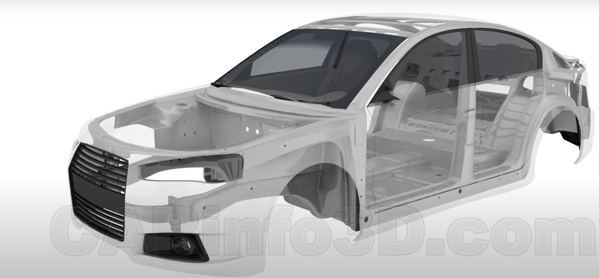 2.1.1 Thân Xe (Body)Thân xe là phần vỏ bên ngoài của ô tô, không chỉ tạo nên hình dáng và kiểu dáng của xe mà còn đóng vai trò bảo vệ người lái và hành khách khỏi các yếu tố bên ngoài như thời tiết và va chạm. Các nhà sản xuất ô tô ngày nay thường sử dụng các vật liệu nhẹ và bền như nhôm, thép cường lực cao hoặc composite để tạo ra thân xe. Điều này giúp giảm trọng lượng tổng thể của xe, tăng hiệu suất nhiên liệu và cải thiện độ an toàn.
2.1.2 Khung Xe (Frame)
Khung xe là cấu trúc chịu lực chính, hỗ trợ tất cả các bộ phận khác của xe. Có thể coi khung xe như “xương sống” của chiếc xe, giúp giữ cho mọi thứ ổn định và kết nối với nhau. Khung xe hiện đại thường được thiết kế dưới dạng khung liền khối (unibody) hoặc khung rời (body-on-frame), tùy thuộc vào loại xe. Khung unibody phổ biến trên các dòng xe chở khách do sự nhẹ nhàng và hiệu quả, trong khi khung body-on-frame thường thấy trên các xe tải hoặc SUV, nơi cần khả năng chịu tải lớn hơn.
Phần 2: Động Cơ (Engine)
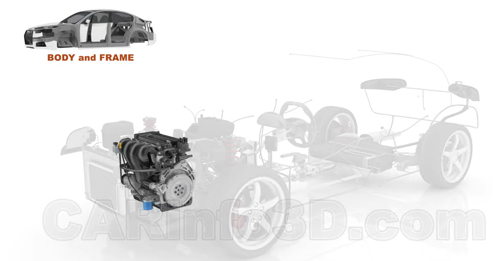+ Động cơ là “trái tim” của ô tô, nơi tạo ra sức mạnh để xe di chuyển. Động cơ đốt trong truyền thống sử dụng nhiên liệu như xăng hoặc dầu diesel, hoạt động theo nguyên lý đốt cháy nhiên liệu trong các xi lanh để sinh công. Piston trong xi lanh chuyển động lên xuống và chuyển đổi lực đẩy này thành chuyển động quay của trục khuỷu, từ đó truyền năng lượng đến các bánh xe thông qua hệ thống truyền động.
+ Trong các loại xe điện hoặc hybrid, động cơ điện thay thế hoặc hoạt động song song với động cơ đốt trong, sử dụng năng lượng từ pin để cung cấp mô-men xoắn trực tiếp cho bánh xe. Điều này giúp giảm phát thải khí CO2 và tăng hiệu suất năng lượng của xe.
Phần 3: Hệ Thống Truyền Động (Transmission)
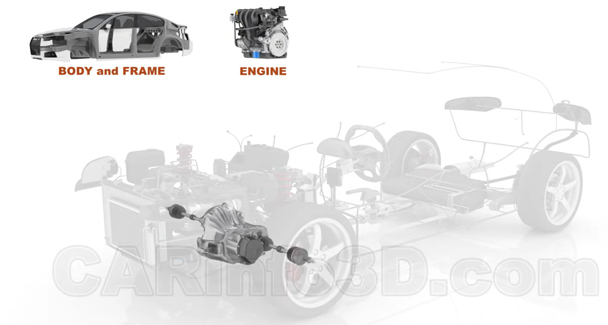+ Hệ thống truyền động đóng vai trò quan trọng trong việc truyền tải công suất từ động cơ đến các bánh xe. Đây là hệ thống phức tạp bao gồm nhiều bộ phận như hộp số, bộ vi sai và trục truyền động. Hộp số có nhiệm vụ điều chỉnh tỷ lệ truyền động, cho phép xe di chuyển ở nhiều tốc độ khác nhau và tối ưu hóa hiệu suất nhiên liệu.
+ Có nhiều loại hộp số khác nhau, bao gồm hộp số sàn, hộp số tự động, và hộp số vô cấp (CVT). Mỗi loại có ưu và nhược điểm riêng, nhưng mục tiêu chung là đảm bảo xe hoạt động mượt mà và tiết kiệm nhiên liệu.
Phần 4: Hệ Thống Treo, Bánh Xe, Lốp (Suspension Systems, Wheels, Tires)
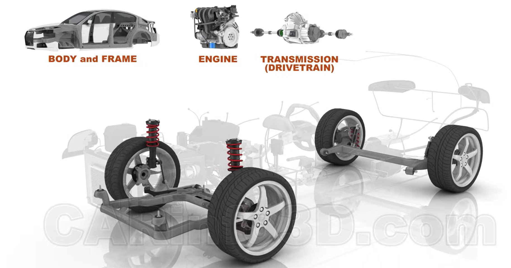+ Hệ Thống Treo (Suspension): Hệ thống treo của ô tô có nhiệm vụ hấp thụ các va chạm từ mặt đường, giúp xe di chuyển mượt mà và ổn định. Các thành phần chính trong hệ thống treo bao gồm lò xo, giảm chấn (shock absorbers), và các thanh giằng. Hệ thống này giúp duy trì sự tiếp xúc của bánh xe với mặt đường, đồng thời cải thiện khả năng điều khiển và độ an toàn của xe.
+ Bánh Xe và Lốp (Wheels and Tires): Bánh xe và lốp là những bộ phận quan trọng kết nối xe với mặt đường. Lốp xe phải đủ mạnh để chịu lực từ trọng lượng của xe, đồng thời cung cấp lực ma sát cần thiết để đảm bảo an toàn khi xe di chuyển và dừng lại. Lốp cũng ảnh hưởng đến khả năng lái xe, độ bám đường và tiết kiệm nhiên liệu. Việc lựa chọn loại lốp phù hợp với điều kiện đường xá và mục đích sử dụng của xe là vô cùng quan trọng.
Phần 5: Hệ Thống Điều Khiển (Control System)
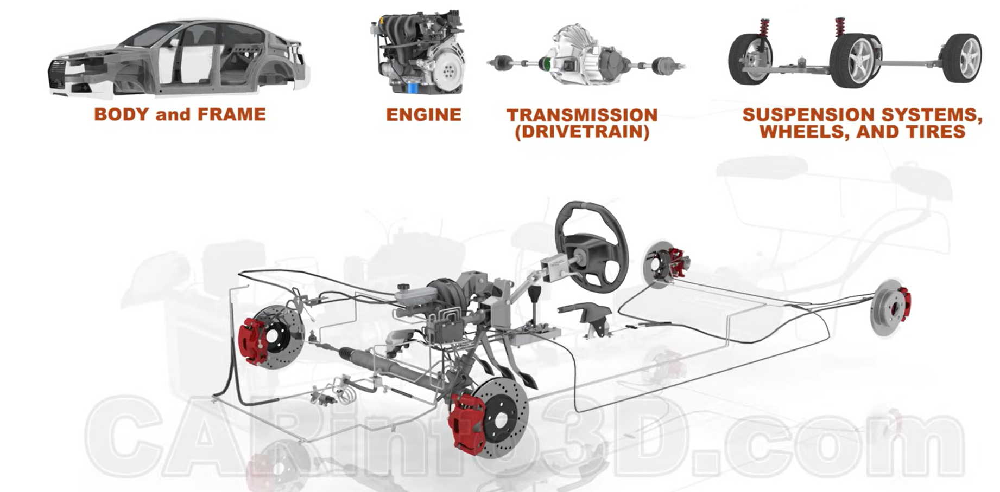+ Hệ Thống Lái (Steering): Hệ thống lái cho phép người điều khiển xe kiểm soát hướng di chuyển của ô tô. Vô lăng được kết nối với hệ thống lái thông qua cột lái, truyền lực từ tay lái đến các bánh trước. Ngày nay, nhiều xe được trang bị hệ thống lái trợ lực điện hoặc trợ lực thủy lực, giúp việc lái xe trở nên nhẹ nhàng và chính xác hơn.
+ Hệ Thống Phanh (Braking): Hệ thống phanh là yếu tố then chốt đảm bảo an toàn khi lái xe. Nó bao gồm phanh đĩa hoặc phanh trống ở các bánh xe, hệ thống dẫn động phanh (thủy lực hoặc điện), và các bộ phận phụ trợ như ABS (hệ thống chống bó cứng phanh). Hệ thống phanh hiện đại không chỉ giúp xe dừng lại nhanh chóng mà còn ổn định hơn, đặc biệt trên các mặt đường trơn trượt.
Phần 6: Hệ Thống Điện (Electrical System)
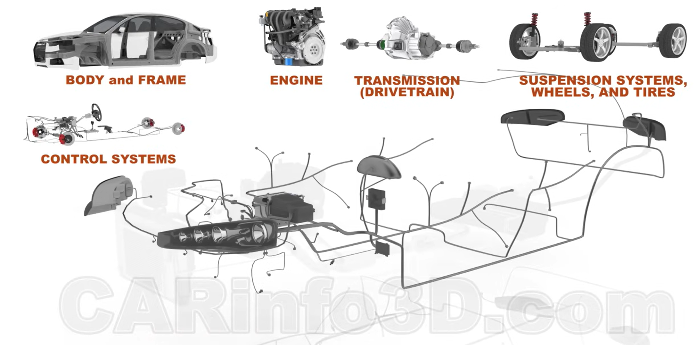+ Hệ thống điện của ô tô chịu trách nhiệm cung cấp năng lượng cho các thiết bị điện tử và hệ thống điều khiển trong xe. Nó bao gồm ắc quy, máy phát điện, dây dẫn và các bộ phận tiêu thụ điện như đèn chiếu sáng, hệ thống giải trí, điều hòa không khí và hệ thống kiểm soát động cơ. Với sự phát triển của công nghệ, hệ thống điện trên ô tô ngày càng phức tạp, đặc biệt với sự xuất hiện của các xe điện và hybrid.
Phần 7: Các Hệ Thống Con của Động Cơ và Thiết Bị Điều Hòa Không Khí (Engine Subsystems and Climatic Equipment)
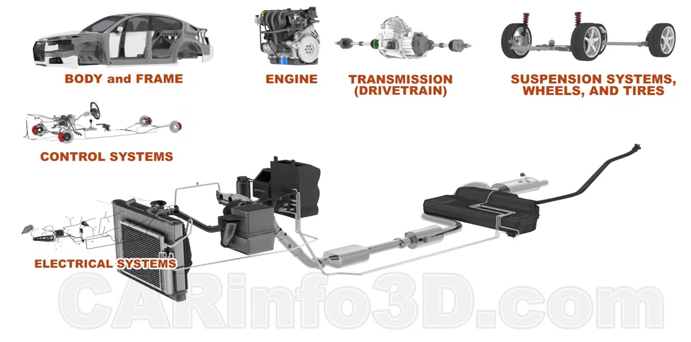+ Các hệ thống con của động cơ bao gồm hệ thống làm mát, hệ thống xả, hệ thống nhiên liệu và hệ thống bôi trơn. Mỗi hệ thống đảm nhiệm một vai trò quan trọng trong việc duy trì hiệu suất và tuổi thọ của động cơ. Ví dụ, hệ thống làm mát ngăn động cơ quá nhiệt, trong khi hệ thống xả giúp loại bỏ khí thải và giảm ô nhiễm môi trường.
+ Thiết Bị Điều Hòa Không Khí (Climatic Equipment): Thiết bị điều hòa không khí trong ô tô không chỉ giúp duy trì nhiệt độ thoải mái trong cabin mà còn kiểm soát độ ẩm và lọc không khí. Hệ thống này bao gồm máy nén, dàn bay hơi, dàn ngưng và các đường ống dẫn khí. Đặc biệt trong các xe hiện đại, hệ thống điều hòa không khí có thể được tích hợp với các hệ thống thông minh để điều chỉnh nhiệt độ tự động dựa trên điều kiện môi trường và sở thích của người lái.
+ Việc hiểu rõ cấu trúc và các hệ thống chính trong ô tô không chỉ giúp bạn đánh giá được chất lượng của một chiếc xe mà còn hỗ trợ trong việc bảo dưỡng và sửa chữa xe một cách hiệu quả. Hy vọng rằng bài viết này đã mang lại cho bạn cái nhìn toàn diện về cách một chiếc ô tô hoạt động từ trong ra ngoài.
Phần 8: Sự tương tác giữa các hệ thống ô tô thực tế
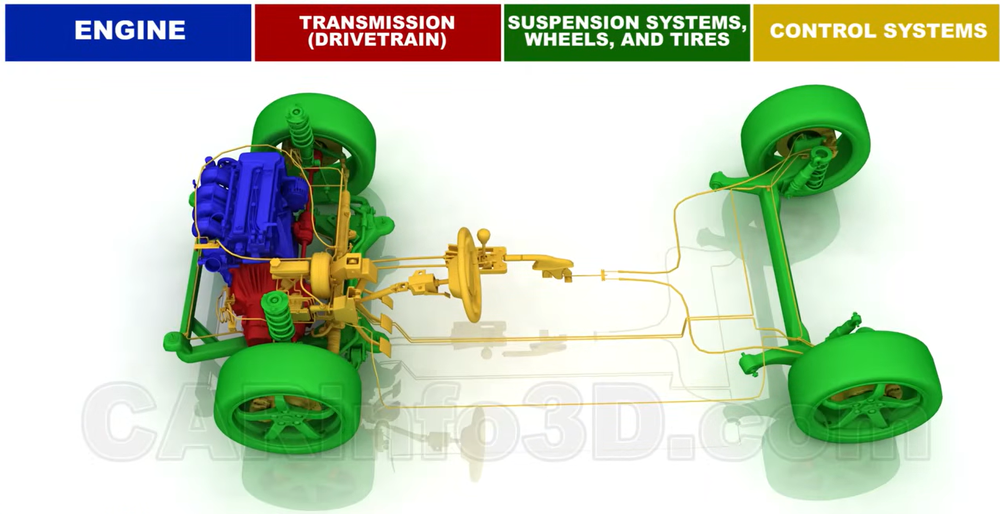Khi một chiếc ô tô hoạt động, các hệ thống khác nhau thường xuyên tương tác với nhau để đảm bảo xe vận hành an toàn, hiệu quả và thoải mái. Dưới đây là một vài ví dụ về sự tương tác giữa các hệ thống
2.8.1 Tăng Tốc Đột Ngột
+ Hệ thống liên quan: Động cơ, Hệ thống truyền động, Hệ thống điều khiển, Hệ thống treo, Hệ thống điện.
+ Cách thức hoạt động:
Khi bạn nhấn mạnh chân ga để tăng tốc, động cơ phải tạo ra nhiều công suất hơn để đáp ứng nhu cầu này.
Hệ thống truyền động sẽ điều chỉnh hộp số để chuyển sang số thấp hơn, giúp xe tăng tốc nhanh hơn.
Hệ thống treo phải đối phó với lực tăng lên khi xe tăng tốc, giúp duy trì độ ổn định của xe.
Hệ thống điện cung cấp năng lượng cho các cảm biến và bộ điều khiển động cơ (ECU) để điều chỉnh lượng nhiên liệu và không khí nạp vào động cơ một cách tối ưu.
2.8.2 Phanh Gấp
+ Hệ thống liên quan: Hệ thống phanh, Hệ thống treo, Hệ thống điện, Hệ thống điều khiển.
+ Cách thức hoạt động:
Khi bạn đạp phanh mạnh, hệ thống phanh sẽ ngay lập tức làm chậm bánh xe.
Hệ thống treo phải hấp thụ lực đẩy về phía trước do quá trình giảm tốc đột ngột, giúp giữ cho xe ổn định và giảm thiểu lắc lư.
Hệ thống điện sẽ kích hoạt hệ thống chống bó cứng phanh (ABS), ngăn chặn bánh xe bị khóa và giúp duy trì khả năng điều khiển xe.
Hệ thống điều khiển (như hệ thống cân bằng điện tử ESP) có thể can thiệp để giữ xe ổn định nếu phát hiện nguy cơ trượt hoặc mất kiểm soát.
2.8.3 Điều Hòa Không Khí và Hiệu Suất Động
+ Hệ thống liên quan: Động cơ, Hệ thống điện, Thiết bị điều hòa không khí.
+ Cách thức hoạt động:
Khi bật điều hòa không khí, máy nén điều hòa (một phần của hệ thống điều hòa) sẽ được động cơ truyền động, điều này có thể làm giảm công suất động cơ có sẵn cho việc di chuyển xe.
Hệ thống điện điều chỉnh việc cung cấp điện cho máy nén, các quạt làm mát và các cảm biến nhiệt độ.
ECU của động cơ có thể tăng nhẹ vòng tua máy khi bật điều hòa để bù đắp cho sự sụt giảm công suất và đảm bảo xe vẫn vận hành mượt mà.
2.8.4 Khởi Động Xe trong Trời Lạnh
+ Hệ thống liên quan: Hệ thống điện, Động cơ, Các hệ thống con của động cơ (hệ thống nhiên liệu, hệ thống làm mát).
+ Cách thức hoạt động:
Khi khởi động xe trong điều kiện thời tiết lạnh, hệ thống điện phải cung cấp đủ năng lượng cho máy khởi động và hệ thống sưởi động cơ.
Động cơ sẽ cần nhiều năng lượng hơn để khởi động do dầu nhớt và nhiên liệu trở nên đặc hơn trong điều kiện lạnh. Hệ thống nhiên liệu có thể bơm thêm nhiên liệu để giúp động cơ khởi động dễ dàng hơn.
Sau khi động cơ khởi động, hệ thống làm mát sẽ phải điều chỉnh nhiệt độ động cơ một cách từ từ để đảm bảo rằng động cơ không bị quá nhiệt hoặc quá lạnh.
2.8.5 Lái Xe Qua Đường Gập Ghềnh
+ Hệ thống liên quan: Hệ thống treo, Bánh xe và lốp, Hệ thống điều khiển, Hệ thống truyền động.
+ Cách thức hoạt động:
Khi xe di chuyển trên một con đường gập ghềnh, hệ thống treo sẽ hoạt động liên tục để hấp thụ các va chạm và rung lắc, giúp bánh xe giữ được độ bám với mặt đường.
Lốp xe cũng phải chịu lực tác động từ mặt đường và cung cấp độ bám phù hợp.
Hệ thống điều khiển có thể kích hoạt hệ thống kiểm soát lực kéo (Traction Control) nếu phát hiện bánh xe bị trượt.
Hệ thống truyền động có thể điều chỉnh tỷ lệ truyền động để duy trì lực kéo tối ưu trên các bề mặt không bằng phẳng.
Những ví dụ trên minh họa cách các hệ thống trong ô tô không hoạt động độc lập mà thường xuyên tương tác với nhau để đảm bảo chiếc xe hoạt động hiệu quả và an toàn trong nhiều tình huống khác nhau. Kết luận
Hiểu rõ cấu trúc và các hệ thống chính trong ô tô là bước quan trọng đầu tiên để nắm bắt những kiến thức phức tạp hơn trong ngành automotive. Những kiến thức này không chỉ giúp bạn hiểu về cách xe hoạt động mà còn là nền tảng để phát triển phần mềm trong lĩnh vực automotive, nơi mà các hệ thống điện tử và phần mềm ngày càng đóng vai trò quan trọng. Trong các bài viết tiếp theo, chúng ta sẽ đi sâu vào từng hệ thống và cách chúng hoạt động trong bối cảnh phát triển phần mềm cho ngành công nghiệp ô tô.
Topic 3: Thân Xe và Khung Xe (Body and Frame)
Khi nhìn vào một chiếc ô tô, thứ đầu tiên mà hầu hết mọi người thấy chính là thân xe. Tuy nhiên, ẩn bên dưới lớp vỏ ngoài bóng bẩy đó là một cấu trúc quan trọng không kém – khung xe. Cả thân xe và khung xe đều đóng vai trò quan trọng trong việc đảm bảo sự an toàn, hiệu suất và trải nghiệm lái xe của bạn. Trong bài blog này, chúng ta sẽ đi sâu vào tìm hiểu về thân xe và khung xe, giúp bạn có cái nhìn rõ ràng hơn về những yếu tố nền tảng này của một chiếc ô tô.
Phần 1: Thân Xe (Body): Bộ Áo Bảo Vệ và Thẩm Mỹ
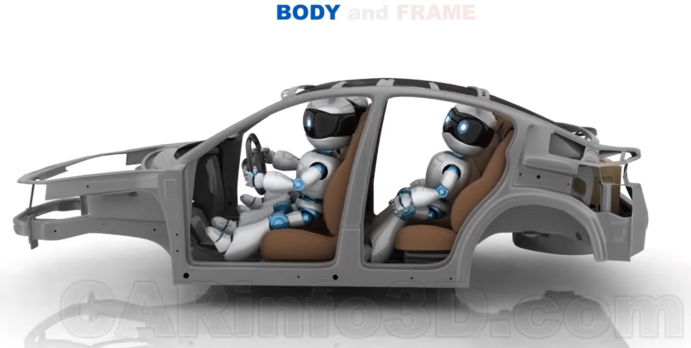3.1.1 Chức Năng Chính của Thân Xe Thân
Xe có thể được ví như lớp vỏ ngoài của một con ốc. Nó không chỉ là phần bao bọc mà còn là bộ phận bảo vệ, tạo ra không gian an toàn cho người lái và hành khách. Bên cạnh đó, thân xe còn có nhiệm vụ làm giảm tiếng ồn từ bên ngoài, chống lại tác động của thời tiết và giữ cho nội thất xe luôn thoải mái.
3.1.2 Thiết Kế Thân Xe
An Toàn và Khí Động Học Thiết kế thân xe ngày nay phải đáp ứng nhiều tiêu chí khác nhau. Một trong những yếu tố quan trọng nhất là an toàn. Thân xe được thiết kế để hấp thụ và phân tán lực tác động trong trường hợp va chạm, bảo vệ người ngồi trong xe. Các vùng hấp thụ lực va chạm (crumple zones) thường được tích hợp vào các khu vực như phần đầu và đuôi xe, giúp giảm bớt lực tác động lên khoang hành khách. Khí động học cũng là một yếu tố quan trọng trong thiết kế thân xe. Xe được thiết kế để giảm lực cản không khí, giúp tiết kiệm nhiên liệu và cải thiện hiệu suất. Những chiếc xe có hệ số cản gió thấp thường có đường nét mềm mại, với các bề mặt mượt mà và các cạnh được bo tròn để giảm thiểu sức cản.
3.1.3 Vật Liệu Sử Dụng cho Thân Xe
Thân xe hiện đại thường được làm từ các vật liệu nhẹ nhưng bền, như thép cường lực cao, hợp kim nhôm, và thậm chí là sợi carbon trong các dòng xe cao cấp. Việc sử dụng vật liệu nhẹ giúp giảm trọng lượng tổng thể của xe, từ đó cải thiện hiệu suất nhiên liệu và giảm khí thải.
• Thép cường lực cao: Đây là loại thép có độ bền cao, chịu được lực kéo mạnh mẽ và được sử dụng rộng rãi trong các bộ phận chịu lực của thân xe.
• Hợp kim nhôm: Nhẹ hơn thép, nhưng vẫn đảm bảo độ cứng và bền, nhôm thường được sử dụng ở những phần cần giảm trọng lượng như cửa xe, nắp ca-pô.
• Sợi carbon: Được sử dụng trong các xe thể thao và siêu xe, sợi carbon rất nhẹ và cứng, nhưng có giá thành cao.
Phần 2: Khung Xe (Frame): Xương Sống của Chiếc Xe
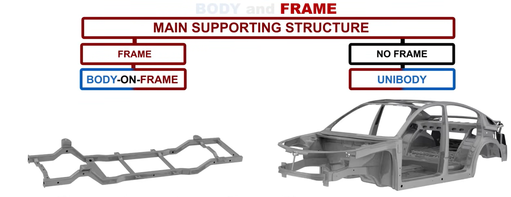3.2.1 Chức Năng Chính của Khung Xe
Khung xe là nền tảng cốt lõi của ô tô, nơi tất cả các bộ phận khác đều được gắn kết. Nó chịu trách nhiệm chính trong việc đảm bảo độ cứng cáp của toàn bộ cấu trúc xe, chịu tải trọng và hấp thụ các lực tác động từ mặt đường và va chạm. Một khung xe tốt phải cung cấp độ bền cao nhưng vẫn đủ linh hoạt để xử lý các lực tác động mà không bị biến dạng.
3.2.2 Các loại khung xe
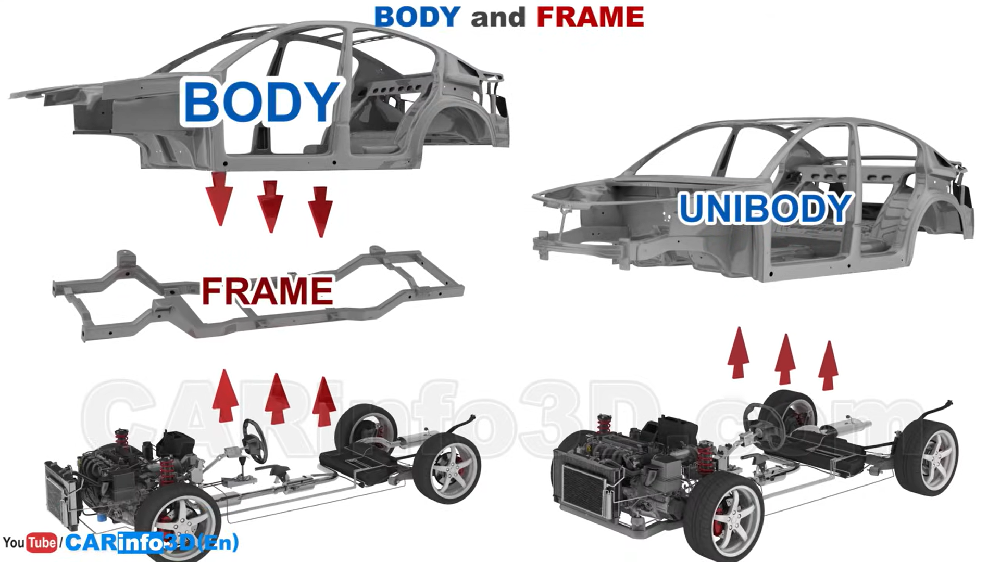
+ Hiện nay, có hai loại khung xe chính được sử dụng trong ngành công nghiệp ô tô: khung liền khối (unibody) và khung rời (body-on-frame).
+ Khung liền khối (unibody): Đây là loại khung phổ biến nhất trên các dòng xe chở khách hiện đại. Trong thiết kế này, thân xe và khung xe được kết hợp thành một khối thống nhất, giúp giảm trọng lượng và tăng cường độ cứng vững. Khung liền khối mang lại khả năng xử lý tốt hơn, đồng thời giảm thiểu rung lắc và tiếng ồn khi lái xe. Tuy nhiên, loại khung này khó sửa chữa hơn khi xảy ra va chạm nặng.
+ Khung rời (body-on-frame): Đây là loại khung truyền thống, thường được sử dụng trên các xe tải và SUV. Trong thiết kế này, thân xe được đặt lên trên một khung thép riêng biệt. Khung rời có khả năng chịu tải tốt hơn và dễ sửa chữa trong trường hợp hư hỏng nặng. Tuy nhiên, xe sử dụng khung rời thường nặng hơn và có hiệu suất nhiên liệu kém hơn so với khung liền khối.
+ Ưu Điểm Khung liền khối:
Chịu Tải Tốt: Cấu trúc này rất mạnh mẽ và có khả năng chịu tải cao, lý tưởng cho các xe tải hạng nặng và xe SUV cần kéo hoặc chở hàng nặng.
Dễ Sửa Chữa: Vì thân xe và khung xe là hai phần riêng biệt, việc sửa chữa xe sau va chạm nặng hoặc thay thế bộ phận trở nên dễ dàng hơn.
Độ Bền: Khung rời thường chịu được điều kiện khắc nghiệt, nên rất phù hợp cho các xe off-road hay các phương tiện sử dụng trong điều kiện đường xá kém.
+ Nhược Điểm Khung liền khối:
Trọng Lượng Nặng: Khung rời thường nặng hơn so với khung liền khối, dẫn đến xe tiêu thụ nhiên liệu nhiều hơn.
Khả Năng Xử Lý Kém: Do có trọng tâm cao hơn và trọng lượng lớn hơn, xe sử dụng khung rời thường không linh hoạt và dễ bị lật hơn khi vào cua ở tốc độ cao.
Độ Ồn và Rung Lắc: Khung rời có xu hướng tạo ra nhiều tiếng ồn và rung lắc hơn khi di chuyển trên đường không bằng phẳng.
+ Ưu Điểm Khung khung rời:
Trọng Lượng Nhẹ: Cấu trúc unibody thường nhẹ hơn, giúp cải thiện hiệu suất nhiên liệu và giảm khí thải.
Khả Năng Xử Lý Tốt: Nhờ trọng lượng nhẹ và cấu trúc cứng hơn, xe unibody thường có khả năng xử lý tốt hơn, ổn định hơn khi vào cua và mang lại cảm giác lái mượt mà.
An Toàn Cao: Cấu trúc liền khối giúp phân tán lực va chạm tốt hơn, bảo vệ người ngồi trong xe hiệu quả hơn trong các vụ tai nạn.
+ Nhược Điểm khung rời:
Khó Sửa Chữa: Nếu xe unibody bị hư hỏng nghiêm trọng ở phần thân, việc sửa chữa hoặc thay thế có thể rất khó khăn và tốn kém do khung và thân là một khối liền.
Chịu Tải Kém Hơn: Mặc dù đủ cứng để sử dụng trong xe chở khách, cấu trúc unibody thường không bền bỉ như khung rời trong các điều kiện khắc nghiệt hoặc tải trọng cao.
+ Ứng dụng thực tiễn:
Body-on-Frame: Được sử dụng phổ biến trong các loại xe cần độ bền cao và khả năng chịu tải tốt, như xe tải, SUV cỡ lớn, và xe off-road. Ví dụ, Toyota Land Cruiser hay Ford F-150 sử dụng cấu trúc body-on-frame.
Unibody: Phổ biến trong hầu hết các loại xe chở khách, sedan, crossover, và SUV nhỏ. Ví dụ, Honda Civic, Toyota Camry, và Subaru Outback đều sử dụng cấu trúc unibody.
+ Cả hai loại cấu trúc đều có ưu điểm và nhược điểm riêng, và sự lựa chọn giữa body-on-frame và unibody phụ thuộc vào nhu cầu sử dụng cụ thể của bạn.
Nếu bạn cần một chiếc xe bền bỉ, có thể chịu tải lớn và sử dụng trong điều kiện đường xấu hoặc off-road, body-on-frame là lựa chọn phù hợp.
Nếu bạn tìm kiếm một chiếc xe nhẹ, tiết kiệm nhiên liệu, với khả năng xử lý tốt và an toàn trong môi trường đô thị hoặc đường cao tốc, unibody sẽ là lựa chọn lý tưởng.
+ Việc hiểu rõ các điểm mạnh và yếu của từng loại cấu trúc sẽ giúp bạn đưa ra quyết định đúng đắn khi chọn mua một chiếc xe phù hợp với nhu cầu của mình.
3.2.3 Vật Liệu Sử Dụng cho Khung Xe
Giống như thân xe, khung xe cũng được chế tạo từ các vật liệu bền và nhẹ, nhằm tối ưu hóa trọng lượng và độ bền:
+ Thép cường lực cao: Là vật liệu chính cho khung xe, thép cường lực cao cung cấp độ cứng và khả năng chịu lực tuyệt vời.
+ Hợp kim nhôm: Được sử dụng để giảm trọng lượng, hợp kim nhôm thường xuất hiện trong các bộ phận như thanh giằng và giá đỡ. + Vật liệu composite: Trong các xe cao cấp, vật liệu composite có thể được sử dụng để giảm trọng lượng khung xe mà vẫn đảm bảo độ cứng.
3.2.4 Tính Linh Hoạt và An Toàn của Khung Xe
Khung xe không chỉ phải chịu được tải trọng mà còn phải đủ linh hoạt để hấp thụ và phân tán lực từ các va chạm. Các khu vực của khung xe, như trục trước và trục sau, được thiết kế để co lại hoặc biến dạng trong trường hợp va chạm, nhằm bảo vệ khoang hành khách. Khung xe cũng đóng vai trò quan trọng trong việc giữ cho các hệ thống như hệ thống treo, hệ thống lái và hệ thống phanh hoạt động chính xác, đảm bảo xe luôn ổn định và dễ điều khiển.
Phần 3: Mối quan hệ giữa Thân xe và Khung xe
+ Sự Kết Hợp Hoàn Hảo Thân xe và khung xe không chỉ là hai bộ phận riêng biệt mà còn làm việc cùng nhau để tạo nên một chiếc xe hoàn chỉnh. Trong các thiết kế hiện đại, thân xe và khung xe thường được kết hợp thành một khối thống nhất, đặc biệt trong các cấu trúc khung liền khối (unibody). Sự kết hợp này mang lại nhiều lợi ích về mặt hiệu suất và an toàn.+ Ảnh Hưởng Đến Trải Nghiệm Lái Xe Một chiếc xe có khung xe và thân xe được thiết kế tốt sẽ mang lại trải nghiệm lái xe êm ái, an toàn và thoải mái. Khung xe giúp đảm bảo rằng xe không bị rung lắc quá nhiều trên những con đường gập ghềnh, trong khi thân xe bảo vệ người ngồi trong xe và tạo ra một không gian lái xe yên tĩnh, dễ chịu.
Phần 4: Kết luận
Hiểu rõ về thân xe và khung xe là bước đầu tiên để hiểu về sự phức tạp và tinh tế trong thiết kế của một chiếc ô tô. Thân xe bảo vệ và tạo nên vẻ ngoài của xe, trong khi khung xe đóng vai trò xương sống, giữ cho mọi thứ hoạt động trơn tru. Sự kết hợp giữa hai yếu tố này giúp chiếc xe không chỉ vận hành tốt mà còn đảm bảo an toàn và mang lại sự thoải mái cho người sử dụng.Với những kiến thức cơ bản này, hy vọng bạn sẽ có cái nhìn sâu sắc hơn về chiếc ô tô mà mình đang sở hữu hoặc dự định mua trong tương lai. Việc hiểu rõ cấu trúc cơ bản của xe sẽ giúp bạn đánh giá đúng chất lượng, an toàn và độ bền của một chiếc ô tô.
Topic 4: Động cơ (Engine)
Động cơ là bộ phận quan trọng nhất của một chiếc ô tô, được coi như “trái tim” của xe. Nó chuyển hóa nhiên liệu thành năng lượng cơ học, giúp xe di chuyển. Dù bạn là người mới bắt đầu tìm hiểu về ô tô, việc nắm vững kiến thức về động cơ sẽ giúp bạn hiểu sâu hơn về cách một chiếc xe hoạt động. Hãy cùng khám phá chi tiết về động cơ ô tô trong bài viết này.Phần 1: Động Cơ Ô Tô Là Gì?
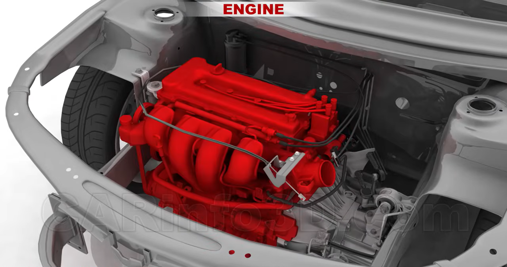Động cơ ô tô là một máy móc chuyển đổi năng lượng từ nhiên liệu (xăng, dầu diesel) hoặc điện thành động năng để xe di chuyển. Hầu hết các xe ô tô ngày nay sử dụng động cơ đốt trong (Internal Combustion Engine – ICE) hoặc động cơ điện.
4.1.1. Động Cơ Đốt Trong (ICE)
Động cơ đốt trong là loại động cơ phổ biến nhất, sử dụng năng lượng từ việc đốt cháy nhiên liệu (xăng hoặc dầu diesel) trong các xi lanh để tạo ra lực đẩy. Động cơ đốt trong có thể được chia thành hai loại chính:
+ Động Cơ Xăng: Sử dụng xăng làm nhiên liệu và đánh lửa bằng bugi.
+ Động Cơ Diesel: Sử dụng dầu diesel và đốt cháy bằng cách nén nhiên liệu đến mức nhiệt độ cao mà không cần bugi.
4.1.2. Động Cơ Điện
+ Động cơ điện sử dụng năng lượng từ pin hoặc nguồn điện để tạo ra mô-men xoắn, làm quay các bánh xe. Động cơ điện không cần quá trình đốt cháy nhiên liệu như động cơ đốt trong, nên không tạo ra khí thải. Đây là loại động cơ ngày càng phổ biến do các lợi ích về môi trường và hiệu suất.
Phần 2: Cấu Tạo Cơ Bản của Động Cơ Đốt Trong
Để hiểu cách một động cơ đốt trong hoạt động, trước hết chúng ta cần biết về các bộ phận chính trong cấu tạo của nó: 4.2.1. Xi Lanh (Cylinder) 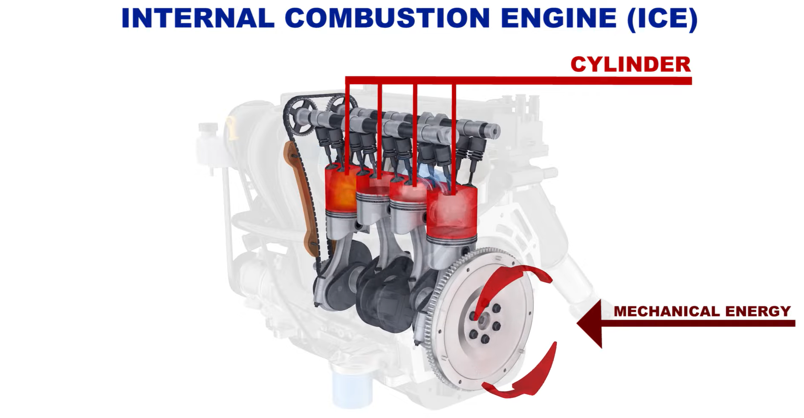Xi lanh là thành phần chính của động cơ, nơi diễn ra quá trình đốt cháy nhiên liệu. Mỗi xi lanh chứa một piston, di chuyển lên xuống bên trong nó. Động cơ ô tô có thể có từ 2 đến 12 xi lanh, tùy thuộc vào loại xe. Các xi lanh này được sắp xếp theo nhiều cách khác nhau, như:
+ Xếp thẳng (Inline): Tất cả các xi lanh được đặt trong một hàng dọc (ví dụ: động cơ I4 với 4 xi lanh xếp thẳng).
+ Xếp hình chữ V (V): Xi lanh được sắp xếp thành hai hàng, tạo thành hình chữ V (ví dụ: động cơ V6 với 6 xi lanh).
+ Xếp phẳng (Flat): Xi lanh được đặt nằm ngang, đối diện nhau (ví dụ: động cơ boxer của Subaru).
4.2.2. Piston 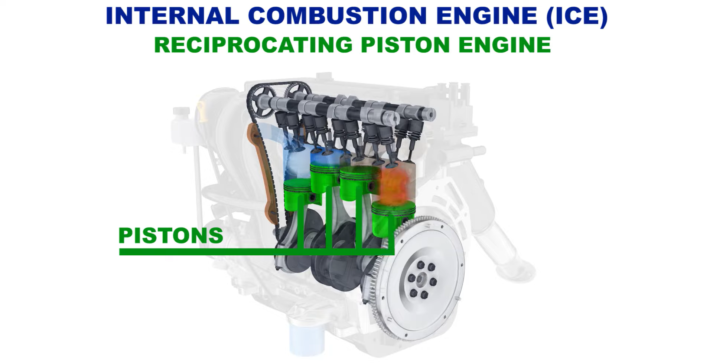
Piston là bộ phận di chuyển lên xuống bên trong xi lanh. Khi nhiên liệu đốt cháy, nó tạo ra áp suất đẩy piston di chuyển xuống, tạo ra chuyển động cơ học. Chuyển động của piston được truyền đến trục khuỷu qua thanh truyền.
4.2.3. Trục Khuỷu (Crankshaft) 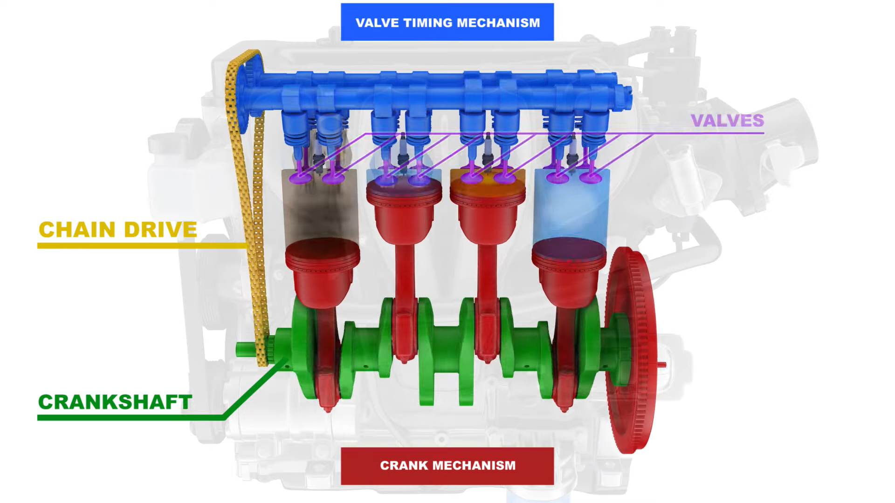
Trục khuỷu chuyển đổi chuyển động lên xuống của piston thành chuyển động quay, sau đó được truyền đến các bánh xe để xe di chuyển. Trục khuỷu thường được kết nối với các bánh đà và hộp số.
4.2.4. Hệ Thống Xupáp (Valve) Xupáp đóng vai trò như cửa đóng/mở trong quá trình nạp nhiên liệu và thải khí. Mỗi xi lanh có ít nhất một xupáp nạp để đưa không khí và nhiên liệu vào, và một xupáp xả để thải khí thải ra ngoài.
4.2.5. Bugi (Spark Plug) 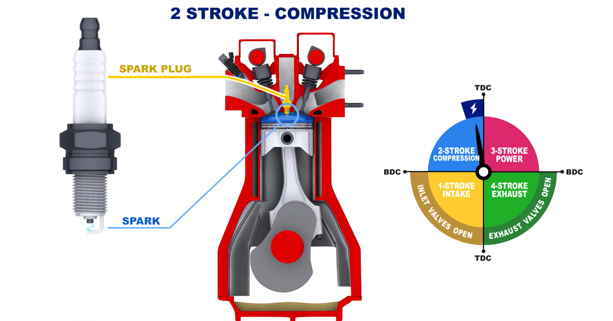
Bugi là bộ phận đánh lửa trong động cơ xăng. Nó tạo ra tia lửa điện đốt cháy hỗn hợp nhiên liệu và không khí trong xi lanh, khởi động quá trình đốt cháy.
4.2.6. Hệ Thống Nạp (Intake System) 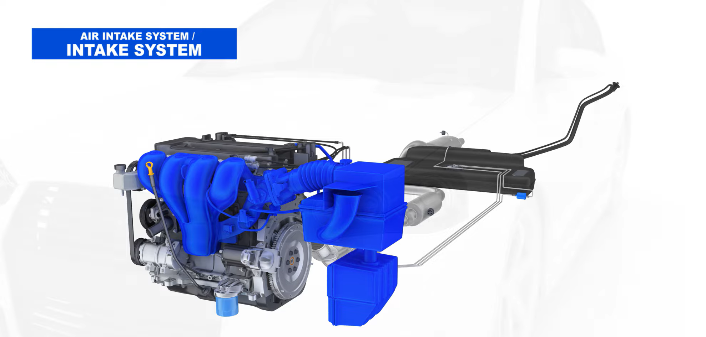
Hệ thống nạp cung cấp không khí sạch cho động cơ. Không khí được lọc qua lọc gió trước khi vào buồng đốt, nơi nó kết hợp với nhiên liệu để tạo ra quá trình đốt cháy.
4.2.7. Hệ Thống Cung Cấp Nhiên Liệu (Fuel Supply System) 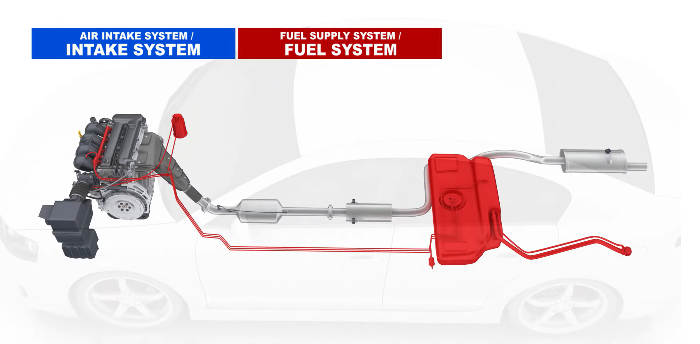
Hệ thống cung cấp nhiên liệu trong xe sử dụng động cơ đốt trong (Internal Combustion Engine – ICE) là một phần không thể thiếu, đảm bảo cung cấp nhiên liệu ổn định và chính xác đến động cơ để xe có thể hoạt động hiệu quả. Hệ thống này gồm nhiều thành phần làm việc cùng nhau để lưu trữ, vận chuyển, lọc, và phun nhiên liệu vào buồng đốt của động cơ.
4.2.8. Hệ Thống Xả (Exhaust System) 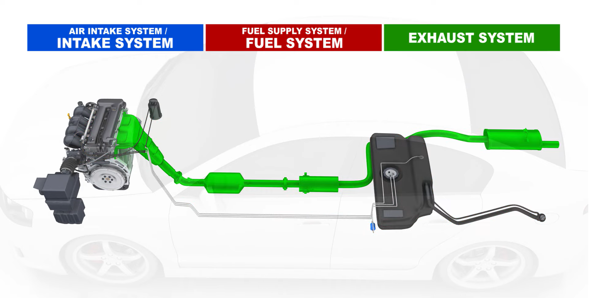
Sau khi quá trình đốt cháy diễn ra, khí thải được thải ra ngoài qua hệ thống xả. Hệ thống này bao gồm bộ phận giảm thanh (muffler) và bộ lọc khí thải (catalytic converter) để giảm tiếng ồn và loại bỏ các chất độc hại.
Phần 3: Nguyên lý làm việc của động cơ đốt trong
Động cơ đốt trong hoạt động theo một chu trình gồm bốn bước, được gọi là chu trình Otto đối với động cơ xăng hoặc chu trình Diesel đối với động cơ diesel. Các bước này diễn ra liên tục trong mỗi xi lanh:4.3.1. Nạp (Intake Stroke) 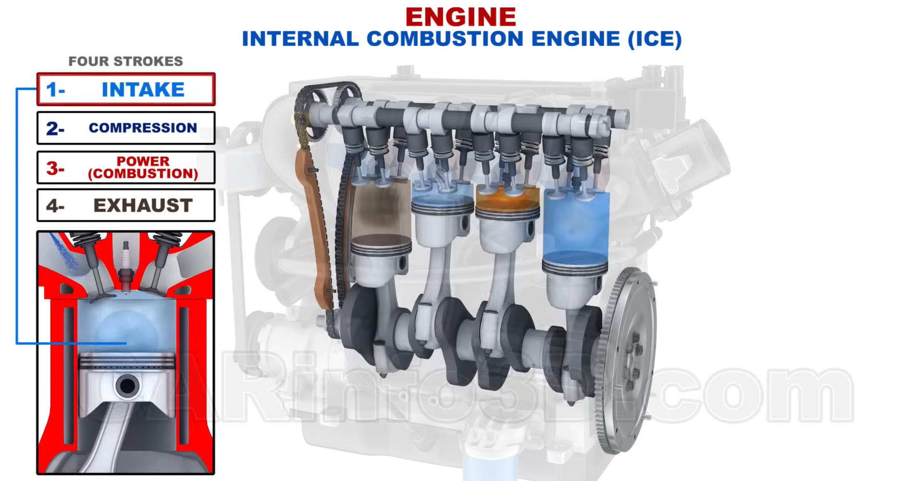
Xupáp nạp mở ra, piston di chuyển xuống, tạo khoảng trống trong xi lanh để hút hỗn hợp không khí và nhiên liệu (đối với động cơ xăng) hoặc chỉ không khí (đối với động cơ diesel) vào xi lanh.
Bước 1: Tạo Áp Suất Chân Không (VACUUM Pressure)
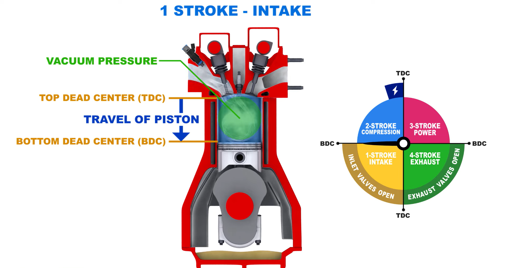
+ Vị trí của Piston: Piston bắt đầu hành trình của mình từ điểm chết trên (Top Dead Center – TDC), tức là vị trí cao nhất mà piston có thể đạt được trong xi-lanh.
+ Áp Suất Chân Không: Khi piston di chuyển từ TDC xuống điểm chết dưới (Bottom Dead Center – BDC), nó tạo ra một vùng áp suất thấp (chân không) trong xi-lanh. Áp suất chân không này hút không khí vào buồng đốt.
+ Hành Trình của Piston: Piston di chuyển từ TDC đến BDC, tăng thể tích buồng đốt và tạo điều kiện cho không khí hoặc hỗn hợp nhiên liệu-không khí được hút vào xi-lanh.
Bước 2: Mở Van Nạp (Inlet Valve Open)
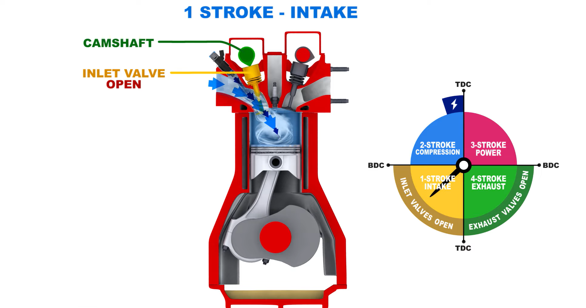
+ Trục Cam (Camshaft): Trục cam điều khiển các van của động cơ, trong đó có van nạp. Khi trục cam quay, nó đẩy cần mở van nạp (inlet valve), làm cho van này mở ra.
+ Van Nạp Mở: Van nạp mở ra cho phép không khí hoặc hỗn hợp nhiên liệu-không khí đi vào buồng đốt thông qua cổ họng nạp.
+ Bộ Phun Nhiên Liệu (Injector): Trong động cơ xăng, bộ phun nhiên liệu sẽ phun một lượng nhiên liệu chính xác vào không khí khi nó được hút vào xi-lanh để tạo ra hỗn hợp nhiên liệu-không khí.

Bước 3: Đóng Van Nạp (Inlet Valve Close) 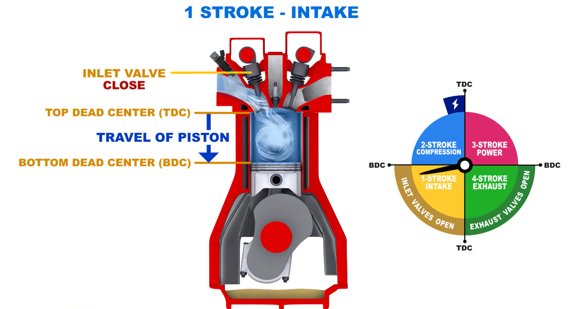
+ Van Nạp Đóng: Khi piston đến gần BDC, van nạp bắt đầu đóng lại để đảm bảo rằng không khí hoặc hỗn hợp nhiên liệu-không khí đã được nạp vào xi-lanh hoàn toàn. Quá trình này diễn ra gần khi piston chạm đáy hành trình của nó.
+ Vị trí của Piston: Piston kết thúc hành trình nạp tại điểm chết dưới (BDC).
+ Hành Trình của Piston: Trong quá trình nạp, piston di chuyển từ TDC xuống BDC, tạo ra một lực hút trong xi-lanh, và sau khi van nạp đóng, nó chuẩn bị cho quá trình nén tiếp theo.
Quá trình nạp là giai đoạn mà không khí hoặc hỗn hợp nhiên liệu-không khí được hút vào buồng đốt nhờ vào sự di chuyển của piston từ TDC đến BDC, được điều khiển bởi van nạp dưới sự kiểm soát của trục cam. Sự kết hợp giữa áp suất chân không và việc mở
4.3.2. Nén (Compression Stroke) 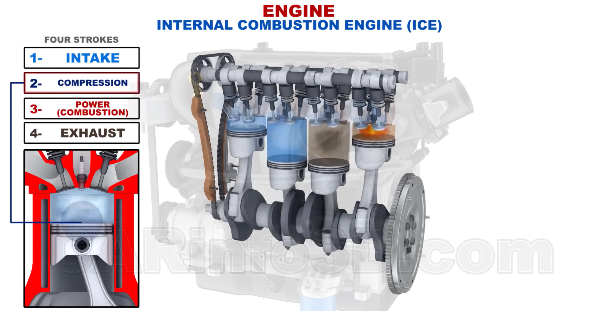
Piston di chuyển lên, nén hỗn hợp không khí và nhiên liệu lại, làm tăng áp suất và nhiệt độ trong xi lanh. Đối với động cơ diesel, chỉ có không khí bị nén.
Bước 1: Nén hỗn hợp nhiên liệu 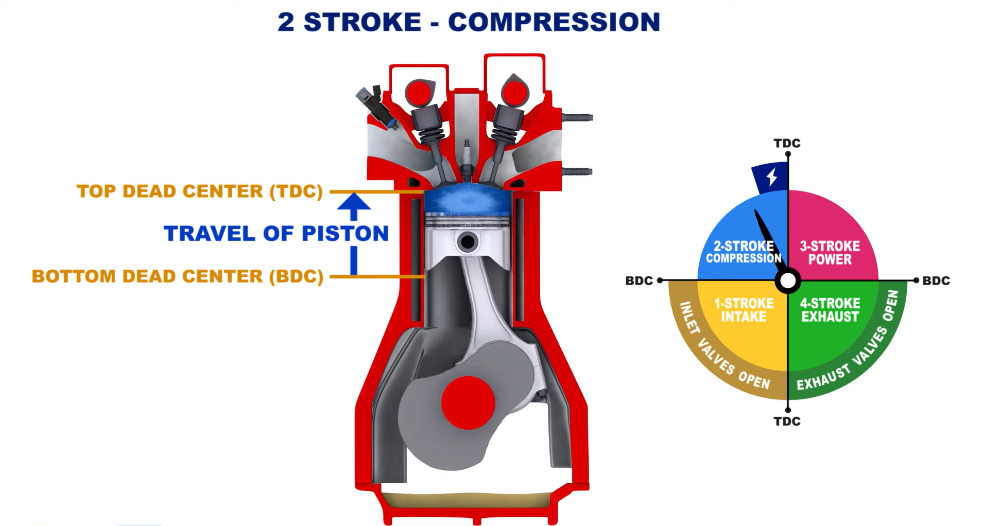
+ Vị trí của Piston: Quá trình nén bắt đầu khi piston đang ở điểm chết dưới (Bottom Dead Center – BDC), sau khi đã hoàn tất quá trình nạp.
+ Hành Trình của Piston: Piston di chuyển từ BDC lên điểm chết trên (Top Dead Center – TDC). Trong quá trình này, thể tích của buồng đốt giảm xuống, làm tăng áp suất và nhiệt độ của hỗn hợp không khí và nhiên liệu hoặc không khí đơn thuần.
Bước 2: Bước 2: Đánh Lửa (Spark)
+ Bugi (Spark Plug): Trong động cơ xăng, khi piston di chuyển lên gần TDC, bộ phận đánh lửa (spark plug) tạo ra tia lửa điện để đốt cháy hỗn hợp nhiên liệu-không khí đã được nén.
+ Quá Trình Đánh Lửa: Tia lửa từ bugi ignites hỗn hợp nhiên liệu-không khí trong buồng đốt, tạo ra một vụ nổ mạnh. Sự cháy nổ này làm tăng áp suất nhanh chóng trong buồng đốt.
Lưu ý: + Động cơ diesel: Động cơ diesel không sử dụng bugi mà dựa vào nhiệt độ cao do quá trình nén tạo ra để tự động đốt cháy nhiên liệu.
+ Tỷ số nén: Tỷ số nén là tỷ lệ giữa thể tích lớn nhất và nhỏ nhất của buồng cháy. Tỷ số nén cao giúp tăng hiệu suất của động cơ nhưng cũng làm tăng nguy cơ kích nổ.
Trong quá trình nén, piston di chuyển từ BDC lên TDC, nén hỗn hợp không khí và nhiên liệu (hoặc không khí trong động cơ diesel), làm tăng áp suất và nhiệt độ trong buồng đốt. Đối với động cơ xăng, tại TDC, tia lửa từ bugi sẽ kích thích hỗn hợp nhiên liệu-không khí để tạo ra một vụ nổ mạnh, chuẩn bị cho quá trình cháy nổ tiếp theo. Đối với động cơ diesel, quá trình nén sẽ dẫn đến sự tự bốc cháy của nhiên liệu do áp suất và nhiệt độ cao.
4.3.3. Đốt Cháy (Power Stroke)

Ở đỉnh của quá trình nén, bugi đánh lửa (trong động cơ xăng) hoặc nhiên liệu được phun vào không khí nén (trong động cơ diesel) và tự bốc cháy. Quá trình đốt cháy này tạo ra áp suất lớn, đẩy piston xuống, tạo ra lực đẩy chính để làm quay trục khuỷu.
Bước 1: Điểm Cao Nhất của Quá Trình Cháy (Climax of Combustion) 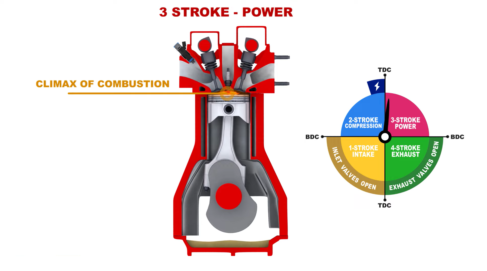
+ Quá Trình Cháy: Tại điểm chết trên (Top Dead Center – TDC), hỗn hợp nhiên liệu-không khí đã được nén ở áp suất và nhiệt độ cao. Trong động cơ xăng, tia lửa từ bugi sẽ kích thích sự cháy của hỗn hợp. Trong động cơ diesel, nhiệt độ cao do quá trình nén đủ để tự bốc cháy nhiên liệu khi được phun vào buồng đốt.
+ Tạo Ra Áp Suất Cao: Sự cháy nhanh chóng và mạnh mẽ tạo ra một lượng khí nở rộng nhanh chóng, dẫn đến sự tăng cường áp suất trong buồng đốt. Áp suất này được chuyển hóa thành lực tác động lên piston.
Bước 2: Vị trí của Piston và Cơ Cấu Kết Nối (TDC, BDC, Connecting Rod)

+ Vị trí của Piston: Sau khi đạt đến điểm cao nhất (TDC), piston sẽ di chuyển xuống điểm chết dưới (Bottom Dead Center – BDC) do lực đẩy của khí nở rộng. Hành Trình của Piston: Trong quá trình đốt cháy, piston di chuyển từ TDC xuống BDC, chuyển hóa năng lượng từ quá trình cháy thành công suất cơ học.
+ Cơ Cấu Kết Nối (Connecting Rod): Connecting rod liên kết piston với trục khuỷu (crankshaft). Khi piston di chuyển xuống dưới, connecting rod truyền chuyển động này đến trục khuỷu, làm cho trục khuỷu quay và tạo ra công suất để điều khiển xe.
Trong quá trình đốt cháy, sự cháy của hỗn hợp nhiên liệu-không khí (hoặc chỉ nhiên liệu trong động cơ diesel) tại TDC tạo ra một lượng khí nở rộng nhanh chóng, gây ra áp suất cao trong buồng đốt. Áp suất này đẩy piston di chuyển từ TDC xuống BDC. Cơ cấu connecting rod truyền chuyển động của piston đến trục khuỷu, tạo ra công suất cơ học để vận hành xe. Quá trình này đóng vai trò chính trong việc cung cấp năng lượng cho động cơ và chuyển hóa năng lượng hóa học của nhiên liệu thành năng lượng cơ học.
4.3.4. Xả (Exhaust Stroke) 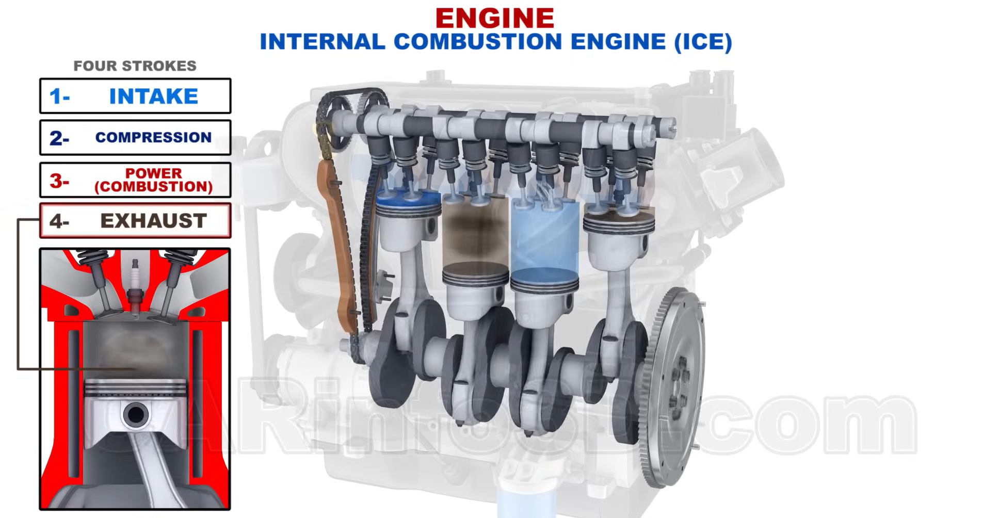
Xupáp xả mở ra, piston di chuyển lên, đẩy khí thải ra khỏi xi lanh và vào hệ thống xả. Sau đó, chu trình bắt đầu lại với bước nạp.
Bước 1: Đẩy khí thải ra ngoài 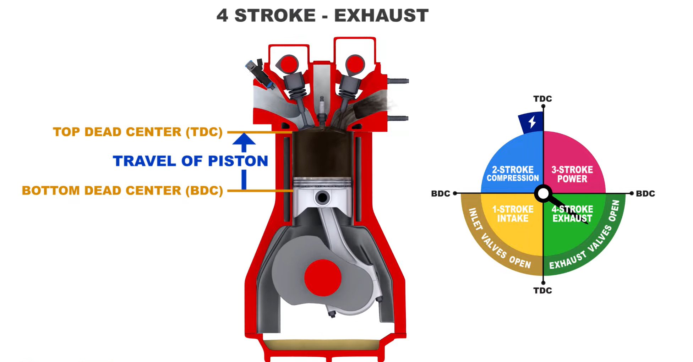
+ Vị trí của Piston: Quá trình xả bắt đầu khi piston ở điểm chết dưới (Bottom Dead Center – BDC) sau khi hoàn tất quá trình đốt cháy.
+ Hành Trình của Piston: Piston di chuyển từ BDC lên điểm chết trên (Top Dead Center – TDC). Trong khi piston di chuyển lên, thể tích của buồng đốt giảm xuống, tạo áp suất dương để đẩy khí thải ra ngoài qua hệ thống xả.
Bước 2: Mở Van Xả (Exhaust Valve Open) 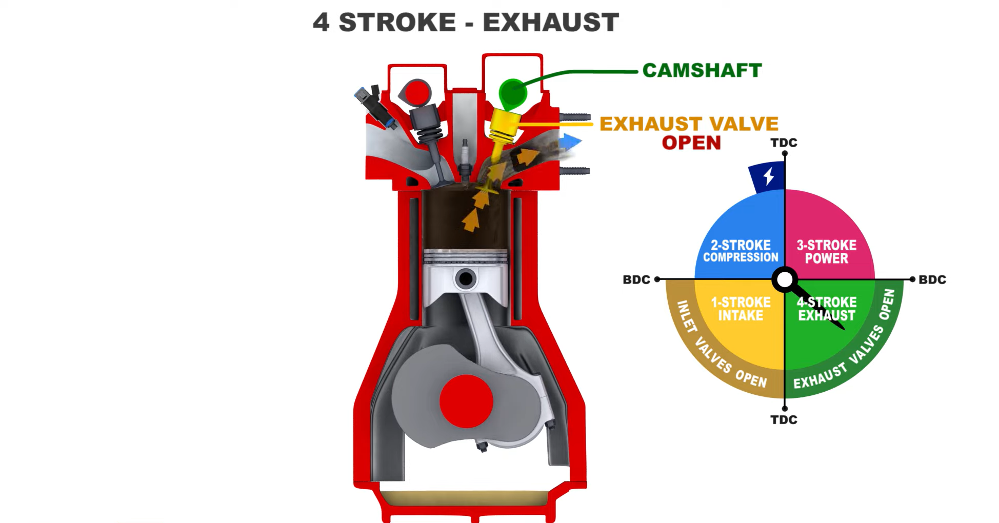
+ Trục Cam (Camshaft): Trục cam điều khiển mở và đóng các van của động cơ, bao gồm van xả. Khi trục cam quay, nó đẩy cần van xả để mở van xả.
+ Van Xả Mở: Van xả mở ra khi piston đang di chuyển từ BDC lên TDC, cho phép khí thải thoát ra ngoài qua ống xả. Sự mở van xả đồng thời với chuyển động của piston giúp khí thải được đẩy ra nhanh chóng khỏi buồng đốt.
Bước 3: Đóng Van Xả (Exhaust Valve Closed) 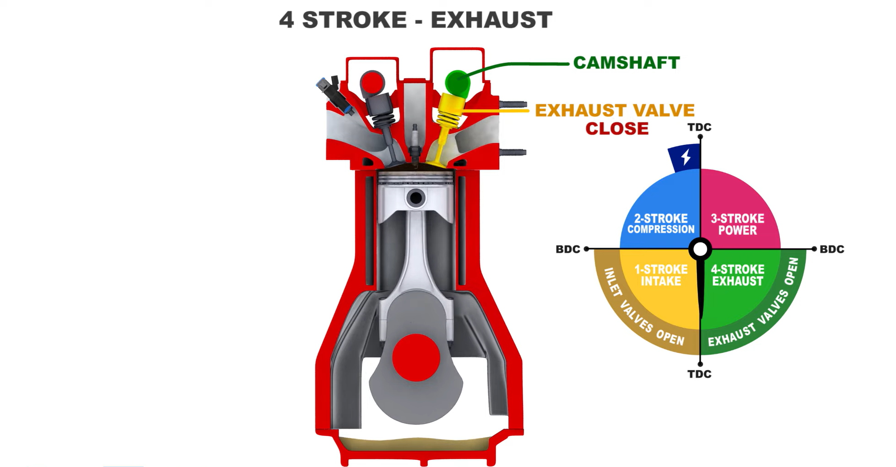
+ Trục Cam (Camshaft): Khi piston gần đạt đến TDC, trục cam tiếp tục quay để đóng van xả.
+ Van Xả Đóng: Van xả đóng lại khi piston đạt TDC, ngăn không cho khí thải quay trở lại vào buồng đốt. Đóng van xả chuẩn bị cho quá trình nạp của kỳ tiếp theo.
+ Hành Trình của Piston: Piston đã đạt TDC và sẵn sàng cho quá trình nạp tiếp theo khi van xả đã đóng, chuẩn bị cho chu trình mới.
Trong quá trình xả, piston di chuyển từ BDC lên TDC, làm giảm thể tích của buồng đốt và tạo áp suất dương để đẩy khí thải ra ngoài qua van xả. Trục cam điều khiển van xả mở ra khi piston đang di chuyển lên và đóng lại khi piston đạt TDC. Quá trình xả kết thúc khi van xả đóng, chuẩn bị cho kỳ nạp tiếp theo. Quá trình này đảm bảo rằng buồng đốt được làm sạch và sẵn sàng nhận hỗn hợp nhiên liệu mới để bắt đầu một chu trình hoạt động mới.
Phần 4: Mô tả Hệ Thống Cung Cấp Nhiên Liệu, Không Khí và Xả
Trong động cơ đốt trong, ba hệ thống chính là cung cấp nhiên liệu (Fuel Feed), cung cấp không khí (Air Feed), và xả (Exhaust) làm việc phối hợp để đảm bảo hiệu suất hoạt động tối ưu của động cơ. Dưới đây là mô tả chi tiết về từng hệ thống: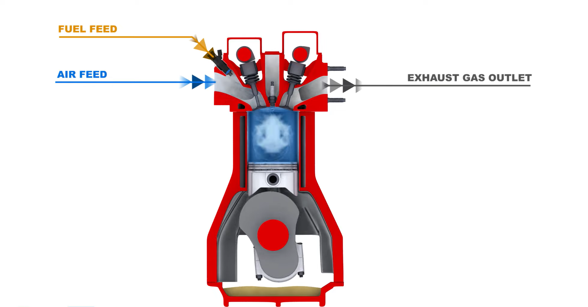
4.4.1. Hệ Thống Cung Cấp Nhiên Liệu (Fuel Feed) Chức Năng:
Hệ thống cung cấp nhiên liệu có nhiệm vụ cung cấp một lượng nhiên liệu chính xác vào buồng đốt của động cơ để đảm bảo quá trình cháy diễn ra hiệu quả.
Các Thành Phần Chính:
+ Bơm Nhiên Liệu (Fuel Pump): Đưa nhiên liệu từ bình chứa đến các vòi phun. Có thể là bơm cơ khí hoặc bơm điện.
+ Bộ Lọc Nhiên Liệu (Fuel Filter): Loại bỏ các tạp chất và bụi bẩn trong nhiên liệu trước khi nó vào buồng đốt.
+ Vòi Phun Nhiên Liệu (Fuel Injector): Phun nhiên liệu vào buồng đốt hoặc vào hệ thống nạp. Trong động cơ xăng, vòi + phun tạo ra hỗn hợp nhiên liệu-không khí. Trong động cơ diesel, nhiên liệu được phun trực tiếp vào không khí nén.
Nguyên Lý Hoạt Động:
+ Nhiên liệu được bơm từ bình chứa qua bộ lọc để loại bỏ tạp chất.
+ Nhiên liệu sau đó được đưa đến vòi phun và được phun vào buồng đốt theo nhu cầu của động cơ.
4.4.2. Hệ Thống Cung Cấp Không Khí (Air Feed) Chức Năng:
Hệ thống cung cấp không khí đảm bảo rằng động cơ nhận đủ lượng không khí cần thiết để hòa trộn với nhiên liệu và tạo ra quá trình cháy hiệu quả.
Các Thành Phần Chính:
+ Bộ Lọc Không Khí (Air Filter): Loại bỏ bụi bẩn và tạp chất trong không khí trước khi không khí vào động cơ.
+ Cổ Họng Nạp (Intake Manifold): Phân phối không khí vào các xi-lanh của động cơ.
+ Van Nạp (Intake Valve): Mở và đóng để cho không khí vào buồng đốt trong quá trình nạp.
Nguyên Lý Hoạt Động:
+ Không khí được hút vào qua bộ lọc không khí và đi vào cổ họng nạp.
+ Trong quá trình nạp, van nạp mở ra để không khí vào buồng đốt, nơi nó sẽ hòa trộn với nhiên liệu.
4.4.3. Hệ Thống Xả (Exhaust) Chức Năng:
Hệ thống xả loại bỏ khí thải đã qua quá trình đốt cháy ra khỏi buồng đốt và ra ngoài môi trường, đồng thời giảm thiểu ô nhiễm và tiếng ồn.
Các Thành Phần Chính:
+ Van Xả (Exhaust Valve): Mở ra để khí thải thoát ra khỏi buồng đốt trong quá trình xả.
+ Ống Xả (Exhaust Pipe): Đưa khí thải từ động cơ ra ngoài.
+ Hệ Thống Xả (Exhaust System): Bao gồm các bộ phận như bộ giảm thanh (muffler) và bộ chuyển đổi xúc tác (catalytic converter) để giảm tiếng ồn và giảm khí thải độc hại.
Nguyên Lý Hoạt Động:
+ Sau khi quá trình đốt cháy hoàn tất, van xả mở ra khi piston di chuyển từ BDC lên TDC để đẩy khí thải ra ngoài.
+ Khí thải đi qua ống xả, nơi nó được xử lý để giảm thiểu ô nhiễm và tiếng ồn trước khi ra ngoài môi trường.
Các hệ thống cung cấp nhiên liệu, không khí, và xả làm việc phối hợp để đảm bảo động cơ hoạt động hiệu quả. Hệ thống cung cấp nhiên liệu đưa nhiên liệu vào buồng đốt, hệ thống cung cấp không khí cung cấp không khí cần thiết cho quá trình cháy, và hệ thống xả loại bỏ khí thải để làm sạch buồng đốt và giảm ô nhiễm môi trường.
4.4.4. Tốc độ chuyển động 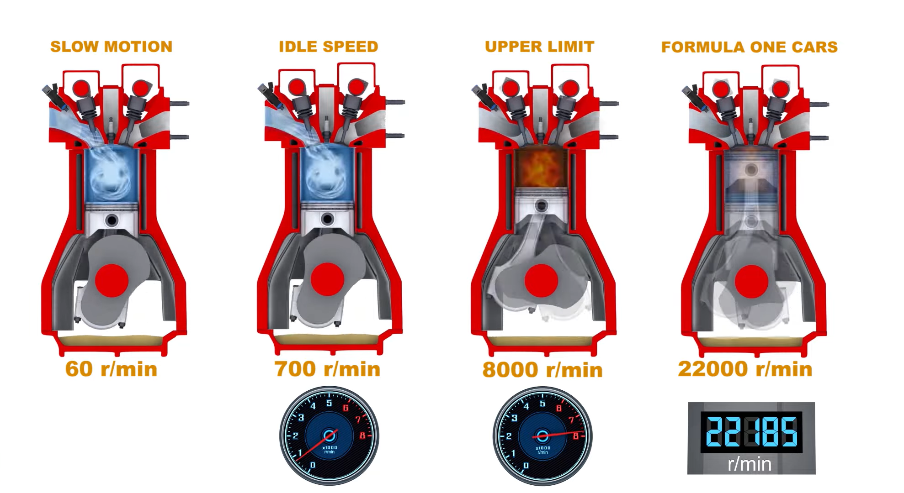
Chuyển Động Chậm (Slow Motion): 60 RPM Đây là tốc độ cực kỳ chậm, thường không được sử dụng trong động cơ ô tô và chỉ thấy trong các ứng dụng đặc biệt hoặc mô hình.
Tốc Độ Rỗi (Idle Speed): 700 RPM Đây là tốc độ vòng quay của động cơ khi xe đang đứng yên, thường được duy trì khi động cơ hoạt động mà không chịu tải. Tốc độ này có thể thay đổi tùy thuộc vào loại động cơ và hệ thống điều chỉnh tốc độ của xe.
Tốc Độ Cao (Upper Speed): 8000 RPM Đây là tốc độ vòng quay cao, thường đạt được trong các xe thể thao hoặc xe đua trên đường đua, nơi động cơ có thể hoạt động ở tốc độ cao để đạt hiệu suất tối đa.
Xe Đua Công Thức Một (Formula One Cars): 22000 RPM Đây là tốc độ vòng quay cực cao, đạt được trong các xe đua Formula One. Động cơ Formula One được thiết kế để hoạt động ở tốc độ rất cao để đạt hiệu suất tối đa và tốc độ cao nhất.
Phần 5: Các hệ thống con của động cơ ô tô
4.5.1. Hệ Thống Nạp (Intake System) 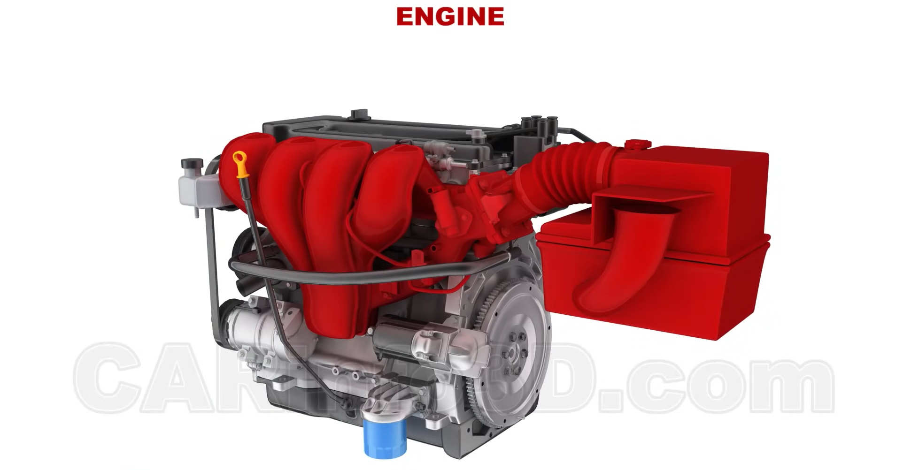Chức Năng:
Hệ thống nạp có nhiệm vụ cung cấp không khí sạch vào buồng đốt của động cơ. Không khí là yếu tố cần thiết trong quá trình đốt cháy nhiên liệu, tạo ra năng lượng để xe di chuyển.
Các thành phần chính:
Lọc Gió (Air Filter): Lọc gió là thành phần đầu tiên trong hệ thống nạp, giúp loại bỏ bụi bẩn và các hạt nhỏ từ không khí trước khi vào động cơ. Một lọc gió sạch đảm bảo không khí vào động cơ là sạch sẽ, giúp duy trì hiệu suất động cơ và kéo dài tuổi thọ các bộ phận bên trong.
Ống Dẫn Không Khí (Air Intake Duct): Sau khi không khí đi qua lọc gió, nó được dẫn vào động cơ thông qua ống dẫn không khí. Ống này được thiết kế để giảm thiểu lực cản không khí và tăng cường hiệu suất nạp khí.
Cổ Hút (Intake Manifold): Cổ hút phân phối không khí đồng đều tới các xi lanh của động cơ. Thiết kế cổ hút ảnh hưởng đến cách không khí chảy vào động cơ, từ đó tác động đến hiệu suất và mô-men xoắn của động cơ.
Tác động đến hiệu suất:
Một hệ thống nạp hiệu quả đảm bảo rằng đủ không khí sạch được đưa vào buồng đốt, tối ưu hóa quá trình đốt cháy và tăng cường hiệu suất động cơ. Nâng cấp hệ thống nạp có thể giúp cải thiện công suất động cơ và tiết kiệm nhiên liệu.
4.5.2. Hệ Thống Xả (Exhaust System) 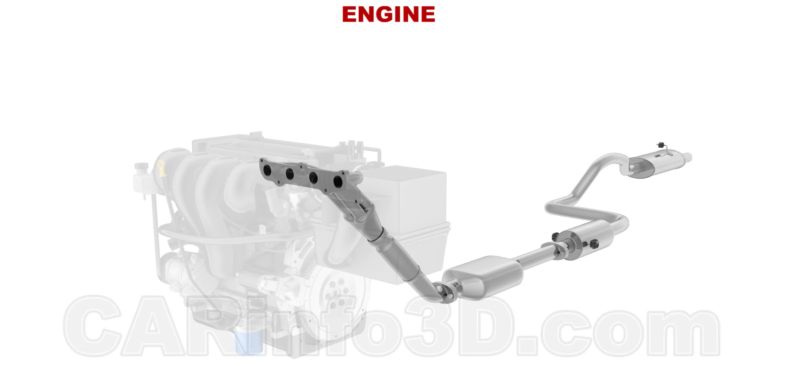
Chức Năng:
Hệ thống xả có nhiệm vụ thải các khí đã cháy ra khỏi động cơ và giảm thiểu tiếng ồn cũng như khí thải độc hại ra môi trường.
Các thành phần chính:
Cổ Xả (Exhaust Manifold): Là phần kết nối trực tiếp với các xi lanh, nơi các khí thải được thu thập từ buồng đốt và dẫn ra ngoài.
Bộ Lọc Khí Thải (Catalytic Converter): Đây là bộ phận quan trọng trong việc giảm thiểu khí thải độc hại. Bộ lọc này chuyển đổi các khí độc như CO, NOx và HC thành các chất ít gây hại hơn như CO2 và hơi nước.
Bộ Giảm Thanh (Muffler): Bộ phận này làm giảm tiếng ồn do khí xả tạo ra khi thoát ra khỏi động cơ. Nó hoạt động bằng cách tạo ra các khoang để làm giảm áp suất của khí xả và giảm âm thanh.
Ống Xả (Exhaust Pipe): Ống xả là đường dẫn cuối cùng của khí thải ra khỏi xe. Độ dài, đường kính và thiết kế của ống xả có thể ảnh hưởng đến âm thanh và hiệu suất của động cơ.
Tác động đến hiệu suất:
Một hệ thống xả hiệu quả không chỉ giúp xe hoạt động êm ái mà còn giảm thiểu khí thải độc hại. Nâng cấp hệ thống xả có thể giúp tăng cường hiệu suất động cơ và tạo ra âm thanh mạnh mẽ hơn.
4.5.3. Hệ Thống Cung Cấp Nhiên Liệu (Fuel Supply System) 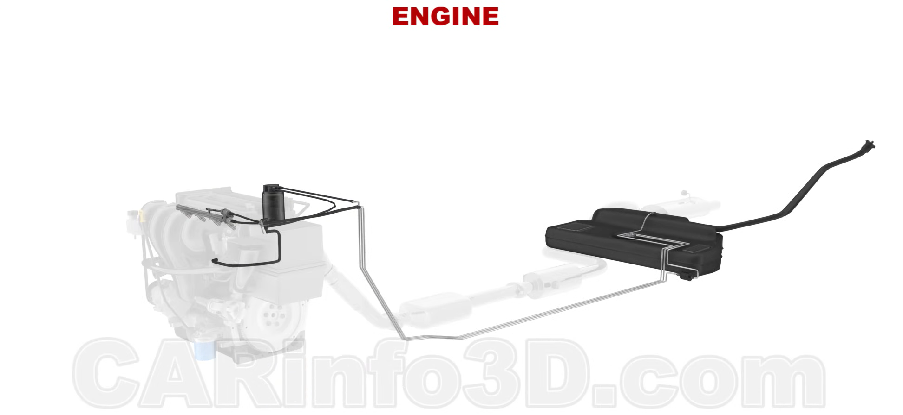
Chức Năng:
Hệ thống cung cấp nhiên liệu có nhiệm vụ lưu trữ và cung cấp nhiên liệu cho động cơ đúng lúc và đúng lượng cần thiết để đảm bảo quá trình đốt cháy diễn ra hiệu quả.
Các thành phần chính:
Bình Nhiên Liệu (Fuel Tank): Bình chứa nhiên liệu của xe, được thiết kế để lưu trữ nhiên liệu an toàn và cung cấp một lượng đủ cho động cơ hoạt động trong một khoảng thời gian dài.
Bơm Nhiên Liệu (Fuel Pump): Bơm nhiên liệu có nhiệm vụ bơm nhiên liệu từ bình chứa đến hệ thống phun nhiên liệu hoặc bộ chế hòa khí. Có thể là bơm cơ khí hoặc bơm điện tùy thuộc vào thiết kế xe.
Lọc Nhiên Liệu (Fuel Filter): Nhiên liệu trước khi vào động cơ được lọc qua bộ lọc nhiên liệu để loại bỏ tạp chất và cặn bẩn, giúp bảo vệ động cơ và các bộ phận liên quan.
Kim Phun (Fuel Injector): Kim phun có nhiệm vụ phun nhiên liệu vào buồng đốt dưới dạng sương mù, giúp nhiên liệu dễ dàng hòa trộn với không khí và đốt cháy hiệu quả.
Tác động đến hiệu suất:
Một hệ thống cung cấp nhiên liệu hoạt động tốt giúp động cơ nhận đủ nhiên liệu ở áp suất chính xác, đảm bảo quá trình đốt cháy hiệu quả và tối ưu hóa công suất động cơ. Nếu hệ thống này bị tắc nghẽn hoặc hỏng hóc, hiệu suất và tiết kiệm nhiên liệu sẽ bị ảnh hưởng nghiêm trọng.
4.5.4. Hệ Thống Làm Mát (Cooling System) 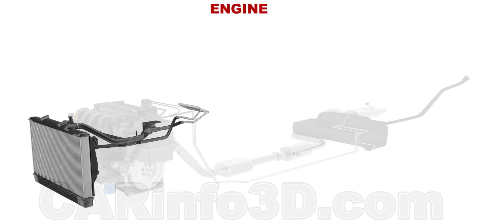
Chức Năng:
Hệ thống làm mát có nhiệm vụ duy trì nhiệt độ ổn định cho động cơ, ngăn ngừa quá nhiệt và bảo vệ các bộ phận khỏi hư hỏng do nhiệt độ cao.
Các thành phần chính:
Bộ Tản Nhiệt (Radiator): Là thành phần chính trong hệ thống làm mát, bộ tản nhiệt giúp làm mát dung dịch làm mát (coolant) trước khi nó quay trở lại động cơ.
Quạt Tản Nhiệt (Radiator Fan): Quạt giúp thổi không khí qua bộ tản nhiệt, tăng hiệu quả làm mát đặc biệt khi xe chạy chậm hoặc dừng lại.
Bơm Nước (Water Pump): Bơm nước có nhiệm vụ đẩy dung dịch làm mát qua các đường ống trong động cơ, qua bộ tản nhiệt và quay lại động cơ.
Van Hằng Nhiệt (Thermostat): Van này kiểm soát dòng chảy của dung dịch làm mát, chỉ cho phép dung dịch chạy qua bộ tản nhiệt khi nhiệt độ động cơ đạt đến một mức nhất định.
Tác động đến hiệu suất:
Hệ thống làm mát hoạt động hiệu quả giúp duy trì nhiệt độ động cơ ở mức lý tưởng, đảm bảo động cơ hoạt động ổn định và bền bỉ. Nếu hệ thống làm mát không hoạt động đúng cách, động cơ có thể quá nhiệt, dẫn đến hư hỏng nghiêm trọng và tốn kém trong việc sửa chữa.
4.5.5. Hệ Thống Bôi Trơn (Lubrication System) 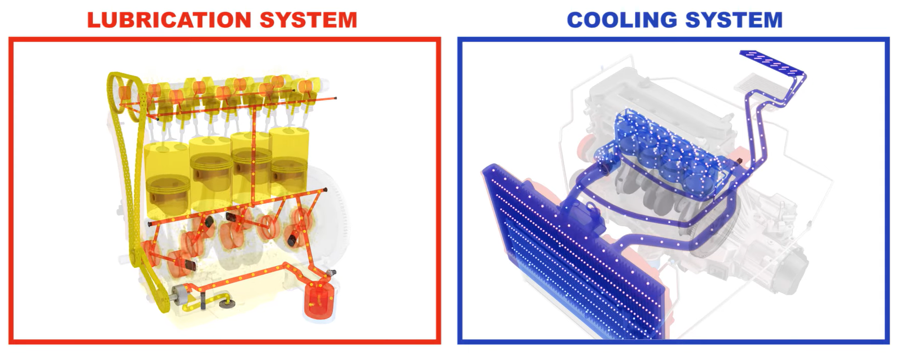
Chức Năng: Hệ thống bôi trơn đảm bảo rằng các bộ phận chuyển động trong động cơ, như piston và trục khuỷu, được bôi trơn đầy đủ để giảm ma sát, mài mòn và nhiệt độ. Dầu bôi trơn cũng giúp làm sạch và làm mát các bộ phận bên trong động cơ.
Các Thành Phần Chính: Bơm dầu, lọc dầu, và các đường dẫn dầu.
4.5.6. Hệ Thống Đánh Lửa (Ignition System) 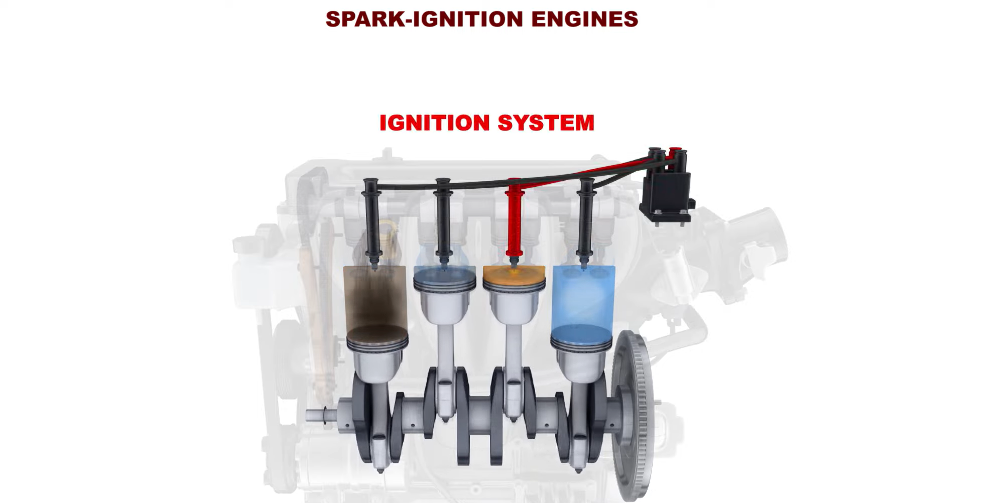
Chức Năng: Hệ thống đánh lửa có nhiệm vụ khởi động quá trình đốt cháy nhiên liệu trong động cơ xăng bằng cách tạo ra tia lửa từ bugi. Hệ thống này bao gồm các thành phần như cuộn dây đánh lửa (ignition coil), bugi, và bộ điều khiển đánh lửa.
Các Thành Phần Chính: Bugi, cuộn dây đánh lửa, và bộ điều khiển đánh lửa.
4.5.7. Hệ Thống Khởi Động (Starting System) 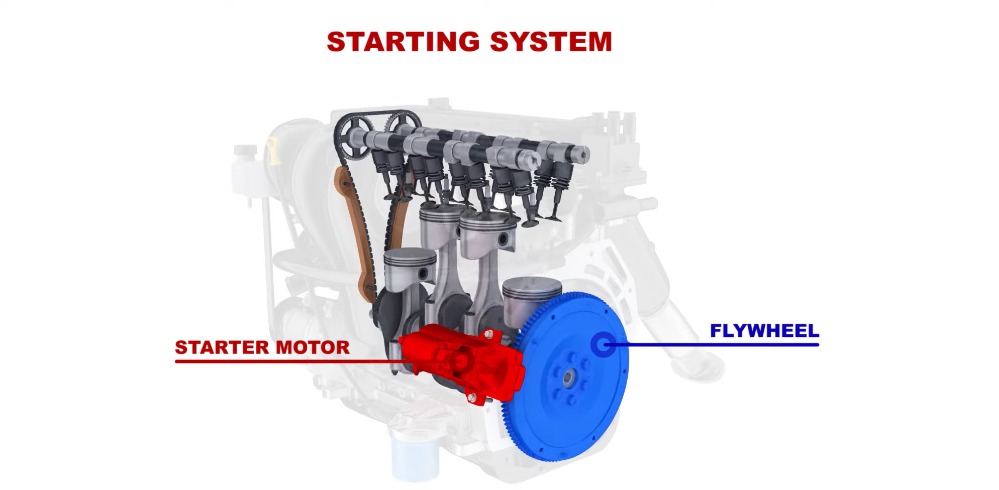
Chức Năng: Hệ thống khởi động đảm bảo động cơ khởi động khi bạn xoay chìa khóa hoặc nhấn nút khởi động. Nó bao gồm mô-tơ khởi động (starter motor), pin, và hệ thống dây điện.
Các Thành Phần Chính: Mô-tơ khởi động, pin, và bộ điều khiển.
4.5.8. Hệ Thống Điều Hòa Không Khí (Air Conditioning System)
.png "Tho dep troai")
Chức Năng: Hệ thống điều hòa không khí kiểm soát nhiệt độ, độ ẩm và chất lượng không khí bên trong cabin xe, giúp người lái và hành khách luôn cảm thấy thoải mái.
Các Thành Phần Chính: Máy nén, dàn ngưng, dàn bay hơi, và quạt gió.
Phần 6: Sắp xếp đánh lửa động cơ: 1-3-4-2
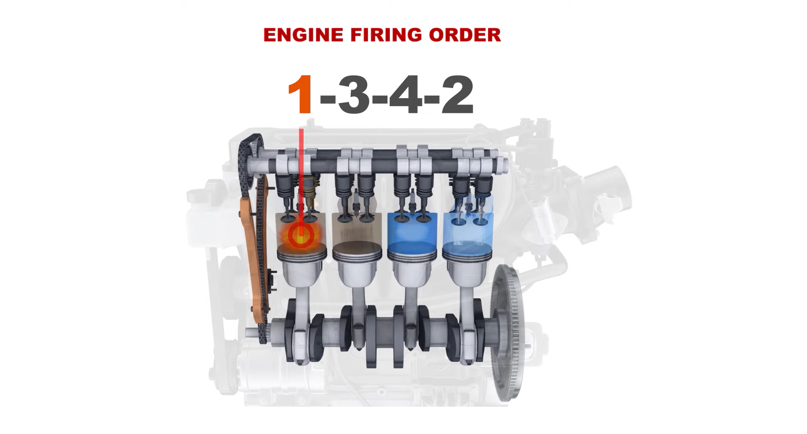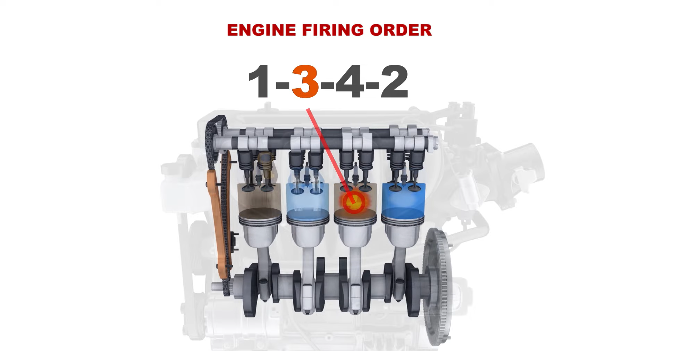
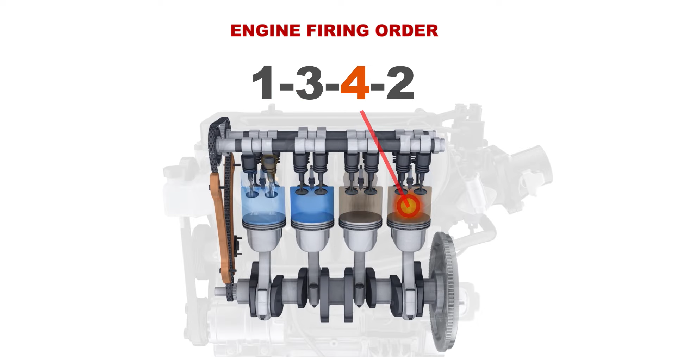
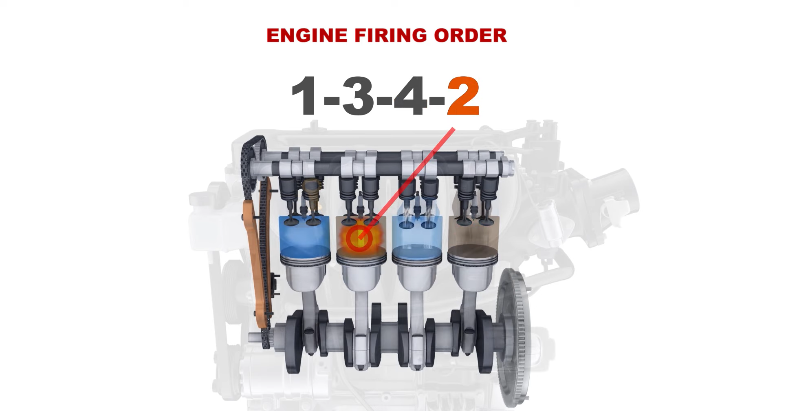
Sắp xếp đánh lửa (firing order) của động cơ là một phần quan trọng trong thiết kế và hoạt động của động cơ đốt trong. Nó xác định thứ tự mà các xi-lanh trong động cơ sẽ thực hiện quá trình đốt cháy, giúp đảm bảo động cơ hoạt động mượt mà và hiệu quả.
Cách Hoạt Động Xi-lanh 1: Đốt cháy và đẩy piston xuống.
Xi-lanh 3: Đốt cháy tiếp theo, đẩy piston xuống.
Xi-lanh 4: Đốt cháy tiếp theo, đẩy piston xuống.
Xi-lanh 2: Đốt cháy cuối cùng trong chu kỳ, đẩy piston xuống.
Lợi Ích Của Sắp Xếp Đánh Lửa 1-3-4-2 Cân Bằng Động Cơ: Sắp xếp đánh lửa này giúp cân bằng các lực tác động lên trục khuỷu, giảm rung động và cải thiện sự ổn định của động cơ.
Tăng Hiệu Suất: Đảm bảo các xi-lanh hoạt động đồng bộ, tối ưu hóa hiệu suất của động cơ.
Giảm Tiếng Ồn: Phân phối đều các lực tác động giúp giảm tiếng ồn và rung động trong quá trình hoạt động của động cơ.
Ứng Dụng Sắp xếp đánh lửa 1-3-4-2 thường thấy trong động cơ 4 xi-lanh của nhiều loại xe hơi và máy móc. Điều này giúp cải thiện sự vận hành của động cơ và kéo dài tuổi thọ của các linh kiện.
Tóm tắt Sắp xếp đánh lửa 1-3-4-2 giúp cải thiện hiệu suất và độ bền của động cơ bằng cách phân phối đều các chu trình đốt cháy, giảm rung động và tiếng ồn.
Phần 7: Hệ Thống Quản Lý Động Cơ (Engine Management System)
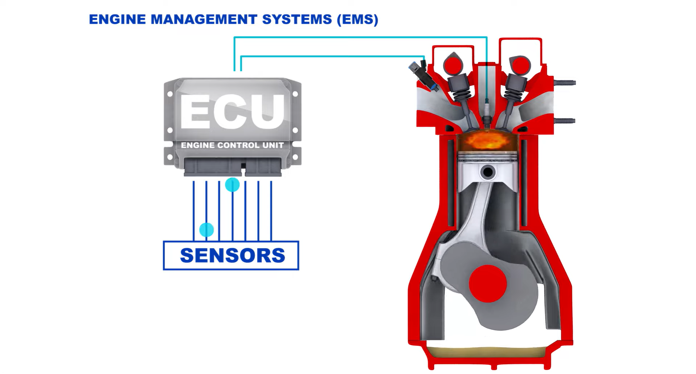Hệ thống quản lý động cơ là một phần quan trọng trong các động cơ đốt trong hiện đại, đóng vai trò chính trong việc tối ưu hóa hiệu suất, tiết kiệm nhiên liệu và giảm khí thải. Hệ thống này sử dụng nhiều cảm biến và bộ điều khiển để giám sát và điều chỉnh hoạt động của động cơ.
4.7.1. Bộ Điều Khiển Động Cơ (Engine Control Unit – ECU) Chức Năng: Quản Lý Quá Trình Đốt Cháy: ECU điều chỉnh thời điểm đánh lửa và lượng nhiên liệu phun vào buồng đốt để đảm bảo quá trình đốt cháy hiệu quả.
Điều Chỉnh Hiệu Suất Động Cơ: Dựa trên dữ liệu từ các cảm biến, ECU điều chỉnh các yếu tố như hỗn hợp nhiên liệu-không khí, thời điểm đánh lửa và điều chỉnh tốc độ không tải.
Quản Lý Khí Thải: ECU theo dõi và điều chỉnh các hệ thống liên quan đến khí thải như bộ chuyển đổi xúc tác (catalytic converter) để giảm ô nhiễm môi trường.
Cấu Trúc: Vi Xử Lý (Microprocessor): Xử lý dữ liệu từ các cảm biến và thực hiện các phép toán cần thiết để điều khiển động cơ.
Bộ Nhớ (Memory): Lưu trữ các thông số và chương trình điều khiển động cơ. Bao gồm bộ nhớ ROM (Read-Only Memory) cho phần mềm và bộ nhớ RAM (Random-Access Memory) cho dữ liệu tạm thời.
Giao Diện Đầu Vào/Đầu Ra (I/O Interfaces): Kết nối với các cảm biến và các bộ điều khiển khác trong động cơ.
4.7.2. Cảm biến Các cảm biến đóng vai trò quan trọng trong việc cung cấp thông tin cần thiết cho ECU để điều chỉnh hoạt động của động cơ. Một số cảm biến chính bao gồm:
Cảm Biến Nhiệt Độ Nước (Coolant Temperature Sensor): Đo nhiệt độ của nước làm mát động cơ. Dữ liệu này giúp ECU điều chỉnh thời điểm đánh lửa và lượng nhiên liệu.
Cảm Biến Lưu Lượng Không Khí (Mass Air Flow Sensor – MAF): Đo lưu lượng không khí vào động cơ. Thông tin này giúp ECU tính toán lượng nhiên liệu cần thiết.
Cảm Biến Áp Suất Đường Hút (Manifold Absolute Pressure – MAP Sensor): Đo áp suất trong cổ họng nạp. Dữ liệu này giúp xác định lượng không khí và điều chỉnh lượng nhiên liệu.
Cảm Biến Oxy (Oxygen Sensor): Đo lượng oxy trong khí thải để điều chỉnh tỷ lệ nhiên liệu-không khí và giảm khí thải độc hại.
Cảm Biến Vị Trí Bugi (Crankshaft Position Sensor): Đo vị trí và tốc độ quay của trục khuỷu, cung cấp thông tin cho ECU để điều chỉnh thời điểm đánh lửa và phun nhiên liệu.
Cảm Biến Vị Trí Van Nạp (Throttle Position Sensor – TPS): Đo vị trí của van tiết lưu, giúp điều chỉnh lượng không khí vào động cơ.
Nguyên lý hoạt động 1. Thu Thập Dữ Liệu: Các cảm biến liên tục gửi dữ liệu về ECU, cung cấp thông tin về các điều kiện hoạt động của động cơ như nhiệt độ, áp suất, và lưu lượng không khí.
2. Xử Lý Dữ Liệu: ECU xử lý dữ liệu từ các cảm biến để đưa ra các quyết định điều khiển động cơ. Điều này bao gồm việc điều chỉnh thời điểm đánh lửa, lượng nhiên liệu, và các yếu tố khác.
3. Điều Chỉnh Hoạt Động: Dựa trên thông tin từ ECU, các bộ điều khiển thực hiện các điều chỉnh cần thiết để tối ưu hóa hiệu suất động cơ, tiết kiệm nhiên liệu và giảm khí thải.
Tóm tắt Hệ thống quản lý động cơ bao gồm bộ điều khiển động cơ (ECU) và các cảm biến. ECU thu thập và xử lý dữ liệu từ các cảm biến để điều chỉnh hoạt động của động cơ, đảm bảo hiệu suất tối ưu và giảm khí thải. Các cảm biến như cảm biến nhiệt độ nước, cảm biến lưu lượng không khí, cảm biến áp suất đường hút, cảm biến oxy, cảm biến vị trí bugi, và cảm biến vị trí van nạp cung cấp thông tin quan trọng cho ECU để điều chỉnh hoạt động động cơ.
Phần 8: Hệ Thống Điều Chỉnh Lượng Không Khí (Throttle Control System)
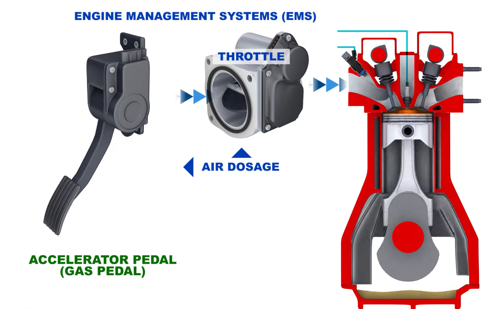Trong động cơ đốt trong, hệ thống điều chỉnh lượng không khí (throttle control system) đóng vai trò quan trọng trong việc kiểm soát lượng không khí vào động cơ, từ đó ảnh hưởng đến hiệu suất và hiệu quả của quá trình đốt cháy. Dưới đây là mô tả chi tiết về các thành phần chính và quá trình hoạt động của hệ thống này:
4.8.1. Pedal Gas (Gas Pedal) Chức năng Điều Khiển Tốc Độ: Người lái xe sử dụng pedal gas để điều chỉnh lượng nhiên liệu và không khí vào động cơ, từ đó thay đổi tốc độ và hiệu suất của xe.
Giao Tiếp với Throttle: Khi người lái xe nhấn pedal gas, tín hiệu từ pedal được truyền đến hệ thống điều chỉnh throttle để mở hoặc đóng van tiết lưu.
Cấu trúc Pedal: Được gắn trong khoang lái, là nơi người lái xe tác động.
Cảm Biến Vị Trí Pedal Gas: Đo lường vị trí của pedal gas và gửi tín hiệu đến hệ thống điều khiển động cơ.
4.8.2. Van Tiết Lưu (Throttle) Chức năng Điều Chỉnh Lượng Không Khí: Van tiết lưu kiểm soát lượng không khí đi vào động cơ bằng cách mở hoặc đóng tùy thuộc vào tín hiệu từ pedal gas và hệ thống điều khiển động cơ.
Tăng Giảm Tốc Độ: Khi van mở, lượng không khí vào động cơ tăng lên, dẫn đến việc tăng cường quá trình đốt cháy và tăng tốc độ động cơ.
Cấu trúc Van Tiết Lưu Cơ Học hoặc Điện Tử: Có thể là dạng cơ học với cáp kéo hoặc dạng điện tử điều khiển bởi động cơ bước hoặc mô-tơ điện.
Cấu Trúc: Cảm Biến Vị Trí Van Tiết Lưu (Throttle Position Sensor – TPS): Đo vị trí của van tiết lưu và gửi thông tin đến ECU.
4.8.3. Điều Chỉnh Lượng Không Khí (Air Dosage) Chức năng Tính Toán Hỗn Hợp Nhiên Liệu-Không Khí: Lượng không khí vào động cơ phải được điều chỉnh đúng cách để hòa trộn với lượng nhiên liệu và tạo ra hỗn hợp tối ưu cho quá trình đốt cháy.
Tối Ưu Hiệu Suất Động Cơ: Điều chỉnh lượng không khí ảnh hưởng đến việc động cơ hoạt động mượt mà, tiết kiệm nhiên liệu và giảm khí thải.
Quá trình hoạt động Nhấn Pedal Gas: Người lái xe nhấn pedal gas, điều này gửi tín hiệu đến hệ thống điều khiển động cơ.
Điều Chỉnh Van Tiết Lưu: Hệ thống điều khiển động cơ (ECU) nhận tín hiệu từ cảm biến vị trí pedal gas và cảm biến vị trí van tiết lưu để điều chỉnh van mở hoặc đóng.
Lượng Không Khí vào Động Cơ: Van tiết lưu điều chỉnh lượng không khí vào động cơ. Lượng không khí này hòa trộn với nhiên liệu để tạo ra hỗn hợp nhiên liệu-không khí lý tưởng cho quá trình đốt cháy.
Tóm tắt Hệ thống điều chỉnh lượng không khí bao gồm pedal gas, van tiết lưu và quá trình điều chỉnh lượng không khí. Pedal gas được sử dụng để điều chỉnh tốc độ động cơ thông qua việc thay đổi lượng không khí vào động cơ. Van tiết lưu điều chỉnh lượng không khí vào động cơ dựa trên tín hiệu từ pedal gas và các cảm biến. Quá trình này đảm bảo hỗn hợp nhiên liệu-không khí được điều chỉnh tối ưu, cải thiện hiệu suất động cơ và giảm khí thải.
Phần 9: Hỗn Hợp Nhiên Liệu-Không Khí (Fuel-Air Mixture)
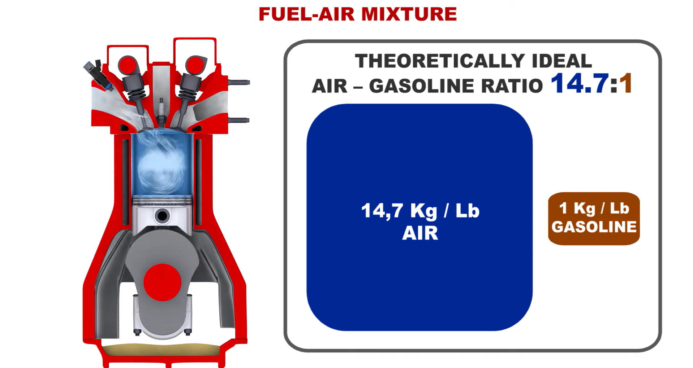Trong động cơ đốt trong, sự phối hợp giữa nhiên liệu và không khí để tạo ra hỗn hợp nhiên liệu-không khí là rất quan trọng cho hiệu suất và hiệu quả của quá trình đốt cháy. Một tỷ lệ hỗn hợp lý tưởng giúp động cơ hoạt động hiệu quả, tiết kiệm nhiên liệu và giảm khí thải.
Tỷ Lệ Hỗn Hợp Lý Tưởng (Theoretically Ideal Fuel-Air Mixture)
Tỷ Lệ Không Khí/Nhiên Liệu: 14.7:1Giải Thích:
14.7:1: Đây là tỷ lệ lý tưởng của hỗn hợp không khí và xăng trong động cơ xăng. Tỷ lệ này cho biết rằng 14.7 phần không khí cần thiết để hoàn toàn đốt cháy 1 phần xăng.Hỗn Hợp Khí Lý Tưởng: Tỷ lệ này được gọi là “hỗn hợp khí lý tưởng” vì nó tạo ra sự cân bằng tối ưu giữa hiệu suất và khí thải trong điều kiện lý tưởng.
Quá Trình Hòa Trộn Nhiên Liệu-Không
1. Khí Hấp Thụ Không Khí: Không khí vào động cơ thông qua van tiết lưu và được đưa vào buồng đốt.2. Phun Nhiên Liệu: Nhiên liệu (xăng) được phun vào không khí bởi hệ thống phun nhiên liệu, hòa trộn với không khí để tạo ra hỗn hợp nhiên liệu-không khí.
3. Tạo Hỗn Hợp: Tỷ lệ hòa trộn lý tưởng là 14.7 phần không khí với 1 phần xăng, tạo ra hỗn hợp lý tưởng cho quá trình đốt cháy.
4. Đốt Cháy: Hỗn hợp nhiên liệu-không khí được nén và đốt cháy trong buồng đốt. Sự đốt cháy hoàn toàn trong tỷ lệ lý tưởng giúp động cơ hoạt động hiệu quả và giảm khí thải độc hại.
Tầm Quan Trọng của Tỷ Lệ Hỗn Hợp
Hiệu Suất Động Cơ: Tỷ lệ lý tưởng 14.7:1 giúp động cơ đạt hiệu suất tối ưu, cung cấp sức mạnh và tiết kiệm nhiên liệu.Khí Thải: Hỗn hợp lý tưởng giúp giảm phát thải khí độc hại, như CO (carbon monoxide) và HC (hydrocarbon), vì quá trình đốt cháy là hoàn toàn và hiệu quả.
Tiết Kiệm Nhiên Liệu: Đảm bảo rằng nhiên liệu được đốt cháy một cách tối ưu, giảm lượng nhiên liệu tiêu thụ.
Điều kiện Thực Tế:
Trong thực tế, tỷ lệ hỗn hợp lý tưởng có thể thay đổi tùy thuộc vào các yếu tố như tải trọng động cơ, điều kiện khí quyển và thiết kế động cơ.Hệ thống điều khiển động cơ (ECU) thường điều chỉnh tỷ lệ này dựa trên dữ liệu từ các cảm biến để đảm bảo hiệu suất tối ưu trong các điều kiện khác nhau.
Tóm tắt Tỷ lệ lý tưởng của hỗn hợp nhiên liệu-không khí là 14.7:1, nghĩa là 14.7 phần không khí hòa trộn với 1 phần xăng. Tỷ lệ này giúp động cơ hoạt động hiệu quả nhất, tiết kiệm nhiên liệu và giảm khí thải độc hại. Hệ thống quản lý động cơ sẽ điều chỉnh tỷ lệ này để phù hợp với các điều kiện hoạt động thực tế.
Phần 10: Tỷ Lệ Không Khí/Nhiên Liệu (Air-Fuel Ratio)
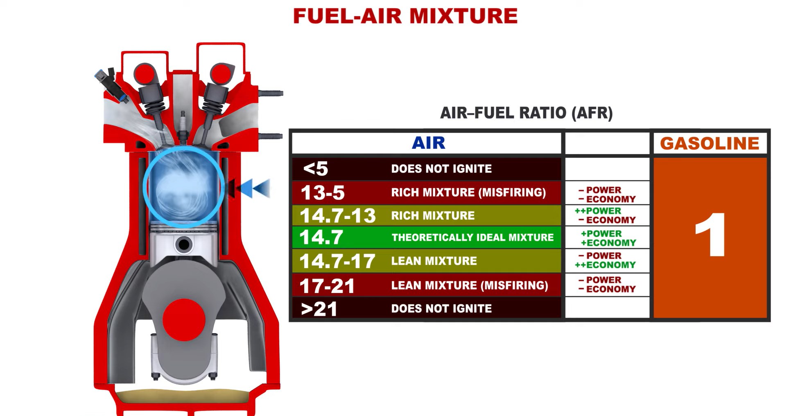Tỷ lệ không khí/nhiên liệu (air-fuel ratio) là tỷ lệ giữa khối lượng không khí và nhiên liệu trong hỗn hợp cung cấp cho động cơ. Tỷ lệ này ảnh hưởng trực tiếp đến hiệu suất hoạt động của động cơ, chất lượng đốt cháy, và khí thải. Dưới đây là các mức tỷ lệ không khí/nhiên liệu và ảnh hưởng của chúng đến hoạt động của động cơ:
4.10.1 Tỷ Lệ < 5:1 + Tình Trạng: Không thể đốt cháy (Does Not Ignite)
+ Giải Thích: Tỷ lệ rất thấp, quá nhiều nhiên liệu so với không khí, khiến hỗn hợp quá giàu để có thể cháy. Hỗn hợp này không thể được đốt cháy trong buồng đốt.
4.10.2 Tỷ Lệ 13.5:1 (Rich Mixture, Misfiring) + Tình Trạng: Hỗn hợp quá giàu, có thể gây ra sự không đốt cháy hoặc đánh lửa không đồng đều (Misfiring)
+ Giải Thích: Mặc dù vẫn có khả năng đốt cháy, nhưng hỗn hợp quá giàu (quá nhiều nhiên liệu) có thể dẫn đến việc không đốt cháy hoàn toàn, gây ra sự không đốt cháy hoặc đánh lửa không đều.
4.10.3 Tỷ Lệ 14.7:1 (Theoretically Ideal Mixture) + Tình Trạng: Hỗn hợp lý tưởng
+ Giải Thích: Đây là tỷ lệ lý tưởng cho động cơ xăng, với 14.7 phần không khí hòa trộn với 1 phần xăng. Tỷ lệ này tạo ra sự đốt cháy tối ưu, giúp động cơ hoạt động hiệu quả nhất với sự tiết kiệm nhiên liệu tốt nhất và giảm khí thải.
4.10.4 Tỷ Lệ 14.7-17:1 (Lean Mixture) + Tình Trạng: Hỗn hợp hơi nghèo
+ Giải Thích: Tỷ lệ này cho thấy hỗn hợp không khí-nhiên liệu hơi nghèo (ít nhiên liệu hơn so với không khí). Trong điều kiện này, động cơ có thể hoạt động với hiệu suất thấp hơn và có thể gặp vấn đề với việc đốt cháy hoàn toàn.
4.10.5 Tỷ Lệ 17-21:1 (Lean Mixture, Misfiring) + Tình Trạng: Hỗn hợp quá nghèo, có thể gây ra sự không đốt cháy hoặc đánh lửa không đều (Misfiring)
+ Giải Thích: Hỗn hợp quá nghèo, với quá ít nhiên liệu so với không khí, có thể dẫn đến sự không đốt cháy hoàn toàn và gây ra sự không đốt cháy hoặc đánh lửa không đồng đều.
4.10.6 Tỷ Lệ > 21:1 + Tình Trạng: Không thể đốt cháy (Does Not Ignite)
+ Giải Thích: Tỷ lệ này quá nghèo, với quá ít nhiên liệu để có thể cháy. Hỗn hợp không thể được đốt cháy trong buồng đốt do thiếu nhiên liệu.
Việc duy trì tỷ lệ không khí/nhiên liệu trong phạm vi lý tưởng giúp động cơ hoạt động hiệu quả, tiết kiệm nhiên liệu và giảm khí thải.
Phần 11: Động cơ điện
Cấu tạo động cơ điện Khác với động cơ đốt trong, động cơ điện không có các bộ phận như xi lanh, piston hay trục khuỷu. Thay vào đó, động cơ điện có các thành phần chính:Rotor và Stator: Rotor là phần quay của động cơ, còn stator là phần cố định. Khi dòng điện chạy qua stator, nó tạo ra từ trường làm rotor quay.
Pin: Pin lưu trữ năng lượng điện và cung cấp điện cho động cơ.
Bộ Điều Khiển (Controller): Bộ điều khiển quản lý lượng điện từ pin đến động cơ, điều chỉnh tốc độ và mô-men xoắn của xe.
Nguyên lý hoạt động của động cơ điện Động cơ điện hoạt động dựa trên nguyên lý điện từ. Khi dòng điện chạy qua các cuộn dây trong stator, nó tạo ra từ trường. Từ trường này tác động lên rotor, khiến rotor quay. Chuyển động quay này được truyền trực tiếp đến bánh xe, làm xe di chuyển.
Phần 12: Động Cơ Hybrid: Sự Kết Hợp Giữa Xăng và Điện
Động cơ hybrid là sự kết hợp giữa động cơ đốt trong (ICE) và động cơ điện, nhằm tận dụng ưu điểm của cả hai loại động cơ. Các xe hybrid thường sử dụng động cơ xăng và một hoặc nhiều động cơ điện để cải thiện hiệu suất nhiên liệu, giảm khí thải và cung cấp trải nghiệm lái xe linh hoạt hơn.Cấu Tạo và Nguyên Lý Hoạt Động của Động Cơ Hybrid Xe hybrid thường có các thành phần chính sau:
Động cơ đốt trong (ICE): Động cơ xăng hoặc diesel thông thường, có nhiệm vụ cung cấp công suất cho xe khi cần, đặc biệt là ở tốc độ cao hoặc khi cần tăng tốc mạnh.
Động cơ điện: Động cơ này thường sử dụng pin để cung cấp mô-men xoắn tức thì, giúp xe khởi động nhẹ nhàng và hỗ trợ động cơ xăng khi tăng tốc hoặc lái xe ở tốc độ thấp.
Pin (Battery Pack): Lưu trữ năng lượng điện để cung cấp cho động cơ điện. Pin có thể được sạc lại thông qua quá trình phanh tái tạo (regenerative braking) hoặc từ động cơ xăng.
Bộ điều khiển (Power Control Unit – PCU): Quản lý việc phân phối năng lượng giữa động cơ xăng, động cơ điện và pin, đảm bảo hệ thống hoạt động hiệu quả và trơn tru.
Các Loại Hệ Thống Hybrid Phổ Biến Hybrid song song (Parallel Hybrid): Cả động cơ xăng và động cơ điện đều có thể cung cấp năng lượng trực tiếp cho các bánh xe. Hệ thống này cho phép xe chạy bằng động cơ xăng, động cơ điện, hoặc kết hợp cả hai.
Hybrid nối tiếp (Series Hybrid): Động cơ xăng không kết nối trực tiếp với các bánh xe mà chỉ có nhiệm vụ sạc pin. Pin sau đó cung cấp năng lượng cho động cơ điện để làm quay các bánh xe. Hệ thống này tập trung vào việc sử dụng động cơ điện cho việc lái xe.
Hybrid kết hợp (Series-Parallel Hybrid): Kết hợp cả hai hệ thống song song và nối tiếp, cho phép xe tối ưu hóa hiệu suất nhiên liệu bằng cách tự động chuyển đổi giữa động cơ xăng và động cơ điện, tùy theo điều kiện lái xe.
Phần 13: So Sánh Động Cơ Đốt Trong và Động Cơ Điện
Ưu Điểm của Động Cơ Đốt Trong: Khả năng tiếp cận: Nhiên liệu xăng và diesel dễ dàng tiếp cận, với cơ sở hạ tầng trạm xăng phát triển rộng rãi.Hiệu suất cao: Động cơ đốt trong có thể tạo ra công suất lớn, phù hợp với nhiều loại xe từ nhỏ đến lớn.
Chi phí thấp hơn: Giá thành sản xuất của động cơ đốt trong hiện nay vẫn thấp hơn so với động cơ điện.
Nhược Điểm của Động Cơ Đốt Trong: Khí thải: Động cơ đốt trong phát thải khí CO2 và các chất gây ô nhiễm khác, góp phần vào ô nhiễm môi trường.
Độ phức tạp: Động cơ đốt trong có nhiều bộ phận chuyển động, dễ bị mài mòn và cần bảo dưỡng thường xuyên.
Ưu Điểm của Động Cơ Điện: Không phát thải: Động cơ điện không phát thải khí CO2, giúp bảo vệ môi trường.
Hiệu suất cao: Động cơ điện có hiệu suất chuyển đổi năng lượng cao hơn nhiều so với động cơ đốt trong.
Ít bảo trì: Động cơ điện có ít bộ phận chuyển động hơn, nên yêu cầu bảo trì thấp hơn.
Nhược Điểm của Động Cơ Điện: Giới hạn phạm vi di chuyển: Phạm vi di chuyển của xe điện phụ thuộc vào dung lượng pin, và cần có thời gian để sạc lại pin.
Chi phí cao: Động cơ điện và pin vẫn có chi phí sản xuất cao hơn so với động cơ đốt trong, mặc dù giá cả đang giảm dần.
Phần 14: Vị Trí Của Động Cơ (Engine Placement)
Vị trí của động cơ trong ô tô là yếu tố quan trọng ảnh hưởng đến cân bằng, hiệu suất và trải nghiệm lái. Có ba vị trí động cơ chính trong thiết kế ô tô:Động Cơ Đặt Trước (Front Engine) Vị trí: Động cơ được đặt ở phía trước xe, phía trên hoặc trước trục bánh trước.
Ưu điểm: Thiết kế này phổ biến nhất, cho phép phân bổ trọng lượng tốt và tạo không gian rộng rãi cho cabin. Động cơ đặt trước cũng giúp xe có tính ổn định tốt hơn khi phanh và vào cua.
Ứng dụng: Hầu hết các xe sedan, hatchback, SUV và xe tải.
Động Cơ Đặt Giữa (Mid-Engine) Vị trí: Động cơ được đặt ở giữa xe, giữa trục bánh trước và trục bánh sau, thường là ngay sau ghế lái.
Ưu điểm: Phân bổ trọng lượng tối ưu giữa các trục bánh, giúp cải thiện khả năng xử lý và cân bằng của xe. Đây là vị trí lý tưởng cho xe thể thao và siêu xe, nơi tính năng lái và hiệu suất là ưu tiên hàng đầu.
Ứng dụng: Các dòng xe thể thao như Ferrari, Lamborghini, hoặc Porsche.
Động Cơ Đặt Sau (Rear Engine) Vị trí: Động cơ được đặt phía sau xe, phía trên hoặc sau trục bánh sau.
Ưu điểm: Thiết kế này giúp tối ưu hóa không gian bên trong xe và tạo ra lực kéo tốt hơn trên bánh sau, đặc biệt là khi tăng tốc. Tuy nhiên, nó có thể làm giảm tính ổn định khi phanh và vào cua.
Ứng dụng: Một số xe thể thao và dòng xe nhỏ như Porsche 911 hoặc Volkswagen Beetle.
Phần 15: Kết luận
Động cơ là trung tâm của mọi chiếc ô tô, và việc hiểu rõ cách thức hoạt động của nó giúp bạn có cái nhìn sâu sắc hơn về chiếc xe mà bạn lái hàng ngày. Dù là động cơ đốt trong truyền thống hay động cơ điện hiện đại, mỗi loại động cơ đều có những ưu và nhược điểm riêng. Hy vọng qua bài viết này, bạn đã có được những kiến thức cơ bản về động cơ ô tô, giúp bạn tự tin hơn khi tiếp cận với thế giới kỹ thuật ô tô.Topic 5: Hệ thống truyền động và hộp số
Khi bạn khởi động xe và nhấn chân ga, quá trình truyền lực từ động cơ đến các bánh xe diễn ra phức tạp nhưng vô cùng thú vị. Động cơ là trái tim của chiếc xe, nơi sản sinh ra năng lượng, nhưng chính hệ thống truyền động và hộp số mới là những bộ phận đảm bảo năng lượng này được chuyển thành chuyển động mượt mà và hiệu quả.Phần 1: Từ Động Cơ Đến Hệ Thống Truyền Động
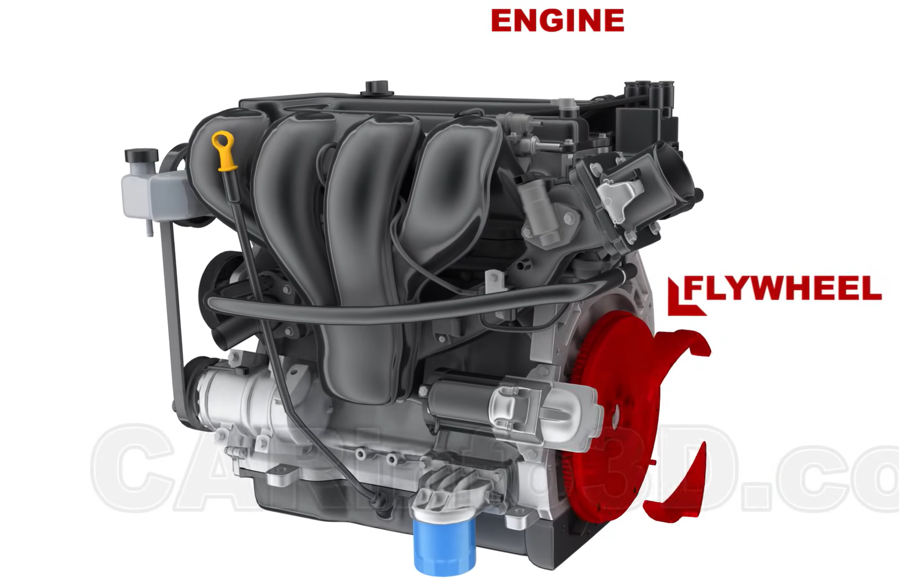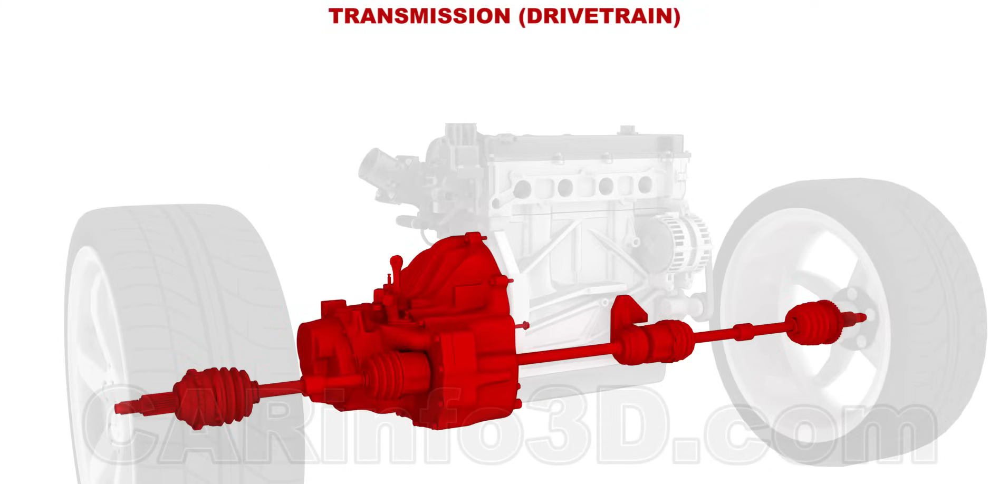
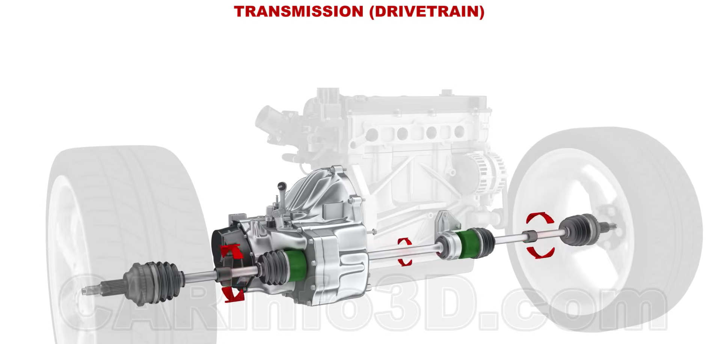
Động cơ tạo ra mô-men xoắn nhờ quá trình đốt cháy nhiên liệu trong các xi-lanh. Mô-men xoắn này được truyền từ trục khuỷu của động cơ đến bánh đà. Bánh đà, ngoài việc giúp ổn định hoạt động của động cơ, còn đóng vai trò quan trọng trong việc truyền mô-men xoắn sang hệ thống truyền động.
Khi mô-men xoắn được truyền đến bánh đà, nó sẽ kết nối với hệ thống truyền động thông qua ly hợp (trong hộp số tay) hoặc biến mô (trong hộp số tự động). Hệ thống truyền động sau đó đảm nhận nhiệm vụ chuyển đổi mô-men xoắn và tốc độ để phù hợp với yêu cầu vận hành của xe.
Phần 2: Hệ Thống Truyền Động (Drivetrain System)
Hệ thống truyền động bao gồm tất cả các thành phần liên quan đến việc truyền tải sức mạnh từ động cơ đến bánh xe. Chức năng chính của hệ thống truyền động là biến đổi lực sinh ra từ động cơ thành lực đẩy để xe di chuyển. Hệ thống này thường bao gồm các thành phần sau:Động Cơ (Engine): Cung cấp năng lượng đầu vào cho hệ thống truyền động.
Ly Hợp (Clutch) hoặc Biến Mô (Torque Converter): Tùy thuộc vào loại xe, ly hợp (dùng cho hộp số tay) hoặc biến mô (dùng cho hộp số tự động) là thành phần kết nối và ngắt kết nối động cơ với hộp số, cho phép thay đổi tốc độ và mô-men xoắn mà không tắt động cơ.
Hộp Số (Transmission): Điều chỉnh tỷ số truyền để kiểm soát tốc độ và mô-men xoắn đầu ra.
Trục Truyền Động (Driveshaft): Truyền mô-men xoắn từ hộp số đến vi sai (differential).
Vi Sai (Differential): Phân phối mô-men xoắn đến các bánh xe, cho phép chúng quay với tốc độ khác nhau khi xe vào cua. Trục Bánh Xe (Axles): Truyền mô-men xoắn từ vi sai đến bánh xe, là thành phần cuối cùng trong hệ thống truyền động.
Phần 3: Hộp Số (Transmission)
Hộp số là thành phần chính trong hệ thống truyền động, giúp điều chỉnh tốc độ và mô-men xoắn của xe. Hộp số có thể là loại hộp số tay (manual transmission) hoặc hộp số tự động (automatic transmission), và chức năng chính của nó là thay đổi tỷ số truyền để tối ưu hóa hiệu suất động cơ trong các điều kiện lái xe khác nhau.
5.3.1. Hộp Số Tay (Manual Transmission)
Hộp số tay yêu cầu người lái phải điều khiển ly hợp và cần số để chọn tỷ số truyền phù hợp. Các thành phần chính của hộp số tay bao gồm:
Bánh Răng (Gears): Chuyển đổi tốc độ quay và mô-men xoắn từ động cơ.
Cần Số (Gear Lever): Cho phép người lái chọn tỷ số truyền mong muốn.
Ly Hợp (Clutch): Ngắt kết nối tạm thời giữa động cơ và hộp số khi thay đổi tỷ số truyền.
5.3.2. Hộp Số Tự Động (Automatic Transmission)
Hộp số tự động thay đổi tỷ số truyền một cách tự động dựa trên điều kiện vận hành và không yêu cầu người lái phải điều chỉnh ly hợp hay cần số. Các thành phần chính bao gồm:
Biến Mô (Torque Converter): Thay thế ly hợp trong việc kết nối động cơ với hộp số.
Bánh Răng Hành Tinh (Planetary Gear Set): Cung cấp các tỷ số truyền khác nhau mà không cần chuyển đổi bánh răng.
Bộ Điều Khiển Điện Tử (Electronic Control Unit – ECU): Điều khiển quá trình chuyển số dựa trên dữ liệu từ các cảm biến.
Phần 4: Nguyên Lý Hoạt Động của Hệ Thống Truyền Động và Hộp Số
5.4.1. Engine (Động cơ)
Động cơ là nguồn cung cấp năng lượng chính cho xe. Nhiên liệu (xăng, diesel, hoặc điện) được đốt cháy hoặc chuyển hóa thành năng lượng cơ học trong động cơ. Quá trình này tạo ra mô-men xoắn, tức là lực xoắn quay trục khuỷu của động cơ.
5.4.2. Flywheel (Bánh đà)
Bánh đà là một đĩa kim loại nặng gắn trực tiếp với trục khuỷu của động cơ. Nó có hai chức năng chính:
Lưu trữ năng lượng: Khi động cơ quay, bánh đà tích trữ năng lượng dưới dạng động năng, giúp duy trì chuyển động mượt mà của trục khuỷu và giảm rung động.
Truyền động lực: Bánh đà cũng đóng vai trò trung gian giữa động cơ và ly hợp, truyền lực từ động cơ đến hệ thống truyền động.
5.4.3. Clutch (Ly hợp)
Ly hợp nằm giữa động cơ và hộp số, và là bộ phận kết nối hoặc ngắt kết nối động cơ với hộp số. Khi người lái nhấn bàn đạp ly hợp, ly hợp sẽ ngắt kết nối giữa động cơ và hộp số, cho phép người lái chuyển số hoặc dừng xe mà không tắt động cơ.
Nguyên lý hoạt động: Ly hợp bao gồm một tấm ly hợp (clutch plate) gắn với bánh đà và một đĩa ép (pressure plate). Khi nhấn bàn đạp ly hợp, đĩa ép tách ra khỏi tấm ly hợp, ngắt kết nối động cơ và hộp số. Khi nhả bàn đạp, đĩa ép áp chặt vào tấm ly hợp, truyền lực từ động cơ đến hộp số.
5.4.4. Gearbox (Hộp số)
Hộp số là bộ phận quan trọng điều chỉnh tỉ số truyền giữa động cơ và bánh xe. Nó cho phép xe thay đổi tốc độ và mô-men xoắn, phù hợp với nhu cầu của người lái.
Nguyên lý hoạt động: Hộp số có nhiều bánh răng với các tỉ số truyền khác nhau. Khi chuyển số, các bánh răng sẽ được kết nối với nhau theo một tỉ lệ nhất định, điều chỉnh tốc độ quay và mô-men xoắn truyền đến bánh xe. Hộp số có thể là loại số sàn (manual transmission) hoặc số tự động (automatic transmission).
5.4.5. Propeller Shaft (Trục các đăng)
Trục các đăng là một trục dài nối giữa hộp số và bộ truyền cuối (final drive). Nó truyền mô-men xoắn từ hộp số đến bộ truyền cuối, đặc biệt là trong các xe có hệ dẫn động cầu sau (RWD) hoặc bốn bánh (AWD/4WD).
Nguyên lý hoạt động: Khi hộp số truyền lực qua trục các đăng, trục này sẽ quay và truyền mô-men xoắn đến bộ truyền cuối. Trục các đăng thường có các khớp nối (universal joints) để thích nghi với sự chuyển động và thay đổi góc độ giữa hộp số và bộ truyền cuối.
5.4.5.1 Hệ Thống Dẫn Động Cầu Trước (FWD – Front-Wheel Drive)
Cách hoạt động: Trong hệ thống FWD, động cơ nằm ở phía trước xe và truyền lực trực tiếp đến các bánh trước. Khi bạn tăng ga, động cơ gửi mô-men xoắn qua ly hợp và hộp số đến các bánh trước, giúp xe di chuyển.
Ưu điểm:
Tốt cho điều kiện trơn trượt: Trọng lượng động cơ trên bánh trước giúp tăng cường lực kéo, đặc biệt trên đường trơn hoặc tuyết.
Tiết kiệm nhiên liệu: Thiết kế đơn giản và nhẹ hơn, thường giúp tiết kiệm nhiên liệu hơn.
Nhược điểm:
Xử lý kém hơn: Xe có thể có xu hướng tiếp tục đi thẳng khi vào cua (understeer), gây khó khăn trong việc điều khiển khi vào cua nhanh.
5.4.5.2 Hệ Thống Dẫn Động Cầu Sau (RWD – Rear-Wheel Drive)
Cách hoạt động: Trong hệ thống RWD, động cơ nằm ở phía trước xe nhưng lực được truyền đến các bánh sau qua trục các đăng và bộ truyền cuối. Khi bạn tăng ga, mô-men xoắn từ động cơ đi qua ly hợp và hộp số đến trục các đăng, rồi đến các bánh sau.
Ưu điểm:
Cảm giác lái tốt hơn: Xe thường có khả năng xử lý và cảm giác lái tốt hơn, đặc biệt là trong các xe thể thao.
Cân bằng trọng lượng: Trọng lượng động cơ được phân bổ đều hơn giữa các bánh trước và sau, giúp cải thiện khả năng điều khiển.
Nhược điểm:
Kém hiệu quả nhiên liệu: Hệ thống có thể nặng hơn và kém hiệu quả về mặt nhiên liệu so với FWD.
Lực kéo kém hơn trong điều kiện trơn trượt: Các bánh sau có thể thiếu lực kéo hơn khi điều kiện đường trơn.
Tóm tắt
FWD (Cầu Trước): Động cơ truyền lực đến bánh trước. Tốt cho điều kiện trơn trượt và tiết kiệm nhiên liệu. Xử lý kém hơn khi vào cua.
RWD (Cầu Sau): Động cơ truyền lực đến bánh sau. Cung cấp cảm giác lái tốt hơn và cân bằng trọng lượng tốt hơn. Kém hiệu quả nhiên liệu và lực kéo trong điều kiện trơn trượt.
5.4.6. Final Drive and Differential (Bộ truyền cuối và vi sai)
Bộ truyền cuối là một cặp bánh răng truyền lực từ trục các đăng đến vi sai. Vi sai là một hệ thống bánh răng phức tạp, cho phép các bánh xe quay với tốc độ khác nhau khi xe di chuyển qua khúc cua.
Nguyên lý hoạt động
Bộ truyền cuối: Bánh răng chủ động (drive gear) quay bánh răng bị động (driven gear), thay đổi hướng truyền lực và tăng mô-men xoắn, đồng thời giảm tốc độ quay trước khi truyền lực đến vi sai.
Vi sai: Vi sai phân chia mô-men xoắn từ bộ truyền cuối đến các trục truyền động (axle shafts), giúp mỗi bánh xe quay với tốc độ khác nhau khi cần thiết, như khi vào cua. Điều này ngăn cản hiện tượng trượt bánh và tăng tính ổn định khi xe vận hành.
5.4.7. Axle Shafts (Trục truyền động)
Trục truyền động kết nối vi sai với các bánh xe. Nó truyền mô-men xoắn từ vi sai đến các bánh xe, giúp xe di chuyển.
Nguyên lý hoạt động: Khi vi sai phân phối mô-men xoắn, các trục truyền động sẽ truyền mô-men xoắn này trực tiếp đến các bánh xe, biến nó thành lực kéo giúp xe di chuyển.
5.4.8. Transfer Case (Hộp phân phối)
Hộp phân phối chỉ có trong các xe có hệ dẫn động bốn bánh (4WD) hoặc tất cả các bánh (AWD). Nó phân chia mô-men xoắn từ hộp số đến cả cầu trước và cầu sau.
Nguyên lý hoạt động: Hộp phân phối nhận lực từ hộp số và phân phối nó đến cả trục trước và trục sau. Tùy thuộc vào hệ thống dẫn động, hộp phân phối có thể hoạt động ở các chế độ khác nhau (như 2WD, 4WD High, 4WD Low) để phù hợp với các điều kiện địa hình khác nhau.
Quy trình hoạt động tổng quát
Động cơ tạo ra mô-men xoắn và truyền lực đến bánh đà.
Bánh đà kết nối động cơ với ly hợp, truyền lực qua ly hợp đến hộp số.
Ly hợp cho phép người lái ngắt hoặc kết nối động cơ với hộp số.
Hộp số điều chỉnh tỉ số truyền và truyền lực đến trục các đăng.
Trục các đăng truyền lực từ hộp số đến bộ truyền cuối.
Bộ truyền cuối và vi sai điều chỉnh mô-men xoắn và phân phối lực đến các trục truyền động.
Trục truyền động truyền lực trực tiếp đến các bánh xe, giúp xe di chuyển.
Hộp phân phối (nếu có) sẽ phân chia lực từ hộp số đến cả cầu trước và cầu sau, tạo điều kiện cho xe hoạt động linh hoạt trên mọi địa hình.
Hệ thống này hoạt động một cách đồng bộ để đảm bảo xe có thể tăng tốc, giảm tốc, và hoạt động ổn định trên mọi loại đường và điều kiện.
Phần 5: Tầm Quan Trọng của Hệ Thống Truyền Động và Hộp Số
Hiệu Suất Động Cơ: Hộp số giúp động cơ hoạt động trong phạm vi tốc độ và mô-men xoắn tối ưu, đảm bảo hiệu suất cao và tiết kiệm nhiên liệu.Điều Khiển Tốc Độ: Thay đổi tỷ số truyền cho phép xe di chuyển với tốc độ mong muốn mà không cần thay đổi tốc độ quay của động cơ quá nhiều.
Tăng Cường Sự Ổn Định: Hệ thống truyền động và hộp số giúp duy trì sự ổn định và kiểm soát xe, đặc biệt là trong các điều kiện lái xe khó khăn.
Tóm tắt
Hệ thống truyền động và hộp số là hai thành phần quan trọng giúp truyền tải sức mạnh từ động cơ đến bánh xe, cho phép xe di chuyển. Hộp số có nhiệm vụ điều chỉnh tỷ số truyền để kiểm soát tốc độ và mô-men xoắn, giúp tối ưu hóa hiệu suất động cơ. Hiểu rõ về cách hoạt động của các hệ thống này sẽ giúp bạn nắm vững các nguyên lý cơ bản của ô tô và cải thiện kỹ năng lái xe cũng như bảo dưỡng xe.
Topic 6: Hệ Thống Treo, Bánh Xe, và Lốp Xe Trong Ô Tô
Phần 1: Giới thiệu
Hệ thống treo, bánh xe, và lốp xe là những thành phần quan trọng ảnh hưởng trực tiếp đến trải nghiệm lái xe, độ an toàn, và hiệu suất của ô tô. Hiểu rõ về chúng sẽ giúp bạn nắm bắt được cách xe hoạt động, đồng thời biết cách duy trì và bảo dưỡng xe một cách hiệu quả.Phần 2: Nguyên lý hoạt động của hệ thống treo
Hệ thống treo của ô tô hoạt động như một bộ đệm giữa khung xe và mặt đường, giúp duy trì sự ổn định, thoải mái, và an toàn trong quá trình lái xe. Dưới đây là nguyên lý hoạt động của các thành phần chính trong hệ thống treo
6.2.1. Wheel Hub (Moay-ơ Bánh Xe)

Moay-ơ bánh xe là bộ phận trung tâm giúp gắn bánh xe vào trục và hệ thống treo. Khi xe di chuyển, moay-ơ bánh xe quay cùng với bánh xe, truyền tải lực từ động cơ đến mặt đường qua lốp xe. Đồng thời, nó cho phép bánh xe quay tự do và ổn định, giúp xe di chuyển mượt mà.
Nguyên lý hoạt động: Moay-ơ bánh xe hoạt động như một trung gian, đảm bảo rằng bánh xe được gắn chặt vào hệ thống treo và có thể quay trơn tru, nhờ vào các ổ bi (bearing) giúp giảm ma sát. Bánh xe là một trong những bộ phận quan trọng nhất của ô tô, giúp kết nối xe với mặt đường và đóng vai trò chính trong việc truyền tải lực từ động cơ xuống mặt đường.
Bánh xe không chỉ giúp xe di chuyển mà còn đảm bảo sự ổn định và an toàn khi xe vận hành. Cấu tạo của bánh xe bao gồm nhiều thành phần, mỗi thành phần có vai trò riêng biệt trong việc tạo ra sự ổn định, an toàn, và thoải mái cho xe.
Wheel (Mâm xe) và Tire (Lốp xe), hai thành phần quan trọng của bánh xe trong hệ thống treo của ô tô.
Mâm Xe (Wheel)
Định Nghĩa: Mâm xe là phần cấu trúc kim loại của bánh xe, là nơi lắp lốp xe vào. Nó giữ vai trò quan trọng trong việc chịu tải trọng của xe và truyền tải lực từ động cơ đến bánh xe, giúp xe di chuyển.
Chất Liệu: Mâm xe thường được làm từ hợp kim nhôm, thép hoặc các vật liệu nhẹ khác. Mâm hợp kim nhôm phổ biến hơn do chúng nhẹ, giúp giảm trọng lượng tổng thể của xe và cải thiện hiệu suất nhiên liệu. Mâm thép thường được sử dụng cho các xe tải hoặc xe địa hình nhờ độ bền cao và khả năng chịu tải tốt.
Thiết Kế: Mâm xe có nhiều kiểu dáng khác nhau, từ thiết kế đơn giản đến phức tạp với nhiều nan hoa. Thiết kế mâm không chỉ ảnh hưởng đến thẩm mỹ của xe mà còn đóng vai trò trong việc tản nhiệt cho hệ thống phanh, giúp cải thiện hiệu suất phanh.
Vai Trò: Mâm xe cung cấp bề mặt cứng chắc để lắp lốp xe, chịu tải trọng từ thân xe, động cơ và hành khách. Nó cũng đóng vai trò quan trọng trong việc cân bằng bánh xe, giúp xe vận hành ổn định và êm ái.
Lốp Xe (Tire) Định Nghĩa: Lốp xe là lớp bọc bên ngoài mâm xe, được làm chủ yếu từ cao su và vải bố (cord). Lốp tiếp xúc trực tiếp với mặt đường, giúp xe di chuyển và giữ ổn định trên đường.
Cấu Trúc:
+ Mặt Lốp (Tread): Phần tiếp xúc với mặt đường, có hoa văn và rãnh giúp tăng độ bám đường, thoát nước và giảm trơn trượt. Mẫu hoa lốp khác nhau phù hợp với các điều kiện lái khác nhau, như đường khô, ướt hoặc địa hình.
+ Thành Lốp (Sidewall): Phần cao su bên hông lốp, kết nối mặt lốp với mép lốp. Thành lốp chịu áp lực từ lốp và hấp thụ chấn động từ mặt đường, giúp xe di chuyển êm ái hơn.
+ Lớp Màng (Carcass): Các lớp vải bố hoặc dây thép bên trong lốp, giúp duy trì hình dạng lốp và chịu tải trọng từ xe.
Chất Liệu: Lốp xe được làm từ cao su tổng hợp, kết hợp với các lớp vải bố hoặc dây thép để tăng cường độ bền và khả năng chịu tải. Chất liệu cao su giúp lốp xe linh hoạt, bám đường tốt và có khả năng chống mòn.
Vai Trò: Lốp xe là bộ phận duy nhất của xe tiếp xúc trực tiếp với mặt đường, do đó, nó đóng vai trò quan trọng trong việc tạo ra độ bám đường, hấp thụ chấn động từ mặt đường, và đảm bảo sự an toàn khi lái xe. Lốp xe cũng ảnh hưởng đến hiệu suất nhiên liệu và khả năng vận hành của xe.
6.2.2. Spring (Lò Xo)
Lò xo là bộ phận chính chịu trách nhiệm hấp thụ các lực tác động từ mặt đường và duy trì độ cao của xe. Khi bánh xe gặp chướng ngại vật, lò xo sẽ nén lại để hấp thụ lực tác động, sau đó giãn ra để trả lại xe về vị trí ban đầu.
Nguyên lý hoạt động: Lò xo làm việc theo nguyên tắc đàn hồi, nén lại khi có lực tác động từ mặt đường và giãn ra khi lực này giảm đi. Điều này giúp giảm thiểu các chấn động truyền từ bánh xe lên khung xe, tăng cường sự thoải mái khi lái xe.
6.2.3. Shock Absorbers (Giảm Chấn)
Giảm chấn làm việc cùng với lò xo để kiểm soát sự dao động của xe sau khi lò xo nén và giãn. Giảm chấn là một xi-lanh chứa dầu hoặc khí nén, khi lò xo dao động, dầu hoặc khí nén trong giảm chấn di chuyển qua các van, tạo ra lực cản giúp kiểm soát và giảm thiểu sự dao động.
Nguyên lý hoạt động: Khi lò xo nén hoặc giãn, giảm chấn tạo ra lực cản để kiểm soát tốc độ và mức độ dao động. Điều này giúp bánh xe không bị nảy quá nhiều sau khi vượt qua chướng ngại vật, duy trì sự tiếp xúc với mặt đường và tăng cường khả năng kiểm soát xe.
6.2.4. Suspension Links, Arms, and Beam (Các Liên Kết, Cánh Tay Đòn, và Dầm Treo)
Các liên kết, cánh tay đòn, và dầm treo giữ vai trò kết nối bánh xe với khung xe, cho phép bánh xe di chuyển theo các hướng cần thiết trong khi vẫn giữ được độ ổn định.
Nguyên lý hoạt động:
Cánh tay đòn (Control Arm): Hoạt động như một khớp nối giữa bánh xe và khung xe, cho phép bánh xe di chuyển lên xuống khi lò xo và giảm chấn hoạt động. Nó cũng giúp giữ bánh xe ở góc độ chính xác so với mặt đường.
Dầm treo (Suspension Beam): Trong hệ thống treo phụ thuộc, dầm treo giữ hai bánh xe trên cùng một trục và đảm bảo chúng di chuyển đồng bộ, giúp tăng cường độ bền và khả năng chịu tải của xe.
6.2.5. Anti-Roll Bar (Thanh Chống Lật)
Thanh chống lật là một thanh kim loại kết nối hai cánh tay đòn của bánh xe ở cùng một trục. Khi xe vào cua, lực ly tâm làm cho thân xe có xu hướng nghiêng về phía ngoài của góc cua. Thanh chống lật hoạt động để cân bằng lực này bằng cách truyền một phần lực từ bánh xe bên ngoài góc cua sang bánh xe bên trong.
Nguyên lý hoạt động: Khi xe vào cua, thanh chống lật xoắn lại, tạo ra lực cản giúp giảm độ nghiêng của thân xe, giữ xe ổn định hơn và cải thiện khả năng kiểm soát khi vào cua.
6.2.6. Subframe, Bushings (Khung Phụ, Ống Lót)

Khung phụ là một khung cấu trúc phụ được gắn vào khung xe chính, tạo ra một nền tảng vững chắc cho việc gắn các thành phần của hệ thống treo. Nó giúp giảm thiểu rung động và tiếng ồn từ hệ thống treo và động cơ truyền vào cabin xe. Nguyên lý hoạt động: Khung phụ hấp thụ và phân tán các lực tác động từ hệ thống treo, giúp tăng cường sự ổn định và giảm thiểu các rung động, tiếng ồn cho người lái và hành khách.
Ống lót là các bộ phận cao su hoặc polyurethane được đặt giữa các phần kim loại trong hệ thống treo, như giữa các cánh tay đòn và khung xe. Chúng giúp giảm ma sát, rung động và tiếng ồn giữa các bộ phận này.
Nguyên lý hoạt động: Ống lót hoạt động như một bộ đệm, hấp thụ các rung động và tiếng ồn khi các phần kim loại di chuyển tương đối với nhau, đồng thời giảm thiểu mài mòn và tăng tuổi thọ của các bộ phận hệ thống treo.
6.2.7. Torsion Beam (Dầm Xoắn) ở Trục Sau
Torsion Beam, hay còn gọi là dầm xoắn, là một thành phần phổ biến trong các hệ thống treo của trục sau, đặc biệt là trên các xe hạng nhỏ và xe hạng trung. Dầm xoắn kết hợp các tính năng của hệ thống treo độc lập và phụ thuộc, mang lại sự kết hợp giữa chi phí sản xuất thấp và hiệu suất lái xe chấp nhận được.
Cấu Trúc của Dầm Xoắn:
Hình dạng: Dầm xoắn thường có dạng chữ “U” hoặc “V” khi nhìn từ phía sau xe. Nó là một thanh kim loại được gắn vào khung xe ở hai đầu, với bánh xe được gắn ở hai đầu còn lại của dầm.
Thanh xoắn (torsion bar): Ở giữa dầm là một thanh xoắn, được thiết kế để xoắn khi chịu lực, giúp giảm các chấn động từ mặt đường và cải thiện sự ổn định của xe.
Nguyên Lý Hoạt Động:
Giảm Dao Động: Khi một trong hai bánh xe trục sau gặp chướng ngại vật, dầm xoắn sẽ xoắn lại để hấp thụ và phân phối lực tác động, giúp giảm thiểu sự dao động và rung lắc của xe.
Độ Ổn Định: Mặc dù dầm xoắn không cho phép bánh xe di chuyển hoàn toàn độc lập như trong hệ thống treo độc lập, nó vẫn cung cấp đủ sự linh hoạt để cải thiện độ ổn định và thoải mái khi lái xe. Khi xe vào cua, dầm xoắn giúp hạn chế độ nghiêng của thân xe, cải thiện khả năng bám đường.
Phần 3: Quy trình hoạt động tổng quát của hệ thống treo
Hệ thống treo hoạt động như một cơ chế phức tạp và đồng bộ, liên kết nhiều thành phần khác nhau để đảm bảo sự ổn định, an toàn, và thoải mái khi xe di chuyển. Dưới đây là quy trình hoạt động tổng quát của hệ thống treo:1. Phát Sinh Chấn Động
Khi xe di chuyển trên mặt đường, các chướng ngại vật như ổ gà, gờ giảm tốc, hoặc địa hình gồ ghề sẽ tạo ra các chấn động và rung động. Bánh xe, phần tiếp xúc trực tiếp với mặt đường, sẽ nhận những chấn động này đầu tiên.
2. Truyền Tải Chấn Động Qua Moay-ơ Bánh Xe
Chấn động từ bánh xe được truyền tải qua moay-ơ bánh xe (wheel hub) vào hệ thống treo. Moay-ơ bánh xe giữ vai trò như một trung gian, giúp bánh xe quay trơn tru trong khi truyền lực từ bánh xe vào các thành phần khác của hệ thống treo.
3. Hấp Thụ Chấn Động Bằng Lò Xo
Chấn động được tiếp tục truyền từ moay-ơ bánh xe đến lò xo (spring). Lò xo nén lại để hấp thụ lực tác động từ chấn động, sau đó giãn ra để giúp xe trở lại trạng thái bình thường. Quá trình nén và giãn của lò xo giúp giảm thiểu chấn động truyền lên khung xe, giữ cho xe không bị nảy quá mức.
4. Kiểm Soát Dao Động Bằng Giảm Chấn
Sau khi lò xo nén và giãn, giảm chấn (shock absorbers) sẽ vào cuộc để kiểm soát dao động. Giảm chấn làm chậm quá trình dao động của lò xo bằng cách tạo ra lực cản thông qua sự di chuyển của dầu hoặc khí nén bên trong nó. Điều này ngăn xe bị nảy nhiều lần sau khi vượt qua chướng ngại vật, giúp xe ổn định hơn.
5. Duy Trì Vị Trí và Góc Độ Bánh Xe
Trong khi lò xo và giảm chấn làm việc, các liên kết và cánh tay đòn (suspension links and control arms) đảm bảo rằng bánh xe giữ được đúng vị trí và góc độ cần thiết. Các bộ phận này giúp bánh xe di chuyển lên xuống theo chiều thẳng đứng mà không bị lệch hướng, đảm bảo sự ổn định của xe.
6. Cân Bằng Xe Khi Vào Cua
Khi xe vào cua, lực ly tâm sẽ làm thân xe có xu hướng nghiêng về phía ngoài góc cua. Thanh chống lật (anti-roll bar) sẽ hoạt động để chống lại lực này bằng cách phân phối một phần lực từ bánh xe bên ngoài góc cua sang bánh xe bên trong, giúp xe không bị lật và duy trì sự ổn định.
7. Hấp Thụ và Phân Tán Rung Động Bằng Khung Phụ và Ống Lót
Các rung động và tiếng ồn còn lại sẽ được khung phụ (subframe) và ống lót (bushings) hấp thụ và phân tán. Khung phụ giúp giảm thiểu rung động truyền từ hệ thống treo và động cơ vào khung xe chính, trong khi ống lót giảm ma sát và mài mòn giữa các phần kim loại trong hệ thống treo, giúp tăng cường sự êm ái và tuổi thọ của các bộ phận.
Phần 4: Tầm quan trọng của hệ thống treo
Hệ thống treo là một trong những bộ phận quan trọng nhất của ô tô, ảnh hưởng trực tiếp đến sự an toàn, sự thoải mái, và khả năng điều khiển của xe. Dưới đây là những lý do tại sao hệ thống treo lại có vai trò quan trọng đến vậy:1. Đảm Bảo Sự An Toàn
Hệ thống treo giữ cho bánh xe tiếp xúc liên tục với mặt đường, ngay cả trên các bề mặt gồ ghề hoặc khi xe vào cua. Điều này rất quan trọng vì khả năng bám đường của bánh xe quyết định sự ổn định của xe, giúp ngăn ngừa tai nạn bằng cách tăng cường khả năng điều khiển và phản ứng của xe trong các tình huống khẩn cấp.
Ví dụ: Khi xe đi qua một đoạn đường xấu, hệ thống treo hấp thụ các chấn động và giữ cho bánh xe tiếp xúc với mặt đường, giúp xe không bị mất lái hay trượt bánh.
2. Cải Thiện Sự Thoải Mái
Hệ thống treo hấp thụ các rung động và chấn động từ mặt đường, giúp bảo vệ hành khách khỏi những cảm giác khó chịu khi lái xe trên các bề mặt không bằng phẳng. Một hệ thống treo tốt sẽ giúp giảm thiểu những cú sốc và rung lắc, mang lại trải nghiệm lái xe êm ái và dễ chịu hơn.
Ví dụ : Khi lái xe qua các ổ gà hoặc gờ giảm tốc, hệ thống treo sẽ làm giảm lực tác động lên thân xe, giúp hành khách không cảm thấy quá nhiều rung động hay khó chịu.
3. Tăng Cường Khả Năng Điều Khiển
Hệ thống treo đóng vai trò quan trọng trong việc kiểm soát và điều khiển xe, đặc biệt khi vào cua hoặc di chuyển với tốc độ cao. Nó giúp duy trì sự ổn định của thân xe, giảm thiểu độ nghiêng và tăng cường khả năng bám đường, giúp người lái có thể kiểm soát xe tốt hơn trong các điều kiện lái xe khó khăn.
Ví dụ : Khi xe vào cua ở tốc độ cao, thanh chống lật và các thành phần của hệ thống treo sẽ làm việc để giảm độ nghiêng của thân xe, giúp xe không bị lật và giữ được sự ổn định.
4. Giảm Hao Mòn Các Bộ Phận Khác
Hệ thống treo còn giúp giảm thiểu tác động từ các chấn động và rung động lên các bộ phận khác của xe, như khung xe, động cơ, và hệ thống truyền động. Điều này không chỉ kéo dài tuổi thọ của các bộ phận này mà còn giảm chi phí bảo dưỡng và sửa chữa.
Ví dụ: Một hệ thống treo hoạt động hiệu quả sẽ giúp giảm áp lực lên khung xe và động cơ, ngăn ngừa các hư hỏng sớm do rung động mạnh và thường xuyên.
5. Đóng Góp Vào Hiệu Suất Tổng Thể của Xe Một hệ thống treo tốt sẽ không chỉ giúp xe vận hành êm ái mà còn tối ưu hóa hiệu suất của xe, từ khả năng tăng tốc đến hiệu quả nhiên liệu. Nó đảm bảo rằng năng lượng từ động cơ được truyền tải một cách hiệu quả đến bánh xe mà không bị mất mát qua các rung động không cần thiết.
Ví dụ : Hệ thống treo giúp tối ưu hóa sự phân phối trọng lượng của xe, làm tăng hiệu suất của xe trong việc tăng tốc, phanh và vào cua, đồng thời tiết kiệm nhiên liệu hơn.
Phần 5: Bảo dưỡng hệ thống treo
Để đảm bảo hệ thống treo hoạt động hiệu quả, cần thực hiện các biện pháp bảo dưỡng thường xuyên:Kiểm tra và thay thế lò xo, giảm chấn định kỳ: Lò xo và giảm chấn có thể bị mòn theo thời gian, ảnh hưởng đến khả năng hấp thụ chấn động và duy trì sự ổn định của xe. Kiểm tra và thay thế chúng định kỳ sẽ giúp duy trì hiệu suất của hệ thống treo.
Kiểm tra ống lót và thanh chống lật: Ống lót có thể bị nứt hoặc mòn theo thời gian, ảnh hưởng đến sự thoải mái và an toàn khi lái xe. Thanh chống lật cũng cần được kiểm tra để đảm bảo không bị cong hoặc gãy.
Kiểm tra khung phụ và các liên kết: Khung phụ và các liên kết cần được kiểm tra để đảm bảo không bị rỉ sét hoặc hư hỏng, ảnh hưởng đến độ bền và hiệu suất của hệ thống treo.
Phần 6: Kết luận
Hệ thống treo là một phần quan trọng của ô tô, giúp đảm bảo an toàn, thoải mái và hiệu suất lái xe. Hiểu rõ về các thành phần và nguyên lý hoạt động của hệ thống treo sẽ giúp bạn biết cách bảo dưỡng xe hiệu quả, đồng thời tăng cường sự an toàn và trải nghiệm lái xe.Như vậy, chúng ta đã tìm hiểu qua một số khía cạnh cơ bản của hệ thống treo, bánh xe và lốp xe trong ô tô. Ở bài tiếp theo, chúng ta sẽ tiếp tục khám phá thêm về các hệ thống khác trong ô tô và cách chúng hoạt động để đảm bảo xe của bạn luôn trong tình trạng tốt nhất.
Topic 7: Hệ Thống phanh và an toàn
Phần 1: Giới thiệu
Hệ thống phanh và các tính năng an toàn trong ô tô là những yếu tố quan trọng không thể thiếu nhằm đảm bảo sự an toàn cho người lái, hành khách và người đi đường. Hiểu rõ về các hệ thống này sẽ giúp chúng ta lái xe an toàn hơn và biết cách bảo dưỡng xe một cách hợp lý. Hãy cùng khám phá chi tiết về hệ thống phanh và các tính năng an toàn phổ biến trong ô tô ngày nay.
Phần 2: Hệ thống phanh
Hệ thống phanh là một trong những hệ thống quan trọng nhất trên xe, có nhiệm vụ làm giảm tốc độ và dừng xe an toàn. Dưới đây là một số loại phanh phổ biến:
7.2.1 Phanh đĩa (Disc Brakes) và ứng dụng của định luận Pascal
7.2.1.1 Định nghĩa
Phanh đĩa hoạt động dựa trên nguyên lý tạo ma sát để làm giảm tốc độ và dừng xe. Hệ thống này bao gồm các thành phần chính sau:
Đĩa phanh (Brake Disc): Gắn liền với bánh xe, quay cùng tốc độ với bánh xe.
Caliper (Kẹp phanh): Bao gồm các piston phanh, chứa má phanh và có nhiệm vụ ép má phanh vào đĩa phanh.
Má phanh (Brake Pads): Được gắn trong caliper, khi được ép vào đĩa phanh sẽ tạo ra ma sát để làm giảm tốc độ của đĩa phanh và do đó giảm tốc độ của bánh xe.
7.2.1.2 Định luật Pascal là gì
Định luật Pascal phát biểu rằng khi một áp lực được tác dụng lên một chất lỏng không nén được trong một hệ kín, áp lực đó được truyền đi một cách đồng nhất theo mọi hướng trong hệ thống. Điều này có nghĩa là:
Áp lực tác động lên bất kỳ điểm nào của chất lỏng trong hệ kín sẽ được truyền đi một cách đồng đều.
Tổng lực sinh ra tại các điểm khác nhau có thể khác nhau, tùy thuộc vào diện tích tiếp xúc.
7.2.1.3 Công thức toán học của định luật Pascal
Trong hệ thống sử dụng hai piston với bề mặt diện tích khác nhau, định luật Pascal có thể được biểu diễn dưới dạng công thức như sau:
F1: Lực tác dụng lên piston bên trái.
F2: Lực nhận được tại piston bên phải.
A1: Diện tích bề mặt của piston bên trái.
A2: Diện tích bề mặt của piston bên phải.
P1: Áp suất trên piston bên trái.
P2: Áp suất trên piston bên phải.
Theo định luật Pascal, áp suất trên cả hai piston sẽ bằng nhau khi chất lỏng được truyền đi mà không bị mất mát. Do đó, ta có công thức:
P1 = P2
Vì áp suất P được định nghĩa là lực F trên diện tích A (P= F/A), ta có thể thay thế P1 và P2 trong công thức trên:
F1/A1 = F2/A2
Từ công thức này, chúng ta có thể suy ra lực tại piston bên phải (F2) như sau:
F2 = (A2/A1) x F1
Ý nghĩa của công thức:
1. Khuếch đại lực: Nếu diện tích A2 lớn hơn A1, thì lực F2 sẽ lớn hơn F1. Điều này cho phép khuếch đại lực tác dụng, nghĩa là 1 lực nhỏ từ bàn đạp phanh có thể tạo ra lực phanh rất lớn lên bánh xe.
2. Truyền áp xuất đều: Áp suất được truyền qua chất lỏng không bị nén, do đó không có mất mát áp suất trong hệ thống. Điều này đảm bảo sự phản ứng nahnh và hiệu quả của hệ thống phanh
7.2.1.4 Nguyên Lý Hoạt Động Của Hệ Thống Phanh Đĩa Ô Tô
Hệ thống phanh đĩa ô tô là một trong những hệ thống phanh hiệu quả và phổ biến nhất, đảm bảo an toàn cho người lái và hành khách. Dưới đây là mô tả chi tiết về nguyên lý hoạt động của hệ thống phanh đĩa, bao gồm các thành phần chính:
1. Brake Pedal (Bàn Đạp Phanh) + Chức năng: Bàn đạp phanh là điểm bắt đầu của hệ thống phanh. Khi người lái đạp bàn đạp phanh, lực cơ học được tạo ra từ chân người lái.
+ Hoạt động: Lực từ chân người lái tác dụng lên bàn đạp phanh, làm cho bàn đạp di chuyển và kích hoạt bộ phận tiếp theo trong hệ thống, đó là bộ trợ lực phanh.
2. Vacuum Power Brake Booster (Bộ Trợ Lực Phanh Chân Không) + Chức năng: Bộ trợ lực phanh sử dụng chân không từ động cơ để tăng cường lực từ bàn đạp phanh, giúp người lái dễ dàng tạo ra lực phanh mạnh mà không cần dùng quá nhiều sức.
+ Hoạt động: Khi bàn đạp phanh được nhấn, bộ trợ lực phanh tạo ra một khoảng chênh lệch áp suất bằng cách sử dụng chân không từ động cơ. Khoảng chênh lệch này giúp đẩy một piston trong bộ trợ lực, truyền lực phanh tới xi-lanh chính một cách mạnh mẽ hơn.
3. Brake Master Cylinder (Xi-Lanh Chính Phanh) + Chức năng: Xi-lanh chính phanh chuyển đổi lực cơ học từ bàn đạp phanh thành áp suất thủy lực, được truyền đi qua dầu phanh.
+ Hoạt động: Khi bộ trợ lực phanh tác động lên xi-lanh chính, piston trong xi-lanh này đẩy dầu phanh qua các đường ống. Áp suất dầu phanh tăng lên và được truyền đến các bộ phận phanh khác.
4. Brake Fluid Pressure (Áp Suất Dầu Phanh) + Chức năng: Dầu phanh là môi chất không nén, được sử dụng để truyền áp suất trong hệ thống phanh thủy lực.
+ Hoạt động: Áp suất dầu phanh được tạo ra bởi xi-lanh chính sẽ được truyền đi qua các ống dẫn dầu phanh tới các caliper ở bánh xe. Do tính chất không nén của dầu phanh, áp suất này được truyền đi nguyên vẹn, đảm bảo lực phanh hiệu quả.
5. Brake Tube (Ống Dẫn Phanh) + Chức năng: Ống dẫn phanh là hệ thống đường ống dẫn dầu phanh từ xi-lanh chính đến các caliper.
+ Hoạt động: Ống dẫn phanh chịu trách nhiệm truyền áp suất dầu phanh đến các bánh xe một cách đồng đều. Chúng phải chịu được áp suất cao và không bị rò rỉ để đảm bảo an toàn cho hệ thống.
6. Caliper Brake (Caliper Phanh) + Chức năng: Caliper phanh là bộ phận giữ và điều khiển các má phanh, đảm bảo chúng ép chặt vào đĩa phanh để tạo ra ma sát.
+ Hoạt động: Áp suất dầu phanh tác động lên các piston trong caliper, đẩy piston ra ngoài. Khi piston di chuyển, nó sẽ ép má phanh vào đĩa phanh, tạo ra lực ma sát để làm chậm hoặc dừng xe.
7. Brake Pad (Má Phanh) + Chức năng: Má phanh là bộ phận tạo ra ma sát với đĩa phanh khi xe cần dừng hoặc giảm tốc độ.
+ Hoạt động: Má phanh được ép chặt vào đĩa phanh nhờ lực từ piston caliper. Ma sát giữa má phanh và đĩa phanh tạo ra lực phanh, làm giảm tốc độ quay của đĩa và bánh xe.
8. Brake Piston (Piston Phanh) + Chức năng: Piston phanh nằm bên trong caliper và có nhiệm vụ đẩy má phanh vào đĩa phanh.
+ Hoạt động: Khi áp suất dầu phanh tăng lên, piston bị đẩy ra ngoài. Piston sau đó ép má phanh vào đĩa phanh, tạo ra ma sát cần thiết để làm chậm hoặc dừng xe.
9. Disc Rotor (Đĩa Phanh) + Chức năng: Đĩa phanh là một đĩa kim loại gắn với bánh xe, quay cùng tốc độ với bánh xe.
+ Hoạt động: Đĩa phanh chịu tác động trực tiếp từ má phanh. Khi má phanh ép vào đĩa, ma sát được tạo ra giữa má phanh và đĩa phanh giúp giảm tốc độ quay của đĩa, và do đó giảm tốc độ quay của bánh xe. Đĩa phanh phải chịu nhiệt độ cao và mài mòn do ma sát, do đó nó thường được làm từ các vật liệu chịu nhiệt và có độ bền cao.
Nguyên Lý Hoạt Động Tổng Quát Của Hệ Thống Phanh Đĩa
1. Người lái đạp phanh, tạo ra lực tác động lên bàn đạp phanh.
2. Lực này được tăng cường bởi bộ trợ lực phanh chân không, giúp dễ dàng tạo ra lực phanh mạnh.
3. Lực tăng cường tác động lên xi-lanh chính, chuyển đổi lực cơ học thành áp suất thủy lực trong dầu phanh.
4. Áp suất thủy lực được truyền qua các ống dẫn phanh đến các caliper ở bánh xe.
5. Áp suất này đẩy piston trong caliper, ép má phanh vào đĩa phanh.
6. Ma sát giữa má phanh và đĩa phanh tạo ra lực phanh, làm giảm tốc độ quay của đĩa và bánh xe, giúp xe dừng lại hoặc giảm tốc độ.
7.2.1.5 Lợi Ích Của Phanh Đĩa So Với Các Loại Phanh Khác
Hiệu Suất Cao: Phanh đĩa có khả năng làm mát nhanh chóng, giảm nguy cơ quá nhiệt khi sử dụng phanh liên tục.
Ổn Định: Cấu trúc của phanh đĩa giúp lực phanh được áp dụng đồng đều, tránh hiện tượng lệch hướng khi phanh.
Bảo Dưỡng Đơn Giản: Việc kiểm tra và thay thế má phanh và đĩa phanh dễ dàng hơn so với phanh trống.
7.2.2 Phanh Trống (Drum Brakes)
Phanh trống là một loại hệ thống phanh cơ bản được sử dụng trong nhiều loại xe cơ giới, đặc biệt là ở các bánh sau. Dưới đây là một cái nhìn chi tiết về phanh trống, bao gồm định nghĩa, nguyên lý hoạt động, và lợi ích của phanh trống so với các loại phanh khác.
7.2.2.1 Phanh Trống Là Gì?
Phanh trống là một loại phanh sử dụng một trống phanh (drum) xoay và hai má phanh (brake shoes) để tạo ra ma sát, làm giảm tốc độ quay của trống và do đó giảm tốc độ của bánh xe. Trống phanh là một cấu trúc hình trụ được gắn vào bánh xe, và má phanh là những bộ phận chịu trách nhiệm tiếp xúc với bề mặt bên trong của trống phanh để tạo ra lực phanh.
7.2.2.2 Nguyên Lý Hoạt Động Của Hệ Thống Phanh Trống (Drum Brake)
Hệ thống phanh trống (drum brake) là một trong những hệ thống phanh truyền thống được sử dụng rộng rãi trên các loại xe. Nguyên lý hoạt động của hệ thống này dựa vào việc tạo ra ma sát giữa má phanh và trống phanh để làm chậm hoặc dừng xe. Dưới đây là mô tả chi tiết về nguyên lý hoạt động của phanh trống, bao gồm các thành phần chính:
1. Brake Pedal (Bàn Đạp Phanh) + Chức năng: Bàn đạp phanh là điểm bắt đầu của toàn bộ hệ thống phanh. Người lái xe tác động lực từ chân lên bàn đạp phanh để khởi động quá trình phanh.
+ Hoạt động: Khi người lái nhấn bàn đạp phanh, lực này được truyền từ bàn đạp đến bộ trợ lực phanh, giúp tăng cường lực phanh mà người lái tác dụng.
2. Brake Booster (Bộ Trợ Lực Phanh) + Chức năng: Bộ trợ lực phanh sử dụng chân không từ động cơ để tăng cường lực tác động từ bàn đạp phanh, giúp người lái tạo ra lực phanh mạnh mà không cần phải dùng quá nhiều sức.
+ Hoạt động: Khi bàn đạp phanh được nhấn, bộ trợ lực phanh tăng cường lực này và truyền đến xi-lanh chính, làm cho quá trình phanh trở nên hiệu quả hơn.
3. Master Cylinder (Xi-Lanh Chính) + Chức năng: Xi-lanh chính là bộ phận chuyển đổi lực cơ học từ bàn đạp phanh thành áp suất thủy lực trong hệ thống phanh.
+ Hoạt động: Lực từ bộ trợ lực phanh tác động lên piston trong xi-lanh chính, đẩy dầu phanh qua các ống dẫn và tạo ra áp suất thủy lực. Áp suất này được truyền qua các ống dẫn phanh đến các bộ phận phanh ở bánh xe.
4. Brake Oil (Dầu Phanh) + Chức năng: Dầu phanh là môi chất không nén được sử dụng để truyền áp suất từ xi-lanh chính đến xi-lanh bánh xe.
+ Hoạt động: Khi piston trong xi-lanh chính di chuyển, dầu phanh bị đẩy qua các ống dẫn đến các xi-lanh bánh xe. Dầu phanh đóng vai trò quan trọng trong việc truyền lực một cách hiệu quả và đồng đều đến các bánh xe.
5. Wheel Cylinder (Xi-Lanh Bánh Xe) + Chức năng: Xi-lanh bánh xe là bộ phận nằm trong trống phanh, chứa hai piston và có nhiệm vụ chuyển đổi áp suất thủy lực thành lực cơ học để đẩy các má phanh ra ngoài.
+ Hoạt động: Khi áp suất dầu phanh từ xi-lanh chính truyền tới xi-lanh bánh xe, áp suất này đẩy hai piston bên trong xi-lanh bánh xe ra ngoài, ép má phanh vào trống phanh.
6. Piston (Piston Phanh) + Chức năng: Piston phanh trong xi-lanh bánh xe là bộ phận di động, được đẩy bởi áp suất dầu phanh để tạo ra lực ép lên má phanh.
+ Hoạt động: Piston di chuyển ra ngoài khi có áp suất dầu phanh, đẩy má phanh tiếp xúc với trống phanh, tạo ra ma sát để làm chậm hoặc dừng xe.
7. Brake Lining (Lớp Lót Phanh) + Chức năng: Lớp lót phanh là lớp vật liệu ma sát gắn trên má phanh, tạo ra ma sát cần thiết để giảm tốc độ của trống phanh.
+ Hoạt động: Khi piston đẩy má phanh vào trống phanh, lớp lót phanh tiếp xúc trực tiếp với bề mặt bên trong của trống phanh, tạo ra ma sát và làm chậm tốc độ quay của trống phanh.
8. Brake Shoe (Má Phanh) + Chức năng: Má phanh là bộ phận giữ lớp lót phanh và chịu trách nhiệm áp sát lớp lót phanh vào trống phanh.
+ Hoạt động: Má phanh được đẩy ra ngoài bởi piston trong xi-lanh bánh xe, áp sát lớp lót phanh vào trống phanh, tạo ra lực ma sát để làm chậm hoặc dừng xe.
9. Brake Drum (Trống Phanh) + Chức năng: Trống phanh là bộ phận hình trụ quay cùng với bánh xe. Khi phanh, trống phanh là nơi tiếp nhận lực ma sát từ má phanh.
+ Hoạt động: Trống phanh quay cùng tốc độ với bánh xe. Khi má phanh được ép vào bề mặt bên trong của trống phanh, lực ma sát làm giảm tốc độ quay của trống phanh và do đó làm giảm tốc độ của bánh xe, giúp xe dừng lại.
Quá Trình Phanh Toàn Diện:
1. Khi người lái nhấn bàn đạp phanh, lực từ chân được truyền đến bộ trợ lực phanh.
2. Bộ trợ lực phanh khuếch đại lực này và truyền đến xi-lanh chính.
3. Xi-lanh chính chuyển đổi lực cơ học thành áp suất thủy lực, đẩy dầu phanh qua các ống dẫn.
4. Áp suất dầu phanh được truyền đến các xi-lanh bánh xe.
5. Xi-lanh bánh xe đẩy piston ra ngoài, ép má phanh và lớp lót phanh vào trống phanh.
6. Ma sát giữa lớp lót phanh và trống phanh làm chậm hoặc dừng bánh xe, giúp xe giảm tốc hoặc dừng hoàn toàn.
Hệ thống phanh trống sử dụng một chuỗi các thành phần cơ học và thủy lực để chuyển đổi lực cơ học thành lực phanh hiệu quả. Mỗi thành phần đều đóng vai trò quan trọng trong việc đảm bảo xe có thể dừng lại an toàn và hiệu quả. Việc hiểu rõ nguyên lý hoạt động của phanh trống giúp chúng ta đánh giá hiệu suất của phanh và bảo dưỡng hệ thống phanh đúng cách.
7.2.2.3 Lợi Ích Của Phanh Trống So Với Các Loại Phanh Khác
Mặc dù phanh đĩa ngày càng phổ biến, phanh trống vẫn được sử dụng rộng rãi vì một số lợi ích đặc biệt của chúng:
1. Chi Phí Thấp Hơn: Phanh trống thường rẻ hơn để sản xuất và lắp đặt so với phanh đĩa. Do đó, chúng là lựa chọn kinh tế hơn cho các nhà sản xuất ô tô, đặc biệt là trong các xe cỡ nhỏ và xe tải nhẹ.
2. Hiệu Quả Trong Việc Giữ Phanh: Phanh trống có khả năng giữ phanh tốt hơn khi xe đang dừng, điều này làm cho chúng phù hợp cho hệ thống phanh tay (phanh đỗ). Điều này là do lực ma sát bên trong trống phanh giúp giữ xe ở vị trí cố định.
3. Độ Bền Cao: Do thiết kế kín, phanh trống ít bị ảnh hưởng bởi bụi bẩn và nước hơn so với phanh đĩa, làm cho chúng có độ bền cao hơn trong môi trường khắc nghiệt.
4. Tự Nâng Cao Lực Phanh (Self-Energizing): Khi má phanh được ép vào trống phanh, chuyển động của trống có thể tự đẩy má phanh sâu hơn vào trống, tạo ra lực phanh lớn hơn với ít lực tác dụng từ bàn đạp phanh. Điều này giúp giảm sức ép cần thiết từ bàn đạp phanh để đạt được lực phanh mong muốn.
5. Ít Bị Mài Mòn: Phanh trống có bề mặt tiếp xúc lớn hơn, phân phối đều lực phanh và do đó ít bị mài mòn hơn so với phanh đĩa trong một số điều kiện nhất định.
Phanh trống là một hệ thống phanh hiệu quả và đáng tin cậy, đặc biệt trong các ứng dụng không yêu cầu hiệu suất phanh cao như ở phanh đĩa. Mặc dù có một số hạn chế như tản nhiệt kém hơn và phản ứng phanh chậm hơn, phanh trống vẫn đóng vai trò quan trọng trong ngành công nghiệp ô tô nhờ vào chi phí thấp, độ bền và hiệu quả trong việc giữ phanh.
7.2.3 Hệ thống phanh khí nén (Air Brake System)
7.2.3.1 Hệ Thống Phanh Khí Nén Là Gì?
Hệ thống phanh khí nén là một loại hệ thống phanh sử dụng khí nén để truyền lực phanh đến các bánh xe. Hệ thống này thường được sử dụng trên các loại xe tải lớn, xe buýt và các phương tiện thương mại hạng nặng, do khả năng cung cấp lực phanh mạnh và độ bền cao. Dưới đây là mô tả chi tiết về nguyên lý hoạt động và các thành phần chính của hệ thống phanh khí nén.
7.2.3.2 Nguyên Lý Hoạt Động Của Hệ Thống Phanh Khí Nén
Hệ thống phanh khí nén hoạt động dựa trên áp suất không khí để truyền lực phanh. Khi người lái đạp phanh, không khí nén sẽ được sử dụng để tạo ra lực phanh cần thiết. Dưới đây là các bước chi tiết trong quá trình hoạt động của hệ thống phanh khí nén
Hệ thống phanh khí nén là một loại phanh phổ biến trên các phương tiện vận tải lớn như xe tải và xe buýt. Hệ thống này sử dụng áp suất khí nén để tạo ra lực phanh, giúp giảm tốc độ hoặc dừng xe. Dưới đây là mô tả chi tiết về nguyên lý hoạt động của hệ thống phanh khí nén với các thành phần chính:
1. Bàn Đạp Phanh (Brake Pedal) + Chức năng: Đây là bộ phận mà người lái xe tác động trực tiếp để kích hoạt hệ thống phanh. Khi người lái đạp bàn đạp phanh, nó tạo ra một tín hiệu để bắt đầu quá trình phanh.
+ Hoạt động: Khi bàn đạp phanh được nhấn xuống, nó mở van điều khiển, cho phép khí nén từ bồn chứa đi vào hệ thống phanh.
2. Máy Nén Khí (Air Compressor) + Chức năng: Máy nén khí nén không khí từ môi trường bên ngoài và lưu trữ nó trong bồn chứa khí. Nó là nguồn cung cấp khí nén cho toàn bộ hệ thống phanh.
+ Hoạt động: Máy nén khí hoạt động liên tục để nén không khí và đẩy vào bồn chứa. Nó thường được dẫn động bởi động cơ của xe.
3. Bộ Lọc Không Khí & Máy Sấy (Air Filter & Dryer) + Chức năng: Bộ lọc không khí loại bỏ bụi bẩn và tạp chất từ không khí trước khi nó được nén. Máy sấy không khí loại bỏ hơi nước, ngăn ngừa sự ngưng tụ có thể gây rỉ sét và hỏng hóc cho các bộ phận hệ thống.
+ Hoạt động: Không khí đi qua bộ lọc để loại bỏ các hạt bẩn, sau đó qua máy sấy để loại bỏ hơi nước trước khi đi vào máy nén.
4. Bồn Chứa Khí (Storage Tank) + Chức năng: Bồn chứa khí giữ không khí nén, duy trì áp suất ổn định cho hệ thống phanh. Nó cung cấp không khí nén khi cần thiết.
+ Hoạt động: Sau khi được nén, không khí được lưu trữ trong bồn chứa, sẵn sàng để sử dụng khi bàn đạp phanh được đạp.
5. Van An Toàn (Safety Valve) + Chức năng: Van an toàn bảo vệ hệ thống khỏi áp suất quá cao bằng cách giải phóng khí nén thừa nếu áp suất vượt quá mức cho phép.
+ Hoạt động: Nếu áp suất khí nén trong bồn chứa vượt quá một giới hạn nhất định, van an toàn tự động mở để xả bớt khí nén, giảm áp suất xuống mức an toàn.
6. Bộ Thu Bụi (Dirt Collector) + Chức năng: Bộ thu bụi loại bỏ các hạt bụi và tạp chất từ khí nén trước khi nó đi vào các bộ phận khác của hệ thống phanh.
+ Hoạt động: Khí nén đi qua bộ thu bụi, nơi các hạt bụi bị giữ lại, đảm bảo khí nén sạch và không gây hại cho các bộ phận khác của hệ thống.
7. Van Ba Chiều (Triple Valve) + Chức năng: Van ba chiều điều chỉnh dòng khí nén vào và ra khỏi xi-lanh phanh. Nó có vai trò quan trọng trong việc điều chỉnh áp suất phanh.
+ Hoạt động: Khi bàn đạp phanh được đạp, van ba chiều cho phép khí nén đi vào xi-lanh phanh, đẩy piston và kích hoạt má phanh. Khi bàn đạp phanh được nhả, van ba chiều mở ra để giải phóng khí nén khỏi xi-lanh, giảm áp lực phanh.
8. Đường Ống Dẫn Khí (Braking Line) + Chức năng: Đường ống dẫn khí nén từ bồn chứa đến các xi-lanh phanh ở mỗi bánh xe. Đây là mạng lưới ống dẫn phân phối khí nén trong hệ thống.
+ Hoạt động: Khi bàn đạp phanh được đạp, khí nén đi qua các đường ống dẫn để đến các xi-lanh phanh, kích hoạt phanh tại các bánh xe.
9. Xi-Lanh Phanh Bánh Xe (Wheel Cylinder) và Trống Phanh (Brake Drum) + Chức năng: Xi-lanh phanh tạo ra lực đẩy các piston ra ngoài, áp lực này được truyền đến các má phanh, ép chúng vào trống phanh. Trống phanh là phần quay cùng bánh xe và tạo ra ma sát khi má phanh ép vào.
+ Hoạt động: Khi khí nén vào xi-lanh phanh, piston bị đẩy ra ngoài, áp lực lên má phanh khiến chúng ép vào trống phanh, tạo ma sát và giảm tốc độ bánh xe. Khi khí nén được giải phóng, piston thu về, giải phóng má phanh khỏi trống phanh, cho phép bánh xe quay tự do trở lại.
Hệ thống phanh khí nén cung cấp khả năng phanh mạnh mẽ và đáng tin cậy cho các phương tiện hạng nặng. Việc hiểu rõ về nguyên lý hoạt động và các thành phần của hệ thống này giúp đảm bảo an toàn cho người lái và hành khách, đồng thời duy trì hiệu suất phanh tối ưu. Hệ thống này không chỉ hiệu quả mà còn có tính năng tự động bảo vệ, đảm bảo an toàn trong trường hợp mất áp suất khí nén.
7.2.3.3 Quá Trình Phanh Toàn Diện
Quá trình phanh của hệ thống phanh khí nén diễn ra qua các bước sau đây:
1. Người lái nhấn bàn đạp phanh: Khi người lái đạp bàn đạp phanh, lực từ chân người lái tác động lên van điều khiển (foot valve), mở van và cho phép khí nén từ bồn chứa đi vào hệ thống ống dẫn khí.
2. Khí nén được giải phóng: Không khí nén từ bồn chứa được giải phóng và truyền qua các ống dẫn khí đến các xi-lanh phanh ở mỗi bánh xe.
3. Xi-lanh phanh hoạt động: Khí nén đi vào xi-lanh phanh, đẩy piston bên trong xi-lanh. Piston này di chuyển, kéo cần phanh (brake slack adjuster) và áp lực lên má phanh.
4. Tạo ma sát: Má phanh bị đẩy ra và tiếp xúc với trống phanh (trong hệ thống phanh trống) hoặc đĩa phanh (trong hệ thống phanh đĩa), tạo ra lực ma sát. Lực ma sát này làm giảm tốc độ quay của trống phanh hoặc đĩa phanh, từ đó làm chậm tốc độ quay của bánh xe.
5. Dừng xe: Ma sát liên tục giữa má phanh và trống phanh hoặc đĩa phanh sẽ làm giảm tốc độ xe và cuối cùng dừng xe hoàn toàn.
6. Giải phóng phanh: Khi người lái nhả bàn đạp phanh, van điều khiển đóng lại, ngăn không khí nén đi vào xi-lanh phanh. Van xả khí mở ra, cho phép khí nén thoát ra ngoài và giải phóng áp suất trong xi-lanh phanh. Lúc này, má phanh rời khỏi bề mặt trống phanh hoặc đĩa phanh, cho phép bánh xe quay tự do trở lại.
7.2.3.4 Lợi Ích Của Hệ Thống Phanh Khí Nén
Hiệu Suất Phanh Cao: Hệ thống phanh khí nén có thể tạo ra lực phanh mạnh, phù hợp cho các xe hạng nặng.
An Toàn Hơn: Với tính năng tự động phanh khi hệ thống mất áp suất, phanh khí nén cung cấp một lớp bảo vệ bổ sung.
Dễ Bảo Trì: Hệ thống phanh khí nén ít bị hao mòn hơn và dễ bảo trì hơn so với hệ thống phanh thủy lực, đặc biệt là trong các điều kiện làm việc khắc nghiệt.
Tính Linh Hoạt: Hệ thống phanh khí nén có thể dễ dàng tích hợp với các thiết bị khác như hệ thống phanh phụ (retarders) và hệ thống phanh chống bó cứng (ABS), nâng cao tính an toàn và kiểm soát.
Hệ thống phanh khí nén là lựa chọn phổ biến cho các loại xe tải và xe buýt lớn do khả năng cung cấp lực phanh mạnh mẽ và độ an toàn cao. Nguyên lý hoạt động dựa trên áp suất khí nén giúp hệ thống phanh hoạt động hiệu quả và đáng tin cậy, đảm bảo an toàn cho người lái và hành khách. Hiểu rõ về nguyên lý hoạt động và các thành phần của hệ thống này giúp đảm bảo quá trình bảo dưỡng và vận hành xe diễn ra một cách an toàn và hiệu quả.
7.2.4 Hệ thống phanh chống bó cứng (ABS:Anti-lock Braking System)
Hệ thống phanh chống bó cứng (ABS) là một công nghệ an toàn quan trọng giúp ngăn bánh xe bị khóa cứng khi phanh gấp, từ đó duy trì khả năng điều khiển và ổn định của xe. Dưới đây là mô tả đơn giản về cách hoạt động của hệ thống ABS:
7.2.4.1 Nguyên Lý Hoạt Động Hệ Thống Phanh Chống Bó Cứng (ABS – Anti-lock Braking System)
Hệ thống ABS giúp ngăn bánh xe bị khóa khi phanh gấp, duy trì khả năng điều khiển và ổn định của xe. Dưới đây là mô tả về cách hệ thống ABS hoạt động với các thành phần chính:
Bàn Đạp Phanh (Brake Pedal): + Chức năng: Khi người lái nhấn bàn đạp phanh, lực từ chân được truyền đến hệ thống phanh.
+ Hoạt động: Lực từ bàn đạp phanh tạo ra áp suất thủy lực hoặc khí nén để kích hoạt các hệ thống phanh.
Bộ Điều Khiển Thủy Lực (Hydraulic Control Unit): + Chức năng: Điều chỉnh áp suất phanh đến từng bánh xe.
+ Hoạt động: Bộ điều khiển thủy lực nhận tín hiệu từ bộ điều khiển điện tử và điều chỉnh lượng dầu phanh được truyền đến các bánh xe, giảm hoặc tăng áp suất để ngăn chặn bánh xe bị khóa.
Bộ Điều Khiển Điện Tử (Electronic Control Unit – ECU): + Chức năng: Xử lý dữ liệu từ cảm biến và điều khiển hệ thống ABS.
+ Hoạt động: ECU nhận dữ liệu từ cảm biến bánh xe và xác định khi nào bánh xe có nguy cơ bị khóa. Dựa trên dữ liệu này, ECU gửi tín hiệu đến bộ điều khiển thủy lực để điều chỉnh áp suất phanh.
Cảm Biến Bánh Xe (Wheel Sensor): + Chức năng: Theo dõi tốc độ quay của từng bánh xe.
+ Hoạt động: Cảm biến bánh xe gửi thông tin về tốc độ quay của bánh đến ECU. ECU sử dụng thông tin này để phát hiện khi bánh xe có dấu hiệu bị khóa hoặc trượt.
Đĩa Phanh (Brake Disc): + Chức năng: Cung cấp bề mặt cho má phanh tạo ma sát nhằm giảm tốc độ hoặc dừng xe.
+ Hoạt động: Khi hệ thống ABS hoạt động, áp suất phanh được điều chỉnh để đảm bảo ma sát giữa má phanh và đĩa phanh, giúp xe giảm tốc hoặc dừng lại mà không làm bánh xe bị khóa.
7.2.4.2 Quá Trình Hoạt Động ABS
1. Nhấn Bàn Đạp Phanh: Khi người lái nhấn bàn đạp phanh, lực được truyền đến bộ điều khiển thủy lực để bắt đầu quá trình phanh.
2. Cảm Biến Bánh Xe Gửi Dữ Liệu: Các cảm biến bánh xe liên tục gửi thông tin về tốc độ quay của từng bánh xe đến ECU.
3. Xử Lý Dữ Liệu và Điều Chỉnh Áp Suất: ECU phân tích dữ liệu từ cảm biến. Nếu phát hiện bánh xe có nguy cơ bị khóa, ECU gửi tín hiệu đến bộ điều khiển thủy lực để giảm áp suất phanh tại bánh xe đó.
4. Điều Chỉnh Áp Suất Phanh: Bộ điều khiển thủy lực điều chỉnh áp suất phanh để giữ cho bánh xe quay tự do, tránh tình trạng bánh xe bị khóa.
5. Duy Trì Khả Năng Điều Khiển: Hệ thống ABS tiếp tục điều chỉnh áp suất phanh để duy trì ma sát và khả năng điều khiển xe, giúp người lái kiểm soát phương tiện trong điều kiện phanh gấp.
Hệ thống ABS giúp cải thiện an toàn khi phanh mạnh bằng cách ngăn bánh xe bị khóa và duy trì khả năng điều khiển. Nó hoạt động dựa trên sự phối hợp giữa cảm biến bánh xe, bộ điều khiển điện tử, bộ điều khiển thủy lực và các thành phần phanh khác để đảm bảo hiệu quả phanh tốt nhất.
7.2.5 Phanh Tái Tạo (Regenerative Braking)
Phanh tái tạo là một công nghệ tiên tiến được sử dụng chủ yếu trong các xe điện và hybrid. Nó không chỉ giúp giảm tốc độ xe mà còn chuyển hóa năng lượng mà thông thường sẽ bị lãng phí thành năng lượng điện để lưu trữ.
Động Cơ Điện (Electric Motor): + Chức năng: Đóng vai trò vừa là động cơ điều khiển xe, vừa là máy phát điện trong hệ thống phanh tái tạo.
+ Hoạt động: Khi xe cần giảm tốc, động cơ điện hoạt động như một máy phát điện. Thay vì tiêu tốn năng lượng để tạo ra chuyển động, động cơ sẽ chuyển động quay của bánh xe thành năng lượng điện.
Phanh Tái Tạo (Regenerative Brakes): + Chức năng: Thu thập và tái sử dụng năng lượng khi giảm tốc.
+ Hoạt động: Khi người lái nhấn phanh hoặc giảm ga, hệ thống phanh tái tạo hoạt động bằng cách chuyển động quay của bánh xe thành điện năng. Năng lượng này được gửi đến pin và lưu trữ để sử dụng sau.
Ắc Quy Có Dung Lượng Cao (High-Capacity Battery): + Chức năng: Lưu trữ năng lượng điện được thu thập từ hệ thống phanh tái tạo.
+ Hoạt động: Khi động cơ điện chuyển hóa năng lượng cơ học thành điện, năng lượng này được gửi đến ắc quy có dung lượng cao. Ắc quy lưu trữ năng lượng để sử dụng cho việc điều khiển động cơ hoặc các hệ thống điện của xe.
Động Cơ (Engine) (trong xe hybrid): + Chức năng: Hỗ trợ động cơ điện và phối hợp với hệ thống phanh tái tạo
+ Hoạt động: Trong các xe hybrid, động cơ xăng hoặc diesel có thể phối hợp với động cơ điện để cung cấp năng lượng cho xe. Khi phanh tái tạo hoạt động, động cơ cũng có thể tham gia vào quá trình tái tạo năng lượng, giúp tối ưu hóa hiệu quả năng lượng.
7.2.5.1 Nguyên Lý Hoạt Động Phanh Tái Tạo (Regenerative Braking)
1. Giảm Tốc Xe: Khi người lái nhấn phanh hoặc giảm ga, hệ thống phanh tái tạo được kích hoạt. Động cơ điện chuyển đổi năng lượng từ chuyển động quay của bánh xe thành điện năng.
2. Chuyển Đổi Năng Lượng: Động cơ điện hoạt động như một máy phát điện, chuyển đổi năng lượng cơ học thành năng lượng điện.
3. Lưu Trữ Năng Lượng: Năng lượng điện được thu thập và gửi đến ắc quy có dung lượng cao để lưu trữ.
4. Sử Dụng Năng Lượng: Năng lượng lưu trữ trong ắc quy có thể được sử dụng để cung cấp năng lượng cho động cơ điện, giúp giảm tiêu thụ nhiên liệu hoặc tăng phạm vi hoạt động của xe.
Phanh tái tạo không chỉ giúp giảm tốc xe mà còn tận dụng năng lượng mà thường bị lãng phí để sạc lại ắc quy. Công nghệ này giúp cải thiện hiệu quả năng lượng và tiết kiệm nhiên liệu, đồng thời làm giảm lượng khí thải trong các xe điện và hybrid.
7.2.6 BẢng so sánh giữa các loại hệ thống phanh
Phần 3: Các Hệ Thống An Toàn Trong Ô Tô
Ngoài hệ thống phanh, các hệ thống an toàn khác cũng đóng vai trò quan trọng trong việc bảo vệ người lái và hành khách:
7.3.1 Hệ Thống Kiểm Soát Ổn Định Điện Tử (ESC – Electronic Stability Control)
7.3.1.1 Định Nghĩa
Hệ thống Kiểm Soát Ổn Định Điện Tử (ESC) là một tính năng an toàn tiên tiến được trang bị trên hầu hết các xe hiện đại. ESC giúp duy trì sự ổn định của xe bằng cách tự động kiểm soát lực phanh ở mỗi bánh xe và điều chỉnh công suất động cơ khi cần thiết để tránh tình trạng mất lái hoặc trượt bánh.
7.3.1.2 Nguyên Lý Hoạt Động Của Hệ Thống Kiểm Soát Ổn Định Điện Tử (ESC)
Hệ thống Kiểm Soát Ổn Định Điện Tử (ESC) hoạt động dựa trên việc giám sát liên tục và điều chỉnh để duy trì sự ổn định của xe trong quá trình lái. Dưới đây là cách các thành phần chính trong ESC hoạt động và tương tác với nhau:
1. Electronic Control Unit (ECU – Bộ điều khiển điện tử) + Vai trò: ECU là bộ não của hệ thống ESC. Nó nhận dữ liệu từ các cảm biến khác nhau và tính toán các hành động cần thiết để duy trì sự ổn định của xe.
+ Hoạt động: ECU liên tục so sánh ý định của người lái (dựa trên góc lái) với hướng di chuyển thực tế của xe (dựa trên dữ liệu cảm biến). Khi phát hiện sự không khớp giữa hai yếu tố này, ECU sẽ đưa ra quyết định và gửi tín hiệu đến bộ điều khiển phanh và động cơ để điều chỉnh lại.
2. Hydraulic Modulator (Bộ điều khiển thủy lực) + Vai trò: Bộ điều khiển thủy lực thực hiện các chỉ thị từ ECU để điều chỉnh lực phanh áp dụng lên từng bánh xe.
+ Hoạt động: Khi nhận lệnh từ ECU, hydraulic modulator sẽ điều chỉnh van thủy lực, áp dụng hoặc giải phóng áp suất phanh lên từng bánh xe một cách riêng biệt. Điều này giúp kiểm soát và ổn định xe trong trường hợp cần thiết.
3. Wheel Speed Sensor (Cảm biến tốc độ bánh xe) + Vai trò: Cảm biến tốc độ bánh xe theo dõi tốc độ quay của từng bánh xe.
+ Hoạt động: Cảm biến này gửi dữ liệu liên tục về tốc độ quay của mỗi bánh xe đến ECU. Nếu có sự chênh lệch lớn giữa tốc độ quay của các bánh xe, ECU có thể xác định rằng xe đang mất ổn định và cần điều chỉnh phanh.
4. Steering Wheel Angle Sensor (Cảm biến góc lái) + Vai trò: Cảm biến góc lái đo góc xoay của vô lăng và gửi thông tin này đến ECU.
+ Hoạt động: Cảm biến này giúp ECU xác định ý định của người lái. Dữ liệu từ cảm biến góc lái được so sánh với dữ liệu từ các cảm biến khác để xác định xem hướng đi của xe có khớp với ý định của người lái hay không.
5. Yaw Rate Sensor (Cảm biến tốc độ quay) + Vai trò: Cảm biến tốc độ quay đo tốc độ quay của xe quanh trục thẳng đứng (yaw) để xác định sự trượt ngang của xe.
+ Hoạt động: Dữ liệu từ cảm biến này giúp ECU phát hiện nếu xe có xu hướng quay đầu không kiểm soát. Nếu tốc độ quay vượt quá giới hạn cho phép, ESC sẽ can thiệp bằng cách áp dụng phanh lên từng bánh xe để giúp xe ổn định.
6. Lateral Acceleration Sensor (Cảm biến gia tốc ngang) + Vai trò: Cảm biến gia tốc ngang đo lực gia tốc ngang tác động lên xe.
+ Hoạt động: Dữ liệu từ cảm biến này cung cấp cho ECU thông tin về mức độ gia tốc ngang của xe. Nếu xe đang trải qua gia tốc ngang lớn mà không phải do vô lăng xoay, ECU sẽ hiểu rằng xe có thể đang trượt và cần phải can thiệp.
7.3.1.3 Cách Hoạt Động Của ESC Khi Phát Hiện Sự Mất Ổn Định:
1. Phát hiện sự mất ổn định: Các cảm biến trên xe liên tục gửi dữ liệu về ECU. Khi cảm biến phát hiện rằng hướng di chuyển thực tế của xe không phù hợp với hướng mà người lái muốn (dựa trên dữ liệu từ cảm biến góc lái, cảm biến tốc độ quay, và cảm biến gia tốc ngang), ECU xác định rằng xe đang mất ổn định.
2. Phản ứng từ ECU: ECU xử lý thông tin này và quyết định hành động thích hợp. Ví dụ, nếu xe đang trượt ngang, ECU có thể quyết định áp dụng phanh lên một hoặc nhiều bánh xe để tạo ra mô-men xoắn đối diện, giúp đưa xe trở lại hướng đi đúng.
3. Điều chỉnh lực phanh và động cơ: ECU gửi tín hiệu đến hydraulic modulator để áp dụng lực phanh lên các bánh xe cụ thể. Ngoài ra, nó cũng có thể gửi tín hiệu đến động cơ để giảm công suất, giúp giảm tốc độ và tăng khả năng kiểm soát xe.
4. Duy trì ổn định: Hành động từ ECU giúp xe duy trì ổn định, hạn chế tình trạng trượt hoặc quay đầu không kiểm soát, và giúp người lái lấy lại quyền kiểm soát xe.
Hệ thống ESC sử dụng một mạng lưới cảm biến và bộ điều khiển để giám sát và điều chỉnh động thái của xe, từ đó đảm bảo an toàn cho người lái và hành khách. Nhờ sự can thiệp tự động và nhanh chóng này, ESC đóng vai trò quan trọng trong việc giảm nguy cơ tai nạn và bảo vệ tính mạng con người trên đường.
7.3.1.4 Lợi Ích
Giảm nguy cơ mất lái: ESC giúp ngăn ngừa các tình huống mất lái do trượt ngang, đặc biệt hữu ích trong điều kiện đường trơn trượt như khi đi trên băng, tuyết hoặc đường mưa.
Cải thiện khả năng điều khiển: Hệ thống giúp người lái duy trì khả năng điều khiển xe, ngay cả trong những tình huống khẩn cấp hoặc khi gặp chướng ngại vật bất ngờ.
Tăng cường an toàn: ESC đã được chứng minh là giảm nguy cơ tai nạn nghiêm trọng, đặc biệt là các tai nạn liên quan đến lật xe và mất kiểm soát.
Tương thích với các hệ thống an toàn khác: ESC thường được kết hợp với các hệ thống an toàn khác như ABS (hệ thống phanh chống bó cứng) và TCS (hệ thống kiểm soát lực kéo), tạo nên một bộ hoàn chỉnh các tính năng an toàn cho xe.
Kết Luận: Hệ thống Kiểm Soát Ổn Định Điện Tử (ESC) là một công nghệ quan trọng giúp nâng cao sự an toàn cho cả người lái và hành khách. Bằng cách can thiệp tự động vào hệ thống phanh và động cơ, ESC đảm bảo rằng xe luôn duy trì sự ổn định và người lái có thể điều khiển xe một cách an toàn, ngay cả trong các tình huống khó khăn.
7.3.2 Hệ Thống Hỗ Trợ Phanh Khẩn Cấp (EBA – Emergency Brake Assist)
7.3.2.1 Định Nghĩa
Hệ thống Hỗ Trợ Phanh Khẩn Cấp (EBA) là một tính năng an toàn chủ động được thiết kế để giúp người lái trong các tình huống phanh khẩn cấp. EBA phát hiện khi người lái đạp phanh gấp và tự động tăng lực phanh để đạt hiệu quả phanh tối đa. Khi người lái nhấn phanh một cách nhanh chóng nhưng chưa đủ mạnh, hệ thống EBA sẽ can thiệp bằng cách gia tăng áp suất phanh, đảm bảo lực phanh tối đa được áp dụng ngay lập tức. Điều này giúp giảm thời gian phản ứng của hệ thống phanh, cải thiện hiệu quả phanh và giảm nguy cơ va chạm.
7.3.2.2 Nguyên Lý Hoạt Động Của Hệ Thống Hỗ Trợ Phanh Khẩn Cấp
Hệ thống Hỗ Trợ Phanh Khẩn Cấp (EBA) được thiết kế để nhận biết khi nào người lái đang thực hiện một hành động phanh khẩn cấp và tự động can thiệp để tăng cường lực phanh, giúp giảm quãng đường dừng xe. Dưới đây là cách thức hoạt động của hệ thống EBA:
1. Nhận Diện Tình Huống Phanh Khẩn Cấp: + Cảm biến áp suất phanh: EBA sử dụng cảm biến để theo dõi tốc độ và mức độ nhấn bàn đạp phanh. Khi người lái đạp phanh đột ngột và nhanh chóng, hệ thống nhận diện đây là một tình huống khẩn cấp.
+ Tốc độ đạp phanh: Một yếu tố quan trọng mà EBA xem xét là tốc độ đạp bàn đạp phanh. Nếu bàn đạp phanh bị đạp một cách nhanh chóng và mạnh mẽ, EBA hiểu rằng có thể có một tình huống nguy hiểm sắp xảy ra.
2. Tăng Cường Lực Phanh: + Kích hoạt trợ lực phanh: Khi nhận diện tình huống phanh khẩn cấp, EBA kích hoạt trợ lực phanh để gia tăng lực phanh ngay lập tức. Thay vì chờ đợi người lái tiếp tục đạp mạnh hơn, EBA sẽ tự động đẩy lực phanh lên mức tối đa.
+ Điều chỉnh áp suất thủy lực: EBA điều chỉnh hệ thống thủy lực để tăng áp suất dầu phanh đến mức tối đa, đảm bảo rằng lực phanh tối đa được áp dụng vào các bánh xe. Điều này giúp tăng hiệu quả phanh, giảm thời gian và quãng đường phanh.
3. Phối Hợp Với Các Hệ Thống Phanh Khác: + Tương tác với ABS: EBA hoạt động phối hợp với hệ thống Phanh Chống Bó Cứng (ABS) để đảm bảo rằng bánh xe không bị khóa khi phanh gấp. ABS sẽ điều chỉnh lực phanh tại mỗi bánh xe, ngăn chặn tình trạng bánh xe bị trượt, giúp xe duy trì ổn định và khả năng kiểm soát.
+ Hỗ trợ cân bằng xe: Khi EBA kích hoạt, nó cũng có thể phối hợp với các hệ thống an toàn khác như Hệ Thống Kiểm Soát Ổn Định Điện Tử (ESC) để duy trì sự cân bằng của xe, đảm bảo xe không bị mất lái khi phanh gấp.
4. Phản Hồi Lại Người Lái: + Thông báo cho người lái: Một số hệ thống EBA có thể cung cấp phản hồi cho người lái thông qua tín hiệu âm thanh hoặc hình ảnh, để người lái biết rằng hệ thống đang can thiệp. Điều này giúp người lái hiểu rằng xe đang trong tình huống khẩn cấp và cần tập trung kiểm soát.
+ Tắt chế độ EBA: Khi tình huống khẩn cấp qua đi hoặc khi người lái giảm bớt lực nhấn bàn đạp phanh, hệ thống EBA sẽ tự động tắt và trả lại quyền kiểm soát hoàn toàn cho người lái.
Hệ thống Hỗ Trợ Phanh Khẩn Cấp (EBA) là một tính năng an toàn thông minh, tự động can thiệp để tăng cường lực phanh khi phát hiện tình huống phanh gấp. EBA giúp rút ngắn quãng đường phanh, ngăn chặn tai nạn trong tình huống khẩn cấp, và phối hợp với các hệ thống an toàn khác để bảo vệ người lái, hành khách, và các phương tiện khác trên đường.
7.3.2.3 Lợi Ích:
Rút ngắn quãng đường phanh: EBA giúp tối ưu hóa lực phanh trong các tình huống khẩn cấp, do đó rút ngắn quãng đường phanh so với việc người lái tự điều chỉnh lực phanh. Điều này đặc biệt hữu ích khi cần dừng xe đột ngột để tránh chướng ngại vật hay trong tình huống giao thông nguy hiểm.
Tăng cường an toàn: EBA giúp người lái kiểm soát tốt hơn trong các tình huống phanh khẩn cấp, giảm nguy cơ tai nạn. Hệ thống này giúp đảm bảo rằng lực phanh tối đa được áp dụng ngay khi cần thiết, tăng khả năng dừng xe kịp thời.
Giảm căng thẳng cho người lái: EBA tự động can thiệp và tối ưu hóa lực phanh, giúp người lái không phải lo lắng về việc đạp phanh quá mạnh hoặc không đủ mạnh trong tình huống khẩn cấp. Điều này giúp giảm căng thẳng và áp lực tâm lý cho người lái khi gặp các tình huống bất ngờ trên đường.
Bảo vệ người đi bộ và phương tiện khác: Bằng cách giảm quãng đường phanh và tăng khả năng dừng xe kịp thời, EBA không chỉ bảo vệ người lái và hành khách trong xe mà còn bảo vệ người đi bộ và các phương tiện khác trên đường.
Hệ thống Hỗ Trợ Phanh Khẩn Cấp (EBA) là một tính năng quan trọng trong các phương tiện hiện đại, giúp tăng cường an toàn cho cả người lái và người tham gia giao thông. Bằng cách phát hiện và tăng lực phanh trong những tình huống khẩn cấp, EBA giúp giảm thiểu nguy cơ tai nạn và bảo vệ tính mạng con người.
7.3.3 Túi Khí (Airbags)
7.3.3.1 Túi Khí Là Gì?
Túi khí là một trong những tính năng an toàn thụ động quan trọng trong xe ô tô, được thiết kế để giảm chấn thương cho người lái và hành khách khi xảy ra va chạm. Khi tai nạn xảy ra, túi khí sẽ bung ra nhanh chóng để tạo thành một lớp đệm giữa cơ thể người và các bộ phận cứng của xe (như vô-lăng, bảng điều khiển, cửa), giúp giảm lực va chạm và ngăn ngừa các chấn thương nghiêm trọng.
Các loại túi khí Túi Khí Trước (Front Airbags): + Vị trí: Được lắp đặt phía trước người lái (trên vô-lăng) và hành khách phía trước (trong bảng điều khiển).
+ Công dụng: Bảo vệ ngực và đầu của người lái và hành khách phía trước trong trường hợp xảy ra va chạm trực diện. Túi khí trước giúp giảm thiểu nguy cơ chấn thương đầu và ngực, bằng cách đỡ lực va đập.
Túi Khí Bên (Side Airbags): + Vị trí: Được lắp trong các cạnh ghế hoặc cửa xe, bên cạnh người lái và hành khách.
+ Công dụng: Bảo vệ vùng hông và ngực khi xảy ra va chạm từ bên hông. Túi khí bên bung ra tạo thành một lớp đệm giữa người ngồi và cửa xe, giúp giảm nguy cơ chấn thương do va đập với các vật cứng từ bên hông.
Túi Khí Rèm (Curtain Airbags): + Vị trí: Được lắp ở trần xe, trải dài từ trước ra sau dọc theo các cửa sổ hai bên.
+ Công dụng: Bảo vệ đầu và cổ của người lái và hành khách khi xảy ra va chạm từ bên hông. Túi khí rèm mở ra như một tấm màn che, bao phủ các cửa sổ hai bên, giúp ngăn ngừa chấn thương đầu và mắt do va chạm hoặc kính vỡ.
7.3.3.2 Nguyên Lý Hoạt Động Của Túi Khí (Airbags)
1. Cảm biến va chạm (Crash Sensor): Khi xảy ra va chạm, cảm biến va chạm phát hiện sự thay đổi đột ngột về tốc độ hoặc gia tốc. Cảm biến này được đặt ở các vị trí chiến lược trên xe để phát hiện các va chạm từ phía trước, bên cạnh, hoặc phía sau.
2. Gửi tín hiệu (Signal Transmission): Ngay khi phát hiện va chạm, cảm biến gửi tín hiệu điện đến bộ điều khiển túi khí. Bộ điều khiển phân tích tín hiệu để xác định mức độ nghiêm trọng của va chạm và quyết định xem túi khí có cần được kích hoạt hay không.
3. Bộ bơm khí (Inflator): Nếu bộ điều khiển quyết định kích hoạt túi khí, nó sẽ gửi tín hiệu đến bộ bơm khí. Bộ bơm khí sẽ tạo ra phản ứng hóa học, thường sử dụng hợp chất như sodium azide (NaN₃), tạo ra khí nitrogen.
4. Khí nitrogen (Nitrogen Gas): Khí nitrogen được tạo ra nhanh chóng bơm vào túi khí, làm túi khí bung ra. Quá trình này diễn ra trong vài mili giây sau va chạm, tạo ra một lớp đệm khí mềm để bảo vệ người lái và hành khách khỏi va chạm trực tiếp với các bộ phận cứng trong xe.
5. Túi khí (Air Bag): Khi được bơm đầy khí, túi khí tạo thành một lớp bảo vệ giữa người ngồi trong xe và các bề mặt cứng như vô lăng, bảng điều khiển, hoặc cửa xe, giúp giảm nguy cơ chấn thương.
Hệ thống túi khí hoạt động rất nhanh chóng và hiệu quả, giúp giảm thiểu nguy cơ chấn thương nặng trong trường hợp tai nạn giao thông. Đây là một trong những tính năng an toàn quan trọng và phổ biến nhất trong các loại xe hiện đại.
7.3.4 Cảnh Báo Va Chạm Phía Trước (Forward Collision Warning – FCW)
Mô Tả:
Hệ thống cảnh báo va chạm phía trước (FCW) được thiết kế để theo dõi tốc độ của xe và xe phía trước, cũng như khoảng cách mở xung quanh xe.
Chức Năng:
Theo Dõi và Cảnh Báo: Hệ thống FCW sẽ gửi cảnh báo đến tài xế nếu xe của bạn quá gần với xe phía trước, báo hiệu nguy cơ va chạm sắp xảy ra.
Hình Thức Cảnh Báo: FCW không kiểm soát trực tiếp xe; thay vào đó, hệ thống chỉ gửi tín hiệu cảnh báo cho tài xế dưới dạng âm thanh, màn hình hiển thị hình ảnh, hoặc các cảnh báo khác để cảnh báo về tình huống nguy hiểm.
7.3.5 Hệ Thống Cảnh Báo Lệch Làn (Lane Departure Warning – LDW)

Mô Tả:
Hệ thống cảnh báo lệch làn (LDW) cảnh báo tài xế khi họ bắt đầu chuyển làn mà không sử dụng đèn tín hiệu.
Chức Năng:
Theo Dõi và Cảnh Báo: Hệ thống LDW sử dụng camera để theo dõi các vạch kẻ làn đường nhằm xác định xem tài xế có vô tình bị lệch khỏi làn đường hay không.
Cảnh Báo: Hệ thống không kiểm soát trực tiếp xe để giúp tài xế quay lại làn đường an toàn, mà thay vào đó gửi cảnh báo âm thanh hoặc hình ảnh để nhắc nhở tài xế.
Phần 4: Tầm quan trọng của hệ thống phanh và an toàn
Hệ thống phanh và các tính năng an toàn là nền tảng quan trọng trong thiết kế và vận hành của một chiếc ô tô. Chúng không chỉ bảo vệ người lái và hành khách mà còn đóng góp vào sự an toàn của toàn bộ giao thông. Hệ thống phanh giúp xe dừng lại một cách an toàn và hiệu quả, trong khi các hệ thống an toàn khác như túi khí, hệ thống kiểm soát ổn định điện tử (ESC), và hệ thống hỗ trợ phanh khẩn cấp (EBA) đảm bảo rằng trong trường hợp xảy ra sự cố, tác động đến con người sẽ được giảm thiểu tối đa.
Việc bảo trì định kỳ và sử dụng đúng cách các hệ thống này là vô cùng quan trọng để đảm bảo xe luôn hoạt động ở trạng thái tốt nhất. Bảo dưỡng không chỉ kéo dài tuổi thọ của các hệ thống mà còn đảm bảo rằng chúng sẽ hoạt động chính xác khi cần thiết, từ đó giảm thiểu nguy cơ xảy ra tai nạn.
Với sự phát triển không ngừng của công nghệ, các hệ thống phanh và an toàn ngày càng trở nên thông minh và hiệu quả hơn. Các công nghệ như hệ thống phanh tái tạo (regenerative braking), hệ thống phanh chống bó cứng (ABS), và hệ thống cảnh báo va chạm đã góp phần nâng cao đáng kể mức độ an toàn của xe hơi hiện đại. Điều này không chỉ nâng cao trải nghiệm lái xe mà còn đóng góp vào mục tiêu chung là giảm thiểu tai nạn và bảo vệ mạng sống con người.
Phần 5: Kết luận
Trong chương này, chúng ta đã tìm hiểu về các hệ thống phanh và an toàn quan trọng trong ô tô, bao gồm phanh đĩa, phanh trống, phanh khí nén, hệ thống chống bó cứng (ABS), và phanh tái tạo. Mỗi hệ thống đóng vai trò thiết yếu trong việc đảm bảo an toàn cho người lái và hành khách. Ngoài ra, các hệ thống an toàn bổ sung như ESC, EBA, và túi khí cũng được tích hợp để tăng cường bảo vệ trong các tình huống khẩn cấp.
Sự kết hợp của các công nghệ tiên tiến này không chỉ cải thiện khả năng phản ứng của xe mà còn góp phần vào việc xây dựng môi trường giao thông an toàn hơn. Tầm quan trọng của việc hiểu rõ và bảo trì các hệ thống phanh và an toàn không thể bị xem nhẹ, vì chúng không chỉ bảo vệ người ngồi trong xe mà còn bảo vệ những người tham gia giao thông khác. Do đó, việc tiếp tục nghiên cứu và phát triển các công nghệ phanh và an toàn sẽ luôn là ưu tiên hàng đầu trong ngành công nghiệp ô tô.
Topic 8: Hệ Thống Điều Khiển Ô Tô & Thiết Bị Điện
Phần 1: Giới thiệu
Ô tô là một hệ thống phức tạp với hàng loạt các bộ phận và hệ thống hoạt động cùng nhau để đảm bảo an toàn, tiện nghi, và hiệu suất vận hành tối ưu. Trong bài viết hôm nay, chúng ta sẽ khám phá hai phần chính của ô tô: Hệ Thống Điều Khiển và Thiết Bị Điện. Cả hai hệ thống này đều đóng vai trò quan trọng trong việc điều khiển và vận hành ô tô một cách an toàn và hiệu quả.
Phần 2: Hệ Thống Điều Khiển Ô Tô (Car Control System)

8.2.1: Hệ Thống Lái (Steering System)
Định Nghĩa: Hệ thống lái là bộ phận cho phép người lái điều khiển hướng di chuyển của xe. Thông qua việc xoay vô lăng, hệ thống lái điều khiển bánh xe trước để đổi hướng xe theo ý muốn.
Thành Phần: Hệ thống lái bao gồm vô lăng, cột lái, hộp lái, thanh lái và các chi tiết liên kết với bánh xe. Trong các ô tô hiện đại, hệ thống lái thường được trang bị thêm trợ lực lái (thủy lực hoặc điện) để giảm bớt lực cần thiết khi xoay vô lăng, giúp việc lái xe trở nên nhẹ nhàng và thoải mái hơn.
Nguyên Lý Hoạt Động: Khi người lái xoay vô lăng, chuyển động này được truyền qua cột lái đến hộp lái. Hộp lái sau đó chuyển đổi chuyển động quay thành chuyển động tịnh tiến, điều khiển bánh xe trước đổi hướng.
8.2.2: Hệ Thống Phanh (Braking System)
Định Nghĩa: Hệ thống phanh là bộ phận quan trọng giúp dừng xe hoặc giảm tốc độ khi cần thiết. Hệ thống này đảm bảo an toàn cho xe và hành khách bằng cách kiểm soát tốc độ xe một cách hiệu quả.
Thành Phần: Hệ thống phanh bao gồm bàn đạp phanh, xi-lanh phanh chính, ống dẫn dầu phanh, đĩa phanh hoặc tang trống, và má phanh. Một số xe còn được trang bị hệ thống phanh ABS (Anti-lock Braking System) để ngăn bánh xe bị khóa cứng khi phanh gấp.
Nguyên Lý Hoạt Động: Khi người lái nhấn bàn đạp phanh, lực từ chân sẽ được chuyển thành áp suất dầu trong hệ thống phanh, áp suất này sẽ đẩy các má phanh ép vào đĩa phanh hoặc tang trống, tạo ra ma sát giúp xe giảm tốc độ hoặc dừng lại.
8.2.3: Hệ Thống Điều Khiển Động Cơ (Engine Control System)
Định Nghĩa: Hệ thống điều khiển động cơ chịu trách nhiệm giám sát và điều chỉnh các hoạt động của động cơ để đảm bảo nó hoạt động tối ưu và hiệu quả. Hệ thống này điều chỉnh lượng nhiên liệu, không khí, và thời điểm đánh lửa để động cơ hoạt động một cách hiệu quả.
Thành Phần: Hệ thống này bao gồm bộ điều khiển động cơ (ECU), các cảm biến (như cảm biến nhiệt độ, áp suất, O2, và vị trí bướm ga), và các bộ truyền động.
Nguyên Lý Hoạt Động: ECU nhận dữ liệu từ các cảm biến, xử lý thông tin này và điều khiển các bộ phận khác như kim phun nhiên liệu và hệ thống đánh lửa. Điều này giúp điều chỉnh hiệu suất động cơ, tiết kiệm nhiên liệu, và giảm lượng khí thải.
8.2.4: Hệ Thống Điều Khiển Truyền Động (Transmission Control System)
Định Nghĩa: Hệ thống điều khiển truyền động quản lý việc truyền tải công suất từ động cơ đến bánh xe, giúp xe di chuyển mượt mà ở các tốc độ khác nhau.
Thành Phần: Hệ thống này bao gồm hộp số, bộ điều khiển hộp số (TCU), và các cảm biến như cảm biến tốc độ, cảm biến vị trí bánh răng.
Nguyên Lý Hoạt Động: TCU sử dụng dữ liệu từ các cảm biến để xác định thời điểm và cách thức thay đổi số. Trên các xe số tự động, TCU tự động điều chỉnh việc thay đổi số để phù hợp với tốc độ xe và điều kiện lái.
8.2.5: Ví Dụ Cụ Thể Hoạt Động Của Hệ Thống Điều Khiển Ô Tô
Để hiểu rõ hơn về cách hoạt động của hệ thống điều khiển trong ô tô, hãy xem xét một ví dụ cụ thể liên quan đến hệ thống điều khiển động cơ và hệ thống kiểm soát hành trình (Cruise Control).
8.2.5.1: Tình Huống: Sử Dụng Cruise Control trên Đường Cao Tốc
Mục tiêu: Người lái muốn duy trì tốc độ ổn định 80 km/h trên đường cao tốc mà không cần giữ chân ga
8.2.5.2: Hoạt Động Của Hệ Thống Điều Khiển:
1. Kích Hoạt Cruise Control:
Người lái đạt đến tốc độ mong muốn là 80 km/h và nhấn nút kích hoạt hệ thống Cruise Control trên vô lăng.
Tín hiệu này được gửi đến bộ điều khiển trung tâm của hệ thống Cruise Control (thường là một phần của ECU động cơ).
2. Thu Thập Dữ Liệu từ Cảm Biến:
Hệ thống bắt đầu thu thập dữ liệu từ các cảm biến tốc độ bánh xe để theo dõi tốc độ hiện tại của xe.
Cảm biến vị trí bướm ga cung cấp thông tin về lượng nhiên liệu đang được cung cấp cho động cơ.
Cảm biến vòng quay động cơ cung cấp dữ liệu về tốc độ hoạt động của động cơ.
3. Xử Lý Dữ Liệu và So Sánh:
Bộ điều khiển trung tâm (ECU) nhận dữ liệu từ các cảm biến và so sánh tốc độ hiện tại của xe với tốc độ cài đặt (80 km/h).
Nếu tốc độ xe giảm xuống dưới 80 km/h, ECU sẽ ra lệnh tăng tốc để đạt lại tốc độ mong muốn.
Nếu tốc độ xe vượt quá 80 km/h, ECU sẽ ra lệnh giảm tốc hoặc giảm lượng nhiên liệu cung cấp cho động cơ.
4. Điều Chỉnh Hành Vi của Động Cơ:
Dựa trên phân tích và so sánh, ECU điều chỉnh vị trí của bướm ga để kiểm soát lượng không khí và nhiên liệu đi vào động cơ.
Ví dụ, nếu xe đang đi lên dốc và tốc độ giảm, ECU sẽ mở rộng bướm ga để tăng công suất động cơ và duy trì tốc độ.
Ngược lại, nếu xe đang xuống dốc, ECU sẽ giảm lượng nhiên liệu và có thể điều chỉnh phanh động cơ để giảm tốc độ.
5. Duy Trì Tốc Độ Mong Muốn:
Hệ thống liên tục giám sát và điều chỉnh để duy trì tốc độ 80 km/h. Điều này tạo ra trải nghiệm lái thoải mái, giảm mệt mỏi cho người lái trong các chuyến đi dài trên đường cao tốc.
6. Tắt Cruise Control:
Khi người lái nhấn phanh hoặc nhấn nút hủy Cruise Control trên vô lăng, hệ thống nhận tín hiệu tắt. ECU ngừng điều khiển bướm ga, và người lái lại kiểm soát hoàn toàn việc tăng/giảm tốc độ xe.
Qua ví dụ này, có thể thấy rõ cách mà các hệ thống điều khiển trên ô tô hoạt động cùng nhau để mang lại sự tiện lợi và an toàn cho người lái. Các cảm biến đóng vai trò quan trọng trong việc cung cấp dữ liệu cần thiết cho bộ điều khiển trung tâm (ECU), giúp hệ thống đưa ra các quyết định thông minh dựa trên điều kiện thực tế của xe và môi trường xung quanh. Hệ thống điều khiển không chỉ giúp duy trì tốc độ ổn định mà còn đảm bảo an toàn và tối ưu hóa hiệu suất vận hành của động cơ.
8.2.6: Tầm Quan Trọng của Hệ Thống Điều Khiển trong Ô Tô
Hệ thống điều khiển trong ô tô là trung tâm của tất cả các hoạt động của xe, từ việc điều khiển động cơ đến các chức năng tiện nghi và an toàn. Sự quan trọng của hệ thống điều khiển có thể được phân tích qua các khía cạnh sau:
8.2.6.1: Đảm Bảo An Toàn
Hệ thống điều khiển đóng vai trò thiết yếu trong việc bảo đảm an toàn cho người lái và hành khách:
Hệ thống phanh (Braking System): Điều khiển hoạt động của các phanh để đảm bảo rằng xe có thể dừng lại hoặc giảm tốc độ một cách hiệu quả, đặc biệt trong các tình huống khẩn cấp.
Hệ thống lái (Steering System): Cung cấp khả năng điều khiển chính xác và phản hồi tốt từ bánh xe, giúp người lái kiểm soát xe trong các điều kiện lái khác nhau.
Hệ thống ổn định (Stability Control System): Điều chỉnh các yếu tố như phanh và động cơ để giữ cho xe ổn định khi vào cua hoặc khi đường trơn trượt, giảm nguy cơ mất lái.
8.2.6.2: Tối Ưu Hiệu Suất Xe
Hệ thống điều khiển giúp tối ưu hóa hiệu suất tổng thể của xe:
Điều khiển động cơ (Engine Control): Quản lý các yếu tố như lượng nhiên liệu, thời gian đánh lửa, và hệ thống nạp khí để đảm bảo động cơ hoạt động hiệu quả nhất, tối ưu hóa công suất và tiết kiệm nhiên liệu.
Điều khiển truyền động (Transmission Control): Điều chỉnh hoạt động của hộp số để cung cấp khả năng tăng tốc mượt mà và tối ưu hóa hiệu suất nhiên liệu.
Hệ thống kiểm soát hành trình (Cruise Control): Giúp duy trì tốc độ ổn định mà không cần phải giữ chân ga, cải thiện sự thoải mái khi lái xe trên đường dài và giúp tiết kiệm nhiên liệu.
8.2.6.3: Cung Cấp Tiện Nghi
Hệ thống điều khiển nâng cao tiện nghi và trải nghiệm lái xe:
Hệ thống điều hòa (Air Conditioning Control): Điều chỉnh nhiệt độ và luồng không khí trong cabin để tạo ra môi trường thoải mái cho người lái và hành khách.
Hệ thống giải trí (Entertainment System): Quản lý các chức năng giải trí như radio, âm nhạc, và kết nối điện thoại, mang lại sự tiện lợi và giải trí trong khi lái xe.
Hệ thống thông tin và giải trí (Infotainment System): Cung cấp các chức năng điều khiển trực quan và thông tin về tình trạng xe, điều hướng, và các ứng dụng kết nối.
8.2.6.4: Hỗ Trợ Bảo Trì và Đảm Bảo Độ Tin Cậy
Hệ thống điều khiển cũng hỗ trợ bảo trì và đảm bảo độ tin cậy của xe:
Chẩn đoán và cảnh báo (Diagnostic and Warning Systems): Cung cấp thông tin về trạng thái của các hệ thống và bộ phận xe, giúp phát hiện sớm các vấn đề và cảnh báo người lái về các vấn đề cần sửa chữa hoặc bảo trì.
Cập nhật phần mềm (Software Updates): Hệ thống điều khiển có thể cập nhật phần mềm để cải thiện hiệu suất và thêm các tính năng mới, giữ cho xe luôn hoạt động tốt và hiện đại.
8.2.6.5: Tăng Cường Hiệu Suất Môi Trường Tóm Lược
Hệ thống điều khiển cũng đóng góp vào việc bảo vệ môi trường:
Quản lý khí thải (Emissions Control): Điều chỉnh các thông số hoạt động của động cơ để giảm thiểu khí thải độc hại và tuân thủ các quy định về bảo vệ môi trường.
Tiết kiệm nhiên liệu (Fuel Efficiency): Các hệ thống điều khiển tối ưu hóa việc sử dụng nhiên liệu để giảm lượng tiêu thụ, góp phần vào việc giảm ô nhiễm và tiết kiệm chi phí.
Tóm tắt
Hệ thống điều khiển trong ô tô là trung tâm của mọi hoạt động liên quan đến lái xe và vận hành xe. Nó đảm bảo an toàn, tối ưu hóa hiệu suất, cung cấp tiện nghi, hỗ trợ bảo trì và bảo vệ môi trường. Việc hiểu rõ về tầm quan trọng của hệ thống điều khiển giúp người lái và các nhà kỹ thuật có cái nhìn tổng quan về cách các thành phần trong xe hoạt động cùng nhau để mang lại trải nghiệm lái xe tốt nhất.
Phần 3: Thiết Bị Điện (Electrical Equipment)
8.3.1: Nguồn Cấp Điện (Power Sources)
Định Nghĩa: Nguồn cấp điện là các thành phần cung cấp năng lượng điện cho các thiết bị và hệ thống trong xe. Nguồn cấp điện chính của ô tô là ắc quy và máy phát điện.
Chức Năng: Ắc quy cung cấp năng lượng cho các thiết bị điện khi động cơ tắt và cung cấp năng lượng khởi động động cơ. Khi động cơ hoạt động, máy phát điện tạo ra điện năng để cung cấp cho các thiết bị điện và sạc lại ắc quy.
8.3.2: Thiết Bị Tiêu Thụ Điện (Power Consumers)

Định Nghĩa: Đây là các thiết bị trong xe sử dụng năng lượng điện để hoạt động. Các thiết bị tiêu thụ điện bao gồm đèn pha, hệ thống giải trí, điều hòa không khí, hệ thống thông tin liên lạc, và nhiều thiết bị khác.
Ví Dụ: Đèn pha giúp chiếu sáng đường đi vào ban đêm, hệ thống âm thanh mang đến giải trí cho hành khách, và điều hòa không khí giúp duy trì nhiệt độ thoải mái trong cabin.
8.3.3: Dây Điện (Electrical Wiring)
Định Nghĩa: Hệ thống dây điện kết nối các nguồn cấp điện với các thiết bị tiêu thụ điện và các bộ điều khiển, cho phép dòng điện chạy qua và các tín hiệu điều khiển được truyền tải.
Chức Năng: Dây điện đóng vai trò như một mạng lưới dẫn điện, giúp kết nối các bộ phận trong xe với nhau. Chúng phải được thiết kế và lắp đặt cẩn thận để tránh sự cố ngắn mạch hoặc hỏng hóc.
8.3.4: Các Phần Tử Phụ Trợ (Auxiliary Elements)
8.3.4.1: Replay (Rơ-le)
Rơ-le là một thiết bị điện tử đóng vai trò quan trọng trong việc điều khiển dòng điện và bảo vệ các hệ thống điện trong ô tô. Đây là một công tắc điều khiển bằng điện, hoạt động để bật hoặc tắt các thiết bị điện khi nhận được tín hiệu từ các bộ phận khác.
Chức Năng: Rơ-le cho phép điều khiển các thiết bị tiêu thụ điện năng cao mà không cần phải sử dụng công tắc lớn, giúp tiết kiệm không gian và giảm tải cho công tắc điều khiển chính. Rơ-le thường được sử dụng để điều khiển đèn pha, hệ thống điều hòa, và các thiết bị tiêu thụ điện khác.
Cấu Tạo:
Cuộn Dây (Coil): Khi có dòng điện chạy qua cuộn dây, nó tạo ra một từ trường.
Mạch Điều Khiển (Switch): Từ trường này kéo một tiếp điểm trong mạch điều khiển, đóng hoặc mở công tắc để cho phép hoặc ngăn cản dòng điện đi qua.
Tiếp Điểm (Contacts): Các tiếp điểm được điều khiển để bật hoặc tắt thiết bị điện.
Ví Dụ Cụ Thể: Khi bạn nhấn nút mở đèn pha, tín hiệu điện từ công tắc điều khiển gửi đến rơ-le. Rơ-le sau đó bật mạch điện cho đèn pha, cho phép đèn hoạt động mà không cần công tắc điều khiển lớn hơn.
8.3.4.2: Fuse Box (Hộp Cầu Chì)
Hộp cầu chì là một phần quan trọng trong hệ thống điện của ô tô, có nhiệm vụ bảo vệ các mạch điện và thiết bị khỏi sự cố quá tải và ngắn mạch.
Chức Năng: Hộp cầu chì chứa các cầu chì bảo vệ, giúp ngăn chặn hư hỏng các thiết bị điện tử trong ô tô bằng cách ngắt mạch khi có sự cố điện. Điều này bảo vệ các linh kiện điện tử khỏi hư hỏng do dòng điện quá cao.
Cấu Tạo:
Cầu Chì (Fuse): Là các thanh kim loại hoặc dây điện mỏng được thiết kế để chảy hoặc đứt khi có dòng điện quá cao đi qua, do đó ngắt mạch điện.
Hộp Đựng (Fuse Box): Là hộp chứa các cầu chì, được bố trí một cách có tổ chức để dễ dàng kiểm tra và thay thế cầu chì khi cần thiết.
Nắp Hộp (Cover): Hộp cầu chì thường có nắp bảo vệ để tránh bụi bẩn và đảm bảo an toàn.
Ví Dụ Cụ Thể: Nếu có một sự cố ngắn mạch trong hệ thống điều hòa không khí, cầu chì trong hộp cầu chì sẽ đứt để ngắt kết nối điện đến hệ thống điều hòa, ngăn chặn việc hư hỏng thêm và bảo vệ các bộ phận khác khỏi bị ảnh hưởng.
8.3.5: Tầm Quan Trọng của Hệ Thống Thiết Bị Điện trong Ô Tô
Hệ thống thiết bị điện trong ô tô là một phần quan trọng không thể thiếu trong thiết kế và vận hành của một chiếc xe hiện đại. Nó bao gồm các thành phần và hệ thống điện điều khiển nhiều chức năng thiết yếu, từ các chức năng cơ bản đến các tiện nghi và công nghệ tiên tiến. Dưới đây là những lý do tại sao hệ thống thiết bị điện lại quan trọng:
8.3.5.1: Điều Khiển và Quản Lý Các Hệ Thống Ô Tô
+ Nguồn Điện (Power Sources): Cung cấp năng lượng cho tất cả các thiết bị điện trong xe, bao gồm pin, máy phát điện, và bộ sạc. Nguồn điện là cơ sở để hệ thống điện hoạt động hiệu quả và ổn định.
+ Hệ Thống Điều Khiển (Control Systems): Điều khiển các hệ thống quan trọng như động cơ, truyền động, hệ thống phanh, và hệ thống lái. Hệ thống điều khiển điện giúp tối ưu hóa hoạt động của các bộ phận này để đảm bảo hiệu suất và an toàn của xe.
8.3.5.2: Tăng Cường Tiện Nghi và Trải Nghiệm Lái Xe
+ Hệ Thống Giải Trí (Entertainment Systems): Cung cấp các chức năng giải trí như radio, âm nhạc, và kết nối điện thoại, mang lại sự tiện lợi và giải trí cho người lái và hành khách.
+ Điều Hòa Không Khí (Air Conditioning Systems): Quản lý hệ thống điều hòa và hệ thống sưởi, giúp duy trì nhiệt độ và độ ẩm trong cabin xe để tạo sự thoải mái cho người lái và hành khách.
8.3.5.3: Đảm Bảo An Toàn
+ Hệ Thống Đèn (Lighting Systems): Bao gồm đèn pha, đèn xi-nhan, và đèn hậu, giúp cải thiện khả năng nhìn thấy và thông báo cho các phương tiện khác trên đường. Đèn cảnh báo và đèn phanh là các yếu tố quan trọng để đảm bảo an toàn khi lái xe.
+ Cảm Biến và Hệ Thống Cảnh Báo (Sensors and Warning Systems): Các cảm biến đo lường và hệ thống cảnh báo giúp phát hiện và thông báo về các vấn đề hoặc nguy cơ tiềm ẩn, như cảm biến va chạm, hệ thống cảnh báo điểm mù, và cảm biến áp suất lốp.
8.3.5.4: Quản Lý Năng Lượng và Hiệu Suất
+ Quản Lý Nhiên Liệu (Fuel Management): Hệ thống điều khiển điện giúp quản lý việc cung cấp nhiên liệu đến động cơ, tối ưu hóa hiệu suất và tiết kiệm nhiên liệu.
+ Hệ Thống Nạp Pin (Battery Management Systems): Quản lý việc sạc và duy trì pin xe, đảm bảo rằng pin luôn đủ năng lượng và hoạt động hiệu quả.
8.3.5.5: Hỗ Trợ Bảo Trì và Độ Tin Cậy
+ Chẩn Đoán và Phân Tích (Diagnostics and Monitoring): Các hệ thống chẩn đoán và phân tích giúp phát hiện và xác định các vấn đề trong các hệ thống điện, hỗ trợ việc bảo trì và sửa chữa nhanh chóng.
+ Cập Nhật Phần Mềm (Software Updates): Hệ thống điện có thể được cập nhật phần mềm để cải thiện hiệu suất và thêm các tính năng mới, giữ cho xe luôn hoạt động tốt và hiện đại.
8.3.5.6: Hỗ Trợ Các Công Nghệ Tiên Tiến
+ Hệ Thống Định Vị (Navigation Systems): Cung cấp thông tin về đường đi, điểm đến, và điều kiện giao thông, giúp người lái di chuyển dễ dàng và hiệu quả hơn.
+ Hệ Thống Hỗ Trợ Lái Xe (Driver Assistance Systems): Bao gồm các công nghệ như hỗ trợ đỗ xe, điều khiển hành trình thích ứng, và hệ thống cảnh báo va chạm, giúp tăng cường sự an toàn và tiện nghi khi lái xe.
Hệ thống thiết bị điện trong ô tô không chỉ cung cấp năng lượng cho các chức năng cơ bản mà còn nâng cao trải nghiệm lái xe, đảm bảo an toàn, và hỗ trợ các công nghệ tiên tiến. Việc hiểu rõ tầm quan trọng của hệ thống thiết bị điện giúp người dùng và các kỹ thuật viên nhận thức được vai trò thiết yếu của các thành phần điện trong việc vận hành và duy trì hiệu suất của xe.
Phần 4: Kết luận
Hiểu rõ về hệ thống điều khiển và thiết bị điện là chìa khóa để vận hành ô tô một cách an toàn và hiệu quả. Hệ thống điều khiển giúp người lái điều khiển hướng đi, tốc độ, và hiệu suất của xe, trong khi thiết bị điện cung cấp và phân phối năng lượng cho các bộ phận khác nhau. Bằng cách hiểu về các hệ thống này, chúng ta không chỉ có thể bảo dưỡng xe tốt hơn mà còn nâng cao trải nghiệm lái xe hàng ngày.
Topic 9: Giới Thiệu về Xe Xăng, Công Nghệ Hybrid và Electric Vehicles (EVs)
Chào mừng các bạn đến với blog hôm nay! Tôi muốn chia sẻ với các bạn những điều cơ bản về ba loại xe chính hiện nay: xe xăng, xe Hybrid, và xe điện (Electric Vehicles – EVs). Đây sẽ là một hướng dẫn ngắn gọn, dễ hiểu dành cho những ai mới bắt đầu tìm hiểu về các công nghệ này.
1. Xe Xăng
1. Định nghĩa
Xe xăng là loại xe sử dụng động cơ đốt trong để chuyển hóa nhiên liệu xăng thành năng lượng cơ học. Đây là loại xe phổ biến nhất trên thị trường hiện nay.
2. Nguyên Lý Hoạt Động Xe Xăng
Fuel Filler (Lỗ Đổ Xăng): Đây là điểm để đổ xăng vào bình xăng của xe. Lỗ đổ xăng thường được che bởi một nắp bình xăng và có thể nằm ở bên trái hoặc bên phải của xe.
Fuel Tank (Bình Xăng): Bình xăng chứa nhiên liệu xăng dự trữ để cung cấp cho động cơ. Bình xăng thường được làm bằng thép hoặc nhựa và được đặt ở phía sau của xe, dưới sàn xe.
Fuel Pump (Bơm Xăng): Bơm xăng có nhiệm vụ đưa nhiên liệu từ bình xăng lên động cơ. Nó thường nằm trong hoặc gần bình xăng và hoạt động bằng điện. Bơm xăng giữ cho nhiên liệu được đưa vào động cơ với áp suất thích hợp.
Fuel Line (Ống Dẫn Xăng): Ống dẫn xăng chuyển nhiên liệu từ bình xăng đến động cơ. Đây là các ống dẫn được làm bằng vật liệu chống ăn mòn để chịu được áp suất và hóa chất từ nhiên liệu.
Fuel Injection System (Hệ Thống Phun Xăng): Hệ thống phun xăng kiểm soát lượng xăng được phun vào buồng đốt của động cơ. Nó thay thế hệ thống chế hòa khí cũ và giúp tối ưu hóa hiệu suất và tiết kiệm nhiên liệu. Các vòi phun xăng (injectors) được điều khiển bởi Electronic Control Module (ECM) để cung cấp lượng xăng chính xác.
Internal Combustion Engine (Động Cơ Đốt Trong): Động cơ đốt trong là nơi xảy ra quá trình đốt cháy nhiên liệu để tạo ra năng lượng. Quá trình này diễn ra trong các xy-lanh của động cơ, nơi xăng được trộn với không khí và đốt cháy, tạo ra nhiệt và áp suất để làm cho piston di chuyển và tạo ra lực quay.
Transmission (Hộp Số): Hộp số truyền lực từ động cơ đến bánh xe. Nó có thể là hộp số tự động hoặc hộp số tay, giúp thay đổi tỷ lệ truyền lực để xe có thể di chuyển ở các tốc độ khác nhau.
Exhaust System (Hệ Thống Xả): Hệ thống xả dẫn khí thải từ động cơ ra ngoài xe. Nó bao gồm các bộ phận như ống xả, bộ giảm thanh (muffler), và bộ chuyển đổi xúc tác (catalytic converter) để giảm khí thải độc hại.
Battery (Ắc Quy): Ắc quy cung cấp điện cho các hệ thống điện của xe, bao gồm khởi động động cơ và cấp điện cho các thiết bị điện như đèn, radio, và hệ thống điều hòa không khí.
Electronic Control Module (ECM) (Bộ Điều Khiển Điện Tử): ECM là bộ não của xe, điều khiển các hệ thống điện tử trong xe, bao gồm hệ thống phun xăng, hệ thống đánh lửa, và hệ thống truyền động. ECM thu thập dữ liệu từ các cảm biến và điều chỉnh các hoạt động của động cơ để tối ưu hóa hiệu suất và tiết kiệm nhiên liệu.
Quy Trình Hoạt
Động Nạp Nhiên Liệu: Khi bạn đổ xăng vào bình xăng qua lỗ đổ xăng, xăng sẽ được lưu trữ trong bình xăng.
Vận Chuyển Nhiên Liệu: Khi động cơ cần nhiên liệu, bơm xăng sẽ hút xăng từ bình xăng qua ống dẫn xăng và đưa vào hệ thống phun xăng.
Phun Xăng: Hệ thống phun xăng sẽ phun xăng vào buồng đốt của động cơ, nơi xăng sẽ trộn với không khí và được nén.
Đốt Cháy: Động cơ đốt trong sẽ đốt cháy hỗn hợp xăng và không khí trong buồng đốt. Quá trình này tạo ra áp suất cao, làm cho piston di chuyển và tạo ra lực quay.
Truyền Lực: Lực quay từ động cơ được truyền qua hộp số và các bộ phận truyền động để làm cho bánh xe quay và xe di chuyển.
Xả Khí Thải: Khí thải từ quá trình đốt cháy được dẫn qua hệ thống xả, qua bộ chuyển đổi xúc tác để giảm độc tố, và ra ngoài qua ống xả.
Điện và Điều Khiển: Ắc quy cung cấp điện cho động cơ khởi động và các hệ thống điện khác. ECM điều khiển toàn bộ quá trình này bằng cách điều chỉnh lượng xăng, thời điểm đánh lửa và các hệ thống khác để đảm bảo động cơ hoạt động hiệu quả.
Hy vọng rằng sự giải thích này giúp bạn hiểu rõ hơn về cách hoạt động của xe xăng và các thành phần chính liên quan.
3. Ưu điểm
Hiệu suất và khả năng tăng tốc tốt: Xe xăng thường có hiệu suất tốt và khả năng tăng tốc nhanh.
Cơ sở hạ tầng sẵn có: Mạng lưới trạm xăng rộng khắp, thuận tiện cho việc nạp nhiên liệu.
4. Nhược điểm
Khi phát thải khí CO2: Động cơ xăng phát thải khí CO2 và các chất ô nhiễm khác, gây tác động tiêu cực đến môi trường.
Tiêu tốn nhiên liệu: Tiêu thụ nhiên liệu cao hơn so với các công nghệ tiên tiến như Hybrid và EVs.
5. Ví dụ cụ thể
Toyota Corolla: Một trong những mẫu xe xăng phổ biến với hiệu suất ổn định.
Honda Civic: Được biết đến với động cơ mạnh mẽ và tiết kiệm nhiên liệu.
2. Xe Hybrid
1. Định nghĩa
Xe Hybrid là loại xe kết hợp động cơ xăng và động cơ điện. Mục tiêu là tối ưu hóa hiệu suất nhiên liệu và giảm phát thải khí.
2. Nguyên Lý Hoạt Động
Xe Hybrid Xe hybrid kết hợp động cơ xăng với động cơ điện để tối ưu hóa hiệu suất nhiên liệu và giảm khí thải. Hệ thống này có thể hoạt động hoàn toàn bằng điện, hoàn toàn bằng xăng, hoặc kết hợp cả hai.
Các Thành Phần Chính và Chức Năng
Fuel Filler (Lỗ Đổ Xăng): Đây là điểm để đổ xăng vào bình xăng của xe hybrid. Nắp bình xăng được thiết kế để dễ dàng tiếp cận và đổ xăng.
Fuel Tank (Bình Xăng): Bình xăng lưu trữ xăng để cung cấp cho động cơ xăng. Bình xăng thường nằm ở phía sau của xe, dưới sàn xe.
Traction Battery Pack (Bộ Pin Đẩy): Bộ pin đẩy là pin lớn cung cấp năng lượng cho động cơ điện. Nó lưu trữ năng lượng điện cần thiết để vận hành động cơ điện và giúp xe di chuyển mà không cần sử dụng động cơ xăng.
Electric Traction Motor (Động Cơ Điện Đẩy): Động cơ điện đẩy sử dụng năng lượng từ bộ pin đẩy để tạo ra lực kéo, giúp xe di chuyển. Động cơ này có thể hoạt động độc lập hoặc kết hợp với động cơ xăng.
Electric Generator (Máy Phát Điện): Máy phát điện chuyển đổi năng lượng cơ học từ động cơ xăng hoặc động cơ điện thành năng lượng điện để sạc lại bộ pin đẩy hoặc cung cấp năng lượng cho các hệ thống điện của xe.
Transmission (Hộp Số): Hộp số truyền lực từ động cơ xăng và động cơ điện đến bánh xe. Trong xe hybrid, hộp số có thể được thiết kế đặc biệt để phối hợp giữa động cơ xăng và động cơ điện.
Onboard Charger (Sạc Onboard): Sạc onboard có nhiệm vụ sạc lại bộ pin đẩy từ nguồn điện bên ngoài, chẳng hạn như khi xe được cắm sạc tại trạm sạc. Trong một số xe hybrid, sạc onboard không được trang bị vì năng lượng chủ yếu được sinh ra từ máy phát điện.
Battery (Auxiliary) (Ắc Quy Phụ): Ắc quy phụ cung cấp điện cho các hệ thống điện của xe như đèn, radio và các thiết bị điện khác. Nó hoạt động tương tự như ắc quy trong xe xăng, nhưng có thể được sạc bằng năng lượng từ bộ pin đẩy.
Thermal System (Cooling) (Hệ Thống Làm Mát): Hệ thống làm mát duy trì nhiệt độ hoạt động tối ưu cho động cơ xăng, động cơ điện, và bộ pin đẩy. Hệ thống này thường bao gồm các bộ tản nhiệt và quạt làm mát để bảo vệ các thành phần khỏi quá nhiệt.
DC/DC Converter (Bộ Chuyển Đổi DC/DC): Bộ chuyển đổi DC/DC chuyển đổi điện áp từ bộ pin đẩy hoặc ắc quy phụ để cung cấp điện cho các hệ thống điện của xe, đảm bảo các thiết bị hoạt động ổn định.
Power Electronics Controller (Bộ Điều Khiển Điện Tử): Bộ điều khiển điện tử quản lý hoạt động của động cơ xăng và động cơ điện, điều phối lượng năng lượng cần thiết từ bộ pin đẩy và động cơ xăng để đạt hiệu suất tối ưu.
Internal Combustion Engine (Động Cơ Đốt Trong): Động cơ xăng cung cấp năng lượng khi cần thiết, chẳng hạn như khi cần tăng tốc nhanh hoặc khi bộ pin đẩy cần được sạc lại. Động cơ xăng và động cơ điện có thể hoạt động đồng thời hoặc độc lập tùy thuộc vào nhu cầu.
Exhaust System (Hệ Thống Xả): Hệ thống xả dẫn khí thải từ động cơ xăng ra ngoài xe, qua bộ giảm thanh và bộ chuyển đổi xúc tác để giảm khí thải độc hại.
Quy Trình Hoạt Động Xe Hybrid
Nạp Nhiên Liệu:
Khi Đổ Xăng: Khi bạn đổ xăng vào bình xăng qua lỗ đổ xăng, xăng sẽ được lưu trữ trong bình xăng để cung cấp năng lượng cho động cơ xăng.
Sạc Pin Đẩy:
Khi Điện Từ Động Cơ Xăng: Trong quá trình lái xe, động cơ xăng không chỉ cung cấp lực kéo cho xe mà còn làm việc với máy phát điện để chuyển đổi năng lượng cơ học thành điện năng, sạc vào bộ pin đẩy.
Sử Dụng Năng Lượng Điện:
Khi Động Cơ Điện Hoạt Động: Khi xe hoạt động ở chế độ điện, động cơ điện sử dụng năng lượng từ bộ pin đẩy để tạo ra lực kéo. Điều này cho phép xe di chuyển mà không cần sự hỗ trợ từ động cơ xăng trong khoảng cách giới hạn.
Kích Hoạt Động Cơ Xăng:
Khi Cần Thêm Năng Lượng: Khi bộ pin đẩy cần sạc thêm hoặc khi cần lực kéo mạnh hơn, động cơ xăng sẽ được kích hoạt. Động cơ xăng cung cấp năng lượng cơ học để làm việc với máy phát điện, đồng thời cung cấp lực kéo cho xe và sạc lại bộ pin đẩy.
Truyền Lực:
Từ Động Cơ Điện và/hoặc Động Cơ Xăng: Lực kéo từ động cơ điện hoặc động cơ xăng được truyền qua hộp số và các bộ phận truyền động để làm cho bánh xe quay và xe di chuyển. Hộp số phối hợp hoạt động của động cơ xăng và động cơ điện để đạt hiệu suất tối ưu.
Quản Lý Nhiệt Độ:
Hệ Thống Làm Mát: Trong khi xe hoạt động, hệ thống làm mát duy trì nhiệt độ hoạt động tối ưu cho động cơ xăng, động cơ điện, và bộ pin đẩy. Hệ thống này bao gồm các bộ tản nhiệt và quạt làm mát để bảo vệ các thành phần khỏi quá nhiệt.
Cung Cấp Năng Lượng Cho Các Hệ Thống Điện:
Bộ Chuyển Đổi DC/DC: Bộ chuyển đổi DC/DC chuyển đổi điện áp từ bộ pin đẩy để cung cấp điện cho các hệ thống điện của xe như đèn, radio, và các thiết bị khác, đảm bảo hoạt động ổn định.
Xả Khí Thải:
Khi Động Cơ Xăng Hoạt Động: Khí thải từ quá trình đốt cháy trong động cơ xăng sẽ được dẫn qua hệ thống xả, qua bộ chuyển đổi xúc tác để giảm khí thải độc hại, và ra ngoài qua ống xả.
Điện và Điều Khiển:
Điều Khiển và Quản Lý: Bộ điều khiển điện tử (Power Electronics Controller) quản lý hoạt động của động cơ xăng và động cơ điện, điều phối lượng năng lượng từ bộ pin đẩy và động cơ xăng để đạt hiệu suất tối ưu. Nó điều chỉnh các yếu tố như mức năng lượng, thời điểm hoạt động của động cơ, và các hệ thống khác để đảm bảo xe hoạt động hiệu quả và an toàn.
Xe hybrid kết hợp hai nguồn năng lượng chính: động cơ xăng và động cơ điện. Năng lượng từ động cơ xăng có thể được chuyển đổi thành năng lượng điện để sạc bộ pin đẩy, trong khi động cơ điện cung cấp lực kéo cho xe. Hệ thống điều khiển điện tử điều phối hoạt động của cả hai nguồn năng lượng để đạt hiệu suất tối ưu và giảm lượng khí thải. Các hệ thống bổ sung như bộ điều khiển điện tử, hệ thống làm mát, và bộ chuyển đổi DC/DC giúp xe hoạt động mượt mà và hiệu quả.
3. Ưu điểm
Tiết kiệm nhiên liệu: Sử dụng cả động cơ xăng và điện giúp tiết kiệm nhiên liệu hơn so với xe xăng thuần túy.
Giảm phát thải khí: Emissions thấp hơn, tốt hơn cho môi trường.
4. Nhược điểm
Chi phí cao: Giá thành xe Hybrid thường cao hơn so với xe xăng do công nghệ phức tạp và pin.
Bảo trì đắt đỏ: Sửa chữa và bảo trì hệ thống Hybrid có thể tốn kém.
5. Ví dụ cụ thể
Toyota Prius: Một trong những mẫu xe Hybrid đầu tiên và phổ biến nhất.
Honda Insight: Được biết đến với khả năng tiết kiệm nhiên liệu và thiết kế hiện đại.
3. Xe Plug-in Hybrid
Plug-in Hybrid là một loại xe kết hợp giữa động cơ xăng (hoặc diesel) và động cơ điện, với khả năng sạc pin từ nguồn điện bên ngoài (thông qua ổ cắm điện). Đây là một bước tiến so với xe Hybrid truyền thống, vốn không thể sạc pin từ nguồn bên ngoài mà chỉ sử dụng động cơ xăng để sạc pin cho động cơ điện.
1. Định Nghĩa
Plug-in Hybrid (PHEV) là một loại xe ô tô tích hợp cả động cơ đốt trong (xăng hoặc diesel) và động cơ điện. Điểm khác biệt chính so với xe Hybrid thông thường là PHEV có thể được sạc pin từ nguồn điện ngoài, chẳng hạn như ổ cắm điện tại nhà hoặc trạm sạc công cộng.
2. Nguyên Lý Hoạt Động Xe Plug-in Hybrid Xe plug-in hybrid (PHEV) kết hợp động cơ xăng với động cơ điện và có khả năng sạc lại bộ pin đẩy từ nguồn điện bên ngoài. Điều này cho phép xe hoạt động bằng điện hoàn toàn trong một khoảng cách nhất định, đồng thời vẫn duy trì khả năng di chuyển dài hơn nhờ động cơ xăng.
Các Thành Phần Chính và Chức Năng
Fuel Filler (Lỗ Đổ Xăng): Đây là điểm để đổ xăng vào bình xăng của xe plug-in hybrid. Nắp bình xăng được thiết kế để dễ dàng tiếp cận và đổ xăng.
Fuel Tank (Bình Xăng): Bình xăng lưu trữ xăng cung cấp cho động cơ xăng. Bình xăng thường nằm ở phía sau xe, dưới sàn xe.
Traction Battery Pack (Bộ Pin Đẩy): Bộ pin đẩy lưu trữ năng lượng điện để cung cấp cho động cơ điện. Nó có thể được sạc từ nguồn điện bên ngoài (như khi cắm sạc tại trạm sạc) và cung cấp năng lượng cho việc di chuyển hoàn toàn bằng điện.
Charge Port (Cổng Sạc): Cổng sạc là điểm kết nối để sạc bộ pin đẩy từ nguồn điện bên ngoài. Người lái xe có thể cắm dây sạc vào cổng này để nạp năng lượng cho pin.
Electric Traction Motor (Động Cơ Điện Đẩy): Động cơ điện đẩy sử dụng năng lượng từ bộ pin đẩy để tạo ra lực kéo, giúp xe di chuyển. Động cơ này có thể hoạt động độc lập hoặc kết hợp với động cơ xăng.
Electric Generator (Máy Phát Điện): Máy phát điện chuyển đổi năng lượng cơ học từ động cơ xăng hoặc động cơ điện thành năng lượng điện. Năng lượng này có thể được sử dụng để sạc bộ pin đẩy hoặc cung cấp năng lượng cho các hệ thống điện của xe.
Transmission (Hộp Số): Hộp số truyền lực từ động cơ xăng và động cơ điện đến bánh xe. Trong xe plug-in hybrid, hộp số có thể được thiết kế đặc biệt để phối hợp giữa động cơ xăng và động cơ điện.
Onboard Charger (Sạc Onboard): Sạc onboard có nhiệm vụ sạc lại bộ pin đẩy từ nguồn điện bên ngoài khi xe được cắm sạc. Sạc onboard quản lý quá trình sạc và bảo vệ bộ pin khỏi quá tải.
Battery (Auxiliary) (Ắc Quy Phụ): Ắc quy phụ cung cấp điện cho các hệ thống điện của xe như đèn, radio, và các thiết bị khác. Nó hoạt động tương tự như ắc quy trong xe xăng và có thể được sạc bằng năng lượng từ bộ pin đẩy hoặc từ động cơ xăng.
Thermal System (Cooling) (Hệ Thống Làm Mát): Hệ thống làm mát duy trì nhiệt độ hoạt động tối ưu cho động cơ xăng, động cơ điện, và bộ pin đẩy. Hệ thống này thường bao gồm các bộ tản nhiệt và quạt làm mát để bảo vệ các thành phần khỏi quá nhiệt.
DC/DC Converter (Bộ Chuyển Đổi DC/DC): Bộ chuyển đổi DC/DC chuyển đổi điện áp từ bộ pin đẩy hoặc ắc quy phụ để cung cấp điện cho các hệ thống điện của xe, đảm bảo các thiết bị hoạt động ổn định.
Power Electronics Controller (Bộ Điều Khiển Điện Tử): Bộ điều khiển điện tử quản lý hoạt động của động cơ xăng và động cơ điện, điều phối lượng năng lượng cần thiết từ bộ pin đẩy và động cơ xăng để đạt hiệu suất tối ưu.
Internal Combustion Engine (Động Cơ Đốt Trong): Động cơ xăng cung cấp năng lượng khi cần thiết, chẳng hạn như khi bộ pin đẩy gần hết năng lượng hoặc khi cần tăng tốc nhanh. Động cơ xăng và động cơ điện có thể hoạt động đồng thời hoặc độc lập tùy thuộc vào nhu cầu.
Exhaust System (Hệ Thống Xả): Hệ thống xả dẫn khí thải từ động cơ xăng ra ngoài xe, qua bộ giảm thanh và bộ chuyển đổi xúc tác để giảm khí thải độc hại.
Quy Trình Hoạt Động Xe Plug-in Hybrid
Sạc Pin:
Khi Cắm Sạc: Khi bạn kết nối cổng sạc với nguồn điện bên ngoài, bộ sạc onboard sẽ chuyển đổi năng lượng từ nguồn điện thành năng lượng điện để sạc bộ pin đẩy. Quá trình này nạp đầy năng lượng vào bộ pin đẩy để cung cấp cho động cơ điện.
Sử Dụng Năng Lượng Điện:
Khi Xe Hoạt Động Bằng Điện: Khi bạn khởi động xe và bộ pin đẩy đã có đủ năng lượng, động cơ điện sẽ sử dụng năng lượng từ bộ pin đẩy để tạo lực kéo. Điều này cho phép xe di chuyển hoàn toàn bằng điện trong khoảng cách được chỉ định.
Chuyển Sang Động Cơ Xăng:
Khi Cần Thêm Năng Lượng: Nếu bộ pin đẩy gần hết năng lượng hoặc bạn cần tăng tốc, động cơ xăng sẽ được kích hoạt. Máy phát điện sẽ chuyển đổi năng lượng cơ học từ động cơ xăng thành điện năng để sạc lại bộ pin đẩy hoặc cung cấp năng lượng cho động cơ điện.
Truyền Lực:
Từ Động Cơ Xăng và/hoặc Động Cơ Điện: Lực kéo từ động cơ điện hoặc động cơ xăng được truyền qua hộp số và các bộ phận truyền động để làm cho bánh xe quay và xe di chuyển. Hộp số phối hợp giữa động cơ xăng và động cơ điện để tối ưu hóa hiệu suất.
Quản Lý Nhiệt Độ:
Hệ Thống Làm Mát: Trong khi xe hoạt động, hệ thống làm mát duy trì nhiệt độ hoạt động tối ưu cho động cơ xăng, động cơ điện, và bộ pin đẩy. Hệ thống này bao gồm các bộ tản nhiệt và quạt làm mát để bảo vệ các thành phần khỏi quá nhiệt.
Cung Cấp Năng Lượng Cho Các Hệ Thống Điện:
Bộ Chuyển Đổi DC/DC: Bộ chuyển đổi DC/DC chuyển đổi điện áp từ bộ pin đẩy hoặc ắc quy phụ để cung cấp điện cho các hệ thống điện của xe như đèn, radio, và các thiết bị khác, đảm bảo hoạt động ổn định.
Xả Khí Thải:
Khi Động Cơ Xăng Hoạt Động: Khi động cơ xăng đang hoạt động, khí thải từ quá trình đốt cháy sẽ được dẫn qua hệ thống xả, qua bộ giảm thanh và bộ chuyển đổi xúc tác để giảm khí thải độc hại, và ra ngoài qua ống xả.
Điện và Điều Khiển:
Điều Khiển và Quản Lý: Bộ điều khiển điện tử (Power Electronics Controller) quản lý hoạt động của động cơ xăng và động cơ điện, điều phối lượng năng lượng cần thiết từ bộ pin đẩy và động cơ xăng để đạt hiệu suất tối ưu. Nó điều chỉnh các yếu tố như mức năng lượng, thời điểm hoạt động của động cơ, và các hệ thống khác để đảm bảo xe hoạt động hiệu quả và an toàn.
Xe plug-in hybrid kết hợp động cơ xăng và động cơ điện với khả năng sạc lại bộ pin đẩy từ nguồn điện bên ngoài. Điều này cho phép xe hoạt động hoàn toàn bằng điện trong một khoảng cách nhất định và chuyển sang sử dụng động cơ xăng khi cần thiết. Hệ thống điều khiển điện tử và các thành phần bổ sung như bộ chuyển đổi DC/DC, hệ thống làm mát, và bộ điều khiển điện tử giúp tối ưu hóa hiệu suất và bảo vệ các thành phần khỏi quá nhiệt.
3. Ưu Điểm
Tiết Kiệm Nhiên Liệu: Khi sử dụng năng lượng điện, xe Plug-in Hybrid tiêu thụ ít nhiên liệu hơn so với xe xăng thuần túy.
Giảm Phát Thải: Khi hoạt động hoàn toàn bằng điện, xe không phát thải khí CO2 và các chất ô nhiễm khác.
Độ Linh Hoạt Cao: Người dùng có thể di chuyển bằng điện trong các chuyến đi ngắn và sử dụng động cơ xăng cho những chuyến đi dài hơn mà không lo lắng về việc tìm trạm sạc.
4. Nhược Điểm
Chi Phí Cao:
Xe Plug-in Hybrid thường có giá cao hơn so với xe xăng hoặc xe Hybrid truyền thống do công nghệ phức tạp và hệ thống pin.
Bảo Trì Đắt Đỏ: Bảo trì và sửa chữa hệ thống Hybrid có thể tốn kém hơn so với các loại xe khác.
Cần Sạc Thường Xuyên: Để tối ưu hóa hiệu suất, xe cần được sạc thường xuyên, điều này có thể gây bất tiện nếu không có cơ sở hạ tầng sạc phù hợp.
Ví Dụ Cụ Thể
Một trong những mẫu PHEV đầu tiên trên thị trường với khả năng di chuyển bằng điện và xăng.
Mitsubishi Outlander PHEV: Một SUV Plug-in Hybrid với phạm vi di chuyển dài và khả năng vận hành linh hoạt.
BMW 330e: Một mẫu sedan Plug-in Hybrid với hiệu suất cao và công nghệ tiên tiến. Xe Plug-in Hybrid là một lựa chọn tốt cho những ai muốn kết hợp giữa lợi ích của động cơ điện và động cơ xăng, đồng thời giảm thiểu lượng nhiên liệu tiêu thụ và phát thải khí ô nhiễm.
4. Xe Điện (EVs)
1. Định nghĩa
Electric Vehicles (EVs) là loại xe sử dụng động cơ điện hoàn toàn và không cần đến động cơ xăng hay diesel.
2. Nguyên Lý Hoạt Động Xe Điện (EV)
Xe điện (EV) hoạt động hoàn toàn bằng năng lượng điện được lưu trữ trong bộ pin đẩy, không cần động cơ đốt trong. Các thành phần chính trong xe điện giúp chuyển đổi, lưu trữ và quản lý năng lượng điện để xe có thể vận hành hiệu quả.
Các Thành Phần Chính và Chức Năng
Traction Battery Pack (Bộ Pin Đẩy): Bộ pin đẩy là nguồn năng lượng chính của xe điện. Nó lưu trữ năng lượng điện để cung cấp cho động cơ điện. Bộ pin này được sạc từ nguồn điện bên ngoài qua cổng sạc và cung cấp năng lượng cho việc di chuyển của xe.
Charge Port (Cổng Sạc): Cổng sạc là điểm kết nối để sạc bộ pin đẩy từ nguồn điện bên ngoài. Khi xe được cắm vào nguồn điện, bộ sạc onboard sẽ chuyển đổi điện từ nguồn AC thành điện DC để sạc vào bộ pin đẩy.
Electric Traction Motor (Động Cơ Điện Đẩy): Động cơ điện đẩy sử dụng năng lượng từ bộ pin đẩy để tạo ra lực kéo, giúp xe di chuyển. Động cơ điện không cần nhiên liệu hóa thạch và không có khí thải.
Transmission (Hộp Số): Hộp số trong xe điện giúp truyền lực từ động cơ điện đến bánh xe. Hộp số có thể có thiết kế đơn giản hơn so với xe động cơ đốt trong, thường chỉ cần một số ít số để điều chỉnh tốc độ và lực kéo.
Onboard Charger (Sạc Onboard): Sạc onboard có nhiệm vụ sạc lại bộ pin đẩy từ nguồn điện bên ngoài. Nó chuyển đổi điện AC từ nguồn sạc thành điện DC để nạp vào bộ pin đẩy, đồng thời quản lý quá trình sạc và bảo vệ pin khỏi quá tải.
Thermal System (Cooling) (Hệ Thống Làm Mát): Hệ thống làm mát duy trì nhiệt độ hoạt động tối ưu cho động cơ điện và bộ pin đẩy. Hệ thống này bao gồm các bộ tản nhiệt, quạt làm mát và các bộ phận khác để bảo vệ các thành phần khỏi quá nhiệt.
DC/DC Converter (Bộ Chuyển Đổi DC/DC): Bộ chuyển đổi DC/DC chuyển đổi điện áp từ bộ pin đẩy để cung cấp điện cho các hệ thống phụ của xe, đảm bảo các thiết bị điện như đèn và các cảm biến hoạt động ổn định.
Power Electronics Controller (Bộ Điều Khiển Điện Tử): Bộ điều khiển điện tử quản lý và điều phối hoạt động của động cơ điện, điều chỉnh tốc độ và mô-men xoắn của động cơ. Nó cũng điều phối việc phân phối điện từ bộ pin đẩy đến động cơ điện và các hệ thống khác của xe.
Quy Trình Hoạt Động Xe Điện (EV)
Sạc Pin:
Khi Cắm Sạc: Khi bạn kết nối xe với nguồn điện qua cổng sạc, bộ sạc onboard (onboard charger) sẽ chuyển đổi điện từ nguồn sạc AC (lưới điện) thành điện DC (năng lượng điện một chiều) để sạc vào bộ pin đẩy (traction battery pack).
Lưu Trữ Năng Lượng:
Trong Bộ Pin Đẩy: Năng lượng điện DC từ bộ sạc onboard được lưu trữ trong bộ pin đẩy, cung cấp nguồn điện chính cho động cơ điện và các hệ thống của xe.
Cung Cấp Năng Lượng:
Đến Động Cơ Điện: Khi xe cần di chuyển, năng lượng từ bộ pin đẩy được cung cấp đến động cơ điện qua bộ điều khiển điện tử (Power Electronics Controller). Bộ điều khiển này quản lý việc phân phối điện năng đến động cơ điện và điều chỉnh tốc độ cũng như mô-men xoắn của động cơ.
Truyền Động:
Từ Động Cơ Điện: Động cơ điện sử dụng năng lượng từ bộ pin đẩy để tạo ra lực kéo. Lực kéo này được truyền qua hộp số (transmission) để làm cho bánh xe quay và xe di chuyển.
Quản Lý Nhiệt Độ:
Hệ Thống Làm Mát: Trong khi xe hoạt động, hệ thống làm mát (thermal system) giữ nhiệt độ hoạt động của động cơ điện và bộ pin đẩy ở mức tối ưu. Hệ thống này bao gồm các bộ tản nhiệt và quạt làm mát để ngăn chặn quá nhiệt và đảm bảo hiệu suất hoạt động.
Cung Cấp Năng Lượng Cho Các Hệ Thống Điện:
Bộ Chuyển Đổi DC/DC: Bộ chuyển đổi DC/DC chuyển đổi điện áp từ bộ pin đẩy để cung cấp điện cho các hệ thống phụ của xe, như đèn, radio, và các thiết bị khác. Điều này đảm bảo rằng tất cả các hệ thống điện trong xe hoạt động bình thường.
Điều Khiển và Quản Lý:
Bộ Điều Khiển Điện Tử: Bộ điều khiển điện tử (Power Electronics Controller) không chỉ quản lý hoạt động của động cơ điện mà còn điều phối các yếu tố như mức năng lượng từ bộ pin đẩy, tốc độ của động cơ, và các chức năng khác của xe để đảm bảo hiệu suất tối ưu và an toàn.
3. Ưu điểm
Không phát thải khí: EVs không phát thải khí CO2 hoặc các chất ô nhiễm khác.
Chi phí vận hành thấp: Sạc điện thường rẻ hơn so với đổ xăng, và bảo trì cũng thấp hơn vì không có động cơ đốt trong.
4. Nhược điểm
Phạm vi hoạt động hạn chế: Một số mẫu EV có phạm vi di chuyển còn hạn chế so với xe xăng và Hybrid.
Thời gian sạc: Mất thời gian để sạc đầy pin so với việc đổ xăng.
5. Ví dụ cụ thể
Tesla Model 3: Mẫu EV phổ biến với phạm vi di chuyển dài và công nghệ tiên tiến.
Nissan Leaf: Một trong những mẫu EV đầu tiên và có giá cả phải chăng.
VinFast VF 8: là mẫu EV của hãng VinFast, một nhà sản xuất ô tô đến từ Việt Nam. VF 8 được thiết kế với mục tiêu cung cấp sự kết hợp giữa công nghệ tiên tiến và giá cả hợp lý.

Xe Xăng: Chỉ có các thành phần liên quan đến động cơ đốt trong, bình xăng và hệ thống xả.
Xe Hybrid: Kết hợp động cơ đốt trong với động cơ điện, có thêm các thành phần liên quan đến pin đẩy, máy phát điện, và hệ thống điều khiển điện tử.
Xe Plug-in Hybrid: Tương tự như xe hybrid nhưng có cổng sạc để sạc bộ pin từ nguồn bên ngoài, và thêm một số thành phần liên quan đến sạc onboard.
Xe Điện (EV): Chỉ sử dụng động cơ điện và không có động cơ đốt trong. Các thành phần chủ yếu liên quan đến pin đẩy, cổng sạc, sạc onboard và bộ điều khiển điện tử. Xe xăng: Phù hợp cho những người cần di chuyển đường dài, không muốn lo lắng về thời gian sạc hoặc phạm vi hoạt động.
Xe Hybrid: Lựa chọn tốt cho những ai muốn tiết kiệm nhiên liệu và giảm phát thải nhưng vẫn cần phạm vi hoạt động rộng.
Xe điện (EVs): Lựa chọn cho những người quan tâm đến bảo vệ môi trường và có khả năng sạc pin tại nhà hoặc tại các trạm sạc có sẵn.
6. Xu Hướng Xe Tương Lai Ngành Ô Tô
1. Xe Điện (Electric Vehicles – EVs)
Tăng cường Phạm vi Di chuyển:
Các nhà sản xuất đang nỗ lực cải thiện phạm vi di chuyển của xe điện để chúng có thể thay thế hoàn toàn xe xăng. Công nghệ pin mới như pin thể rắn (solid-state batteries) hứa hẹn sẽ mang đến khả năng di chuyển dài hơn và thời gian sạc nhanh hơn.
Hạ giá và Tăng Cường Cơ sở Hạ tầng:
Giá của xe điện đang giảm dần nhờ vào sự phát triển của công nghệ và sản xuất quy mô lớn. Hạ tầng sạc cũng đang được mở rộng và cải thiện, giúp giảm bớt những lo ngại về việc tìm kiếm trạm sạc.
2. Tự Lái (Autonomous Vehicles)
Công nghệ Xe Tự Lái:
Xe tự lái đang trở thành hiện thực nhờ vào sự phát triển của công nghệ cảm biến, trí tuệ nhân tạo (AI), và hệ thống điều khiển. Các cấp độ tự lái từ cấp độ 1 (hỗ trợ lái) đến cấp độ 5 (tự động hoàn toàn) đang được phát triển.
An Toàn và Pháp Lý:
Một trong những thách thức lớn đối với xe tự lái là đảm bảo an toàn và tuân thủ các quy định pháp lý. Các cuộc thử nghiệm và nghiên cứu đang được tiến hành để đảm bảo rằng xe tự lái có thể hoạt động an toàn trên đường phố.
3. Xe Hybrid và Plug-in Hybrid
Tối Ưu Hóa Hiệu Suất: Xe Hybrid và Plug-in Hybrid đang được phát triển để cung cấp sự kết hợp tối ưu giữa hiệu suất nhiên liệu và động cơ điện. Những cải tiến trong công nghệ pin và động cơ đang giúp tăng cường hiệu suất và giảm tiêu thụ nhiên liệu.
Khả Năng Tự Sạc: Các xe Plug-in Hybrid ngày càng phổ biến với khả năng sạc điện từ nguồn điện ngoài, mang lại khả năng di chuyển hoàn toàn bằng điện trong các chuyến đi ngắn.
4. Kết Nối và Hệ Sinh Thái Xe Thông Minh
Hệ Thống Thông Tin Giải Trí và Kết Nối: Các xe tương lai sẽ tích hợp nhiều công nghệ kết nối hơn, bao gồm hệ thống thông tin giải trí tích hợp, điều khiển từ xa, và khả năng kết nối với các thiết bị IoT (Internet of Things).
Hệ Sinh Thái Đối Tác: Xe sẽ ngày càng trở thành một phần của hệ sinh thái đô thị thông minh, kết nối với các cơ sở hạ tầng thông minh như hệ thống đèn giao thông và các dịch vụ chia sẻ xe.
5. Tính Bền Vững và Vật Liệu Thân Thiện với Môi Trường
Chất Liệu Sinh Thái: Sử dụng vật liệu thân thiện với môi trường trong sản xuất xe đang trở thành một xu hướng quan trọng. Các nhà sản xuất đang nghiên cứu và phát triển vật liệu thay thế cho nhựa và kim loại truyền thống, như vật liệu tái chế và vật liệu sinh học.
Giảm Thiểu Khí Thải: Các công ty đang nỗ lực giảm thiểu khí thải trong toàn bộ vòng đời của xe, từ sản xuất đến vận hành và tái chế.
6. Hệ Thống Định Vị và Điều Khiển Từ Xa
Điều Khiển Từ Xa: Công nghệ điều khiển từ xa cho phép người dùng điều khiển xe của mình từ xa qua ứng dụng di động, bao gồm khởi động, tắt máy, và theo dõi tình trạng xe.
Định Vị và Quản Lý Chuyến Đi: Các hệ thống định vị và quản lý chuyến đi đang được cải thiện để cung cấp thông tin chính xác và cập nhật về điều kiện giao thông, giúp người lái đưa ra quyết định tốt hơn.
Các Loại Phân Khúc Xe Ô Tô
1. Xe Hơi Cỡ Nhỏ (Subcompact Cars)
2014 Ford Fiesta ST
Mô Tả: Kích Thước: Nhỏ gọn, dễ dàng di chuyển trong đô thị và tìm chỗ đậu xe.
Thiết Kế: Thường có hai hoặc bốn cửa với không gian nội thất hạn chế hơn.
Ưu Điểm:
Tiết Kiệm Nhiên Liệu: Tiêu thụ nhiên liệu thấp hơn nhờ vào kích thước nhỏ và động cơ nhỏ. Chi Phí Thấp: Giá thành thấp, chi phí bảo trì và sửa chữa cũng thường rẻ hơn.
Dễ Dàng Điều Khiển: Phù hợp cho các lái xe mới và di chuyển trong khu vực đô thị.
Nhược Điểm:
Không Gian Hạn Chế: Không có nhiều không gian cho hành lý và chỗ ngồi không rộng rãi.
Hiệu Suất Kém Hơn: Ít mạnh mẽ hơn so với các phân khúc lớn hơn.
Ví Dụ Cụ Thể:
Honda Fit: Nổi bật với sự linh hoạt và không gian nội thất thông minh.
Ford Fiesta: Mang lại trải nghiệm lái vui vẻ và tiết kiệm nhiên liệu.
2. Xe Hơi Cỡ Trung (Compact Cars)
2025 Honda Civic
Mô Tả:
Kích Thước: Lớn hơn xe cỡ nhỏ, nhưng vẫn dễ dàng di chuyển trong đô thị.
Thiết Kế: Có thể có bốn hoặc năm cửa với không gian nội thất và hành lý rộng hơn.
Ưu Điểm:
Sự Cân Bằng: Kết hợp giữa kích thước vừa phải và không gian thoải mái.
Tiết Kiệm Nhiên Liệu: Tiêu thụ nhiên liệu hợp lý, thường thấp hơn so với xe cỡ lớn.
Tính Linh Hoạt: Phù hợp cho cả gia đình nhỏ và sử dụng hàng ngày.
Nhược Điểm:
Kích Thước: Mặc dù lớn hơn xe cỡ nhỏ, nhưng không cung cấp không gian rộng rãi như xe cỡ lớn.
Ví Dụ Cụ Thể:
Toyota Corolla: Nổi tiếng với độ tin cậy và tiết kiệm nhiên liệu.
Honda Civic: Được biết đến với hiệu suất tốt và nhiều trang bị tiện nghi.
3. Xe Hơi Cỡ Lớn (Midsize Cars)
2023 Kia K5
Mô Tả:
Kích Thước: Lớn hơn xe cỡ trung, cung cấp không gian nội thất rộng rãi hơn.
Thiết Kế: Thường có ba hoặc bốn cửa với không gian cho cả hành khách và hành lý.
Ưu Điểm:
Không Gian Rộng Rãi: Cung cấp sự thoải mái hơn cho hành khách và nhiều không gian hành lý.
Hiệu Suất Cao Hơn: Thường trang bị động cơ mạnh mẽ hơn so với xe cỡ nhỏ và cỡ trung.
Nhược Điểm:
Tiêu Thụ Nhiên Liệu: Cao hơn so với xe cỡ nhỏ và cỡ trung.
Khó Di Chuyển Trong Đô Thị: Kích thước lớn có thể gặp khó khăn khi điều khiển trong khu vực đông đúc.
Ví Dụ Cụ Thể:
Toyota Camry: Nổi bật với sự thoải mái và công nghệ tiên tiến.
Hyundai Sonata: Được yêu thích vì thiết kế hiện đại và trang bị cao cấp.
4. Xe Sedan Cao Cấp (Luxury Sedans)
2025 Genesis G70
Mô Tả:
Kích Thước: Thường lớn hơn so với xe sedan thông thường, với nhiều trang bị sang trọng.
Thiết Kế: Nội thất cao cấp, nhiều tính năng tiên tiến và thường có thiết kế thanh lịch.
Ưu Điểm:
Sang Trọng: Cung cấp các trang bị và vật liệu cao cấp, từ da thật đến hệ thống âm thanh cao cấp.
Hiệu Suất Cao: Động cơ mạnh mẽ và công nghệ điều khiển tiên tiến.
Nhược Điểm:
Chi Phí Cao: Giá thành và chi phí bảo trì cao hơn nhiều so với các phân khúc khác.
Tiêu Thụ Nhiên Liệu: Thường cao hơn do động cơ mạnh mẽ và trọng lượng lớn.
Ví Dụ Cụ Thể:
BMW 5 Series: Nổi bật với công nghệ tiên tiến và cảm giác lái thể thao.
Mercedes-Benz E-Class: Cung cấp sự sang trọng và công nghệ cao cấp.
5. Xe SUV Cỡ Nhỏ (Compact SUVs)
2024 Mazda CX-5
Mô Tả:
Kích Thước:
Nhỏ hơn so với SUV cỡ trung và lớn, nhưng vẫn cung cấp không gian rộng rãi hơn so với sedan.
Thiết Kế: Thường có khả năng chở nhiều hành lý và có thể trang bị hệ dẫn động bốn bánh.
Ưu Điểm:
Tính Linh Hoạt:
Cung cấp không gian hành lý lớn hơn và thường có khả năng đi địa hình nhẹ.
Tiết Kiệm Nhiên Liệu: Tiêu thụ nhiên liệu thấp hơn so với SUV cỡ lớn.
Nhược Điểm:
Không Gian Có Giới Hạn: Không rộng rãi bằng SUV cỡ trung và lớn.
Khả Năng Vận Hành: Không mạnh mẽ bằng các SUV cỡ lớn.
Ví Dụ Cụ Thể:
Honda CR-V: Được yêu thích vì không gian rộng rãi và tính năng tiện nghi.
Toyota RAV4: Nổi bật với sự bền bỉ và khả năng vận hành đáng tin cậy.
6. Xe SUV Cỡ Trung (Midsize SUVs)
2024 Kia Telluride
Mô Tả:
Kích Thước: Cung cấp không gian rộng rãi hơn so với SUV cỡ nhỏ, nhưng vẫn giữ được tính linh hoạt.
Thiết Kế: Thường có khả năng chứa nhiều hành khách và hành lý, với tùy chọn hệ dẫn động bốn bánh.
Ưu Điểm:
Không Gian Rộng Rãi: Phù hợp cho gia đình và những chuyến đi dài.
Khả Năng Vận Hành Tốt: Có thể xử lý nhiều điều kiện địa hình khác nhau.
Nhược Điểm:
Tiêu Thụ Nhiên Liệu: Cao hơn so với SUV cỡ nhỏ và sedan.
Ví Dụ Cụ Thể:
Ford Explorer: Nổi bật với không gian nội thất rộng và khả năng vận hành mạnh mẽ.
Hyundai Santa Fe: Cung cấp sự thoải mái và nhiều tính năng tiện nghi.
7. Xe SUV Cỡ Lớn (Full-Size SUVs)
2024 Chevrolet Tahoe
Mô Tả:
Kích Thước: Lớn nhất trong các phân khúc SUV, cung cấp không gian tối đa cho hành khách và hành lý.
Thiết Kế: Thường có ba hàng ghế và khả năng kéo tải lớn.
Ưu Điểm:
Không Gian Rộng Nhất: Thích hợp cho gia đình đông người và di chuyển dài.
Khả Năng Tải và Kéo: Thích hợp cho các công việc nặng và kéo tải.
Nhược Điểm:
Chi Phí Vận Hành Cao: Tiêu thụ nhiên liệu lớn và chi phí bảo trì cao.
Khó Di Chuyển Trong Đô Thị: Kích thước lớn có thể gây khó khăn khi di chuyển và đỗ xe trong khu vực đông đúc.
Ví Dụ Cụ Thể:
Chevrolet Tahoe: Cung cấp không gian rộng rãi và khả năng kéo tải mạnh mẽ.
Toyota Land Cruiser: Được biết đến với khả năng off-road tốt và sự bền bỉ.
8. Xe MPV (Multi-Purpose Vehicles)
2022 Kia Carnival Multi-Purpose Vehicle (MPV)
Mô Tả:
Kích Thước: Tương tự SUV nhưng thiết kế tập trung vào không gian nội thất và khả năng chở hành khách.
Thiết Kế: Thường có ba hàng ghế và cửa trượt để dễ dàng vào ra.
Ưu Điểm:
Không Gian Nội Thất Lớn: Phù hợp cho gia đình lớn và nhu cầu chở nhiều người.
Tiện Nghi Cao: Cung cấp nhiều tính năng tiện nghi và linh hoạt.
Nhược Điểm:
Kích Thước Lớn: Có thể gặp khó khăn khi di chuyển trong đô thị và tìm chỗ đỗ xe.
Ví Dụ Cụ Thể:
Honda Odyssey: Nổi bật với không gian nội thất rộng và các tính năng tiện nghi cho gia đình.
Toyota Sienna: Cung cấp khả năng vận hành êm ái và không gian linh hoạt.
9. Xe Pickup
Ford Ranger
Mô Tả:
Kích Thước: Xe tải nhỏ với thùng chở hàng ở phía sau và cabin phía trước.
Thiết Kế: Thường có khả năng kéo và chở hàng hóa lớn.
Ưu Điểm:
Khả Năng Tải và Kéo: Thích hợp cho công việc nặng và vận chuyển hàng hóa.
Khả Năng Off-road: Thích hợp cho các chuyến đi địa hình và off-road.
Nhược Điểm:
Tiêu Thụ Nhiên Liệu Cao: Thường tiêu tốn nhiều nhiên liệu hơn do trọng lượng và kích thước lớn.
Không Gian Nội Thất: Có thể không rộng rãi hoặc tiện nghi bằng các phân khúc khác.
Ví Dụ Cụ Thể:
Ford F-150: Nổi bật với khả năng kéo và chở hàng tốt.
Chevrolet Silverado: Được yêu thích vì sức mạnh động cơ và tính năng off-road.
10. Xe Thể Thao (Sports Cars)
2025 Chevrolet Corvette
Mô Tả:
Kích Thước: Nhỏ gọn và thiết kế thể thao, tập trung vào hiệu suất cao.
Thiết Kế: Tập trung vào tốc độ, hiệu suất và cảm giác lái.
Ưu Điểm:
Hiệu Suất Cao: Động cơ mạnh mẽ và khả năng vận hành ấn tượng.
Thiết Kế Thể Thao: Mang lại trải nghiệm lái xe thú vị và cảm giác thể thao.
Nhược Điểm:
Chi Phí Cao: Giá thành và chi phí bảo trì cao.
Không Gian Hạn Chế: Không có nhiều không gian cho hành lý và nội thất.
Ví Dụ Cụ Thể:
Porsche 911: Nổi bật với khả năng vận hành và thiết kế thể thao.
Ford Mustang: Cung cấp hiệu suất cao và thiết kế cá tính.
11. Xe Điện (Electric Vehicles – EVs)
2025 Hyundai Ioniq 6
Mô Tả:
Kích Thước: Có nhiều kích thước khác nhau, từ nhỏ gọn đến lớn.
Thiết Kế: Sử dụng động cơ điện hoàn toàn, không cần nhiên liệu hóa thạch.
Ưu Điểm:
Tiết Kiệm Nhiên Liệu: Không cần nhiên liệu hóa thạch, giảm chi phí nhiên liệu.
Thân Thiện Với Môi Trường: Giảm phát thải khí CO2 và ô nhiễm.
Nhược Điểm:
Phạm Vi Di Chuyển: Phạm vi di chuyển hạn chế hơn so với xe chạy xăng, mặc dù đang được cải thiện.
Chi Phí Sạc: Có thể cao hơn so với việc đổ xăng.
Ví Dụ Cụ Thể:
Tesla Model 3: Nổi bật với phạm vi di chuyển dài và công nghệ tiên tiến.
Nissan Leaf: Được biết đến với chi phí thấp và tính năng thân thiện với môi trường.
12. Xe Hybrid và Plug-in Hybrid
2025 Volvo XC60 (Plug-in Hybrid)
Mô Tả:
Kích Thước: Có nhiều kích thước khác nhau, tương tự như các phân khúc xe khác.
Thiết Kế: Kết hợp động cơ xăng và điện, với khả năng sạc từ nguồn điện bên ngoài trong trường hợp plug-in hybrid.
Ưu Điểm:
Tiết Kiệm Nhiên Liệu: Kết hợp công nghệ động cơ xăng và điện giúp giảm tiêu thụ nhiên liệu.
Giảm Phát Thải: Giảm lượng khí thải so với xe chỉ chạy bằng xăng.
Nhược Điểm:
Chi Phí Cao: Giá thành có thể cao hơn so với xe chạy xăng đơn thuần.
Phạm Vi Điện Hạn Chế: Xe plug-in hybrid cần sạc để phát huy tối đa hiệu suất.
Ví Dụ Cụ Thể:
Toyota Prius: Nổi bật với hiệu suất nhiên liệu và công nghệ hybrid.
Mitsubishi Outlander PHEV: Cung cấp khả năng sạc điện và tính năng hybrid.
13. Xe Cao Cấp (Luxury Vehicles)
2024 Bentley Continental GT
Mô Tả:
Kích Thước: Có thể thuộc bất kỳ kích thước nào, từ sedan nhỏ đến SUV lớn.
Thiết Kế: Tập trung vào sự sang trọng, chất liệu cao cấp và công nghệ tiên tiến.
Ưu Điểm:
Sang Trọng: Cung cấp sự xa xỉ và thoải mái tối đa.
Công Nghệ Tiên Tiến: Trang bị nhiều công nghệ cao cấp và tính năng tiện nghi.
Nhược Điểm:
Chi Phí Cao: Giá thành và chi phí bảo trì rất cao.
Tiêu Thụ Nhiên Liệu: Có thể cao hơn so với các phân khúc khác.
Ví Dụ Cụ Thực Tế:
Bentley Continental GT: Nổi bật với sự sang trọng và hiệu suất cao.
Rolls-Royce Phantom: Được biết đến với sự xa xỉ và cảm giác lái êm ái.
Kết luận
Chương này đã giới thiệu ba loại xe chính: xe xăng, xe hybrid, và xe điện (EVs), cùng với các ưu điểm, nhược điểm, và ví dụ cụ thể của từng loại. Chúng ta cũng đã thảo luận về xu hướng tương lai trong ngành ô tô, bao gồm việc cải thiện công nghệ xe điện, phát triển xe tự lái, tối ưu hóa xe hybrid và plug-in hybrid, và tích hợp công nghệ kết nối thông minh.
Những xu hướng này không chỉ giúp nâng cao hiệu suất và giảm thiểu tác động môi trường mà còn cải thiện trải nghiệm lái xe. Chương này cung cấp cái nhìn tổng quan về sự phát triển công nghệ ô tô và hướng đi tương lai, hỗ trợ bạn trong việc lựa chọn và hiểu rõ hơn về các công nghệ xe hiện tại và sắp tới.
Topic 10: Công Nghệ Cảm Biến Trong Ô Tô
Cảm biến trong ô tô: Đôi mắt và đôi tai của chiếc xe
Cảm biến là một thiết bị hoặc thành phần dùng để phát hiện, đo lường và thu thập thông tin từ môi trường hoặc các hệ thống cơ học, sau đó chuyển đổi những dữ liệu này thành tín hiệu điện tử hoặc dữ liệu kỹ thuật số. Trong hệ thống ô tô, cảm biến đóng vai trò thu thập dữ liệu quan trọng về các yếu tố như tốc độ, nhiệt độ, áp suất, và vị trí.
Tại sao cảm biến quan trọng trong ô tô hiện đại?
Cải thiện độ an toàn: Các cảm biến như cảm biến va chạm, cảm biến áp suất lốp, và cảm biến tốc độ giúp phát hiện và phản ứng nhanh chóng với các tình huống khẩn cấp, giúp hệ thống phanh chống bó cứng (ABS), túi khí, và hệ thống kiểm soát lực kéo hoạt động hiệu quả.
Nâng cao hiệu suất vận hành: Cảm biến điều khiển động cơ như cảm biến oxy và cảm biến vị trí trục khuỷu giúp tối ưu hóa việc phun nhiên liệu và hiệu suất động cơ, giúp giảm tiêu thụ nhiên liệu và giảm khí thải.
Hỗ trợ hệ thống hỗ trợ lái xe (ADAS): Các công nghệ cảm biến tiên tiến như Radar, LiDAR, và camera hỗ trợ tính năng tự lái, hỗ trợ đỗ xe tự động, và cảnh báo va chạm, nâng cao trải nghiệm và an toàn cho người lái.
Giảm khí thải và bảo vệ môi trường: Cảm biến kiểm soát khí thải, chẳng hạn như cảm biến oxy, giúp hệ thống động cơ tối ưu hoá quy trình đốt cháy nhiên liệu, từ đó giảm lượng khí thải độc hại.
Hỗ trợ cho xe tự hành: Các cảm biến như LiDAR và Radar là những công nghệ chủ chốt cho sự phát triển của xe tự lái, giúp xe nhận diện môi trường xung quanh và ra quyết định mà không cần sự can thiệp của con người.
Với sự phức tạp ngày càng tăng trong hệ thống ô tô, cảm biến đóng vai trò thiết yếu trong việc đảm bảo an toàn, hiệu suất, và trải nghiệm lái xe của người sử dụng. Phân Loại Các Loại Cảm Biến Trong Ô Tô
Dưới đây là danh sách các loại cảm biến phổ biến trong ô tô và vai trò của chúng:
1. Cảm biến tốc độ (Speed Sensors)
Vai trò: Giám sát tốc độ của xe và các bánh xe. Cảm biến này cung cấp dữ liệu cho hệ thống chống bó cứng phanh (ABS) và hệ thống kiểm soát lực kéo (TCS), giúp tăng cường an toàn trong quá trình phanh và lái xe.
Ứng dụng: Hệ thống ABS, hệ thống kiểm soát hành trình (Cruise Control), và kiểm soát lực kéo.
2. Cảm biến vị trí (Position Sensors)
Vai trò: Đo góc lái, vị trí chân ga, vị trí van bướm, và vị trí trục khuỷu. Cảm biến vị trí giúp điều khiển chính xác hệ thống lái và điều tiết động cơ.
Ứng dụng: Hệ thống điều khiển động cơ, hệ thống truyền động và hệ thống lái.
3. Cảm biến gia tốc và góc quay (Accelerometers & Gyroscopes)
Vai trò: Đo lường gia tốc và góc quay của xe để hỗ trợ các hệ thống an toàn như kiểm soát ổn định (ESC) và hệ thống túi khí.
Ứng dụng: Hệ thống ổn định điện tử (ESC), túi khí, và kiểm soát chuyển động của xe.
4. Cảm biến nhiệt độ (Temperature Sensors)
Vai trò: Giám sát nhiệt độ của các bộ phận quan trọng như động cơ, hệ thống làm mát, khí thải và hệ thống điều hòa không khí.
Ứng dụng: Điều khiển nhiệt độ động cơ, hệ thống điều hòa không khí, và quản lý nhiệt độ dầu động cơ.
5. Cảm biến hình ảnh (Camera, LiDAR, Radar)
Vai trò: Cảm biến hình ảnh cung cấp thông tin về môi trường xung quanh xe, phát hiện các vật thể như phương tiện khác, người đi bộ, biển báo giao thông, và chướng ngại vật.
Ứng dụng: Hỗ trợ lái xe tiên tiến (ADAS), hệ thống tự lái, cảnh báo va chạm, hỗ trợ giữ làn đường, và hệ thống phanh khẩn cấp.
Những cảm biến này là thành phần không thể thiếu trong các hệ thống an toàn và hỗ trợ hiện đại của ô tô, giúp nâng cao hiệu suất vận hành và đảm bảo an toàn cho người lái.
Tóm tắt:
Hệ thống an toàn: Cảm biến giúp cải thiện an toàn bằng cách giám sát các yếu tố như tốc độ bánh xe, va chạm và lực kéo, đảm bảo xe hoạt động ổn định và bảo vệ hành khách.
Hệ thống truyền động: Cảm biến điều chỉnh và tối ưu hóa hiệu suất động cơ, kiểm soát nhiên liệu và khí thải, giúp động cơ hoạt động hiệu quả và thân thiện với môi trường.
Hệ thống hỗ trợ lái xe (ADAS): Cảm biến hỗ trợ lái xe cung cấp cảnh báo va chạm, phanh khẩn cấp, và hỗ trợ đỗ xe, nâng cao tiện nghi và an toàn cho người lái.
Những ứng dụng này giúp xe hơi hiện đại hoạt động thông minh hơn, an toàn hơn và hiệu quả hơn.
Cách Các Cảm Biến Hoạt Động
1. Nguyên lý hoạt động của từng loại cảm biến
Cảm biến tốc độ (Speed Sensors): Cảm biến tốc độ thường sử dụng hiệu ứng Hall (Hall Effect) hoặc từ trở (Magnetic Resistance). Khi bánh xe quay, cảm biến sẽ phát hiện sự thay đổi của từ trường xung quanh trục quay và chuyển đổi thành tín hiệu điện tử. Tín hiệu này được gửi đến hệ thống ABS hoặc điều khiển động cơ để xử lý tốc độ.
Cảm biến vị trí (Position Sensors): Cảm biến vị trí dùng nguyên lý từ tính hoặc quang học để phát hiện sự thay đổi vị trí của các bộ phận trong xe. Ví dụ, cảm biến vị trí trục khuỷu sử dụng một đĩa xoay với các rãnh để xác định góc quay, từ đó giúp động cơ điều chỉnh thời gian đánh lửa và phun nhiên liệu.
Cảm biến gia tốc và góc quay (Accelerometers & Gyroscopes): Gia tốc kế (Accelerometer) hoạt động bằng cách đo lực tác động lên một khối lượng bên trong cảm biến. Khi xe thay đổi tốc độ hoặc hướng, lực tác động lên khối lượng này thay đổi, tạo ra tín hiệu điện. Con quay hồi chuyển (Gyroscope) đo lường tốc độ góc bằng cách sử dụng nguyên lý động lực học quay.
Cảm biến nhiệt độ (Temperature Sensors): Cảm biến nhiệt độ thường sử dụng một điện trở nhiệt (Thermistor), mà giá trị điện trở của nó thay đổi theo nhiệt độ. Khi nhiệt độ tăng hoặc giảm, giá trị điện trở thay đổi và tín hiệu điện sẽ được gửi về hệ thống điều khiển để điều chỉnh hệ thống làm mát hoặc động cơ.
Cảm biến hình ảnh (Camera, LiDAR, Radar):
Camera: Dựa trên công nghệ quang học, camera ghi lại hình ảnh từ môi trường xung quanh xe và sử dụng thuật toán xử lý hình ảnh để phát hiện đối tượng.
LiDAR: LiDAR phát ra các xung laser và đo thời gian các xung phản xạ trở lại để tạo ra bản đồ 3D của môi trường.
Radar: Radar phát ra sóng radio và đo sự phản xạ của sóng từ các vật thể để tính toán khoảng cách và tốc độ của chúng.
2. Các giao thức giao tiếp giữa cảm biến và hệ thống điều khiển
1. CAN (Controller Area Network)
Mô tả: CAN là giao thức truyền thông phổ biến nhất trong ngành ô tô, được thiết kế để kết nối và giao tiếp giữa các cảm biến và bộ điều khiển điện tử (ECUs) trong xe.
Ưu điểm:
Độ tin cậy cao: Cung cấp cơ chế kiểm tra lỗi và phát hiện lỗi mạnh mẽ.
Tốc độ cao: Hỗ trợ tốc độ truyền dữ liệu từ 10 kbps đến 1 Mbps.
Khả năng mở rộng: Có thể kết nối nhiều thiết bị trên cùng một mạng lưới.
Ứng dụng: Hệ thống ABS, động cơ, kiểm soát ổn định, và các hệ thống quan trọng khác.
2. LIN (Local Interconnect Network)
Mô tả: LIN là giao thức chi phí thấp, được thiết kế để sử dụng trong các hệ thống không yêu cầu tốc độ truyền thông cao.
Ưu điểm:
Chi phí thấp: Giao thức đơn giản, giúp giảm chi phí hệ thống.
Dễ triển khai: Thích hợp cho các ứng dụng không yêu cầu băng thông cao.
Ứng dụng: Điều khiển cửa, gương, hệ thống điều hòa không khí, và các hệ thống nhỏ khác.
3. FlexRay
Mô tả: FlexRay là giao thức truyền thông tốc độ cao, được thiết kế cho các ứng dụng yêu cầu độ chính xác cao và độ tin cậy cao.
Ưu điểm:
Tốc độ cao và khả năng chịu lỗi: Hỗ trợ tốc độ truyền dữ liệu lên đến 10 Mbps và có cơ chế bảo vệ lỗi mạnh mẽ.
Đảm bảo tính toàn vẹn dữ liệu: Phù hợp cho các ứng dụng yêu cầu truyền tải dữ liệu lớn và chính xác.
Ứng dụng: Hệ thống hỗ trợ lái xe tiên tiến (ADAS), hệ thống phanh, điều khiển lái, và các ứng dụng quan trọng khác.
4. Ethernet (Ethernet in Automotive)
Mô tả: Ethernet trong ô tô là một giao thức truyền thông dựa trên công nghệ Ethernet được sử dụng để cung cấp băng thông cao và khả năng truyền dữ liệu lớn.
Ưu điểm:
Băng thông cao: Hỗ trợ truyền dữ liệu với tốc độ rất cao, lên đến 1 Gbps hoặc hơn.
Khả năng mở rộng: Có thể kết nối nhiều thiết bị và hỗ trợ các ứng dụng truyền thông đa phương tiện.
Tính tương thích: Sử dụng công nghệ Ethernet tiêu chuẩn, dễ tích hợp với các hệ thống mạng khác.
Ứng dụng: Hệ thống thông tin giải trí, truyền hình ảnh và video, và các ứng dụng yêu cầu băng thông cao.
Dưới đây là bảng so sánh các giao thức truyền thông phổ biến trong xe hơi: CAN, LIN, Ethernet (Eth), FlexRay, và MOST:
Tóm tắt nhanh
CAN:
Tốc độ cao, ứng dụng trong các hệ thống an toàn và động cơ quan trọng.
LIN: Tốc độ thấp, giá thành rẻ, dùng cho các thiết bị không quan trọng.
Ethernet: Tốc độ rất cao, ứng dụng cho hệ thống phức tạp như ADAS.
FlexRay: Tốc độ cao, độ tin cậy và độ an toàn cực kỳ cao, dùng trong các hệ thống an toàn quan trọng.
MOST: Tối ưu cho truyền tải dữ liệu đa phương tiện trong các hệ thống giải trí. Các giao thức này đóng vai trò quan trọng trong việc kết nối và giao tiếp giữa các cảm biến và bộ điều khiển điện tử trong ô tô, đảm bảo hiệu suất và độ tin cậy của các hệ thống điều khiển.
Ứng Dụng Cảm Biến Trong Các Hệ Thống Ô Tô
Cảm biến đóng vai trò quan trọng trong việc điều khiển và giám sát các hệ thống trong ô tô, giúp cải thiện hiệu suất và an toàn của phương tiện. Dưới đây là cách các cảm biến được ứng dụng trong các hệ thống ô tô chính:
1. Hệ thống an toàn
ABS (Anti-lock Braking System):
Cảm biến tốc độ bánh xe: Theo dõi tốc độ quay của từng bánh xe và gửi dữ liệu đến hệ thống ABS để điều chỉnh lực phanh, ngăn chặn hiện tượng bó cứng bánh xe và duy trì khả năng kiểm soát.
Túi khí:
Cảm biến va chạm: Phát hiện và đo lường lực va chạm khi xảy ra tai nạn. Dữ liệu từ cảm biến này được sử dụng để kích hoạt túi khí trong thời gian ngắn nhất có thể, bảo vệ hành khách khỏi chấn thương.
Kiểm soát lực kéo:
Cảm biến gia tốc: Đo lường lực gia tốc của xe và cung cấp dữ liệu cho hệ thống kiểm soát lực kéo để điều chỉnh động cơ và hệ thống phanh nhằm ngăn chặn hiện tượng trượt bánh xe.
2. Hệ thống truyền động
Điều khiển động cơ:
Cảm biến vị trí trục khuỷu và trục cam: Theo dõi vị trí của các trục này để điều chỉnh thời điểm phun nhiên liệu và đánh lửa, tối ưu hóa hiệu suất động cơ.
Kiểm soát nhiên liệu:
Cảm biến lưu lượng nhiên liệu: Đo lường lượng nhiên liệu được cung cấp đến động cơ để điều chỉnh chính xác lượng nhiên liệu cần thiết, cải thiện hiệu suất và tiết kiệm nhiên liệu.
Kiểm soát khí thải:
Cảm biến oxy (O2): Đo lường nồng độ oxy trong khí thải để điều chỉnh tỷ lệ pha trộn nhiên liệu và không khí, giúp giảm lượng khí thải độc hại và đảm bảo tuân thủ quy định về khí thải.
3. Hệ thống hỗ trợ lái xe (ADAS)
Cảm biến cảnh báo va chạm:
Cảm biến radar và camera: Phát hiện các vật thể phía trước xe và cảnh báo người lái về nguy cơ va chạm. Một số hệ thống còn cung cấp chức năng tự động phanh để tránh va chạm.
Phanh khẩn cấp:
Cảm biến radar và camera: Theo dõi khoảng cách và tốc độ của các phương tiện phía trước. Khi phát hiện nguy cơ va chạm sắp xảy ra, hệ thống có thể tự động kích hoạt phanh khẩn cấp để giảm thiểu thiệt hại.
Hỗ trợ đỗ xe: Cảm biến siêu âm: Được gắn ở các điểm quanh xe để đo khoảng cách đến các vật cản. Hệ thống hỗ trợ đỗ xe sử dụng dữ liệu này để cảnh báo người lái về các vật cản xung quanh và hỗ trợ điều khiển xe khi đỗ vào chỗ hẹp.
Tóm tắt:
Hệ thống an toàn: Cảm biến giúp cải thiện an toàn bằng cách giám sát các yếu tố như tốc độ bánh xe, va chạm và lực kéo, đảm bảo xe hoạt động ổn định và bảo vệ hành khách.
Hệ thống truyền động: Cảm biến điều chỉnh và tối ưu hóa hiệu suất động cơ, kiểm soát nhiên liệu và khí thải, giúp động cơ hoạt động hiệu quả và thân thiện với môi trường.
Hệ thống hỗ trợ lái xe (ADAS): Cảm biến hỗ trợ lái xe cung cấp cảnh báo va chạm, phanh khẩn cấp, và hỗ trợ đỗ xe, nâng cao tiện nghi và an toàn cho người lái.
Những ứng dụng này giúp xe hơi hiện đại hoạt động thông minh hơn, an toàn hơn và hiệu quả hơn.
Các Công Nghệ Cảm Biến Tiên Tiến
1. LiDAR (Light Detection and Ranging)
Mô tả: LiDAR là công nghệ cảm biến sử dụng tia laser để đo khoảng cách đến các vật thể. Hệ thống LiDAR phát ra chùm tia laser và đo thời gian mà ánh sáng phản xạ trở lại cảm biến. Dữ liệu này tạo ra một bản đồ 3D chính xác của môi trường xung quanh xe.
Vai trò trong xe tự lái:
Quét môi trường: LiDAR cung cấp hình ảnh chi tiết 3D của môi trường xung quanh, bao gồm các chướng ngại vật, biển báo giao thông, và các phương tiện khác.
Định vị chính xác: Giúp xác định vị trí chính xác của xe trong môi trường xung quanh, hỗ trợ khả năng định hướng và di chuyển tự động.
Phát hiện vật thể: Cung cấp khả năng phát hiện và phân loại vật thể với độ chính xác cao, giúp xe tự lái điều chỉnh hành vi khi cần thiết.
2. Radar (Radio Detection and Ranging)
Mô tả: Radar sử dụng sóng radio để phát hiện và định vị các vật thể. Radar phát ra sóng radio và đo thời gian mà sóng phản xạ trở lại cảm biến. Nó cũng có thể đo tốc độ của các vật thể bằng cách phân tích sự thay đổi tần số của sóng phản xạ.
Vai trò trong xe tự lái:
Phát hiện vật thể: Radar có khả năng phát hiện các vật thể ngay cả trong điều kiện ánh sáng yếu hoặc tầm nhìn hạn chế, chẳng hạn như sương mù hoặc mưa.
Theo dõi tốc độ: Cung cấp thông tin về tốc độ và khoảng cách của các phương tiện và vật thể xung quanh, hỗ trợ các chức năng như kiểm soát hành trình thích ứng.
Hỗ trợ hệ thống phanh khẩn cấp: Radar giúp xác định khoảng cách và tốc độ của các phương tiện phía trước, cung cấp dữ liệu cho hệ thống phanh khẩn cấp tự động.
3. Cảm biến thông minh kết hợp AI và học máy
Mô tả: Cảm biến thông minh kết hợp công nghệ AI (trí tuệ nhân tạo) và học máy (machine learning) để cải thiện khả năng nhận diện, phân loại và ra quyết định. Những cảm biến này không chỉ thu thập dữ liệu mà còn sử dụng các thuật toán học máy để phân tích và đưa ra các phản hồi hoặc hành động dựa trên dữ liệu thu thập được.
Vai trò trong xe tự lái:
Nhận diện đối tượng: AI và học máy giúp nhận diện và phân loại các đối tượng trong môi trường xung quanh, như người đi bộ, các phương tiện khác, và các biển báo giao thông.
Dự đoán hành vi: Các hệ thống học máy có thể phân tích các mẫu hành vi và dự đoán các hành động của các đối tượng xung quanh, giúp hệ thống tự lái đưa ra quyết định chính xác hơn.
Tối ưu hóa quá trình điều khiển: AI có thể học hỏi và tối ưu hóa các chiến lược điều khiển xe dựa trên dữ liệu thu thập được từ cảm biến, cải thiện hiệu suất lái xe tự động.
Tóm tắt:
LiDAR: Cung cấp hình ảnh 3D chi tiết của môi trường xung quanh, giúp xe tự lái nhận diện chính xác các vật thể và điều chỉnh hành vi của xe.
Radar: Phát hiện và theo dõi các vật thể trong môi trường, đặc biệt trong điều kiện ánh sáng kém, hỗ trợ các chức năng như kiểm soát hành trình thích ứng và phanh khẩn cấp.
Cảm biến thông minh kết hợp AI và học máy: Cải thiện khả năng nhận diện, phân loại và dự đoán hành vi của các đối tượng, tối ưu hóa các quyết định và hành động của hệ thống tự lái.
Các công nghệ cảm biến tiên tiến này đang góp phần quan trọng vào sự phát triển của các hệ thống xe tự lái, giúp nâng cao độ chính xác, an toàn và hiệu suất của các phương tiện tự động.
Thách thức và xu hướng tương lai
1. Khả năng Tương Thích giữa Các Cảm Biến và Hệ Thống Phần Mềm
Thách thức:
Đa dạng công nghệ: Các loại cảm biến như LiDAR, radar, camera và cảm biến siêu âm có các giao thức truyền dữ liệu và yêu cầu kỹ thuật khác nhau. Đảm bảo sự tương thích giữa chúng và các hệ thống phần mềm là một thách thức lớn.
Tích hợp và đồng bộ hóa: Việc kết hợp dữ liệu từ nhiều cảm biến khác nhau đòi hỏi phải có các thuật toán xử lý dữ liệu mạnh mẽ và hệ thống phần mềm có khả năng đồng bộ hóa thông tin từ nhiều nguồn khác nhau.
Cập nhật và nâng cấp phần mềm: Các hệ thống phần mềm cần được cập nhật thường xuyên để hỗ trợ các cảm biến mới và cải tiến hiệu suất của chúng, đồng thời duy trì sự tương thích với phần cứng cũ.
Xu hướng tương lai:
Tiêu chuẩn hóa giao thức: Xây dựng các tiêu chuẩn giao tiếp và giao thức chung cho các loại cảm biến để cải thiện khả năng tương thích và giảm thiểu vấn đề tích hợp.
Nâng cấp phần mềm qua OTA (Over-The-Air): Cung cấp các bản cập nhật phần mềm từ xa để đảm bảo hệ thống phần mềm luôn tương thích với các cảm biến mới và cải thiện hiệu suất.
2. Độ Chính Xác và Độ Tin Cậy trong Điều Kiện Khắc Nghiệt
Thách thức:
Điều kiện thời tiết: Các cảm biến cần hoạt động chính xác trong điều kiện thời tiết khắc nghiệt như mưa, sương mù, hoặc ánh sáng mặt trời chói chang.
Tính ổn định của cảm biến: Các cảm biến phải duy trì độ chính xác và tin cậy trong suốt vòng đời của xe, bao gồm các yếu tố như rung động, nhiệt độ và bụi bẩn.
Xử lý dữ liệu trong thời gian thực: Đảm bảo rằng dữ liệu từ các cảm biến được xử lý nhanh chóng và chính xác để đưa ra các quyết định đúng đắn trong thời gian thực.
Xu hướng tương lai:
Cải tiến công nghệ cảm biến: Phát triển các cảm biến có khả năng chống chịu tốt hơn với điều kiện môi trường khắc nghiệt và cải thiện khả năng làm việc trong các điều kiện thời tiết khác nhau.
Tăng cường thuật toán xử lý dữ liệu: Sử dụng các thuật toán học máy và trí tuệ nhân tạo để cải thiện khả năng phân tích và dự đoán, giúp cảm biến hoạt động hiệu quả hơn trong các điều kiện khó khăn.
3. Xu Hướng Phát Triển Cảm Biến trong Xe Tự Hành và Xe Điện
Xe tự hành:
Tích hợp cảm biến đa dạng: Sử dụng kết hợp các loại cảm biến như LiDAR, radar, camera và cảm biến siêu âm để tạo ra một hệ thống cảm biến toàn diện và chính xác.
Phát triển cảm biến mới: Nghiên cứu và phát triển các cảm biến mới có khả năng hoạt động tốt hơn và cung cấp dữ liệu chi tiết hơn cho các hệ thống điều khiển tự động.
Xe điện:
Cảm biến hiệu suất năng lượng: Cung cấp dữ liệu về hiệu suất pin, mức sạc và tình trạng hệ thống điện để tối ưu hóa việc sử dụng và bảo trì hệ thống điện của xe.
Cải thiện khả năng quản lý nhiệt độ: Phát triển cảm biến và hệ thống quản lý nhiệt độ tốt hơn để duy trì hiệu suất pin và các thành phần điện khác trong phạm vi hoạt động tối ưu.
Tóm tắt:
Khả năng tương thích: Đảm bảo sự tương thích và tích hợp giữa các cảm biến và hệ thống phần mềm là một thách thức quan trọng, với xu hướng tương lai là tiêu chuẩn hóa giao thức và nâng cấp phần mềm qua OTA.
Độ chính xác và độ tin cậy: Cải thiện khả năng hoạt động trong điều kiện khắc nghiệt và đảm bảo sự chính xác trong xử lý dữ liệu là những yếu tố quan trọng, với xu hướng là phát triển cảm biến có khả năng chống chịu tốt hơn và tăng cường thuật toán xử lý dữ liệu.
Xu hướng phát triển: Xe tự hành đang tìm cách tích hợp cảm biến đa dạng và phát triển cảm biến mới, trong khi xe điện đang tập trung vào cảm biến hiệu suất năng lượng và quản lý nhiệt độ. Những xu hướng và thách thức này cho thấy sự phát triển không ngừng của công nghệ cảm biến trong ô tô, đóng vai trò quan trọng trong việc cải thiện an toàn, hiệu suất và trải nghiệm lái xe.
Topic 11: Các Hệ Thống Hỗ Trợ Lái Xe (ADAS)
1. Giới thiệu về ADAS
Hệ thống hỗ trợ lái xe nâng cao (ADAS) là các công nghệ giúp tài xế lái xe an toàn hơn. ADAS sử dụng công nghệ tự động hóa như cảm biến và camera để phát hiện các chướng ngại vật hoặc lỗi lái xe, sau đó hệ thống sẽ phản ứng kịp thời để tránh tai nạn.
Vì hầu hết các vụ tai nạn giao thông xảy ra do lỗi con người, ADAS được phát triển nhằm tự động hóa, điều chỉnh và cải thiện công nghệ xe hơi để tăng cường an toàn. Các hệ thống này có thể giúp giảm thiểu tai nạn bằng cách cảnh báo tài xế về các nguy cơ, triển khai các biện pháp bảo vệ, và nếu cần thiết, tự động kiểm soát xe.
Các tính năng phổ biến của ADAS bao gồm:
+ Kiểm soát hành trình thích ứng: Tự động điều chỉnh tốc độ của xe để duy trì khoảng cách an toàn với xe phía trước.
+ Cảnh báo và hỗ trợ giữ làn đường: Cảnh báo khi xe lệch khỏi làn đường và giúp duy trì xe ở giữa làn.
+ Lái xe không cần chạm tay: Hỗ trợ tài xế lái xe mà không cần phải đặt tay lên vô-lăng trong một số tình huống nhất định.
Theo một báo cáo năm 2021, khoảng 33% các xe mới bán ra tại Mỹ, Châu Âu, Nhật Bản và Trung Quốc đều được trang bị hệ thống ADAS. Dự đoán rằng đến năm 2030, khoảng 50% tất cả các xe trên đường sẽ được trang bị công nghệ này.
Các Loại Hệ Thống ADAS

1. Hệ thống ADAS thụ động (Passive ADAS Systems)

Hệ thống ADAS thụ động cung cấp các tính năng hỗ trợ nhằm nâng cao an toàn cho người lái mà không can thiệp trực tiếp vào điều khiển xe. Những hệ thống này thường cảnh báo người lái về các tình huống nguy hiểm nhưng không thực hiện hành động tự động để xử lý tình huống.
Ví dụ:
+ Cảnh báo điểm mù (Blind Spot Warning): Cảnh báo người lái khi có xe hoặc vật thể nằm trong điểm mù của gương chiếu hậu.
+ Cảnh báo va chạm phía trước (Forward Collision Warning): Cảnh báo người lái về nguy cơ va chạm với phương tiện hoặc vật thể phía trước.
+ Hệ thống cảnh báo lệch làn (Lane Departure Warning): Cảnh báo khi xe di chuyển ra khỏi làn đường mà không có tín hiệu báo rẽ.
2. Hệ thống ADAS chủ động (Active ADAS Systems)
Hệ thống ADAS chủ động không chỉ cảnh báo mà còn can thiệp trực tiếp vào việc điều khiển xe để giảm thiểu nguy cơ tai nạn. Những hệ thống này có khả năng tự động thực hiện các hành động như phanh hoặc điều chỉnh tay lái để bảo vệ người lái.
Ví dụ:
+ Hệ thống phanh khẩn cấp tự động (Automatic Emergency Braking – AEB): Tự động phanh khi phát hiện nguy cơ va chạm để giảm thiểu thiệt hại.
+ Hệ thống kiểm soát hành trình thích ứng (Adaptive Cruise Control – ACC): Điều chỉnh tốc độ của xe để duy trì khoảng cách an toàn với phương tiện phía trước.
+ Hệ thống giữ làn đường (Lane Keeping Assist): Tự động điều chỉnh tay lái để giữ xe trong làn đường và ngăn ngừa việc lệch làn. Tóm tắt Cả hai loại ADAS đều đóng góp vào sự an toàn của xe, nhưng phục vụ các vai trò khác nhau trong việc hỗ trợ người lái và ngăn ngừa tai nạn.
Tóm tắt:
Cả hai loại ADAS đều đóng góp vào sự an toàn của xe, nhưng phục vụ các vai trò khác nhau trong việc hỗ trợ người lái và ngăn ngừa tai nạn.
Tầm quan trọng của ADAS

Các công nghệ hỗ trợ người lái tiên tiến (ADAS) là các cơ chế an toàn thụ động và chủ động giúp loại bỏ sai sót của con người khi điều khiển các loại xe khác nhau. Các hệ thống ADAS sử dụng công nghệ tiên tiến để hỗ trợ người lái trong quá trình vận hành và nâng cao hiệu suất lái xe. ADAS áp dụng một loạt công nghệ cảm biến để giám sát môi trường xung quanh xe, sau đó truyền dữ liệu đến người lái hoặc thực hiện hành động phù hợp. Vai trò của chúng trong một hệ sinh thái kết nối Internet of Things (IoT) bao gồm:
1. Tự động hóa nâng cao hệ thống an toàn Việc tự động hóa và nâng cấp các sáng kiến an toàn giúp cải thiện cộng đồng lái xe. ADAS nhằm ngăn ngừa va chạm bằng cách cảnh báo người lái về các nguy cơ tiềm ẩn hoặc điều khiển xe để tránh chúng.
2. Tính năng thích ứng tự động Các hệ thống như điều chỉnh đèn chiếu sáng tự động, giảm thiểu va chạm với người đi bộ (PCAM), và kiểm soát hành trình thích ứng là các hệ thống điều hướng cảnh báo người lái về các mối đe dọa có thể xảy ra, bao gồm xe trong vùng điểm mù, lệch làn và các nguy cơ khác.
3. Giúp nhận thức về ngữ cảnh giao thông Người lái là trung tâm của vòng tròn giao thông-người lái-xe. Hệ thống nhận thức của người lái nhận thông tin về tình hình giao thông, điều này kích hoạt hệ thống theo ý định của người lái. Hiểu biết về tình trạng giao thông hiện tại sẽ cải thiện hệ thống suy luận ý định của người lái.
4. Hiểu và phân tích hành vi lái xe Trước khi thực hiện việc thay đổi làn đường, các tín hiệu quan trọng nhất là các hành động của người lái như kiểm tra gương. Người lái phải thực hiện một loạt các kiểm tra để đảm bảo họ hoàn toàn nhận thức về tình hình. Vì vậy, phân tích hành vi lái xe rất quan trọng để xác định ý định của người lái. Để dự đoán ý định thay đổi làn đường của người lái, cần phải hiểu quy trình của ý định con người, bao gồm cách thức ý định được hình thành và các yếu tố kích thích ý định.
5. Cung cấp giải pháp cho bảo trì dự đoán Công nghệ dự đoán phân tích các nguy cơ và gửi dữ liệu qua đám mây để thông báo cho khách hàng về bất kỳ vấn đề nào của xe bằng cách kết hợp điện toán đám mây, điện toán biên, thu thập dữ liệu từ cảm biến và phân tích. Các cảm biến trên xe được lắp đặt để giám sát các chỉ số như mức nhiên liệu, áp suất lốp, tình trạng động cơ, lộ trình điều hướng, tốc độ, nhiệt độ, v.v., để cảnh báo người dùng về bất kỳ vấn đề sửa chữa nào và đảm bảo an toàn. Nhiều vấn đề bảo trì có thể được tránh bằng cách dự đoán và thiết lập các mục tiêu hiệu suất trước thời gian.
Các cơ chế an toàn này nhằm thúc đẩy an toàn đường bộ và giảm thiểu thương tích liên quan đến xe bằng cách giảm tổng số tai nạn giao thông. Thêm vào đó, chúng còn hạn chế số lượng yêu cầu bảo hiểm do các sự cố nhỏ gây ra.
2. Thuật ngữ
Một số nhóm đang thúc đẩy việc tiêu chuẩn hóa tên gọi cho các tính năng trong hệ thống hỗ trợ lái xe nâng cao (ADAS). Ví dụ, họ khuyến nghị sử dụng các thuật ngữ chuẩn như “Cảnh báo va chạm phía trước” (Forward Collision Warning) và “Phanh khẩn cấp tự động” (Automatic Emergency Braking) thay vì các tên gọi khác như “Cảnh báo va chạm phía trước” (Forward Collision Alert) hoặc “Hỗ trợ phanh trong thành phố thông minh” (Smart City Brake Support).
Việc tiêu chuẩn hóa này đang được nhiều tổ chức hỗ trợ, bao gồm AAA (Hiệp hội Ô tô Mỹ), Consumer Reports (Báo cáo Người tiêu dùng), J.D. Power, Hội đồng An toàn Quốc gia Mỹ (National Safety Council), PAVE (Đối tác vì Giáo dục về Xe tự lái), và SAE International (Hiệp hội Kỹ sư Ô tô Quốc tế).
3. Khái niệm, lịch sử và phát triển
Hệ thống hỗ trợ lái xe nâng cao (ADAS) bắt đầu được sử dụng từ những năm 1970 với sự ra đời của hệ thống phanh chống bó cứng (ABS). Các hệ thống ADAS ban đầu bao gồm kiểm soát ổn định điện tử, phanh chống bó cứng, hệ thống thông tin điểm mù, cảnh báo chệch làn đường, kiểm soát hành trình thích ứng và kiểm soát lực kéo. Những hệ thống này có thể bị ảnh hưởng bởi các điều chỉnh cơ học hoặc hư hỏng do va chạm. Điều này đã khiến nhiều nhà sản xuất yêu cầu đặt lại tự động các hệ thống này sau khi thực hiện căn chỉnh cơ học.
Khái niệm kỹ thuật
Điểm khác biệt chính giữa ADAS và các hệ thống hỗ trợ lái xe (DAS) khác nằm ở việc ADAS phụ thuộc vào dữ liệu mô tả môi trường bên ngoài của xe, thay vì dữ liệu nội bộ. ADAS nhận thông tin từ nhiều nguồn dữ liệu, bao gồm hình ảnh ô tô, LiDAR, radar, xử lý hình ảnh, thị giác máy tính, và mạng nội bộ xe. Ngoài ra, ADAS còn có thể nhận thêm thông tin từ các nguồn bên ngoài khác, chẳng hạn như từ các phương tiện khác (giao tiếp xe với xe – V2V) và cơ sở hạ tầng (giao tiếp xe với cơ sở hạ tầng – V2I).
Các hệ thống ADAS hiện đại thường được tích hợp vào hệ thống điện tử của xe, và các nhà sản xuất có thể bổ sung những tính năng mới này trong quá trình thiết kế hoặc sau khi sản xuất thông qua các bản cập nhật OTA (over-the-air).
Hệ thống ADAS và khả năng hoạt động theo thời gian thực
ADAS được coi là hệ thống thời gian thực vì chúng phản ứng nhanh chóng với nhiều đầu vào và ưu tiên xử lý thông tin để ngăn chặn tai nạn. Hệ thống này sử dụng cơ chế lập lịch ưu tiên trước để xác định nhiệm vụ nào cần được thực hiện trước. Việc gán ưu tiên sai cho các nhiệm vụ có thể dẫn đến những hậu quả tiêu cực.
Các cấp độ của ADAS
Hệ thống ADAS được phân loại thành các cấp độ khác nhau dựa trên mức độ tự động hóa, theo thang đo của Hiệp hội Kỹ sư Ô tô (SAE). ADAS được chia thành sáu cấp độ:
Cấp độ 0: ADAS không thể kiểm soát xe mà chỉ cung cấp thông tin để tài xế tự xử lý. Các hệ thống thuộc cấp độ này bao gồm cảm biến đỗ xe, hệ thống xem xung quanh, nhận diện biển báo giao thông, cảnh báo chệch làn đường, hệ thống nhìn đêm, hệ thống thông tin điểm mù, cảnh báo giao thông phía sau, và cảnh báo va chạm phía trước.
Cấp độ 1: Hệ thống có thể kiểm soát một chức năng cụ thể để hỗ trợ tài xế, như kiểm soát hành trình thích ứng, hỗ trợ phanh khẩn cấp, hỗ trợ giữ làn đường, và giữ làn đường tự động.
Cấp độ 2: Hệ thống có thể kiểm soát nhiều chức năng cùng lúc để hỗ trợ tài xế. Ví dụ như hỗ trợ lái xe trên đường cao tốc, tránh chướng ngại vật tự động, và đỗ xe tự động.
Từ cấp độ 3 đến cấp độ 5, mức độ kiểm soát của xe tăng lên, với cấp độ 5 là xe hoàn toàn tự động. Một số hệ thống trong các cấp độ này chưa được triển khai hoàn toàn trên các phương tiện thương mại, chẳng hạn như hệ thống “người lái trên đường cao tốc” ở cấp độ 3 và hệ thống đỗ xe tự động ở cấp độ 4. Các cấp độ này có thể được hiểu đơn giản như sau:
Cấp độ 0: Không có tự động hóa.
Cấp độ 1: Tài xế vẫn kiểm soát chính, xe hỗ trợ một chức năng.
Cấp độ 2: Xe hỗ trợ nhiều chức năng, tài xế không cần phải giữ tay trên vô-lăng.
Cấp độ 3: Tài xế có thể rời mắt khỏi đường trong một số tình huống.
Cấp độ 4: Tài xế có thể không cần chú ý hoàn toàn vào lái xe.
Cấp độ 5: Xe hoàn toàn tự lái, không cần vô-lăng.
Dưới đây là bảng phân chia cấp độ ADAS cho các tính năng trong hệ thống hỗ trợ lái xe nâng cao (ADAS).

4. Các Tính Năng Hệ Thống Hỗ Trợ Lái Xe Nâng Cao (ADAS)
Danh sách dưới đây không phải là tất cả các tính năng của hệ thống hỗ trợ lái xe nâng cao (ADAS), mà chỉ cung cấp thông tin về những ví dụ quan trọng đã phát triển và trở nên phổ biến từ năm 2015.
Cảnh Báo và Nhắc Nhở
Giám Sát Điểm Mù (Blind Spot Monitor)
Mô Tả: Hệ thống giám sát điểm mù sử dụng camera để theo dõi các khu vực mà tài xế không thể nhìn thấy từ ghế lái. Điểm mù được định nghĩa là những khu vực phía sau hoặc bên cạnh xe mà tài xế không quan sát được trực tiếp.
Chức Năng: Khi phát hiện có vật cản gần xe trong khu vực điểm mù, hệ thống sẽ cảnh báo tài xế để tránh nguy cơ va chạm. Hệ thống giám sát điểm mù thường hoạt động kết hợp với các hệ thống phanh khẩn cấp để tự động can thiệp nếu có vật cản xuất hiện trên đường đi của xe.
Hỗ Trợ Thêm: Hệ thống cảnh báo giao thông phía sau (Rear Cross Traffic Alert – RCTA) thường hoạt động cùng với hệ thống giám sát điểm mù, cảnh báo tài xế về giao thông cắt ngang khi lùi xe ra khỏi chỗ đậu.
Phát Hiện Mệt Mỏi Của Tài Xế (Driver Drowsiness Detection)

Mô Tả: Hệ thống phát hiện mệt mỏi của tài xế nhằm ngăn ngừa các vụ va chạm do sự mệt mỏi của tài xế. Hệ thống thu thập thông tin từ nhiều nguồn khác nhau để đánh giá mức độ mệt mỏi của tài xế và xác định liệu hành vi lái xe có phù hợp với tình trạng mệt mỏi hay không.
Chức Năng:
Thông Tin Thu Thập: Các hệ thống này sử dụng thông tin như mẫu hình khuôn mặt, chuyển động vô-lăng, thói quen lái xe, việc sử dụng đèn tín hiệu, và tốc độ lái xe để phân tích mức độ tỉnh táo của tài xế.
Cảnh Báo: Nếu phát hiện tài xế có dấu hiệu mệt mỏi, hệ thống sẽ phát ra cảnh báo âm thanh lớn và có thể làm rung ghế của tài xế để cảnh báo.
Hệ Thống Giám Sát Tài Xế (Driver Monitoring System)
Mô Tả: Hệ thống giám sát tài xế được thiết kế để theo dõi sự tỉnh táo của tài xế. Những hệ thống này sử dụng các chỉ số sinh học và hiệu suất để đánh giá mức độ tỉnh táo và khả năng thực hiện các biện pháp lái xe an toàn của tài xế.
Chức Năng:
Công Nghệ Sử Dụng: Hệ thống hiện tại sử dụng cảm biến hồng ngoại và camera để theo dõi sự chú ý của tài xế thông qua việc theo dõi chuyển động của mắt.
Cảnh Báo và Can Thiệp: Nếu hệ thống phát hiện một vật cản có thể gây nguy hiểm, nó sẽ thông báo cho tài xế. Nếu tài xế không phản ứng, xe có thể thực hiện các hành động cần thiết để xử lý tình huống, chẳng hạn như tự động phanh hoặc điều chỉnh hướng lái.
Âm Thanh Cảnh Báo Xe Điện (Electric Vehicle Warning Sounds)
Mô Tả: Âm thanh cảnh báo cho xe điện được thiết kế để thông báo cho người đi bộ và người đi xe đạp biết rằng một xe hybrid hoặc xe điện plug-in đang di chuyển gần đó. Âm thanh này thường được phát ra dưới dạng tiếng beep hoặc còi.
Chức Năng:
Công nghệ này được phát triển để đáp ứng quy định của Cục An toàn Giao thông Đường bộ Quốc gia Mỹ (NHTSA), yêu cầu rằng 50% số xe yên tĩnh phải trang bị thiết bị phát âm thanh khi xe di chuyển với tốc độ dưới 30 km/h (18,6 mph) trước tháng 9 năm 2019.
Cảnh Báo Va Chạm Phía Trước (Forward Collision Warning – FCW)
.jpg "Tho dep troai")
Mô Tả: Hệ thống cảnh báo va chạm phía trước (FCW) được thiết kế để theo dõi tốc độ của xe và xe phía trước, cũng như khoảng cách mở xung quanh xe.
Chức Năng:
Theo Dõi và Cảnh Báo: Hệ thống FCW sẽ gửi cảnh báo đến tài xế nếu xe của bạn quá gần với xe phía trước, báo hiệu nguy cơ va chạm sắp xảy ra.
Hình Thức Cảnh Báo: FCW không kiểm soát trực tiếp xe; thay vào đó, hệ thống chỉ gửi tín hiệu cảnh báo cho tài xế dưới dạng âm thanh, màn hình hiển thị hình ảnh, hoặc các cảnh báo khác để cảnh báo về tình huống nguy hiểm.
Điều Chỉnh Tốc Độ Thông Minh (Intelligent Speed Adaptation – ISA)
Mô Tả: Hệ thống điều chỉnh tốc độ thông minh (ISA) giúp tài xế tuân thủ giới hạn tốc độ. Hệ thống này thu thập thông tin về vị trí của xe và thông báo cho tài xế khi tốc độ của xe không phù hợp với giới hạn tốc độ quy định.
Chức Năng: Cảnh Báo và Điều Chỉnh: Một số hệ thống ISA cho phép xe tự động điều chỉnh tốc độ để tuân thủ giới hạn tốc độ hiện tại.
Cảnh Báo Tốc Độ: Các hệ thống ISA khác chỉ cảnh báo tài xế khi xe vượt quá giới hạn tốc độ và để tài xế tự quyết định có điều chỉnh tốc độ hay không.
Trợ Lý Tại Ngã Tư (Intersection Assistants)
Mô Tả: Hệ thống trợ lý tại ngã tư sử dụng hai cảm biến radar gắn ở cản trước và hai bên của xe để theo dõi giao thông tại các ngã tư, lối ra khỏi cao tốc, hoặc bãi đậu xe.
Chức Năng:
Theo Dõi và Cảnh Báo: Hệ thống cảnh báo tài xế về bất kỳ phương tiện nào đến gần từ các phía của xe khi đang ở ngã tư hoặc lối ra. Can Thiệp
Khẩn Cấp: Hệ thống có khả năng kích hoạt hệ thống phanh khẩn cấp của xe để ngăn chặn va chạm nếu cần thiết. Hệ Thống Cảnh Báo Lệch Làn (Lane Departure Warning – LDW)
.jpg "Tho dep troai")
Mô Tả: Hệ thống cảnh báo lệch làn (LDW) cảnh báo tài xế khi họ bắt đầu chuyển làn mà không sử dụng đèn tín hiệu.
Chức Năng:
Theo Dõi và Cảnh Báo: Hệ thống LDW sử dụng camera để theo dõi các vạch kẻ làn đường nhằm xác định xem tài xế có vô tình bị lệch khỏi làn đường hay không.
Cảnh Báo: Hệ thống không kiểm soát trực tiếp xe để giúp tài xế quay lại làn đường an toàn, mà thay vào đó gửi cảnh báo âm thanh hoặc hình ảnh để nhắc nhở tài xế.
Cảm Biến Đỗ Xe (Parking Sensors)

Mô Tả: Cảm biến đỗ xe quét xung quanh xe để phát hiện các vật thể khi tài xế bắt đầu đỗ xe.
Chức Năng:
Quét và Cảnh Báo: Cảm biến cung cấp cảnh báo âm thanh để thông báo cho tài xế về khoảng cách giữa xe và các vật thể xung quanh.
Tốc Độ Cảnh Báo: Thông báo âm thanh thường nhanh hơn khi xe càng gần vật thể.
Hỗ Trợ Thêm: Cảm biến có thể không phát hiện được các vật thể gần mặt đất, như chướng ngại vật đỗ xe, vì vậy chúng thường làm việc kết hợp với camera lùi để hỗ trợ tài xế khi lùi vào chỗ đỗ xe.
Hệ Thống Giám Sát Áp Suất Lốp (Tire Pressure Monitoring System – TPMS)
Mô Tả: Hệ thống giám sát áp suất lốp theo dõi áp suất của lốp xe để phát hiện khi áp suất ra ngoài phạm vi tiêu chuẩn.
Chức Năng:
Tài xế có thể theo dõi áp suất lốp và nhận được cảnh báo khi áp suất giảm đột ngột thông qua các biểu đồ, đồng hồ đo, hoặc tín hiệu cảnh báo áp suất thấp.
Cảnh Báo Bằng Ghế Rung (Vibrating Seat Warnings)

Mô Tả: Cảnh báo bằng ghế rung cảnh báo tài xế về các nguy hiểm tiềm ẩn bằng cách tạo ra cảm giác rung trên ghế.
Chức Năng:
Cảnh Báo Lệch Làn: Khi tài xế bắt đầu lệch khỏi làn đường trên cao tốc, ghế sẽ rung theo hướng lệch để cảnh báo nguy hiểm.
Cảnh Báo Nguy Cơ Trực Diện: Ghế cũng cung cấp cảm giác rung ở hai bên khi phát hiện mối đe dọa từ phía trước.
Lịch Sử: Tính năng cảnh báo bằng ghế rung đã được GM áp dụng trên các mẫu xe Cadillac từ năm 2013, chẳng hạn như Cadillac ATS
Cảnh Báo Lái Xe Ngược Chiều (Wrong-Way Driving Warning)
Mô Tả: Hệ thống cảnh báo lái xe ngược chiều cảnh báo tài xế khi phát hiện rằng họ đang di chuyển trên làn đường ngược chiều.
Chức Năng:
Nhận Diện Làn Đường: Sử dụng cảm biến và camera để xác định hướng di chuyển của các phương tiện từ phía đối diện.
Cảnh Báo Sai Làn Đường: Cùng với dịch vụ phát hiện làn đường, hệ thống có thể thông báo cho tài xế khi họ vô tình lấn vào làn đường ngược chiều.
Giảm Thiểu Va Chạm
Hệ Thống Bảo Vệ Người Đi Bộ (Pedestrian Protection Systems)
Mô Tả: Hệ thống bảo vệ người đi bộ được thiết kế để giảm thiểu số vụ va chạm hoặc chấn thương xảy ra giữa xe và người đi bộ.
Chức Năng:
Phát Hiện Va Chạm: Sử dụng camera và cảm biến để xác định khi phía trước của xe va chạm với người đi bộ.
Tăng Cường An Toàn: Khi va chạm xảy ra, nắp ca-pô của xe sẽ nâng lên để tạo ra một lớp đệm giữa các bộ phận cứng của động cơ và người đi bộ. Điều này giúp giảm khả năng chấn thương nặng ở đầu khi đầu của người đi bộ tiếp xúc với xe.
Hỗ Trợ Nhiệm Vụ Lái Xe
Hệ Thống Điều Chỉnh Cruise Tự Động (Adaptive Cruise Control – ACC)
Mô Tả: Hệ thống điều chỉnh cruise tự động (ACC) có khả năng duy trì vận tốc và khoảng cách đã chọn giữa xe của bạn và xe phía trước.
Chức Năng:
Duy Trì Vận Tốc và Khoảng Cách: ACC có thể tự động phanh hoặc tăng tốc để duy trì khoảng cách an toàn với xe phía trước.
Chức Năng Dừng và Khởi Hành: Một số hệ thống ACC có tính năng dừng và khởi hành, cho phép xe dừng hẳn và sau đó tăng tốc trở lại vận tốc đã định.
Cần Lái Xe Cảnh Giác: Mặc dù ACC kiểm soát tốc độ và khoảng cách, tài xế vẫn cần phải chú ý đến môi trường xung quanh, vì hệ thống này chỉ điều chỉnh tốc độ và khoảng cách với xe phía trước.
Hệ Thống Phanh Chống Bó Cứng (Anti-lock Braking System – ABS)
Mô Tả: Hệ thống phanh chống bó cứng (ABS) giúp khôi phục độ bám của lốp xe bằng cách điều chỉnh áp suất phanh khi xe bắt đầu trượt.
Chức Năng:
Khôi Phục Độ Bám: ABS điều chỉnh áp suất phanh để ngăn ngừa hiện tượng bó cứng của bánh xe khi xe đang trượt.
Hỗ Trợ Trong Tình Huống Khẩn Cấp: ABS giúp tài xế trong các tình huống khẩn cấp, chẳng hạn như khi xe bắt đầu trượt trên băng hoặc mất kiểm soát.
Trở Thành Tiêu Chuẩn: Với sự phổ biến ngày càng tăng trong những năm 1990, hệ thống ABS đã trở thành tiêu chuẩn trên nhiều loại xe.
Hệ Thống Đỗ Xe Tự Động

Mô Tả: Hệ thống đỗ xe tự động hoàn toàn kiểm soát các chức năng đỗ xe, bao gồm cả lái, phanh và tăng tốc, để hỗ trợ tài xế trong việc đỗ xe.
Chức Năng:
Kiểm Soát Toàn Bộ: Hệ thống điều khiển hoàn toàn các chức năng đỗ xe, từ việc lái xe vào chỗ đỗ, điều chỉnh tốc độ và phanh.
Định Vị An Toàn: Xe tự động điều chỉnh vị trí của mình để vào đúng chỗ đỗ dựa trên vị trí của các xe và vật cản xung quanh.
Yêu Cầu Tài Xế Theo Dõi: Mặc dù hệ thống có thể tự động đỗ xe, tài xế vẫn cần phải chú ý đến môi trường xung quanh và sẵn sàng can thiệp nếu cần thiết.
Hệ Thống Tránh Va Chạm (Hệ Thống Tiền-Crash)
Mô Tả: Hệ thống tránh va chạm (hệ thống tiền-crash) sử dụng các cảm biến radar nhỏ, thường được đặt gần phía trước của xe, để xác định khoảng cách của xe với các vật cản xung quanh và cảnh báo tài xế về các tình huống có thể xảy ra va chạm.
Chức Năng:
Phát Hiện Vật Cản: Cảm biến radar đánh giá khoảng cách giữa xe và các vật cản gần đó.
Cảnh Báo Va Chạm: Cung cấp cảnh báo cho tài xế về các tình huống va chạm có thể xảy ra.
Phản Ứng Tự Động: Hệ thống có thể thực hiện nhiều hành động để giảm thiểu tác động của va chạm, chẳng hạn như: Phát Ra Cảnh Báo Âm Thanh: Báo động âm thanh để cảnh báo tài xế.
Kéo Dây Đai An Toàn: Căng dây đai an toàn của hành khách để bảo vệ tốt hơn. Đóng Cửa Sổ Trời: Đóng cửa sổ trời để giảm thiểu tổn thương.
Nâng Ghế Ngả: Nâng ghế ngả của hành khách để cải thiện tư thế ngồi trong trường hợp va chạm.
Hệ Thống Ổn Định Gió Xuyên (Crosswind Stabilization)
.jpg "Tho dep troai")
Mô Tả: Hệ thống ổn định gió xuyên giúp ngăn chặn xe bị lật khi bị gió mạnh thổi vào bên hông xe bằng cách phân tích tỷ lệ quay của xe, góc lái, gia tốc ngang, và cảm biến tốc độ.
Chức Năng:
Phân Tích Tình Trạng Xe: Hệ thống theo dõi các yếu tố như tỷ lệ quay của xe, góc lái, gia tốc ngang, và tốc độ để xác định sự ảnh hưởng của gió mạnh.
Phân Bổ Tải Trọng Bánh Xe: Điều chỉnh phân phối tải trọng của các bánh xe theo tốc độ và hướng của gió xuyên để giữ ổn định cho xe.
Ngăn Ngừa Lật Xe: Giúp ổn định xe và ngăn chặn nguy cơ lật xe khi gặp gió mạnh từ bên hông.
Hệ Thống Điều Khiển Tốc Độ Cruise Control
Mô Tả: Hệ thống điều khiển tốc độ (Cruise Control) giữ cho xe chạy ở tốc độ cụ thể được cài đặt trước bởi người lái.
Chức Năng:
Duy Trì Tốc Độ: Hệ thống duy trì tốc độ mà người lái đã cài đặt cho đến khi người lái nhấn phanh, bàn đạp côn, hoặc tắt hệ thống.
Hệ Thống Kiểm Soát Ổn Định Điện Tử (ESC)
.jpg "Tho dep troai")
Mô Tả: Hệ thống kiểm soát ổn định điện tử (Electronic Stability Control – ESC) giúp giảm tốc độ của xe và kích hoạt các phanh riêng lẻ để ngăn chặn tình trạng trượt đầu xe hoặc trượt đuôi xe.
Chức Năng:
Ngăn Ngừa Trượt Đầu Xe (Understeer): Khi bánh xe trước không đủ ma sát để giúp xe quay đầu, ESC có thể giảm tốc độ và điều chỉnh phanh để ngăn xe trượt đầu.
Ngăn Ngừa Trượt Đuôi Xe (Oversteer): Khi xe quay hơn mức dự định, ESC sẽ giảm tốc độ và kích hoạt phanh để ngăn xe xoay vòng.
Tích Hợp Với Công Nghệ An Toàn Khác: ESC hoạt động cùng với các công nghệ an toàn khác như hệ thống chống bó cứng phanh (ABS) và kiểm soát lực kéo (Traction Control) để giúp người lái duy trì kiểm soát xe trong các tình huống không lường trước.
Hệ Thống Trợ Lý Tài Xế Khẩn Cấp (Emergency Driver Assistant)
Mô Tả: Hệ thống trợ lý tài xế khẩn cấp (Emergency Driver Assistant) thực hiện các biện pháp ứng phó khẩn cấp nếu tài xế ngủ gật hoặc không thực hiện bất kỳ hành động lái xe nào sau một khoảng thời gian nhất định.
Chức Năng:
Cảnh Báo Đầu Tiên: Sau một khoảng thời gian cụ thể mà tài xế không tương tác với chân ga, phanh, hoặc vô lăng, hệ thống sẽ gửi các tín hiệu âm thanh, hình ảnh và cảm giác vật lý để cảnh báo tài xế.
Biện Pháp Khẩn Cấp: Nếu tài xế không phản ứng với các cảnh báo này, hệ thống sẽ tự động dừng xe, đặt xe ở vị trí an toàn ra khỏi làn đường đang di chuyển, và bật đèn cảnh báo nguy hiểm.
Hệ Thống Điều Khiển Xuống Dốc (Hill Descent Control)

Mô Tả: Hệ thống điều khiển xuống dốc (Hill Descent Control) giúp tài xế duy trì tốc độ an toàn khi di chuyển xuống dốc hoặc các khu vực nghiêng.
Chức Năng:
Tự Động Điều Chỉnh Tốc Độ: Khi xe di chuyển nhanh hơn 15 đến 20 mph trên dốc, hệ thống sẽ tự động kích hoạt để điều chỉnh tốc độ xe xuống dốc một cách an toàn.
Kiểm Soát Phanh: Hệ thống sử dụng công nghệ phanh nhấp nháy và kiểm soát từng bánh xe độc lập để duy trì độ bám đường và kiểm soát tốc độ xuống dốc.
Hệ Thống Hỗ Trợ Khởi Hành Đèo (Hill-Start Assist)
Mô Tả: Hệ thống hỗ trợ khởi hành đèo, còn được biết đến là điều khiển khởi hành đèo hoặc giữ xe, giúp ngăn chặn xe lùi lại khi bắt đầu di chuyển từ vị trí dừng trên dốc.
Chức Năng:
Giữ Phanh: Hệ thống giữ phanh cho xe trong khi tài xế chuyển từ bàn đạp phanh sang bàn đạp ga (hoặc sang bàn đạp côn và ga đối với xe số tay).
Ngăn Ngừa Lùi: Ngăn chặn xe lùi về phía sau khi bắt đầu di chuyển trên dốc.
Hệ Thống Giữ Trung Làn Đường (Lane Centering)
Mô Tả: Hệ thống giữ trung làn đường hỗ trợ tài xế giữ xe ở chính giữa làn đường. Khi hệ thống phát hiện rằng tài xế có nguy cơ rời khỏi làn đường, nó có thể tự động điều khiển vô lăng để đưa xe trở lại vị trí an toàn.
Chức Năng:
Giám Sát Làn Đường: Sử dụng camera để theo dõi các vạch làn đường và giữ xe ở khoảng cách an toàn giữa hai bên của làn đường.
Tự Động Điều Khiển: Có thể tự động điều khiển vô lăng nếu hệ thống xác định rằng tài xế có nguy cơ lệch khỏi làn đường.
Hệ Thống Hỗ Trợ Chuyển Làn (Lane Change Assistance)
Mô Tả: Hệ thống hỗ trợ chuyển làn giúp tài xế thực hiện chuyển làn một cách an toàn bằng cách sử dụng cảm biến để quét xung quanh xe và theo dõi điểm mù của tài xế. Khi tài xế có ý định chuyển làn, hệ thống sẽ thông báo cho tài xế qua cảnh báo âm thanh hoặc hình ảnh nếu có xe đang tiếp cận từ phía sau hoặc nằm trong điểm mù của xe. Cảnh báo hình ảnh có thể xuất hiện trên bảng điều khiển, màn hình hiển thị đầu, hoặc gương chiếu hậu bên ngoài.
Chức Năng:
Giám Sát Điểm Mù: Sử dụng cảm biến để theo dõi xung quanh và điểm mù của tài xế.
Cảnh Báo Khi Có Xe Gần: Cung cấp cảnh báo âm thanh hoặc hình ảnh khi có xe đang tiếp cận từ phía sau hoặc trong điểm mù.
Hỗ Trợ Chuyển Làn: Có thể bao gồm các chức năng khác nhau theo quy định UNECE, như:
ACSF Loại C: Hệ thống tự động điều khiển chuyển làn khi được kích hoạt bởi tài xế.
ACSF Loại D: Hệ thống cho phép tài xế thấy khả năng chuyển làn và thực hiện sau khi được xác nhận bởi tài xế.
ACSF Loại E: Hệ thống liên tục xác định khả năng chuyển làn và thực hiện các chuyển làn mà không cần thêm lệnh hoặc xác nhận từ tài xế.
Hệ Thống Cảm Biến Mưa (Rain Sensors)
Mô Tả: Hệ thống cảm biến mưa phát hiện sự có mặt của nước và tự động kích hoạt các hành động điện tử, chẳng hạn như nâng các cửa sổ mở hoặc đóng nắp mui xe convertible. Cảm biến mưa cũng có thể đo tần suất của các giọt mưa để tự động điều chỉnh tốc độ gạt nước trên kính chắn gió sao cho phù hợp với lượng mưa.
Chức Năng:
Kích Hoạt Các Hành Động Tự Động: Đóng cửa sổ mở hoặc mui xe convertible khi phát hiện mưa.
Điều Chỉnh Tốc Độ Gạt Nước: Tự động điều chỉnh tốc độ gạt nước trên kính chắn gió dựa trên tần suất của các giọt mưa.
Tăng Hệ Thống Kiểm Soát Độ Bám (Traction Control System – TCS)
Mô Tả: Hệ thống kiểm soát độ bám giúp ngăn ngừa mất độ bám của các bánh xe và giảm nguy cơ lật xe khi vào các khúc cua hoặc vòng xoắn gấp. Bằng cách giới hạn sự trượt của bánh xe, khi lực tác động lên bánh xe vượt quá khả năng bám của nó, hệ thống này giảm công suất động cơ và giúp tài xế tăng tốc mà không làm mất kiểm soát xe.
Chức Năng:
Giới Hạn Sự Trượt Của Bánh Xe: Giảm công suất động cơ để ngăn bánh xe trượt.
Điều Khiển Phanh Bánh Xe: Sử dụng phanh của từng bánh xe để kiểm soát tốc độ quay của từng bánh khi một bánh quay nhanh hơn các bánh khác.
Giám Sát Hình Ảnh và Môi Trường (Visual and Environmental Monitoring)
Hiển Thị Trên Kính (Head-Up Display – HUD)
Mô Tả: Hệ thống hiển thị trên kính (HUD) cung cấp thông tin quan trọng về hệ thống cho tài xế tại một điểm quan sát thuận tiện, giúp tài xế không cần phải nhìn xuống hoặc xa khỏi con đường. Thông tin này thường được chiếu trực tiếp lên kính chắn gió của xe, giúp giảm bớt sự phân tâm và tăng cường an toàn khi lái xe.
Chức Năng:
Hiển Thị Thông Tin: Cung cấp thông tin cần thiết như tốc độ, chỉ báo hệ thống, và các cảnh báo quan trọng ngay trên kính chắn gió.
Giảm Phân Tâm: Giúp tài xế duy trì tầm nhìn liên tục về con đường mà không cần phải chuyển sự chú ý xuống bảng điều khiển hoặc các thiết bị khác.
Hệ Thống Điều Hướng Ô Tô (Automotive Navigation System)

Mô Tả: Hệ thống điều hướng ô tô sử dụng các công cụ bản đồ số, chẳng hạn như hệ thống định vị toàn cầu (GPS) và kênh thông tin giao thông (TMC), để cung cấp thông tin giao thông và điều hướng cập nhật cho tài xế. Qua một bộ thu nhúng, hệ thống điều hướng ô tô có thể gửi và nhận tín hiệu dữ liệu từ vệ tinh về vị trí hiện tại của xe so với môi trường xung quanh.
Chức Năng:
Cung Cấp Thông Tin Điều Hướng: Hiển thị các chỉ dẫn đường đi, bản đồ, và các điểm đến trên màn hình.
Cập Nhật Thông Tin Giao Thông: Cung cấp thông tin về tình trạng giao thông hiện tại, như kẹt xe, tai nạn, và tình trạng đường.
Xác Định Vị Trí Chính Xác: Sử dụng tín hiệu GPS để xác định vị trí của xe và hướng dẫn tài xế trên đường đi.
Hệ Thống Quan Sát Ban Đêm Ô Tô (Automotive Night Vision System)
Mô Tả: Hệ thống quan sát ban đêm ô tô cho phép xe phát hiện các chướng ngại vật, bao gồm cả người đi bộ, trong điều kiện ánh sáng thấp như ban đêm hoặc trong các tình huống thời tiết xấu khi tầm nhìn của tài xế bị hạn chế. Các hệ thống này sử dụng nhiều công nghệ khác nhau, bao gồm cảm biến hồng ngoại, GPS, Lidar và Radar, để phát hiện người đi bộ và các chướng ngại vật không phải con người.
Chức Năng:
Phát Hiện Chướng Ngại Vật: Xác định và cảnh báo tài xế về các chướng ngại vật trên đường, đặc biệt trong điều kiện ánh sáng yếu hoặc thời tiết xấu. Nhận Diện Người Đi Bộ: Phát hiện và cảnh báo về sự hiện diện của người đi bộ để giảm nguy cơ va chạm.
Hỗ Trợ Tầm Nhìn Ban Đêm: Cung cấp hình ảnh và thông tin rõ ràng về môi trường xung quanh trong điều kiện thiếu sáng.
Camera Lùi (Backup Camera)

Mô Tả: Camera lùi cung cấp thông tin video thời gian thực về vị trí của xe và các khu vực xung quanh. Hệ thống này hỗ trợ tài xế khi lùi xe bằng cách cung cấp góc nhìn mà thường là điểm mù trong các xe truyền thống. Khi tài xế chuyển số xe về chế độ lùi, camera sẽ tự động bật.
Chức Năng:
Cung Cấp Góc Nhìn Để Lùi Xe: Hiển thị video trực tiếp về khu vực phía sau xe, giúp tài xế dễ dàng nhận diện các chướng ngại vật hoặc người đi bộ khi lùi.
Tự Động Kích Hoạt: Camera tự động bật khi tài xế chuyển xe về chế độ lùi.
Đèn Chiếu Xa Không Chói (Glare-Free High Beam)
Mô Tả: Đèn chiếu xa không chói sử dụng các Diode Phát Sáng (LED) để điều chỉnh phân phối ánh sáng, nhằm giảm thiểu ảnh hưởng của ánh sáng đối với các phương tiện di chuyển ngược chiều. Điều này giúp tránh làm chói mắt các tài xế của xe đến từ hướng đối diện. Hệ thống đèn chiếu xa không chói đầu tiên được giới thiệu trên VW Touareg vào năm 2010, sử dụng một bộ chặn cơ học để cắt ánh sáng khỏi những người tham gia giao thông cụ thể.
Chức Năng:
Cắt Ánh Sáng Đối Với Các Phương Tiện Đối Diện: Điều chỉnh ánh sáng để không làm chói mắt tài xế của các xe đến từ hướng đối diện.
Sử Dụng LED: Các diode phát sáng (LED) được sử dụng để cung cấp ánh sáng mạnh mẽ và đồng đều.
Công Nghệ Omniview
Mô Tả: Công nghệ Omniview cải thiện tầm nhìn của tài xế bằng cách cung cấp hệ thống quan sát 360 độ. Hệ thống này có khả năng cung cấp hình ảnh 3D chính xác về môi trường xung quanh xe thông qua màn hình video. Hiện tại, các hệ thống thương mại chủ yếu chỉ cung cấp hình ảnh 2D. Công nghệ Omniview sử dụng đầu vào từ bốn camera và công nghệ nhìn từ trên cao để tạo ra mô hình 3D tổng hợp về môi trường xung quanh.
Chức Năng:
Hình Ảnh 360 Độ: Cung cấp hình ảnh toàn cảnh xung quanh xe từ nhiều góc độ.
Mô Hình 3D: Tạo ra mô hình 3D tổng hợp của môi trường xung quanh để tăng cường nhận thức cho tài xế.
Công Nghệ Camera: Sử dụng bốn camera và công nghệ nhìn từ trên cao để thu thập dữ liệu hình ảnh.
Hệ Thống Nhận Diện Biển Báo Giao Thông (Traffic Sign Recognition – TSR)
Mô Tả: Hệ thống nhận diện biển báo giao thông có khả năng nhận diện các biển báo giao thông phổ biến như biển “dừng lại” hoặc biển “rẽ trước” thông qua các kỹ thuật xử lý hình ảnh. Hệ thống này xem xét hình dạng của biển báo, chẳng hạn như hình lục giác và hình chữ nhật, cùng với màu sắc để phân loại thông tin mà biển báo truyền đạt cho tài xế. Hiện tại, phần lớn các hệ thống đều sử dụng công nghệ camera, và chính điều này có thể khiến độ chính xác của hệ thống bị ảnh hưởng bởi nhiều yếu tố, bao gồm điều kiện ánh sáng kém, thời tiết cực đoan và sự che khuất biển báo.
Chức Năng:
Nhận Diện Biển Báo: Xác định các biển báo giao thông dựa trên hình dạng và màu sắc.
Xử Lý Hình Ảnh: Sử dụng kỹ thuật xử lý hình ảnh để phân tích và nhận diện biển báo.
Hệ Thống Giao Tiếp Trong Xe (Vehicular Communication System)
Mô Tả: Hệ thống giao tiếp trong xe bao gồm ba hình thức chính: giao tiếp giữa các xe (V2V), giao tiếp giữa xe và cơ sở hạ tầng (V2I), và giao tiếp giữa xe và mọi thứ (V2X). Các hệ thống V2V cho phép các xe trao đổi thông tin về vị trí hiện tại của chúng và các mối nguy hiểm sắp tới. Các hệ thống V2I xảy ra khi xe trao đổi thông tin với các yếu tố cơ sở hạ tầng gần đó, chẳng hạn như biển báo giao thông. Các hệ thống V2X cho phép xe theo dõi môi trường xung quanh và nhận thông tin về các chướng ngại vật hoặc người đi bộ trong lộ trình của nó.
Chức Năng:
Giao Tiếp Giữa Các Xe (V2V): Trao đổi thông tin về vị trí và các mối nguy hiểm giữa các xe.
Giao Tiếp Giữa Xe và Cơ Sở Hạ Tầng (V2I): Trao đổi thông tin với các yếu tố cơ sở hạ tầng gần đó như biển báo giao thông.
Giao Tiếp Giữa Xe và Mọi Thứ (V2X): Theo dõi môi trường xung quanh và nhận thông tin về các chướng ngại vật hoặc người đi bộ.
Hệ Thống Điều Khiển Tự Động “Hands-Off, Eyes-On”
Mô Tả: Các hệ thống “hands-off, eyes-on” như Blue Cruise của Ford và Super Cruise của General Motors cho phép người lái bỏ tay khỏi vô lăng trong khi hệ thống đang hoạt động. Tuy nhiên, người lái phải duy trì sự chú ý vào đường và sẵn sàng can thiệp ngay lập tức nếu cần thiết. Những hệ thống này được thiết kế để hỗ trợ người lái trong việc duy trì làn đường và điều khiển xe trong các điều kiện nhất định.
Chức Năng:
Bỏ Tay Khỏi Vô Lăng: Cho phép người lái xe không phải giữ tay trên vô lăng trong khi hệ thống đang hoạt động.
Duy Trì Sự Chú Ý: Người lái phải giữ mắt trên đường và sẵn sàng can thiệp ngay lập tức khi hệ thống yêu cầu.
Hỗ Trợ Điều Khiển: Hệ thống hỗ trợ việc duy trì làn đường và điều khiển xe trong các điều kiện được xác định.
6. Vấn Đề và Mối Quan Ngại Tiềm Ẩn của Hệ Thống Hỗ Trợ Người Lái (ADAS)
1. Cần Tiêu Chuẩn Hóa Thiếu Tiêu Chuẩn Hóa:
Hiện tại, các hệ thống hỗ trợ người lái xe (ADAS) không có tiêu chuẩn chung, điều này có thể khiến người lái cảm thấy khó hiểu. Ví dụ, người lái có thể nghĩ rằng xe của mình hoạt động giống như xe khác, nhưng thực tế không phải vậy.
Khi các hệ thống này trở nên phổ biến hơn, vấn đề này có thể trở nên nghiêm trọng hơn, đặc biệt nếu luật giao thông thay đổi để cho phép lái xe mà không cần đặt tay lên vô lăng.
Hạn Chế Của Hệ Thống: Một số hệ thống có thể có nhiều quy tắc và điều kiện khác nhau để hoạt động chính xác, điều này có thể khiến người dùng khó hiểu và dễ nhầm lẫn.
2. Tên Gọi Các Tính Năng ADAS Thiếu Đồng Nhất
Trong Tên Gọi: Tên gọi của các tính năng ADAS không giống nhau giữa các nhà sản xuất. Ví dụ, hệ thống kiểm soát hành trình thích ứng có thể được gọi là “Adaptive Cruise Control” ở một số xe, nhưng lại được gọi là “Intelligent Cruise Control” ở các xe khác. Điều này có thể gây khó khăn cho người dùng khi họ chuyển từ xe này sang xe khác.
Khuyến Cáo Tiêu Chuẩn: Để giúp giải quyết vấn đề này, một số tổ chức đã đề xuất các thuật ngữ chung cho các tính năng ADAS. Điều này nhằm giúp người dùng dễ dàng hiểu và làm quen với các hệ thống hỗ trợ lái xe hơn.
3. Thay Đổi Tính Năng và Biểu Tượng:
Thay Đổi Nút Nhấn và Biểu Tượng Trên Bảng Điều Khiển: Các nút nhấn và biểu tượng trên bảng điều khiển có thể khác nhau giữa các xe do thiếu tiêu chuẩn chung. Điều này có thể làm cho người lái cảm thấy bối rối khi sử dụng các hệ thống khác nhau.
Thay Đổi Hành Vi Hệ Thống: Các hệ thống ADAS có thể hoạt động khác nhau trên các xe khác nhau. Ví dụ, một số xe có thể tạm dừng hệ thống kiểm soát hành trình khi không cần thiết, trong khi các xe khác có thể có chế độ chờ sau một thời gian ngắn.
Tóm Tắt
Các hệ thống hỗ trợ lái xe hiện tại vẫn còn thiếu sự tiêu chuẩn hóa, điều này có thể gây khó khăn cho người dùng khi điều khiển xe và làm quen với các tính năng mới. Việc không có tên gọi và biểu tượng đồng nhất giữa các nhà sản xuất cũng góp phần vào sự nhầm lẫn. Những vấn đề này cần được giải quyết để cải thiện trải nghiệm của người lái và giúp họ sử dụng các công nghệ này một cách dễ dàng hơn.
7. Tác Động Kinh Tế và Bảo Hiểm của Xe Tự Lái
1. Tăng Trưởng Ngành Công Nghiệp Xe Tự Lái (AV)
Tăng Trưởng Ngành: Ngành công nghiệp xe tự lái đang phát triển nhanh chóng. Theo báo cáo của Market Research Future, thị trường dự kiến sẽ đạt hơn 65 tỷ USD vào năm 2027. Bảo hiểm xe tự lái và sự cạnh tranh ngày càng tăng dự kiến sẽ thúc đẩy sự tăng trưởng này.
Tác Động Kinh Tế: Bảo hiểm xe tự lái đã ảnh hưởng trực tiếp đến nền kinh tế toàn cầu. Các công ty và nhà sản xuất xe tự lái cần cân nhắc các loại bảo hiểm khác nhau để bảo vệ khỏi các kiện tụng nghiêm trọng và rủi ro liên quan.
2. Các Loại Bảo Hiểm Cần Thiết
Bảo Hiểm Lỗi Công Nghệ: Bảo hiểm này che phủ các rủi ro vật lý nếu công nghệ của xe gặp sự cố. Điều này bao gồm các chi phí liên quan đến tai nạn xe hơi.
Bảo Hiểm Trách Nhiệm Ô Tô và Thiệt Hại Vật Lý: Bảo hiểm này bao gồm các thương tích của bên thứ ba và thiệt hại công nghệ.
Bảo Hiểm Mạng: Bảo hiểm này bảo vệ các công ty khỏi các vụ kiện từ bên thứ ba và các hình phạt từ cơ quan quản lý liên quan đến an ninh mạng.
Bảo Hiểm Giám Đốc và Cán Bộ: Bảo hiểm này bảo vệ tài sản và bảng cân đối của công ty khỏi sự quản lý kém hoặc sự chiếm dụng tài sản không đúng cách.
3. Tác Động Đến Ngành Bảo Hiểm
Quản Lý Yêu Cầu Bồi Thường: Với công nghệ trong các xe tự lái, những chiếc xe này có khả năng phân phối dữ liệu nếu xảy ra tai nạn. Điều này sẽ cải thiện việc quản lý yêu cầu bồi thường và hoạt động của các công ty bảo hiểm.
Giảm Gian Lận: Công nghệ ADAS giúp giảm gian lận bằng cách ghi lại mọi hoạt động của xe trên đường, ngăn chặn việc dàn dựng tai nạn giả.
4. Chính Sách Chính Phủ
Chính Sách Xe Tự Lái của NHTSA: Vào tháng 9 năm 2016, NHTSA đã công bố Chính Sách Xe Tự Lái Liên Bang, mô tả các chính sách của Bộ Giao Thông Hoa Kỳ liên quan đến các phương tiện tự động hóa cao (HAV), từ các xe có tính năng ADAS đến các xe tự lái hoàn toàn.
Tóm Tắt
Ngành công nghiệp xe tự lái đang chứng kiến sự phát triển mạnh mẽ với sự gia tăng của các công nghệ và bảo hiểm liên quan. Các công ty xe cần cân nhắc các loại bảo hiểm khác nhau để bảo vệ khỏi các rủi ro công nghệ, trách nhiệm pháp lý, và các vấn đề liên quan đến bảo mật mạng. Công nghệ xe tự lái cũng có thể cải thiện hiệu quả của ngành bảo hiểm và giảm gian lận. Chính phủ đã thiết lập các chính sách để điều chỉnh và hỗ trợ sự phát triển của các phương tiện tự động hóa.
8. Tương Lai của Các Hệ Thống Hỗ Trợ Lái Xe và Giao Thông Thông Minh
Hệ Thống Giao Thông Thông Minh (ITS)
1. Khái Niệm:
ITS không chỉ tương tự như các hệ thống hỗ trợ lái xe tự động (ADAS) mà còn mở rộng ra việc tích hợp công nghệ giao thông với cơ sở hạ tầng của thành phố.
Mục tiêu của ITS là phát triển thành các “thành phố thông minh”, nơi công nghệ giao thông giúp cải thiện hiệu suất và an toàn đường bộ.
2. Tăng Cường Hiệu Suất Đường Bộ:
ITS có thể làm tăng khả năng sử dụng đường lên tới 22,5% trung bình, không phải là số lượng thực tế mà là sự cải thiện trong hiệu suất giao thông.
Hệ thống ITS sử dụng các công nghệ giao tiếp rộng lớn, bao gồm cả công nghệ không dây và công nghệ truyền thống, nhằm nâng cao hiệu quả và an toàn giao thông.
Hệ Thống Hỗ Trợ Điều Khiển Lái Xe (DCAS)
1. Dự Thảo Quy Định:
DCAS là tên của một dự thảo quy định về ADAS, sẽ cho phép lái xe không cần tay trên vô lăng, nhưng với nguy cơ có thể thiếu sự chú ý của người lái. Quy định DCAS sẽ cho phép các hệ thống như Tesla Full Self-Driving (FSD) hoạt động ở Châu Âu.
Yêu Cầu Quy Định: Theo kế hoạch quy định của UNECE (Ủy ban Kinh tế cho Châu Âu của Liên Hiệp Quốc), hệ thống DCAS cần phải đảm bảo người lái thực hiện nhiệm vụ lái xe, tay của người lái phải giữ trên vô lăng và hệ thống phải theo dõi sự chú ý của người lái.
Tóm Tắt:
ITS đang hướng tới việc tích hợp công nghệ giao thông với cơ sở hạ tầng đô thị để tạo ra các thành phố thông minh, nâng cao hiệu suất và an toàn giao thông.
DCAS là một dự thảo quy định mới cho phép lái xe không cần tay trên vô lăng, nhưng yêu cầu hệ thống phải đảm bảo người lái vẫn chú ý và sẵn sàng điều khiển xe khi cần thiết. Tương lai của công nghệ giao thông sẽ tiếp tục phát triển, với sự kết hợp giữa các hệ thống hỗ trợ lái xe và các giải pháp công nghệ tiên tiến nhằm tạo ra một môi trường giao thông an toàn và hiệu quả hơn. 9. Hệ Thống Cảm Biến (Sensor) Cho ADAS
1. Cảm biến Radar (Radar Sensors)
Chức năng: Đo khoảng cách và tốc độ của các vật thể xung quanh bằng sóng radar.
Ứng dụng:
Adaptive Cruise Control (ACC) – Điều chỉnh tốc độ dựa trên lưu lượng giao thông.
Collision Avoidance – Phát hiện và tránh va chạm.
Blind Spot Detection – Phát hiện xe trong điểm mù.
2. Cảm biến Camera (Camera Sensors)
Chức năng: Ghi nhận hình ảnh và video về môi trường xung quanh, giúp nhận diện và phân tích các đối tượng và dấu hiệu giao thông.
Ứng dụng:
Lane Departure Warning (LDW) – Cảnh báo khi xe lệch khỏi làn đường.
Traffic Sign Recognition (TSR) – Nhận diện biển báo giao thông.
Parking Assistance – Hỗ trợ đỗ xe.
3. Cảm biến Siêu Âm (Ultrasonic Sensors)
Chức năng: Sử dụng sóng âm tần số cao để đo khoảng cách đến các vật thể gần.
Ứng dụng:
Parking Sensors – Cảnh báo khi xe gần vật cản trong quá trình đỗ xe.
Object Detection – Phát hiện các vật thể gần xe.
4. Cảm biến Lidar (Light Detection and Ranging)
Chức năng: Đo khoảng cách bằng cách sử dụng ánh sáng laser để tạo ra các bản đồ 3D chính xác về môi trường xung quanh.
Ứng dụng:
Autonomous Driving – Lái xe tự động, tạo bản đồ chi tiết về môi trường.
Obstacle Detection – Phát hiện và định vị các vật thể.
5. Cảm biến GPS (Global Positioning System)
Chức năng: Cung cấp thông tin về vị trí chính xác của xe dựa trên tín hiệu từ vệ tinh.
Ứng dụng:
Navigation – Hệ thống định vị và dẫn đường.
Advanced Driver Assistance – Cung cấp thông tin vị trí cho các hệ thống hỗ trợ lái xe.
6. Cảm biến IMU (Inertial Measurement Unit)
Chức năng: Đo lường gia tốc và góc quay của xe để theo dõi chuyển động và định hướng.
Ứng dụng:
Stability Control – Điều khiển độ ổn định của xe.
Navigation – Cải thiện độ chính xác của hệ thống định vị.
7. Cảm biến nhiệt độ và độ ẩm (Temperature and Humidity Sensors)
Chức năng: Theo dõi điều kiện thời tiết như nhiệt độ và độ ẩm.
Ứng dụng:
Automatic Climate Control – Điều chỉnh nhiệt độ và điều kiện trong cabin.
De-icing and Defogging – Ngăn ngừa băng giá và làm mờ kính chắn gió. Các cảm biến này phối hợp hoạt động để cung cấp dữ liệu cần thiết cho các hệ thống ADAS, giúp cải thiện sự an toàn và tiện nghi trong quá trình lái xe.
Giải Thích Thêm:
Siêu Âm (Ultrasonic): Thích hợp cho các ứng dụng yêu cầu đo khoảng cách ngắn như đỗ xe, phát hiện điểm mù gần. Thường dùng cho các tính năng hỗ trợ đỗ xe.
Lidar: Cung cấp bản đồ chi tiết 3D và đo khoảng cách với độ chính xác cao, phù hợp cho các hệ thống lái xe tự động. Tuy nhiên, có chi phí cao và không hiệu quả trong điều kiện thời tiết xấu.
Radar: Hoạt động tốt trong mọi điều kiện thời tiết, thường được sử dụng cho các hệ thống điều khiển hành trình thích ứng và tránh va chạm. Radar có thể đo tốc độ và khoảng cách, nhưng độ phân giải thấp hơn so với lidar và camera.
Camera: Cung cấp hình ảnh chi tiết và phân tích đối tượng tốt, giúp nhận diện các biển báo giao thông và cảnh báo khi xe lệch làn. Tuy nhiên, hiệu suất giảm trong điều kiện ánh sáng kém và thời tiết xấu.
10. Quy Định và Homologation cho Hệ Thống Hỗ Trợ Lái Xe (ADAS)
1. Khái Niệm về Homologation
Homologation là quá trình chứng nhận và phê duyệt sản phẩm hoặc công nghệ để đảm bảo rằng nó đáp ứng các tiêu chuẩn kỹ thuật và an toàn cụ thể trước khi được đưa ra thị trường. Đối với hệ thống hỗ trợ lái xe (ADAS), homologation đảm bảo rằng các công nghệ này phù hợp với các quy định quốc gia và quốc tế và có thể được sử dụng hợp pháp trên đường.
2. Quy Trình Homologation cho ADAS
Xác Định Tiêu Chuẩn
Tiêu Chuẩn Quốc Tế: Các tổ chức quốc tế như UNECE (Ủy ban Kinh tế cho Châu Âu) và ISO (Tổ chức Tiêu chuẩn hóa Quốc tế) phát triển các tiêu chuẩn kỹ thuật và an toàn cho ADAS. Tiêu chuẩn này xác định các yêu cầu về hiệu suất, an toàn, và khả năng tương thích của các hệ thống ADAS.
Tiêu Chuẩn Quốc Gia: Các quốc gia có thể có tiêu chuẩn riêng cho các hệ thống ADAS. Các quy định này có thể bao gồm các yêu cầu bổ sung về an toàn và kiểm tra kỹ thuật phù hợp với điều kiện giao thông và môi trường địa phương.
Kiểm Tra và Đánh Giá
Kiểm Tra Hiệu Suất: Các hệ thống ADAS phải được kiểm tra để đảm bảo chúng hoạt động đúng cách trong các điều kiện khác nhau. Điều này bao gồm kiểm tra khả năng hoạt động của các chức năng như phanh khẩn cấp tự động, kiểm soát hành trình thích ứng, và hỗ trợ giữ làn đường.
Kiểm Tra An Toàn: Các kiểm tra an toàn đánh giá khả năng của hệ thống ADAS trong việc giảm thiểu rủi ro và ngăn ngừa tai nạn. Các kiểm tra này thường bao gồm các tình huống giả lập và thực tế để đánh giá hiệu suất của hệ thống trong các tình huống giao thông khác nhau.
Chứng Nhận và Phê Duyệt
Chứng Nhận Đạt Tiêu Chuẩn: Sau khi hoàn thành các kiểm tra, sản phẩm hoặc công nghệ ADAS sẽ được chứng nhận nếu đáp ứng tất cả các tiêu chuẩn và yêu cầu quy định. Chứng nhận này thường được cấp bởi các tổ chức kiểm tra độc lập hoặc cơ quan quản lý có thẩm quyền.
Phê Duyệt và Cấp Giấy Phép: Các cơ quan quản lý giao thông vận tải sẽ cấp giấy phép hoặc phê duyệt để các hệ thống ADAS có thể được đưa vào sử dụng trên đường. Việc cấp giấy phép này xác nhận rằng sản phẩm đã vượt qua tất cả các yêu cầu kỹ thuật và an toàn cần thiết.
3. Quy Định về ADAS
Quy Định Quốc Tế
UNECE WP.29: UNECE WP.29 phát triển các quy định và tiêu chuẩn liên quan đến ADAS và các công nghệ hỗ trợ lái xe. Các tiêu chuẩn này bao gồm yêu cầu về hiệu suất, an toàn và khả năng tương thích của các hệ thống ADAS.
ISO 26262: Tiêu chuẩn ISO 26262 cung cấp các yêu cầu về an toàn chức năng cho các hệ thống điện và điện tử trong ô tô, bao gồm các hệ thống ADAS. Tiêu chuẩn này định hướng các phương pháp kiểm tra và chứng nhận để đảm bảo an toàn và hiệu suất của các hệ thống này.
Quy Định Quốc Gia
Mỹ (NHTSA): Ở Mỹ, NHTSA (Cơ quan Quản lý An toàn Giao thông Đường cao tốc Quốc gia) thiết lập các quy định và tiêu chuẩn cho các hệ thống ADAS. NHTSA yêu cầu các nhà sản xuất ô tô phải báo cáo các vụ tai nạn liên quan đến ADAS và thực hiện các kiểm tra kỹ thuật để đảm bảo an toàn.
Châu Âu (UNECE R79): Quy định UNECE R79 quy định các yêu cầu kỹ thuật cho các hệ thống hỗ trợ lái xe tự động, bao gồm các hệ thống điều khiển hành trình tự động và hỗ trợ giữ làn đường. Quy định này nhằm đảm bảo rằng các hệ thống ADAS đáp ứng các yêu cầu về an toàn và hiệu suất trong điều kiện giao thông ở châu Âu.
4. Thách Thức và Triển Vọng
Sự Thiếu Đồng Nhất: Một thách thức lớn là sự thiếu đồng nhất trong các tiêu chuẩn và quy định giữa các quốc gia. Điều này có thể gây khó khăn cho các nhà sản xuất trong việc triển khai và duy trì các hệ thống ADAS trên toàn cầu.
Cập Nhật Quy Định: Quy định cần phải được cập nhật thường xuyên để theo kịp với sự phát triển nhanh chóng của công nghệ. Các cơ quan quản lý cần phối hợp chặt chẽ với các nhà sản xuất và các tổ chức nghiên cứu để đảm bảo rằng các quy định luôn phản ánh đúng thực tế và nhu cầu của người tiêu dùng.
5. Kết Luận
Quy trình homologation và các quy định về hệ thống hỗ trợ lái xe (ADAS) đóng vai trò quan trọng trong việc đảm bảo rằng các công nghệ này hoạt động an toàn và hiệu quả. Các tiêu chuẩn và quy định giúp bảo vệ người tiêu dùng, tăng cường an toàn giao thông, và thúc đẩy sự phát triển của các công nghệ mới. Để đáp ứng với sự phát triển nhanh chóng của công nghệ, cần có sự hợp tác liên tục giữa các cơ quan quản lý, các nhà sản xuất ô tô và các tổ chức nghiên cứu để cập nhật và hoàn thiện các quy định liên quan đến ADAS.
11. Hệ Thống Đánh Giá Chất Lượng ADAS 1. Euro NCAP (European New Car Assessment Programme)
Euro NCAP là một tổ chức độc lập đánh giá và chứng nhận an toàn cho các phương tiện mới ở Châu Âu. Các tiêu chí đánh giá của Euro NCAP bao gồm:
An toàn của hành khách: Đánh giá khả năng bảo vệ của xe đối với người ngồi trong xe trong trường hợp tai nạn.
An toàn của người đi bộ: Đánh giá khả năng giảm thiểu tổn thương cho người đi bộ trong trường hợp va chạm.
Hỗ trợ an toàn: Đánh giá các hệ thống ADAS như phanh khẩn cấp tự động, kiểm soát hành trình thích ứng, và hỗ trợ giữ làn đường.
Hỗ trợ an toàn cho người lái: Đánh giá các hệ thống giúp duy trì sự tập trung và kiểm soát của người lái.
2. NHTSA (National Highway Traffic Safety Administration)
NHTSA là cơ quan quản lý an toàn giao thông tại Mỹ và cung cấp các tiêu chuẩn an toàn cho ô tô, bao gồm cả các hệ thống ADAS. NHTSA không cấp chứng chỉ cụ thể cho ADAS nhưng yêu cầu các nhà sản xuất phải tuân thủ các tiêu chuẩn an toàn và báo cáo về hiệu suất và sự cố của các hệ thống này.
3. IIHS (Insurance Institute for Highway Safety)
IIHS là tổ chức phi lợi nhuận tại Mỹ đánh giá an toàn của các phương tiện. IIHS cung cấp các đánh giá và chứng nhận cho các hệ thống ADAS dựa trên các tiêu chí:
Hiệu suất của các hệ thống hỗ trợ lái xe: Đánh giá khả năng hoạt động của các hệ thống như kiểm soát hành trình thích ứng, hỗ trợ giữ làn đường, và phanh khẩn cấp tự động.
Tương tác với người lái: Đánh giá cách các hệ thống ADAS duy trì sự chú ý và tương tác của người lái.
4. UNECE (United Nations Economic Commission for Europe)
UNECE phát triển các quy định về an toàn và tiêu chuẩn cho ô tô và các hệ thống ADAS, đặc biệt là qua các quy định như UNECE Regulation No. 79 về hệ thống hỗ trợ lái xe tự động. UNECE cung cấp các tiêu chuẩn quốc tế cho việc homologation và chứng nhận các hệ thống ADAS.
5. JNCAP (Japan New Car Assessment Program)
JNCAP là chương trình đánh giá an toàn xe mới tại Nhật Bản, tương tự như Euro NCAP. JNCAP đánh giá các hệ thống ADAS như phanh khẩn cấp tự động và hỗ trợ giữ làn đường, cung cấp điểm số và chứng nhận cho các phương tiện.
6. ANCAP (Australasian New Car Assessment Program)
ANCAP là tổ chức đánh giá an toàn cho xe hơi tại Australia và New Zealand. ANCAP cung cấp các chứng nhận và điểm số cho các hệ thống ADAS dựa trên hiệu suất và khả năng bảo vệ của các hệ thống này.
7. ADAS-Experts Certifications
ADAS-Experts là một tổ chức cung cấp chứng nhận và đào tạo cho các hệ thống ADAS, giúp các nhà sản xuất và các trung tâm dịch vụ ô tô đạt được tiêu chuẩn chất lượng và hiệu suất.
Kết Luận
Các chứng chỉ và hệ thống đánh giá chất lượng cho ADAS đóng vai trò quan trọng trong việc đảm bảo rằng các công nghệ này hoạt động an toàn và hiệu quả. Những chứng nhận này không chỉ giúp bảo vệ người tiêu dùng mà còn thúc đẩy sự phát triển và cải tiến liên tục của các công nghệ hỗ trợ lái xe.
Chương Tổng Kết: Hệ Thống Hỗ Trợ Lái Xe (ADAS) 1. Giới Thiệu về ADAS
Hệ thống hỗ trợ lái xe (ADAS) bao gồm một loạt các công nghệ và tính năng được thiết kế để cải thiện an toàn và hiệu suất khi lái xe. Các hệ thống này sử dụng cảm biến, camera, radar, và các công nghệ tiên tiến khác để cung cấp thông tin và hỗ trợ người lái trong nhiều tình huống khác nhau. Mục tiêu của ADAS là giảm thiểu rủi ro tai nạn, hỗ trợ người lái trong việc kiểm soát phương tiện và nâng cao trải nghiệm lái xe.
2. Các Tính Năng Chính của ADAS
Hệ Thống Cảnh Báo Va Chạm: Cảnh báo người lái về nguy cơ va chạm và thường kết hợp với hệ thống phanh khẩn cấp tự động.
Hệ Thống Định Vị và Điều Hướng: Cung cấp hướng dẫn đường đi và thông tin giao thông theo thời gian thực thông qua GPS và các công nghệ truyền thông khác.
Hệ Thống Đèn Cao Ánh Sáng Không Chói Mắt: Sử dụng công nghệ LED và cơ chế cắt ánh sáng để tránh làm chói mắt người lái xe đối diện.
Hệ Thống Camera Lùi và Cảm Biến Đỗ Xe: Cung cấp hình ảnh và cảnh báo giúp người lái dễ dàng đỗ xe và tránh va chạm trong khu vực không nhìn thấy.
Hệ Thống Điều Khiển Lái Tự Động và Hỗ Trợ Định Tuyến: Giúp giữ phương tiện ở giữa làn đường và hỗ trợ điều khiển khi lái xe trên đường cao tốc.
Hệ Thống Nhận Diện Biển Báo Giao Thông: Nhận diện và hiển thị biển báo giao thông, giúp người lái tuân thủ các quy định giao thông.
3. Lợi Ích của ADAS
Tăng Cường An Toàn: Giảm nguy cơ tai nạn bằng cách cung cấp cảnh báo và hỗ trợ lái xe trong các tình huống nguy hiểm.
Giảm Căng Thẳng Khi Lái Xe: Hỗ trợ người lái trong việc điều khiển phương tiện, đặc biệt trong các tình huống giao thông phức tạp.
Tăng Cường Hiệu Suất Lái Xe: Giúp người lái duy trì tốc độ ổn định và giữ phương tiện ở giữa làn đường, cải thiện hiệu suất và tiết kiệm nhiên liệu.
4. Những Thách Thức và Hạn Chế
Thiếu Tiêu Chuẩn Định Hình: Tính năng và tên gọi của ADAS có thể khác nhau giữa các nhà sản xuất, gây khó khăn trong việc hiểu và sử dụng.
Tương Thích và Tích Hợp: Khả năng tương thích giữa các hệ thống khác nhau và việc tích hợp chúng vào phương tiện có thể gặp khó khăn.
Quản Lý Rủi Ro và Bảo Hiểm: Cần có các biện pháp bảo hiểm và quản lý rủi ro phù hợp để xử lý các vấn đề liên quan đến công nghệ tự động và ADAS.
5. Tương Lai của ADAS
Phát Triển Công Nghệ: Các hệ thống ADAS sẽ tiếp tục được cải tiến với các công nghệ tiên tiến hơn, bao gồm trí tuệ nhân tạo và cảm biến mới.
Tích Hợp Với Hệ Thống Giao Thông Thông Minh (ITS): ADAS sẽ ngày càng tích hợp sâu hơn với các hệ thống giao thông thông minh để tạo ra các thành phố thông minh và nâng cao hiệu quả giao thông.
Đưa vào Quy Định và Tiêu Chuẩn: Quy định và tiêu chuẩn về ADAS sẽ được cập nhật để đảm bảo an toàn và tính nhất quán trong việc sử dụng các công nghệ hỗ trợ lái xe.
6. Kết Luận
ADAS đã mang lại nhiều lợi ích trong việc cải thiện an toàn và hiệu suất khi lái xe. Tuy nhiên, việc phát triển và tích hợp các công nghệ này còn nhiều thách thức. Tương lai của ADAS hứa hẹn sẽ có những bước tiến lớn với các công nghệ tiên tiến và sự phát triển của các hệ thống giao thông thông minh. Sự hợp tác giữa các nhà sản xuất ô tô, cơ quan quản lý và các tổ chức nghiên cứu sẽ đóng vai trò quan trọng trong việc tối ưu hóa các hệ thống hỗ trợ lái xe và đảm bảo an toàn giao thông cho mọi người.
Topic 12: An Ninh Mạng Trong Ô Tô (Cyber Security)
Với sự kết nối ngày càng sâu rộng của các hệ thống trong ô tô hiện đại, an ninh mạng đã trở thành một yếu tố không thể thiếu trong việc bảo vệ người lái và phương tiện. Dưới đây là cái nhìn chi tiết hơn về an ninh mạng ô tô, tập trung vào các rủi ro, giải pháp, và xu hướng trong tương lai để bạn có cái nhìn rõ ràng hơn về tầm quan trọng của vấn đề này.
1. An ninh mạng trong ô tô là gì?
An ninh mạng trong ô tô liên quan đến việc bảo vệ các hệ thống điện tử, phần mềm, mạng lưới, và dữ liệu trong xe khỏi các cuộc tấn công từ bên ngoài. Ô tô hiện nay không chỉ là phương tiện di chuyển mà còn là những hệ thống phức tạp với khả năng kết nối internet, giao tiếp với các thiết bị ngoại vi, và thực hiện các chức năng hỗ trợ người lái tiên tiến.
Xe ô tô hiện đại có thể giao tiếp với điện thoại thông minh để phát nhạc, nhận cuộc gọi, hoặc thậm chí nhận diện giọng nói. Những tính năng này đều dựa vào các hệ thống mạng và phần mềm có nguy cơ bị tấn công nếu không được bảo vệ đúng cách.
2. Tại sao an ninh mạng trong ô tô lại quan trọng?
An ninh mạng trong ô tô không chỉ là bảo vệ thiết bị mà còn là bảo vệ sự an toàn của con người. Các hệ thống trong xe như phanh ABS, kiểm soát hành trình, và các tính năng tự động khác đều phụ thuộc vào phần mềm và dữ liệu từ các cảm biến. Nếu bị xâm nhập, hậu quả có thể rất nghiêm trọng.
Tình huống thực tế: Năm 2015, hai hacker đã chiếm quyền điều khiển một chiếc Jeep Cherokee từ xa, có thể tăng tốc, điều khiển tay lái, và thậm chí tắt động cơ khi xe đang chạy trên đường cao tốc. Đây là ví dụ điển hình cho thấy những nguy cơ từ việc thiếu an ninh mạng trong ô tô.
3. Các rủi ro an ninh mạng phổ biến trong ô tô
Tấn công vào hệ thống CAN Bus
CAN Bus là gì?: CAN Bus (Controller Area Network) là một mạng lưới các bộ điều khiển trong xe, giúp các thành phần như động cơ, phanh, và túi khí có thể giao tiếp với nhau. Hệ thống này hoạt động như một “đường truyền thần kinh” của xe, gửi và nhận các tín hiệu điều khiển.
Nguy cơ cụ thể: Hacker có thể tấn công vào hệ thống CAN Bus thông qua cổng OBD-II (On-Board Diagnostics), một cổng dùng để chẩn đoán lỗi của xe. Khi xâm nhập thành công, hacker có thể gửi các tín hiệu giả, như lệnh đạp ga hoặc vô hiệu hóa phanh, gây mất kiểm soát.
Ví dụ thực tế: Một cuộc tấn công vào CAN Bus có thể làm cho xe “nghĩ” rằng phanh đang được kích hoạt ngay cả khi người lái không đạp phanh, dẫn đến tai nạn nghiêm trọng.
Tấn công từ xa qua kết nối Internet
Kết nối từ xa: Các xe hiện đại sử dụng các dịch vụ kết nối như 4G, 5G để cung cấp các tính năng như cập nhật phần mềm, điều hướng, và dịch vụ khẩn cấp. Các nhà sản xuất xe hơi thường sử dụng các server để quản lý và truyền dữ liệu từ xa cho các xe.
Nguy cơ cụ thể: Nếu các kết nối này không được bảo mật đúng cách, hacker có thể xâm nhập qua các lỗ hổng trong giao thức truyền dữ liệu. Từ đó, họ có thể điều khiển các chức năng quan trọng của xe từ xa như khóa/mở cửa, điều khiển hệ thống giải trí, hoặc thậm chí tắt động cơ.
Tình huống cụ thể: Năm 2019, các nhà nghiên cứu an ninh đã tìm thấy một lỗ hổng trong hệ thống kết nối từ xa của Tesla, cho phép hacker có thể đột nhập vào xe và kích hoạt các tính năng mà không cần chìa khóa.
Tấn công qua Bluetooth và Wi-Fi
Bluetooth và Wi-Fi: Các kết nối này cho phép người dùng kết nối điện thoại thông minh, sử dụng hệ thống giải trí, và điều khiển xe thông qua các ứng dụng di động.
Nguy cơ cụ thể: Khi các kết nối Bluetooth hoặc Wi-Fi không được mã hóa đúng cách hoặc sử dụng mật khẩu yếu, hacker có thể xâm nhập vào hệ thống. Điều này cho phép họ kiểm soát các chức năng của xe hoặc đánh cắp dữ liệu cá nhân từ hệ thống giải trí.
Ví dụ thực tế: Một số cuộc tấn công đã lợi dụng kết nối Bluetooth để làm gián đoạn hệ thống giải trí hoặc gửi các tín hiệu sai lệch, làm người lái mất tập trung.
Phần mềm độc hại và cập nhật phần mềm giả mạo
Cập nhật phần mềm: Cập nhật phần mềm là cần thiết để vá các lỗi và nâng cấp các tính năng mới. Tuy nhiên, việc cập nhật cũng mở ra cơ hội cho hacker nếu quá trình này không an toàn.
Nguy cơ cụ thể: Hacker có thể tạo ra các bản cập nhật phần mềm giả mạo chứa mã độc, khi người dùng tải về, phần mềm này có thể chiếm quyền điều khiển xe hoặc thu thập dữ liệu nhạy cảm.
Tình huống cụ thể: Một chiếc xe bị cập nhật phần mềm giả mạo có thể bị xâm nhập để điều khiển từ xa, thậm chí là khi đang chạy trên đường.
4. Cách bảo vệ ô tô khỏi các mối đe dọa an ninh mạng
Cập nhật phần mềm thường xuyên
Tại sao quan trọng?: Cập nhật phần mềm giúp vá các lỗ hổng bảo mật mà hacker có thể lợi dụng. Các nhà sản xuất thường xuyên phát hành các bản vá để cải thiện bảo mật cho xe.
Cách thực hiện: Chỉ nên cập nhật phần mềm từ các nguồn chính thức như nhà sản xuất xe hoặc đại lý ủy quyền. Tránh cập nhật từ các trang web không rõ nguồn gốc hoặc khi nhận được các thông báo không đáng tin cậy.
Bảo mật kết nối
Sử dụng kết nối an toàn: Hãy luôn đảm bảo rằng các kết nối như Wi-Fi và Bluetooth sử dụng mật khẩu mạnh và thay đổi định kỳ. Không chia sẻ mật khẩu này với người lạ.
Tắt kết nối không sử dụng: Nếu bạn không cần dùng đến Wi-Fi hay Bluetooth, hãy tắt chúng đi để tránh hacker có thể xâm nhập.
Sử dụng các giải pháp an ninh của nhà sản xuất
Hệ thống phát hiện và ngăn chặn xâm nhập (IDS/IPS): Các hệ thống này theo dõi hoạt động của các phần mềm và mạng lưới trong xe, phát hiện các hành vi bất thường và ngăn chặn các cuộc tấn công.
Chứng chỉ số và mã hóa: Các nhà sản xuất xe đang áp dụng các chứng chỉ số để xác thực và mã hóa thông tin liên lạc giữa xe và server từ xa, giúp ngăn chặn các cuộc tấn công từ hacker.
Nhận thức về an ninh mạng
Đào tạo người dùng: Hiểu biết về các nguy cơ an ninh mạng là một yếu tố quan trọng. Nhà sản xuất cần cung cấp thông tin và hướng dẫn cho người dùng về cách bảo vệ xe khỏi các cuộc tấn công.
5. Xu hướng và tương lai của an ninh mạng trong ô tô
Sử dụng AI và Machine Learning: Các công nghệ AI và machine learning đang được sử dụng để phát hiện và phản ứng nhanh chóng với các mối đe dọa. Những hệ thống này có khả năng học hỏi và cải thiện khả năng bảo mật theo thời gian.
Tích hợp các hệ thống bảo mật đa lớp: Các nhà sản xuất đang phát triển các hệ thống bảo mật đa lớp, bao gồm bảo mật phần cứng, phần mềm, và dữ liệu, nhằm tăng cường khả năng phòng chống tấn công.
Liên kết với các cơ quan an ninh mạng: Các nhà sản xuất ô tô đang hợp tác với các tổ chức an ninh mạng để phát triển các tiêu chuẩn bảo mật và chia sẻ thông tin về các mối đe dọa mới.
Kết luận
An ninh mạng là một phần không thể thiếu trong thiết kế và vận hành các xe ô tô hiện đại. Việc hiểu rõ và áp dụng các biện pháp bảo vệ sẽ giúp chúng ta an toàn hơn khi sử dụng các phương tiện kết nối, đồng thời giảm thiểu rủi ro từ các cuộc tấn công mạng.
Topic 13: Tổng Quan Về Phát Triển Phần Mềm Trong Ngành Automotive
Phần mềm trong ô tô – Hơn cả những gì bạn tưởng tượng
Trước đây, khi nhắc đến ô tô, chúng ta thường nghĩ đến động cơ, khung gầm, và các bộ phận cơ khí. Tuy nhiên, ngày nay, phần mềm đã trở thành một thành phần không thể thiếu, đóng vai trò quan trọng trong việc điều khiển, quản lý và tạo ra những trải nghiệm mới mẻ cho người dùng.
1. Tại Sao Phần Mềm Lại Quan Trọng Đến Vậy?
• Xe tự lái: Phần mềm là "bộ não" của những chiếc xe tự lái, giúp chúng nhận biết môi trường xung quanh, đưa ra quyết định và điều khiển xe một cách an toàn.
• Hệ thống an toàn: Phần mềm hỗ trợ các hệ thống phanh ABS, kiểm soát ổn định, túi khí, giúp tăng cường độ an toàn cho người lái và hành khách.
• Hệ thống giải trí: Từ màn hình cảm ứng, kết nối Bluetooth, đến các ứng dụng giải trí đa dạng, tất cả đều được điều khiển bởi phần mềm.
• Hiệu suất động cơ: Phần mềm giúp tối ưu hóa hiệu suất động cơ, giảm thiễu tiêu thụ nhiên liệu và giảm khí thải.
• Kết nối: Ô tô ngày càng được kết nối với internet và các thiết bị khác, cho phép người dùng điều khiển xe từ xa, cập nhật thông tin giao thông và tận hưởng nhiều dịch vụ tiện ích.
2. Các Loại Phần Mềm Trong Ô Tô
1. Phần Mềm Nhúng (Embedded Software):
Phần mềm nhúng là loại phần mềm chạy trực tiếp trên các vi điều khiển (microcontrollers) và vi xử lý (processors) có mặt trong các hệ thống điện tử của xe. Nó chịu trách nhiệm điều khiển các chức năng cơ bản và quan trọng của xe như:
Động cơ (Engine): Quản lý hoạt động của động cơ để tối ưu hóa hiệu suất và tiết kiệm nhiên liệu.
Hộp số (Transmission): Điều khiển việc chuyển số và đồng bộ hóa hoạt động của hộp số với động cơ.
Hệ Thống Phanh (Braking System): Điều chỉnh và kiểm soát hệ thống phanh để đảm bảo an toàn khi lái xe, bao gồm cả hệ thống chống bó cứng phanh (ABS) và phân phối lực phanh điện tử (EBD).
2. Phần Mềm Ứng Dụng (Application Software):
Phần mềm ứng dụng chạy trên các hệ thống thông tin giải trí (infotainment systems) và các thiết bị khác trong xe. Nó cung cấp các tính năng và dịch vụ hỗ trợ người lái và hành khách như:
Điều Hướng (Navigation): Cung cấp hướng dẫn đường đi, bản đồ và thông tin giao thông.
Nghe Nhạc (Music Playback): Hỗ trợ phát nhạc từ các nguồn khác nhau như CD, radio, Bluetooth, và các dịch vụ phát nhạc trực tuyến.
Kết Nối Điện Thoại (Phone Connectivity): Cho phép kết nối và sử dụng các chức năng của điện thoại thông qua hệ thống xe, bao gồm cuộc gọi và tin nhắn.
3. Phần Mềm Hệ Thống (System Software):
Phần mềm hệ thống đóng vai trò quản lý phần cứng và các phần mềm khác trong xe. Nó bao gồm:
Hệ Điều Hành (Operating System): Quản lý tài nguyên phần cứng và cung cấp nền tảng cho các phần mềm ứng dụng và phần mềm nhúng.
Trình Điều Khiển Phần Cứng (Hardware Drivers): Điều khiển và giao tiếp với các thành phần phần cứng của xe như cảm biến, màn hình, và các thiết bị ngoại vi khác.
Phần Mềm Quản Lý Hệ Thống (System Management Software): Giám sát và điều chỉnh các chức năng hệ thống, xử lý sự cố và cập nhật phần mềm khi cần thiết.
Mỗi loại phần mềm này đóng vai trò quan trọng trong việc đảm bảo hoạt động mượt mà, hiệu quả và an toàn của các hệ thống ô tô, đồng thời nâng cao trải nghiệm người dùng.
3. Quy Trình Phát Triển Phần Mềm Trong Ngành Automotive
Quy trình phát triển phần mềm ô tô thường tuân theo các bước sau:
Xác định yêu cầu: Hiểu rõ các tính năng mà phần mềm cần thực hiện. Trong giai đoạn này, đội ngũ phát triển phần mềm sẽ làm việc chặt chẽ với các bên liên quan (stakeholders) để hiểu rõ các yêu cầu mà phần mềm cần đáp ứng. Điều này bao gồm các yêu cầu về chức năng (functional requirements) như các tính năng cụ thể của hệ thống, và yêu cầu phi chức năng (non-functional requirements) như hiệu suất, độ tin cậy, và khả năng mở rộng.
Ví dụ thực tiễn: Khi phát triển hệ thống kiểm soát hành trình (Cruise Control), một yêu cầu chức năng có thể là hệ thống phải duy trì tốc độ xe ở mức cố định, trong khi một yêu cầu phi chức năng có thể là hệ thống phải phản ứng với các thay đổi tốc độ trong vòng 200ms.
Thiết kế: Lập kế hoạch chi tiết về cấu trúc, giao diện và các thuật toán của phần mềm. Sau khi đã xác định rõ các yêu cầu, giai đoạn tiếp theo là thiết kế phần mềm. Giai đoạn này bao gồm việc lập kế hoạch chi tiết về cấu trúc phần mềm, cách các module sẽ tương tác với nhau, và cách giao diện với phần cứng. Thiết kế cũng xác định các thuật toán sẽ được sử dụng để xử lý các tác vụ cụ thể.
Ví dụ thực tiễn: Đối với hệ thống phanh ABS, việc thiết kế có thể bao gồm việc quyết định cách các cảm biến bánh xe sẽ gửi dữ liệu đến bộ điều khiển trung tâm, và thuật toán nào sẽ được sử dụng để tính toán áp lực phanh tối ưu.
Phát triển: Viết mã nguồn bằng các ngôn ngữ lập trình phù hợp (C, C , Python, Java). Giai đoạn phát triển là nơi các kỹ sư phần mềm chuyển các thiết kế thành mã nguồn thực tế. Các ngôn ngữ lập trình như C, C , Python, và Java thường được sử dụng tùy thuộc vào yêu cầu cụ thể của hệ thống. Đặc biệt, trong ngành automotive, ngôn ngữ C và C thường được ưa chuộng do tính hiệu quả và khả năng kiểm soát chi tiết phần cứng.
Ví dụ thực tiễn: Kỹ sư phần mềm có thể viết mã nguồn cho một chức năng điều khiển động cơ (Engine Control Unit – ECU) để tối ưu hóa việc tiêu thụ nhiên liệu dựa trên các dữ liệu từ cảm biến nhiệt độ và áp suất.
Kiểm thử: Đảm bảo phần mềm hoạt động đúng và không có lỗi. Kiểm thử là giai đoạn quan trọng nhằm đảm bảo rằng phần mềm hoạt động đúng như mong đợi và không có lỗi. Trong ngành automotive, kiểm thử bao gồm nhiều cấp độ, từ kiểm thử đơn vị (unit testing) đến kiểm thử hệ thống (system testing) và kiểm thử tích hợp (integration testing). Một số phương pháp kiểm thử bao gồm mô phỏng (simulation), thử nghiệm trên xe thực tế (on-vehicle testing), và thử nghiệm điều kiện biên (boundary condition testing).
Ví dụ thực tiễn: Một phần mềm điều khiển phanh ABS sẽ được kiểm thử bằng cách mô phỏng các tình huống phanh khẩn cấp trên nhiều loại địa hình khác nhau để đảm bảo rằng hệ thống phản ứng kịp thời và chính xác.
Triển khai: Cài đặt phần mềm vào xe.
Sau khi phần mềm đã qua các bài kiểm thử và được phê duyệt, nó sẽ được triển khai vào xe. Giai đoạn triển khai không chỉ bao gồm việc cài đặt phần mềm lên các đơn vị điều khiển điện tử (ECU) mà còn bao gồm việc xác minh rằng phần mềm tương thích và hoạt động tốt với các hệ thống phần cứng và phần mềm khác trên xe.
Ví dụ thực tiễn: Khi triển khai phần mềm cho hệ thống thông tin giải trí (infotainment), phần mềm sẽ được cài đặt trên hệ thống điều khiển trung tâm và phải đảm bảo hoạt động mượt mà với màn hình cảm ứng, hệ thống âm thanh, và các cảm biến khác trên xe.
Bảo trì: Cập nhật và sửa lỗi phần mềm khi cần thiết.
Sau khi phần mềm đã được triển khai, công việc bảo trì sẽ bắt đầu. Bảo trì bao gồm việc sửa lỗi (bug fixing), cập nhật phần mềm để tương thích với các thay đổi mới trong phần cứng hoặc phần mềm, và đôi khi là thêm các tính năng mới dựa trên phản hồi từ người dùng hoặc yêu cầu của nhà sản xuất.
Ví dụ thực tiễn: Nếu sau một thời gian sử dụng, người dùng phát hiện rằng hệ thống điều khiển nhiệt độ trên xe không hoạt động chính xác trong điều kiện khí hậu lạnh, một bản cập nhật phần mềm có thể được phát hành để giải quyết vấn đề này.
5. Ví Dụ Thực Tế về Phát Triển Phần Mềm trong Ngành Automotive
Dưới đây là một số ví dụ thực tế về các hệ thống phần mềm được phát triển và triển khai trong ngành công nghiệp ô tô, minh họa sự phức tạp và tầm quan trọng của phần mềm trong việc nâng cao trải nghiệm lái xe và đảm bảo an toàn.
1. Hệ Thống Hỗ Trợ Người Lái (ADAS)
Advanced Driver Assistance Systems (ADAS) là một tập hợp các công nghệ được thiết kế để hỗ trợ người lái xe trong quá trình vận hành xe, giúp tăng cường an toàn và giảm thiểu nguy cơ tai nạn. Các hệ thống này sử dụng cảm biến, radar, lidar, và camera để thu thập dữ liệu từ môi trường xung quanh xe và đưa ra các quyết định theo thời gian thực.
Ví dụ: Một hệ thống ADAS có thể sử dụng camera gắn phía trước để phát hiện các chướng ngại vật như xe cộ, người đi bộ hoặc động vật. Khi phát hiện nguy hiểm tiềm ẩn, hệ thống sẽ cảnh báo người lái bằng âm thanh hoặc rung vô lăng. Nếu người lái không phản ứng kịp thời, hệ thống sẽ tự động kích hoạt phanh để tránh va chạm, giúp bảo vệ cả người lái và người đi đường.
2. Hệ Thống Thông Tin Giải Trí
Hệ thống thông tin giải trí trong ô tô ngày càng trở nên thông minh và kết nối, mang lại trải nghiệm lái xe thú vị và tiện lợi. Hệ thống này thường bao gồm màn hình cảm ứng trung tâm, điều khiển giọng nói, và khả năng kết nối với điện thoại thông minh để sử dụng các ứng dụng, nghe nhạc, xem phim, và thậm chí là điều khiển một số chức năng của xe.
Ví dụ: Một hệ thống thông tin giải trí hiện đại có thể cho phép người lái kết nối điện thoại thông minh qua Bluetooth hoặc Apple CarPlay. 3. Ô Tô Tự Lái
Ô tô tự lái (Autonomous Vehicles) là một trong những bước tiến lớn nhất trong ngành công nghiệp ô tô, sử dụng trí tuệ nhân tạo (AI), học máy (Machine Learning), và các thuật toán tiên tiến để cho phép xe vận hành mà không cần sự can thiệp của con người. Những chiếc xe này được trang bị nhiều cảm biến và hệ thống xử lý để nhận biết môi trường xung quanh, lập kế hoạch đường đi và tự động điều khiển các chức năng của xe như lái, tăng tốc, và phanh.
Ví dụ: Một chiếc ô tô tự lái có thể sử dụng các cảm biến lidar để tạo ra bản đồ 3D của môi trường xung quanh, từ đó xác định các vật thể như xe cộ, người đi bộ, và biển báo giao thông. Hệ thống AI sau đó sẽ phân tích dữ liệu này để đưa ra các quyết định lái xe, chẳng hạn như điều chỉnh tốc độ, thay đổi làn đường, hoặc dừng lại ở đèn đỏ. Những quyết định này được thực hiện một cách tự động và chính xác, giúp giảm thiểu rủi ro tai nạn và tạo ra một hành trình an toàn hơn cho mọi người.
Kết Luận
Các ví dụ thực tế trên minh họa rõ ràng sự phát triển và ứng dụng của phần mềm trong ngành công nghiệp ô tô. Từ các hệ thống hỗ trợ người lái như ADAS đến các hệ thống thông tin giải trí thông minh và xe tự lái, phần mềm đóng vai trò then chốt trong việc nâng cao an toàn, tiện ích, và trải nghiệm người dùng. Những tiến bộ này không chỉ cải thiện khả năng vận hành của xe mà còn mở ra nhiều cơ hội mới cho sự đổi mới và phát triển trong tương lai. 6. Các Thách Thức và Cơ Hội trong Phát Triển Phần Mềm Automotive
Phát triển phần mềm trong ngành ô tô là một lĩnh vực đầy thách thức nhưng cũng mang lại nhiều cơ hội. Khi công nghệ ngày càng tiên tiến và xe cộ ngày càng được trang bị nhiều tính năng hiện đại, việc phát triển phần mềm ô tô trở nên phức tạp và quan trọng hơn bao giờ hết. Dưới đây là một số thách thức và cơ hội tiêu biểu:
Thách Thức
Độ Phức Tạp: Phần mềm trong các phương tiện hiện đại có thể điều khiển hàng trăm chức năng khác nhau, từ hệ thống điều khiển động cơ đến hệ thống giải trí và kết nối. Độ phức tạp của các hệ thống này đòi hỏi kỹ sư phần mềm phải có kiến thức sâu rộng về nhiều lĩnh vực khác nhau, bao gồm cơ điện tử, mạng truyền thông trong xe (CAN, LIN, FlexRay), và các tiêu chuẩn công nghiệp như AUTOSAR và ISO 26262.
Ví dụ thực tiễn: Khi phát triển hệ thống hỗ trợ lái xe tiên tiến (ADAS), kỹ sư phải làm việc với các công nghệ như xử lý ảnh, học máy, và các hệ thống thời gian thực để đảm bảo rằng xe có thể nhận diện và phản ứng chính xác với các đối tượng trên đường.
An Toàn (Safety): An toàn là một yếu tố không thể thiếu trong phát triển phần mềm ô tô. Bất kỳ lỗi phần mềm nào cũng có thể dẫn đến các hậu quả nghiêm trọng, đe dọa tính mạng của hành khách và những người tham gia giao thông. Do đó, các tiêu chuẩn an toàn như ISO 26262 được áp dụng nghiêm ngặt trong quá trình phát triển.
Ví dụ thực tiễn: Khi phát triển phần mềm cho hệ thống phanh tự động khẩn cấp (AEB), các kỹ sư phải đảm bảo rằng hệ thống có thể phản ứng kịp thời và chính xác trong mọi tình huống, từ việc phát hiện chướng ngại vật đến kích hoạt phanh mà không gây ra các nguy cơ phụ.
Bảo Mật (Security): Với sự phát triển của các phương tiện kết nối internet và tích hợp nhiều công nghệ thông minh, vấn đề bảo mật trở nên quan trọng hơn bao giờ hết. Phần mềm ô tô không chỉ cần bảo vệ dữ liệu cá nhân của người dùng mà còn phải chống lại các cuộc tấn công mạng có thể làm gián đoạn hoặc kiểm soát các hệ thống quan trọng trên xe.
Ví dụ thực tiễn: Khi phát triển hệ thống thông tin giải trí có kết nối internet, kỹ sư phải đảm bảo rằng hệ thống được bảo vệ trước các cuộc tấn công như chiếm quyền điều khiển từ xa hoặc xâm nhập vào hệ thống điều khiển xe.
Cơ Hội
Sáng Tạo và Đổi Mới Sự tiến bộ của công nghệ như trí tuệ nhân tạo, học máy, và xe tự lái mang đến cơ hội lớn cho sự sáng tạo và đổi mới trong ngành công nghiệp ô tô. Các kỹ sư phần mềm có thể tham gia vào việc phát triển các tính năng mới, từ hệ thống lái tự động đến các giải pháp kết nối thông minh, tạo ra những trải nghiệm lái xe an toàn và tiện lợi hơn cho người dùng.
Tích Hợp Liên Ngành Phát triển phần mềm ô tô đòi hỏi sự tích hợp kiến thức từ nhiều lĩnh vực khác nhau, bao gồm điện tử, cơ học, và công nghệ thông tin. Điều này không chỉ mở ra cơ hội cho các kỹ sư từ nhiều ngành tham gia vào quá trình phát triển, mà còn tạo ra môi trường làm việc đa dạng và phong phú.
Thị Trường Đang Mở Rộng Với sự phát triển của các dòng xe điện và xe tự lái, nhu cầu về phần mềm ô tô ngày càng tăng cao. Điều này tạo ra nhiều cơ hội việc làm và phát triển nghề nghiệp cho các kỹ sư phần mềm, đồng thời mở ra các thị trường mới cho các công ty phần mềm và công nghệ.
Kết Luận
Phát triển phần mềm ô tô là một lĩnh vực đầy thách thức, với độ phức tạp cao, yêu cầu an toàn nghiêm ngặt, và nhu cầu bảo mật không ngừng tăng. Tuy nhiên, đây cũng là một lĩnh vực đầy tiềm năng với nhiều cơ hội sáng tạo, tích hợp liên ngành, và thị trường đang mở rộng. Kỹ sư phần mềm trong ngành này không chỉ phải đối mặt với các thách thức kỹ thuật mà còn có cơ hội đóng góp vào những bước đột phá trong công nghệ ô tô, giúp định hình tương lai của giao thông. 7. Các Công Nghệ và Công Cụ Thông Dụng trong Phát Triển Phần Mềm Automotive
Ngành công nghiệp ô tô yêu cầu sự tích hợp của nhiều công nghệ và công cụ tiên tiến để đảm bảo phát triển phần mềm một cách hiệu quả, an toàn, và tuân thủ các tiêu chuẩn nghiêm ngặt. Dưới đây là một số công nghệ và công cụ phổ biến trong lĩnh vực này:
1. AUTOSAR (Automotive Open System Architecture)
AUTOSAR là một tiêu chuẩn toàn cầu về kiến trúc phần mềm cho các hệ thống điều khiển điện tử trong ô tô. Mục tiêu của AUTOSAR là cung cấp một nền tảng phát triển phần mềm mô-đun, dễ dàng tái sử dụng và tương thích giữa các nhà cung cấp khác nhau. Với AUTOSAR, các nhà sản xuất ô tô có thể phát triển các phần mềm chức năng một cách độc lập và sau đó tích hợp chúng một cách dễ dàng vào hệ thống tổng thể của xe.
Ví dụ: Một nhà sản xuất xe có thể phát triển phần mềm điều khiển động cơ theo tiêu chuẩn AUTOSAR, sau đó tái sử dụng phần mềm này trên nhiều dòng xe khác nhau mà không cần phải viết lại từ đầu.
2. Model-Based Development (MBD)
MBD là phương pháp phát triển phần mềm dựa trên mô hình, trong đó các hệ thống phần mềm được mô phỏng và kiểm thử dưới dạng mô hình trước khi được chuyển thành mã nguồn thực tế. Điều này giúp giảm thiểu rủi ro và chi phí phát triển, đồng thời cho phép kiểm thử sớm trong quá trình phát triển.
Ví dụ: Khi phát triển hệ thống điều khiển lực kéo (Traction Control System), các kỹ sư có thể tạo ra mô hình của hệ thống này, mô phỏng và kiểm thử các tình huống khác nhau (như lái xe trên đường trơn) để đảm bảo hệ thống hoạt động chính xác trước khi tiến hành viết mã nguồn.
3. Công Cụ Kiểm Thử
Để đảm bảo rằng phần mềm hoạt động chính xác trong các điều kiện thực tế, các công cụ kiểm thử chuyên dụng được sử dụng để mô phỏng và kiểm tra phần mềm trong một môi trường an toàn trước khi triển khai lên xe thực tế. Hai công cụ phổ biến là Vector CANoe và dSPACE.
Vector CANoe: Đây là công cụ mô phỏng và phân tích mạng CAN (Controller Area Network), giúp các kỹ sư kiểm thử giao tiếp giữa các module điện tử trong xe.
dSPACE: dSPACE cung cấp các giải pháp phần cứng và phần mềm cho phát triển hệ thống điều khiển tự động và kiểm thử. Các kỹ sư có thể sử dụng dSPACE để mô phỏng các hệ thống phức tạp và thực hiện các bài kiểm tra thời gian thực.
Ví dụ thực tiễn: Khi phát triển hệ thống cảnh báo chệch làn đường (Lane Departure Warning), kỹ sư có thể sử dụng Vector CANoe để mô phỏng các tín hiệu từ cảm biến camera và dSPACE để kiểm thử phản ứng của hệ thống trong các tình huống giả lập.
Kết Luận
Sự phát triển phần mềm trong ngành automotive đòi hỏi sử dụng các công nghệ và công cụ tiên tiến như AUTOSAR, Model-Based Development, và các công cụ kiểm thử chuyên dụng như Vector CANoe và dSPACE. Những công cụ này không chỉ giúp giảm thiểu thời gian và chi phí phát triển, mà còn đảm bảo phần mềm hoạt động chính xác và an toàn trong mọi điều kiện vận hành.
8. Tương Lai của Phát Triển Phần Mềm trong Ngành Automotive
Sự phát triển không ngừng của công nghệ đang thúc đẩy ngành công nghiệp ô tô tiến vào một kỷ nguyên mới, nơi phần mềm đóng vai trò then chốt trong việc định hình tương lai của giao thông. Những tiến bộ như trí tuệ nhân tạo (AI), Internet vạn vật (IoT), và công nghệ 5G đang tạo ra các cơ hội vô cùng to lớn, đồng thời cũng đặt ra nhiều thách thức cho các kỹ sư phần mềm trong việc phát triển các hệ thống an toàn, thông minh, và kết nối.
1. Trí Tuệ Nhân Tạo (AI) và Xe Tự Lái
AI là một trong những yếu tố quan trọng nhất đang định hình tương lai của ngành công nghiệp ô tô. Từ việc tối ưu hóa hiệu suất động cơ đến tự động hóa các quyết định lái xe, AI đang giúp xe trở nên thông minh hơn và tự động hóa hơn.
Bí dụ: Trong các hệ thống hỗ trợ lái tiên tiến (ADAS), AI có thể phân tích dữ liệu từ các cảm biến như camera, radar, và lidar để nhận biết và phân loại các vật thể xung quanh xe. AI sau đó đưa ra các quyết định lái xe tự động như phanh gấp khi phát hiện chướng ngại vật, tăng tốc khi đường trống, hoặc thậm chí thay đổi làn đường trong tình huống giao thông phức tạp. Điều này không chỉ nâng cao độ an toàn mà còn cải thiện trải nghiệm lái xe, giảm thiểu mệt mỏi và rủi ro cho người lái.
2. Internet vạn vật (IoT) và Xe Kết Nối
IoT đang biến những chiếc xe truyền thống thành những thiết bị kết nối thông minh, cho phép chúng giao tiếp với các phương tiện khác, cơ sở hạ tầng giao thông, và thậm chí là ngôi nhà thông minh của người dùng. Xe kết nối (Connected Vehicles) mở ra nhiều ứng dụng và dịch vụ mới, từ quản lý giao thông thông minh đến các dịch vụ bảo trì dự đoán (predictive maintenance).
Ví dụ: Một chiếc xe kết nối có thể giao tiếp với các đèn giao thông để nhận thông tin về thời gian chuyển đổi tín hiệu, giúp người lái điều chỉnh tốc độ một cách tối ưu. Ngoài ra, xe còn có thể kết nối với hệ thống quản lý giao thông để nhận các cảnh báo về tình trạng kẹt xe, tai nạn hoặc điều kiện thời tiết xấu, từ đó chọn lộ trình an toàn và nhanh chóng nhất.
3. Công Nghệ 5G và Xe Tự Hành
5G là chìa khóa để mở ra tiềm năng của xe tự hành, với khả năng truyền dữ liệu tốc độ cao, độ trễ thấp, và khả năng kết nối nhiều thiết bị cùng lúc. 5G cho phép các xe tự hành chia sẻ thông tin trong thời gian thực với các phương tiện khác và cơ sở hạ tầng, tạo ra một môi trường giao thông thông minh và an toàn hơn.
Ví dụ: Trong một thành phố thông minh được trang bị 5G, xe tự hành có thể nhận dữ liệu từ các cảm biến đường phố, như camera giám sát hoặc cảm biến đo lường môi trường, để điều chỉnh tốc độ và đường đi phù hợp với tình hình giao thông thực tế. Điều này không chỉ giảm thiểu tai nạn mà còn tối ưu hóa luồng giao thông, giảm thiểu kẹt xe và tiết kiệm nhiên liệu.
Kết Luận
Tương lai của phát triển phần mềm trong ngành automotive đang mở ra nhiều triển vọng mới mẻ và thú vị, nhưng cũng đi kèm với những thách thức to lớn. Để đáp ứng những yêu cầu ngày càng cao của thị trường, các kỹ sư phần mềm cần không ngừng nâng cao kiến thức và kỹ năng, từ trí tuệ nhân tạo, Internet vạn vật, đến công nghệ 5G. Sự sáng tạo và khả năng ứng dụng các công nghệ mới sẽ quyết định sự thành công trong việc phát triển các hệ thống an toàn, thông minh, và kết nối, giúp xe ô tô trở thành những thiết bị thông minh và đáng tin cậy trong tương lai.
9. Kết Luận
Phát triển phần mềm trong ngành automotive là một lĩnh vực đòi hỏi sự hiểu biết sâu rộng và khả năng giải quyết các thách thức kỹ thuật phức tạp. Các kỹ sư phần mềm cần phải làm việc trong một môi trường đầy biến động với yêu cầu cao về chất lượng, độ tin cậy và tính an toàn.
1. Chất lượng và Độ Tin Cậy: Các hệ thống phần mềm trong ngành ô tô cần phải đạt được tiêu chuẩn chất lượng cao nhất vì sự an toàn của người sử dụng là ưu tiên hàng đầu.
2. Tiêu Chuẩn và Quy Định: Phát triển phần mềm ô tô thường phải tuân theo các tiêu chuẩn nghiêm ngặt, chẳng hạn như ISO 26262, để đảm bảo phần mềm hoạt động ổn định và an toàn trong các tình huống khác nhau.
3. Đổi Mới và Công Nghệ Mới: Công nghệ tiên tiến như tự động hóa, trí tuệ nhân tạo và kết nối mạng đang thay đổi cách thức phát triển phần mềm trong ngành ô tô. Các kỹ sư cần phải cập nhật liên tục và áp dụng các công cụ, phương pháp mới để đáp ứng các yêu cầu ngày càng cao.
4. Cải Thiện Trải Nghiệm Lái Xe: Các phần mềm phát triển trong ngành automotive đóng vai trò quan trọng trong việc cải thiện trải nghiệm lái xe, từ các hệ thống điều khiển đến các tính năng hỗ trợ người lái và giải trí.
5. Hướng Tới Tương Lai: Với sự phát triển nhanh chóng của công nghệ, ngành phần mềm ô tô sẽ tiếp tục tiến triển, mang đến nhiều cơ hội cho các kỹ sư phần mềm để đóng góp vào sự đổi mới và phát triển của ngành.
Nhìn chung, sự kết hợp giữa các công cụ và phương pháp hiện đại cùng với sự hiểu biết sâu sắc về yêu cầu kỹ thuật sẽ giúp các kỹ sư phần mềm trong ngành automotive tạo ra những hệ thống tiên tiến, an toàn và hiệu quả, góp phần vào sự phát triển bền vững của ngành ô tô.
Topic 14: Quy Trình Phát Triển Phần Mềm Theo Tiêu Chuẩn ASPICE
Trong ngành công nghiệp ô tô, quy trình phát triển phần mềm đòi hỏi sự tuân thủ nghiêm ngặt các tiêu chuẩn quốc tế để đảm bảo chất lượng và độ an toàn của sản phẩm. Một trong những tiêu chuẩn quan trọng nhất là ASPICE (Automotive SPICE). Ngày hôm nay, chúng ta sẽ tìm hiểu về quy trình phát triển phần mềm theo tiêu chuẩn này, qua đó giúp bạn hiểu rõ hơn về cách thức quản lý và kiểm soát các dự án phần mềm trong ngành automotive.
1. ASPICE là gì?
ASPICE (Automotive SPICE) là một tiêu chuẩn quốc tế rất quan trọng trong ngành công nghiệp ô tô, đặc biệt khi nói đến phát triển phần mềm cho các hệ thống ô tô. Tiêu chuẩn này giúp các công ty đánh giá và cải tiến quy trình phát triển phần mềm, đảm bảo rằng sản phẩm cuối cùng không chỉ an toàn mà còn hiệu quả và đáp ứng được các yêu cầu kỹ thuật khắt khe.
Hãy tưởng tượng bạn đang phát triển phần mềm cho một chiếc ô tô. Để phần mềm này hoạt động tốt và an toàn, bạn cần tuân theo một loạt các quy trình cụ thể. ASPICE chính là bộ tiêu chuẩn giúp bạn đánh giá xem các quy trình này đã tốt chưa, và nếu chưa, thì làm cách nào để cải tiến chúng. Điều này rất quan trọng vì phần mềm trong ô tô không chỉ là về trải nghiệm người dùng mà còn ảnh hưởng trực tiếp đến an toàn của hành khách.
ASPICE Bao Gồm Những Gì?
ASPICE được chia thành hai phần chính, giúp các công ty hiểu và đánh giá các quy trình phát triển phần mềm của họ:
Process Reference Model (PRM): Đây là phần định nghĩa các quy trình cần thiết mà một công ty nên có khi phát triển phần mềm. PRM giống như một danh sách các công việc cần làm để đảm bảo rằng phần mềm được phát triển đúng cách. Ví dụ, PRM có thể nói rằng bạn cần phải có một quy trình để thu thập yêu cầu từ khách hàng, một quy trình khác để kiểm tra phần mềm xem có lỗi hay không, v.v.
Process Assessment Model (PAM): PAM đưa ra các tiêu chí để đánh giá xem mỗi quy trình trong PRM có được thực hiện tốt không. Nó giống như một bộ công cụ giúp bạn kiểm tra xem mọi việc đã được làm đúng cách hay chưa. PAM sẽ giúp bạn biết được quy trình nào cần cải thiện và làm thế nào để nâng cao hiệu quả công việc.
2. Tại Sao ASPICE Quan Trọng?
ASPICE (Automotive SPICE) đóng vai trò cực kỳ quan trọng trong ngành công nghiệp ô tô, đặc biệt khi nói đến việc phát triển phần mềm. Đây là lý do vì sao ASPICE lại quan trọng:
1. Đảm Bảo Chất Lượng và An Toàn Sản Phẩm
Ô tô hiện đại ngày nay không chỉ là phương tiện di chuyển mà còn là hệ thống phức tạp chứa hàng loạt phần mềm điều khiển các tính năng từ đơn giản đến phức tạp, như hệ thống phanh, túi khí, hệ thống lái tự động, và thậm chí cả hệ thống giải trí. Bất kỳ lỗi nào trong phần mềm đều có thể gây ra hậu quả nghiêm trọng, không chỉ về mặt tài chính mà còn về mặt an toàn của người dùng.
ASPICE giúp đảm bảo rằng các quy trình phát triển phần mềm được thực hiện một cách chặt chẽ và có kiểm soát. Bằng cách tuân thủ các tiêu chuẩn của ASPICE, các công ty có thể giảm thiểu nguy cơ lỗi phần mềm, đảm bảo sản phẩm cuối cùng đạt chất lượng cao và an toàn tuyệt đối cho người dùng.
2. Tăng Cường Hiệu Quả Quy Trình Phát Triển
Một trong những mục tiêu chính của ASPICE là tối ưu hóa quy trình phát triển phần mềm. Khi các công ty áp dụng ASPICE, họ phải tuân thủ một loạt các quy trình đã được chuẩn hóa, giúp giảm thiểu các lỗi phát sinh từ việc thiếu quản lý và kiểm soát.
Việc tuân thủ ASPICE giúp các nhóm phát triển phần mềm làm việc hiệu quả hơn, vì mọi bước đều có quy trình rõ ràng. Điều này không chỉ giảm thời gian phát triển mà còn giảm chi phí, giúp công ty tạo ra sản phẩm tốt hơn với nguồn lực ít hơn.
3. Đáp Ứng Các Yêu Cầu Của Khách Hàng và Quy Định Pháp Luật
Trong ngành công nghiệp ô tô, tuân thủ các quy định và yêu cầu của khách hàng là yếu tố sống còn. Nhiều nhà sản xuất ô tô lớn yêu cầu các nhà cung cấp phải tuân thủ ASPICE để đảm bảo rằng sản phẩm phần mềm được phát triển theo tiêu chuẩn cao nhất.
Việc tuân thủ ASPICE giúp các công ty dễ dàng đáp ứng các yêu cầu này, đồng thời đảm bảo rằng sản phẩm của họ không vi phạm các quy định pháp luật liên quan đến an toàn và chất lượng. Điều này cũng giúp tạo niềm tin với khách hàng và các đối tác, từ đó mở rộng cơ hội kinh doanh.
4. Cải Thiện Liên Tục và Đổi Mới
ASPICE không chỉ là một tiêu chuẩn cố định mà còn khuyến khích sự cải tiến liên tục trong quy trình phát triển phần mềm. Bằng cách liên tục đo lường và đánh giá các quy trình theo chuẩn ASPICE, các công ty có thể xác định được các điểm yếu và tìm cách cải thiện chúng.
Điều này không chỉ giúp nâng cao chất lượng sản phẩm mà còn thúc đẩy sự đổi mới, cho phép các công ty tiên phong trong công nghệ và đáp ứng nhanh chóng các xu hướng mới trong ngành công nghiệp ô tô.
5. Nâng Cao Khả Năng Cạnh Tranh
Trong một thị trường ngày càng cạnh tranh như hiện nay, việc có một quy trình phát triển phần mềm đạt chuẩn ASPICE có thể là một lợi thế lớn. Các công ty có thể sử dụng điều này như một bằng chứng về chất lượng và độ tin cậy của sản phẩm, từ đó thu hút khách hàng và đối tác.
Ngoài ra, việc tuân thủ ASPICE cũng giúp các công ty tăng khả năng trúng thầu trong các dự án lớn, vì nhiều khách hàng và đối tác chỉ làm việc với những nhà cung cấp tuân thủ các tiêu chuẩn cao nhất trong ngành.
Kết Luận
ASPICE không chỉ là một tiêu chuẩn kiểm soát chất lượng mà còn là một công cụ mạnh mẽ giúp các công ty ô tô phát triển phần mềm một cách an toàn, hiệu quả và đáng tin cậy. Việc tuân thủ ASPICE không chỉ đảm bảo sản phẩm chất lượng cao mà còn mở ra nhiều cơ hội kinh doanh và giúp các công ty duy trì vị thế cạnh tranh trên thị trường.
2. Các Cấp Độ Trong ASPICE
Tiêu chuẩn ASPICE (Automotive SPICE) được thiết kế để đánh giá mức độ trưởng thành của quy trình phát triển phần mềm trong ngành công nghiệp ô tô. Mỗi cấp độ của ASPICE phản ánh mức độ trưởng thành của quy trình, từ những quy trình chưa hoàn thiện đến những quy trình tối ưu. Dưới đây là chi tiết về từng cấp độ trong ASPICE:
Level 0: Incomplete Process (Quy trình chưa hoàn thiện)
Đặc điểm: Ở cấp độ này, quy trình không được thực hiện hoặc chỉ thực hiện một cách không đầy đủ. Có thể có các hoạt động được thực hiện nhưng không có sự quản lý hoặc tài liệu hóa cụ thể nào.
Tình huống điển hình: Một nhóm phát triển phần mềm không có quy trình cố định, thực hiện các hoạt động theo cách ngẫu nhiên, không có kế hoạch hay kiểm soát rõ ràng.
Hậu quả: Quy trình không thể đạt được mục tiêu mong muốn và có nguy cơ cao dẫn đến lỗi phần mềm, không đảm bảo chất lượng sản phẩm cuối cùng.
Level 1: Performed Process (Quy trình được thực hiện)
Đặc điểm: Quy trình được thực hiện nhưng không được quản lý một cách chính thức. Các hoạt động trong quy trình được thực hiện và đạt được kết quả mong muốn, nhưng không có sự theo dõi hay kiểm soát hiệu quả.
Tình huống điển hình: Một nhóm phát triển phần mềm thực hiện các bước trong quy trình như phân tích yêu cầu, viết mã và kiểm thử, nhưng không có kế hoạch cụ thể hoặc quy trình tài liệu hóa.
Hậu quả: Dù kết quả có thể đạt được, quy trình thiếu sự ổn định và khó tái sử dụng trong các dự án khác.
Level 2: Managed Process (Quy trình được quản lý)
Đặc điểm: Quy trình được quản lý và kiểm soát, bao gồm việc lập kế hoạch, giám sát, và điều chỉnh các hoạt động để đảm bảo rằng mục tiêu quy trình được đạt được.
Tình huống điển hình: Một nhóm phát triển có quy trình được lập kế hoạch và theo dõi chặt chẽ, với các tài liệu chi tiết về cách thức thực hiện các bước trong quy trình.
Hậu quả: Quy trình trở nên ổn định hơn, dễ dàng theo dõi và quản lý, nhưng vẫn có thể thiếu sự nhất quán giữa các dự án khác nhau.
Level 3: Established Process (Quy trình được thiết lập)
Đặc điểm: Quy trình không chỉ được quản lý mà còn được tiêu chuẩn hóa và tài liệu hóa. Các quy trình tiêu chuẩn được thiết lập trong toàn tổ chức và áp dụng cho tất cả các dự án.
Tình huống điển hình: Một tổ chức phát triển phần mềm có bộ quy trình chuẩn rõ ràng, được áp dụng một cách nhất quán trong mọi dự án. Các nhân viên được đào tạo để tuân thủ quy trình này.
Hậu quả: Sự nhất quán giữa các dự án được đảm bảo, giúp cải thiện chất lượng và hiệu quả làm việc. Tuy nhiên, vẫn có thể còn thiếu sự đo lường hiệu quả của quy trình.
Level 4: Predictable Process (Quy trình có thể dự đoán được)
Đặc điểm: Quy trình được đo lường và kiểm soát để đảm bảo tính nhất quán trong việc đạt được kết quả. Các chỉ số đo lường hiệu suất được sử dụng để dự đoán và kiểm soát kết quả của quy trình.
Tình huống điển hình: Tổ chức không chỉ tuân thủ quy trình tiêu chuẩn mà còn sử dụng các công cụ và kỹ thuật để đo lường hiệu quả của quy trình, từ đó điều chỉnh để đạt được kết quả tối ưu.
Hậu quả: Quy trình trở nên đáng tin cậy, với khả năng dự đoán cao về kết quả. Điều này giúp giảm thiểu rủi ro và cải thiện chất lượng sản phẩm.
Level 5: Optimizing Process (Quy trình tối ưu hóa)
Đặc điểm: Quy trình liên tục được cải tiến dựa trên dữ liệu đo lường và phản hồi. Mục tiêu là không ngừng nâng cao hiệu suất và chất lượng của quy trình.
Tình huống điển hình: Tổ chức liên tục theo dõi và đánh giá quy trình để tìm cách cải tiến, áp dụng các bài học kinh nghiệm và đổi mới kỹ thuật để đạt được hiệu suất cao nhất.
Hậu quả: Quy trình luôn được cải tiến, giúp tổ chức duy trì sự cạnh tranh và đáp ứng các yêu cầu ngày càng cao của thị trường.
Cấp độ khả năng của quy trình được xác định bằng cách đánh giá các thuộc tính của quy trình tại từng cấp độ.
Thang đo trên có thể được biểu diễn dưới dạng phần trăm mức độ hoàn thành của một thuộc tính quy trình như sau:
Dưới đây là một mẫu của Mô Hình Đánh Giá Quy Trình (PAM)
Kết Luận
Việc đạt đến từng cấp độ của ASPICE đòi hỏi sự nỗ lực không ngừng từ tổ chức và đội ngũ phát triển. Mỗi cấp độ không chỉ là một bước tiến trong việc quản lý và kiểm soát quy trình mà còn là một bước tiến trong việc đảm bảo chất lượng sản phẩm, từ đó góp phần vào sự thành công chung của các dự án phần mềm trong ngành công nghiệp ô tô.
4. Các Quy Trình Chính trong ASPICE – Primary Lifecycle Processes

ASPICE (Automotive SPICE) là một tiêu chuẩn bao gồm nhiều quy trình khác nhau được tổ chức thành các nhóm, giúp quản lý và đánh giá toàn bộ vòng đời phát triển phần mềm trong ngành công nghiệp ô tô. Mỗi quy trình này có mục tiêu cụ thể và đóng góp vào sự hoàn thiện của sản phẩm cuối cùng. Dưới đây là tổng quan về các quy trình chính trong ASPICE:
Nhóm Quy Trình Kỹ Thuật Hệ Thống (System Engineering Process Group)
Nhóm quy trình kỹ thuật hệ thống trong ASPICE (Automotive SPICE) bao gồm các quy trình tập trung vào việc quản lý và phát triển hệ thống tổng thể trong một dự án phát triển phần mềm cho ô tô. Nhóm này giúp xác định, phân tích, thiết kế, tích hợp, và kiểm thử các hệ thống phức tạp, đảm bảo rằng chúng đáp ứng đầy đủ các yêu cầu kỹ thuật và mong đợi của khách hàng.
Dưới đây là các quy trình chính trong nhóm kỹ thuật hệ thống:
1. SYS.1 – System Requirements Elicitation (Thu Thập Yêu Cầu Hệ Thống)
Mục tiêu: Thu thập và làm rõ các yêu cầu từ các bên liên quan (khách hàng, người dùng, các yêu cầu pháp lý) để đảm bảo rằng hệ thống sẽ đáp ứng các nhu cầu đã đề ra.
Hoạt động chính: Tổ chức các buổi họp, phỏng vấn, và khảo sát để thu thập yêu cầu; phân loại và ưu tiên yêu cầu; xác nhận yêu cầu với các bên liên quan; quản lý thay đổi yêu cầu.
Kết quả: Tài liệu yêu cầu hệ thống chi tiết, được xác nhận bởi các bên liên quan.
2. SYS.2 – System Requirements Analysis (Phân Tích Yêu Cầu Hệ Thống)
Mục tiêu: Phân tích và chi tiết hóa các yêu cầu hệ thống thu thập được, xác định các yêu cầu chức năng và phi chức năng để làm cơ sở cho thiết kế hệ thống.
Hoạt động chính: Phân tích tính khả thi của yêu cầu; làm rõ yêu cầu; tài liệu hóa yêu cầu; phân bổ yêu cầu cho các thành phần hệ thống.
Kết quả: Tài liệu yêu cầu hệ thống chi tiết được phân bổ cho các thành phần hệ thống cụ thể.
3. SYS.3 – System Architectural Design (Thiết Kế Kiến Trúc Hệ Thống)
Mục tiêu: Thiết kế kiến trúc hệ thống dựa trên các yêu cầu đã phân tích, đảm bảo rằng hệ thống có thể đáp ứng các yêu cầu về chức năng, hiệu năng, bảo mật, và các yêu cầu phi chức năng khác.
Hoạt động chính: Xác định các thành phần chính của hệ thống và mối quan hệ giữa chúng; phân bổ yêu cầu cho các thành phần; tài liệu hóa kiến trúc hệ thống.
Kết quả: Tài liệu thiết kế kiến trúc hệ thống, bao gồm các sơ đồ và mô tả về cấu trúc hệ thống.
4. SYS.4 – System Integration and Integration Test (Tích Hợp Hệ Thống và Kiểm Thử Tích Hợp)
Mục tiêu: Tích hợp các thành phần của hệ thống lại với nhau và kiểm thử để đảm bảo rằng chúng hoạt động đồng bộ và đáp ứng các yêu cầu đã đề ra.
Hoạt động chính: Lập kế hoạch tích hợp; thực hiện tích hợp các thành phần hệ thống; kiểm thử tích hợp để đảm bảo các thành phần hoạt động đúng như mong đợi; xác định và giải quyết các vấn đề phát sinh trong quá trình tích hợp.
Kết quả: Hệ thống tích hợp hoàn chỉnh được kiểm thử, hoạt động ổn định và đáp ứng các yêu cầu đã đặt ra.
5. SYS.5 – System Qualification Test (Kiểm Thử Đánh Giá Hệ Thống)
Mục tiêu: Thực hiện các bài kiểm thử toàn bộ hệ thống để đảm bảo rằng hệ thống đáp ứng đầy đủ các yêu cầu đã đặt ra, bao gồm cả yêu cầu chức năng và phi chức năng.
Hoạt động chính: Lập kế hoạch kiểm thử hệ thống; xác định các trường hợp kiểm thử và tiêu chí chấp nhận; thực hiện các bài kiểm thử hệ thống; phân tích kết quả kiểm thử; sửa chữa các vấn đề phát hiện.
Kết quả: Hệ thống hoàn chỉnh đã được kiểm thử và đánh giá, sẵn sàng cho việc bàn giao hoặc triển khai.
Kết Luận
Nhóm quy trình kỹ thuật hệ thống (System Engineering Process Group) trong ASPICE là một phần quan trọng của quá trình phát triển phần mềm cho ngành công nghiệp ô tô. Các quy trình này đảm bảo rằng hệ thống được phát triển một cách toàn diện, từ việc thu thập và phân tích yêu cầu, thiết kế kiến trúc, tích hợp các thành phần, cho đến kiểm thử và đánh giá toàn bộ hệ thống. Bằng cách tuân thủ các quy trình này, các công ty có thể đảm bảo rằng sản phẩm của họ không chỉ đáp ứng mà còn vượt qua các tiêu chuẩn chất lượng và an toàn của ngành công nghiệp ô tô. Nhóm Quy Trình Kỹ Thuật Phần Mềm (Software Engineering Process Group)
Nhóm quy trình kỹ thuật phần mềm trong ASPICE (Automotive SPICE) bao gồm các quy trình liên quan trực tiếp đến việc phát triển, kiểm thử, và quản lý phần mềm trong các dự án phần mềm ô tô. Mục tiêu của nhóm này là đảm bảo rằng phần mềm được phát triển theo một quy trình có cấu trúc, đáp ứng các yêu cầu chức năng và phi chức năng, và có thể tích hợp một cách liền mạch vào hệ thống tổng thể.
Dưới đây là các quy trình chính trong nhóm kỹ thuật phần mềm:
1. SWE.1 – Software Requirements Analysis (Phân Tích Yêu Cầu Phần Mềm)
Mục tiêu: Phân tích và xác định các yêu cầu cụ thể cho phần mềm dựa trên các yêu cầu hệ thống đã thu thập và phân tích trước đó. Quy trình này đảm bảo rằng tất cả các yêu cầu cần thiết cho phần mềm đều được xác định một cách rõ ràng và đầy đủ.
Hoạt động chính: Thu thập và phân tích các yêu cầu phần mềm từ tài liệu yêu cầu hệ thống. Xác định các yêu cầu chức năng, phi chức năng, và kỹ thuật cho phần mềm. Tài liệu hóa yêu cầu phần mềm và xác nhận với các bên liên quan.
Kết quả: Tài liệu yêu cầu phần mềm (Software Requirements Specification – SRS) chi tiết, bao gồm các yêu cầu đã được phân tích và xác nhận.
2. SWE.2 – Software Architectural Design (Thiết Kế Kiến Trúc Phần Mềm)
Mục tiêu: Thiết kế kiến trúc phần mềm để đáp ứng các yêu cầu đã phân tích. Quy trình này tập trung vào việc xác định cấu trúc tổng thể của phần mềm, các mô-đun và thành phần chính, cũng như cách thức chúng tương tác với nhau.
Hoạt động chính: Phát triển mô hình kiến trúc phần mềm, bao gồm các mô-đun chính và mối quan hệ giữa chúng. Phân bổ các yêu cầu phần mềm cho các thành phần trong kiến trúc. Đảm bảo kiến trúc phần mềm hỗ trợ các yêu cầu phi chức năng như bảo mật, hiệu suất, và khả năng bảo trì.
Kết quả: Tài liệu thiết kế kiến trúc phần mềm chi tiết, bao gồm các sơ đồ và mô tả về cấu trúc phần mềm.
3. SWE.3 – Software Detailed Design and Unit Construction (Thiết Kế Chi Tiết và Phát Triển Đơn Vị Phần Mềm)
Mục tiêu: Thiết kế chi tiết cho các đơn vị phần mềm (modules) và phát triển mã nguồn cho các đơn vị này. Quy trình này đảm bảo rằng mỗi đơn vị phần mềm được thiết kế và xây dựng theo các tiêu chuẩn chất lượng và yêu cầu đã đặt ra.
Hoạt động chính: Thiết kế chi tiết các đơn vị phần mềm, bao gồm các thuật toán, cấu trúc dữ liệu, và giao diện. Viết mã nguồn cho các đơn vị phần mềm theo thiết kế chi tiết. Thực hiện kiểm thử đơn vị để đảm bảo rằng mã nguồn đáp ứng các yêu cầu và không có lỗi.
Kết quả: Mã nguồn phần mềm đã được phát triển và kiểm thử đơn vị, sẵn sàng cho việc tích hợp.
4. SWE.4 – Software Unit Verification (Kiểm Thử Đơn Vị Phần Mềm)
Mục tiêu: Thực hiện kiểm thử đơn vị (unit test) để xác nhận rằng các đơn vị phần mềm đã được phát triển đáp ứng đúng các yêu cầu chức năng và phi chức năng, và không có lỗi nghiêm trọng.
Hoạt động chính: Lập kế hoạch kiểm thử đơn vị, bao gồm xác định các trường hợp kiểm thử cụ thể. Thực hiện kiểm thử đơn vị trên các đơn vị phần mềm đã phát triển. Phân tích kết quả kiểm thử và sửa chữa các lỗi nếu có.
Kết quả: Đơn vị phần mềm đã được kiểm thử và xác nhận đáp ứng các yêu cầu, sẵn sàng cho việc tích hợp vào hệ thống.
5. SWE.5 – Software Integration and Integration Test (Tích Hợp Phần Mềm và Kiểm Thử Tích Hợp)
Mục tiêu: Tích hợp các đơn vị phần mềm lại với nhau và thực hiện kiểm thử tích hợp để đảm bảo rằng chúng hoạt động đồng bộ và đáp ứng các yêu cầu tổng thể của hệ thống phần mềm.
Hoạt động chính: Lập kế hoạch tích hợp phần mềm, bao gồm xác định thứ tự tích hợp các đơn vị. Tích hợp các đơn vị phần mềm theo từng giai đoạn. Thực hiện kiểm thử tích hợp để đảm bảo các đơn vị phần mềm hoạt động đúng như mong đợi khi kết hợp với nhau.
Kết quả: Phần mềm đã được tích hợp hoàn chỉnh và kiểm thử, sẵn sàng cho việc kiểm thử hệ thống hoặc triển khai.
6. SWE.6 – Software Qualification Test (Kiểm Thử Đánh Giá Phần Mềm)
Mục tiêu: Thực hiện kiểm thử toàn bộ phần mềm để đảm bảo rằng nó đáp ứng đầy đủ các yêu cầu đã đặt ra, bao gồm cả yêu cầu chức năng và phi chức năng.
Hoạt động chính: Lập kế hoạch kiểm thử đánh giá phần mềm, bao gồm xác định các trường hợp kiểm thử toàn diện. Thực hiện các bài kiểm thử phần mềm trong môi trường mô phỏng hoặc thực tế. Phân tích kết quả kiểm thử và sửa chữa các vấn đề nếu có.
Kết quả: Phần mềm đã được kiểm thử và xác nhận đáp ứng đầy đủ các yêu cầu, sẵn sàng cho việc bàn giao hoặc triển khai.
Kết Luận
Nhóm quy trình kỹ thuật phần mềm (Software Engineering Process Group) trong ASPICE đảm bảo rằng phần mềm được phát triển theo một quy trình có cấu trúc, từ việc phân tích yêu cầu, thiết kế kiến trúc, xây dựng mã nguồn, đến kiểm thử và tích hợp. Những quy trình này giúp đảm bảo rằng phần mềm không chỉ đáp ứng các yêu cầu kỹ thuật mà còn được xây dựng một cách bền vững, dễ bảo trì và có khả năng mở rộng trong tương lai. Việc tuân thủ các quy trình kỹ thuật phần mềm theo ASPICE là yếu tố quan trọng để đảm bảo chất lượng và an toàn của sản phẩm phần mềm trong ngành công nghiệp ô tô. Nhóm Quy Trình Kỹ Thuật Phần Cứng (Hardware Engineering Process Group – HWE)
Nhóm quy trình kỹ thuật phần cứng (HWE) trong ASPICE được thiết kế để đảm bảo rằng quy trình phát triển phần cứng tuân thủ các tiêu chuẩn chất lượng cao nhất. Dưới đây là chi tiết về các quy trình trong nhóm này:
HWE.1: Phân Tích Yêu Cầu Phần Cứng (HW Requirement Analysis)
Quy trình này tập trung vào việc thu thập, phân tích và xác định các yêu cầu phần cứng từ khách hàng hoặc từ hệ thống tổng thể. Mục tiêu là để đảm bảo rằng tất cả các yêu cầu phần cứng đều rõ ràng, đầy đủ, và có thể kiểm chứng được.
Mục Đích: Xác định các yêu cầu phần cứng một cách rõ ràng và chính xác để thiết kế phần cứng có thể đáp ứng chúng.
Các Hoạt Động Chính: Thu thập và phân tích yêu cầu phần cứng từ các yêu cầu hệ thống hoặc khách hàng. Đánh giá tính khả thi và độ ưu tiên của các yêu cầu. Tạo ra tài liệu yêu cầu phần cứng để sử dụng trong quá trình thiết kế.
Kết Quả: Một bộ yêu cầu phần cứng được xác định rõ ràng và đã được đánh giá.
HWE.2: Thiết Kế Phần Cứng (HW Design)
Quy trình này liên quan đến việc tạo ra thiết kế phần cứng dựa trên các yêu cầu đã được xác định. Thiết kế phần cứng phải đảm bảo rằng tất cả các yêu cầu được đáp ứng và phần cứng có thể được sản xuất một cách hiệu quả.
Mục Đích: Tạo ra thiết kế phần cứng đáp ứng tất cả các yêu cầu đã được xác định.
Các Hoạt Động Chính: Thiết kế các thành phần phần cứng và mô-đun. Đảm bảo rằng thiết kế tuân thủ các tiêu chuẩn kỹ thuật và an toàn. Xác định và phân tích các giao diện giữa các thành phần phần cứng.
Kết Quả: Một thiết kế phần cứng hoàn chỉnh và đã được xem xét, sẵn sàng cho quá trình sản xuất hoặc mô phỏng.
HWE.3: Xác Minh So Với Thiết Kế Phần Cứng (Verification against HW Design)
Quy trình này đảm bảo rằng thiết kế phần cứng được thực hiện đúng theo các yêu cầu thiết kế đã xác định. Nó bao gồm việc kiểm tra và đánh giá phần cứng để xác minh rằng nó tuân thủ theo thiết kế ban đầu.
Mục Đích: Xác minh rằng phần cứng thực tế phù hợp với thiết kế phần cứng đã được phê duyệt.
Các Hoạt Động Chính: Thực hiện các thử nghiệm và kiểm tra phần cứng để đảm bảo tuân thủ thiết kế. So sánh kết quả thử nghiệm với các yêu cầu thiết kế. Ghi nhận và phân tích bất kỳ sự không phù hợp nào giữa phần cứng thực tế và thiết kế.
Kết Quả: Một báo cáo xác minh chỉ ra rằng phần cứng đã đáp ứng các yêu cầu thiết kế hoặc ghi lại các điểm cần sửa đổi.
HWE.4: Xác Minh So Với Yêu Cầu Phần Cứng (Verification against HW Requirements)
Quy trình này tập trung vào việc đảm bảo rằng phần cứng được phát triển đáp ứng đầy đủ các yêu cầu phần cứng ban đầu. Nó bao gồm việc kiểm tra phần cứng để xác minh rằng nó đáp ứng tất cả các tiêu chí yêu cầu.
Mục Đích: Xác minh rằng phần cứng thực tế đáp ứng tất cả các yêu cầu đã được xác định trong giai đoạn phân tích yêu cầu phần cứng. Các Hoạt Động Chính: Thực hiện các kiểm tra và thử nghiệm để xác minh rằng phần cứng đáp ứng các yêu cầu đã đặt ra. Đánh giá kết quả thử nghiệm so với các yêu cầu phần cứng. Tài liệu hóa các kết quả và bất kỳ sự không phù hợp nào.
Kết Quả: Một báo cáo xác minh chỉ ra rằng phần cứng đã đáp ứng các yêu cầu phần cứng hoặc đề xuất các hành động cần thiết để khắc phục.
Kết Luận
Nhóm quy trình kỹ thuật phần cứng (HWE) đóng vai trò quan trọng trong việc đảm bảo rằng phần cứng được phát triển tuân thủ các yêu cầu kỹ thuật và thiết kế ban đầu. Mỗi quy trình trong nhóm HWE được thiết kế để kiểm soát chặt chẽ từng bước từ phân tích yêu cầu đến xác minh, giúp đảm bảo chất lượng cao nhất cho các sản phẩm phần cứng trong ngành công nghiệp ô tô.
Nhóm Quy Trình Kỹ Thuật Học Máy (Machine Learning Engineering Process Group – MLE)
Nhóm quy trình kỹ thuật học máy (MLE) trong ASPICE được thiết kế để đảm bảo rằng các hệ thống học máy được phát triển theo cách có hệ thống, từ giai đoạn xác định yêu cầu đến kiểm thử. Dưới đây là chi tiết về các quy trình trong nhóm này:
MLE.1: Phân Tích Yêu Cầu Học Máy (ML Requirement Analysis)
Quy trình này tập trung vào việc thu thập, phân tích và xác định các yêu cầu cho hệ thống học máy. Mục tiêu là đảm bảo rằng tất cả các yêu cầu liên quan đến việc xây dựng, huấn luyện và triển khai mô hình học máy đều được xác định rõ ràng.
Mục Đích: Xác định và làm rõ các yêu cầu liên quan đến hệ thống học máy, bao gồm dữ liệu đầu vào, mục tiêu đầu ra, và các tiêu chí hiệu suất.
Các Hoạt Động Chính: Thu thập yêu cầu từ các bên liên quan về chức năng và hiệu suất của mô hình học máy. Phân tích yêu cầu về dữ liệu, bao gồm nguồn dữ liệu, chất lượng dữ liệu và các yếu tố tiền xử lý. Tạo tài liệu yêu cầu học máy để hướng dẫn các bước thiết kế và huấn luyện sau này.
Kết Quả: Một tài liệu yêu cầu học máy đầy đủ và rõ ràng, sẵn sàng cho giai đoạn thiết kế.
MLE.2: Thiết Kế Kiến Trúc Học Máy (ML Architecture)
Quy trình này liên quan đến việc thiết kế kiến trúc của mô hình học máy, bao gồm việc lựa chọn các thuật toán, thiết kế cấu trúc mô hình và xác định các phương pháp huấn luyện và kiểm thử.
Mục Đích: Tạo ra một kiến trúc mô hình học máy phù hợp với các yêu cầu đã xác định, đảm bảo tính khả thi và hiệu suất cao.
Các Hoạt Động Chính: Lựa chọn các thuật toán học máy và thiết kế cấu trúc mô hình. Xác định các phương pháp huấn luyện, bao gồm lựa chọn siêu tham số và chiến lược tối ưu hóa. Thiết kế các quy trình kiểm thử để đánh giá mô hình trong các giai đoạn phát triển khác nhau.
Kết Quả: Một kiến trúc học máy được thiết kế hoàn chỉnh, sẵn sàng cho giai đoạn huấn luyện mô hình.
MLE.3: Huấn Luyện Mô Hình Học Máy (ML Training)
Quy trình này bao gồm việc huấn luyện mô hình học máy theo các thiết kế đã được xác định. Nó bao gồm việc chuẩn bị dữ liệu, tiến hành huấn luyện, và điều chỉnh mô hình để đạt được hiệu suất mong muốn.
Mục Đích: Huấn luyện mô hình học máy để đạt được các tiêu chí hiệu suất đã xác định trong giai đoạn phân tích yêu cầu.
Các Hoạt Động Chính: Chuẩn bị dữ liệu huấn luyện, bao gồm xử lý dữ liệu và phân chia tập huấn luyện/kiểm thử. Tiến hành huấn luyện mô hình dựa trên các thuật toán và siêu tham số đã chọn. Đánh giá mô hình trong quá trình huấn luyện và điều chỉnh nếu cần thiết.
Kết Quả: Một mô hình học máy đã được huấn luyện, sẵn sàng cho giai đoạn kiểm thử và triển khai.
MLE.4: Kiểm Thử Mô Hình Học Máy (ML Testing)
Quy trình này tập trung vào việc kiểm thử mô hình học máy để đảm bảo rằng nó hoạt động theo đúng các yêu cầu đã được xác định và đáp ứng các tiêu chí hiệu suất.
Mục Đích: Xác minh rằng mô hình học máy đáp ứng tất cả các yêu cầu đã đặt ra và hoạt động hiệu quả trong môi trường sản xuất.
Các Hoạt Động Chính: Thực hiện kiểm thử mô hình trên tập dữ liệu kiểm thử để đánh giá hiệu suất. So sánh kết quả kiểm thử với các yêu cầu và mục tiêu hiệu suất ban đầu. Ghi nhận và phân tích các kết quả kiểm thử để xác định sự không phù hợp hoặc cần cải tiến.
Kết Quả: Một báo cáo kiểm thử chi tiết, chỉ ra rằng mô hình đã đáp ứng các yêu cầu hoặc đề xuất các cải tiến nếu cần thiết.
Kết Luận
Nhóm quy trình kỹ thuật học máy (MLE) đóng vai trò quan trọng trong việc đảm bảo rằng các hệ thống học máy được phát triển theo cách có hệ thống, từ việc xác định yêu cầu đến kiểm thử mô hình. Mỗi quy trình trong nhóm MLE được thiết kế để kiểm soát chặt chẽ từng bước trong chu kỳ phát triển học máy, giúp đảm bảo rằng các mô hình học máy không chỉ đáp ứng các yêu cầu mà còn hoạt động hiệu quả trong môi trường thực tế.
Nhóm Quy Trình Xác Nhận (Validation Process Group – VAL)
Nhóm quy trình xác nhận (VAL) trong ASPICE tập trung vào việc đảm bảo rằng sản phẩm cuối cùng đáp ứng đúng các yêu cầu và mong đợi ban đầu của khách hàng hoặc người dùng cuối. Quy trình này không chỉ kiểm tra xem sản phẩm có hoạt động như mong đợi mà còn xem xét nó có phù hợp với mục tiêu sử dụng ban đầu hay không.
VAL.1: Xác Nhận (Validation)
Quy trình xác nhận (VAL.1) là một phần quan trọng trong việc đảm bảo chất lượng sản phẩm. Mục tiêu của quy trình này là kiểm tra và đánh giá sản phẩm cuối cùng trong môi trường thực tế hoặc mô phỏng để xác định xem nó có đáp ứng đầy đủ các yêu cầu và mong đợi của khách hàng hay không.
Mục Đích: Xác minh rằng sản phẩm cuối cùng đáp ứng tất cả các yêu cầu và kỳ vọng ban đầu, đảm bảo rằng nó hoạt động chính xác trong môi trường thực tế mà nó sẽ được sử dụng.
Các Hoạt Động Chính:
Xác định các tiêu chí và yêu cầu cụ thể cần được xác nhận, dựa trên các yêu cầu chức năng và phi chức năng của sản phẩm.
Lên kế hoạch xác nhận, bao gồm các phương pháp thử nghiệm, công cụ cần thiết, và môi trường thử nghiệm.
Tiến hành xác nhận sản phẩm trong môi trường thực tế hoặc mô phỏng để kiểm tra tính năng, hiệu suất, và độ tin cậy.
Đánh giá kết quả xác nhận so với các yêu cầu ban đầu, và ghi lại bất kỳ sự không phù hợp nào.
Xử lý các vấn đề phát sinh, bao gồm việc xác định nguyên nhân gốc rễ và đề xuất các biện pháp khắc phục nếu cần.
Kết Quả: Báo cáo xác nhận chi tiết, bao gồm kết quả thử nghiệm, các phát hiện, và xác nhận rằng sản phẩm đáp ứng đầy đủ các yêu cầu của khách hàng hoặc người dùng cuối.
Kết Luận Quy trình xác nhận (VAL.1) trong nhóm quy trình xác nhận (VAL) là một bước quan trọng để đảm bảo rằng sản phẩm cuối cùng không chỉ hoạt động đúng như thiết kế mà còn phù hợp với nhu cầu thực tế của khách hàng. Thực hiện quy trình này một cách kỹ lưỡng giúp giảm thiểu rủi ro sản phẩm không đáp ứng mong đợi, đồng thời cải thiện sự hài lòng của khách hàng và đảm bảo chất lượng sản phẩm khi ra thị trường.
Nhóm Quy Trình Thu Mua (Acquisition Process Group – ACQ)
Nhóm quy trình thu mua (ACQ) trong ASPICE tập trung vào việc quản lý các hoạt động thu mua và hợp tác với các nhà cung cấp để đảm bảo rằng các sản phẩm, dịch vụ hoặc thành phần được cung cấp đáp ứng yêu cầu chất lượng và kỹ thuật. Dưới đây là chi tiết về quy trình quan trọng trong nhóm này:
ACQ.4: Giám Sát Nhà Cung Cấp (Supplier Monitoring)
Quy trình này liên quan đến việc giám sát và quản lý các hoạt động của nhà cung cấp trong suốt quá trình hợp tác. Mục tiêu là đảm bảo rằng nhà cung cấp tuân thủ các thỏa thuận đã được ký kết và cung cấp các sản phẩm hoặc dịch vụ theo đúng yêu cầu về chất lượng, tiến độ và chi phí.
Mục Đích: Đảm bảo rằng nhà cung cấp thực hiện đúng các cam kết và cung cấp sản phẩm, dịch vụ theo các tiêu chuẩn và yêu cầu đã đặt ra. Các
Hoạt Động Chính:
Xác định các tiêu chí giám sát nhà cung cấp, bao gồm chất lượng sản phẩm, tiến độ giao hàng, và chi phí.
Tiến hành các đánh giá và kiểm tra định kỳ tại nhà cung cấp để đảm bảo tuân thủ các yêu cầu.
Theo dõi hiệu suất của nhà cung cấp thông qua các báo cáo và chỉ số hiệu suất chính (KPIs).
Xử lý các vấn đề phát sinh liên quan đến chất lượng hoặc tiến độ giao hàng, bao gồm việc yêu cầu nhà cung cấp thực hiện các biện pháp khắc phục.
Kết Quả: Báo cáo giám sát nhà cung cấp chỉ ra mức độ tuân thủ của nhà cung cấp và các hành động cần thiết để giải quyết các vấn đề hoặc cải thiện hiệu suất.
Kết Luận Quy trình giám sát nhà cung cấp (ACQ.4) trong nhóm quy trình thu mua (ACQ) đóng vai trò then chốt trong việc đảm bảo rằng các nhà cung cấp cung cấp các sản phẩm và dịch vụ theo đúng yêu cầu về chất lượng và tiến độ. Bằng cách giám sát chặt chẽ các hoạt động của nhà cung cấp, tổ chức có thể đảm bảo rằng quá trình hợp tác diễn ra suôn sẻ và các sản phẩm được cung cấp đáp ứng các tiêu chuẩn cần thiết để tích hợp vào dự án tổng thể.
Nhóm Quy Trình Cung Ứng (Supply Process Group – SPL)
Nhóm quy trình cung ứng (SPL) trong ASPICE tập trung vào việc quản lý và điều phối các hoạt động liên quan đến việc cung cấp sản phẩm từ nhà cung cấp đến khách hàng. Mục tiêu của nhóm quy trình này là đảm bảo rằng sản phẩm được phát hành đúng lúc, đáp ứng các yêu cầu chất lượng và sẵn sàng cho thị trường hoặc sử dụng nội bộ.
SPL.2: Phát Hành Sản Phẩm (Product Release)
Quy trình phát hành sản phẩm (SPL.2) là bước quan trọng cuối cùng trong quá trình cung ứng, nơi sản phẩm được chuẩn bị và phát hành để giao cho khách hàng. Quy trình này đảm bảo rằng tất cả các khía cạnh liên quan đến sản phẩm, bao gồm chất lượng, tài liệu và hỗ trợ kỹ thuật, đều đã sẵn sàng và được kiểm tra kỹ lưỡng trước khi sản phẩm rời khỏi nhà cung cấp.
Mục Đích: Đảm bảo rằng sản phẩm được phát hành đáp ứng tất cả các yêu cầu kỹ thuật và chất lượng, sẵn sàng để giao cho khách hàng hoặc triển khai.
Các Hoạt Động Chính:
Xác minh rằng sản phẩm đã hoàn thành tất cả các bước kiểm tra chất lượng và đáp ứng các tiêu chuẩn quy định.
Đảm bảo rằng tất cả các tài liệu liên quan đến sản phẩm, bao gồm hướng dẫn sử dụng, tài liệu kỹ thuật, và giấy chứng nhận, đã được chuẩn bị đầy đủ.
Kiểm tra các yếu tố hỗ trợ sản phẩm, như dịch vụ sau bán hàng, các công cụ bảo trì và nâng cấp, để đảm bảo rằng chúng đã sẵn sàng.
Xác nhận rằng các yêu cầu về đóng gói, nhãn mác, và giao hàng đã được đáp ứng.
Tạo và phê duyệt quyết định phát hành sản phẩm, ghi nhận rằng sản phẩm đã sẵn sàng cho việc chuyển giao hoặc phân phối.
Kết Quả: Một sản phẩm được phát hành chính thức, kèm theo tất cả các tài liệu và hỗ trợ cần thiết, sẵn sàng để giao cho khách hàng hoặc sử dụng nội bộ.
Kết Luận
Quy trình phát hành sản phẩm (SPL.2) trong nhóm quy trình cung ứng (SPL) là bước cuối cùng và rất quan trọng trong việc đảm bảo rằng sản phẩm hoàn thiện đã sẵn sàng để đưa vào sử dụng. Thực hiện quy trình này một cách nghiêm ngặt giúp đảm bảo rằng không có lỗi nào còn tồn đọng và mọi khía cạnh của sản phẩm đều đạt tiêu chuẩn cao nhất trước khi nó đến tay khách hàng, từ đó nâng cao sự hài lòng của khách hàng và đảm bảo chất lượng của sản phẩm khi ra thị trường.
4. Các Quy Trình Chính trong ASPICE – Organizational Lifecycle Processes
Nhóm Quy Trình Quản Lý (Management Process Group – MAN)
Nhóm quy trình quản lý (MAN) trong ASPICE tập trung vào các hoạt động quản lý cần thiết để đảm bảo rằng dự án phần mềm được phát triển và triển khai một cách hiệu quả, đáp ứng các mục tiêu về chất lượng, thời gian và chi phí. Các quy trình này bao gồm quản lý dự án, quản lý rủi ro, và đo lường hiệu suất dự án.
MAN.3: Quản Lý Dự Án (Project Management)
Quy trình quản lý dự án (MAN.3) đóng vai trò quan trọng trong việc lập kế hoạch, giám sát và kiểm soát các hoạt động của dự án nhằm đảm bảo rằng các mục tiêu của dự án được hoàn thành đúng hạn, trong ngân sách và đáp ứng các yêu cầu về chất lượng.
Mục Đích: Đảm bảo rằng dự án được quản lý một cách hiệu quả, từ giai đoạn lập kế hoạch đến khi hoàn thành, nhằm đạt được các mục tiêu về thời gian, chi phí và chất lượng.
Các Hoạt Động Chính:
Lập kế hoạch dự án, bao gồm xác định các mục tiêu, phạm vi công việc, và phân bổ nguồn lực.
Giám sát tiến độ dự án và điều chỉnh kế hoạch khi cần thiết để đối phó với các thay đổi hoặc vấn đề phát sinh.
Quản lý tài nguyên dự án, bao gồm nhân sự, tài chính, và thiết bị.
Thực hiện các cuộc họp đánh giá tiến độ và báo cáo tình trạng dự án cho các bên liên quan.
Đảm bảo rằng các yêu cầu về chất lượng và an toàn của dự án được tuân thủ trong suốt quá trình phát triển.
Kết Quả: Một dự án được quản lý hiệu quả, với tiến độ, chi phí và chất lượng được kiểm soát chặt chẽ, đáp ứng các mục tiêu ban đầu.
MAN.5: Quản Lý Rủi Ro (Risk Management)
Quy trình quản lý rủi ro (MAN.5) tập trung vào việc nhận diện, đánh giá và giảm thiểu các rủi ro tiềm ẩn có thể ảnh hưởng đến thành công của dự án. Điều này giúp đảm bảo rằng các vấn đề tiềm ẩn được giải quyết kịp thời trước khi chúng có thể gây ra thiệt hại nghiêm trọng.
Mục Đích: Giảm thiểu các rủi ro có thể ảnh hưởng đến thời gian, chi phí, chất lượng hoặc an toàn của dự án bằng cách quản lý chúng một cách chủ động.
Các Hoạt Động Chính:
Xác định các rủi ro tiềm ẩn trong dự án, bao gồm các rủi ro kỹ thuật, tài chính, và hoạt động.
Đánh giá mức độ nghiêm trọng và khả năng xảy ra của mỗi rủi ro.
Lên kế hoạch giảm thiểu rủi ro, bao gồm các biện pháp ngăn ngừa và kế hoạch dự phòng.
Giám sát rủi ro trong suốt quá trình thực hiện dự án và thực hiện các biện pháp ứng phó khi cần thiết.
Đánh giá lại và cập nhật kế hoạch quản lý rủi ro dựa trên tình hình thực tế của dự án.
Kết Quả: Rủi ro dự án được kiểm soát hiệu quả, giảm thiểu ảnh hưởng tiêu cực đến tiến độ, chi phí và chất lượng dự án.
MAN.6: Đo Lường (Measurement)
Quy trình đo lường (MAN.6) nhằm mục đích thu thập, phân tích và sử dụng các dữ liệu đo lường để đánh giá hiệu suất của dự án và quá trình phát triển phần mềm. Điều này giúp quản lý và nhóm phát triển có thể ra quyết định dựa trên dữ liệu thực tế, cải thiện hiệu suất và chất lượng dự án.
Mục Đích: Cung cấp thông tin chính xác và kịp thời về hiệu suất dự án, giúp đưa ra các quyết định quản lý dựa trên dữ liệu thực tế.
Các Hoạt Động Chính:
Xác định các chỉ số đo lường cần thiết để đánh giá tiến độ, chất lượng, và hiệu suất của dự án.
Thu thập dữ liệu đo lường trong suốt quá trình thực hiện dự án.
Phân tích dữ liệu để xác định các xu hướng, vấn đề tiềm ẩn và cơ hội cải tiến.
Báo cáo kết quả đo lường cho các bên liên quan, giúp họ hiểu rõ tình hình hiện tại của dự án.
Sử dụng kết quả đo lường để điều chỉnh các hoạt động quản lý và cải tiến quy trình.
Kết Quả: Các báo cáo đo lường chính xác và kịp thời, giúp nâng cao khả năng ra quyết định và cải tiến liên tục trong quá trình thực hiện dự án.
Kết Luận
Nhóm quy trình quản lý (MAN) trong ASPICE là nền tảng để đảm bảo rằng các dự án phát triển phần mềm trong ngành ô tô được quản lý một cách hiệu quả. Bằng cách thực hiện tốt các quy trình quản lý dự án, quản lý rủi ro, và đo lường, tổ chức có thể đảm bảo rằng dự án được hoàn thành đúng thời hạn, trong ngân sách, và đáp ứng các yêu cầu chất lượng cao nhất.
Nhóm Quy Trình Cải Tiến (Process Improvement Process Group – PIM)
Nhóm quy trình cải tiến (PIM) trong ASPICE tập trung vào việc liên tục cải thiện các quy trình phát triển phần mềm để nâng cao chất lượng sản phẩm, hiệu suất làm việc, và sự hiệu quả trong tổ chức. Việc cải tiến quy trình không chỉ giúp đáp ứng các yêu cầu hiện tại mà còn tạo ra lợi thế cạnh tranh trong tương lai.
PIM.3: Cải Tiến Quy Trình (Process Improvement)
Quy trình cải tiến quy trình (PIM.3) là một trong những yếu tố cốt lõi của nhóm quy trình cải tiến. Mục tiêu chính là xác định các điểm yếu trong quy trình hiện tại và áp dụng các biện pháp cải tiến để nâng cao hiệu suất và chất lượng. Quy trình này đảm bảo rằng tổ chức không chỉ duy trì mà còn không ngừng nâng cao khả năng phát triển phần mềm của mình.
Mục Đích: Tạo ra các cải tiến liên tục trong các quy trình phát triển phần mềm, từ đó nâng cao chất lượng sản phẩm và hiệu quả hoạt động của tổ chức.
Các Hoạt Động Chính:
Đánh giá quy trình hiện tại: Thu thập thông tin về các quy trình hiện tại để xác định điểm mạnh và điểm yếu, cũng như các vấn đề cần cải thiện.
Xác định cơ hội cải tiến: Phân tích dữ liệu từ các đánh giá và báo cáo để tìm ra các lĩnh vực có thể cải tiến.
Lên kế hoạch cải tiến: Thiết lập các mục tiêu cải tiến và phát triển kế hoạch hành động cụ thể để đạt được những mục tiêu đó.
Thực hiện cải tiến: Áp dụng các biện pháp cải tiến theo kế hoạch, bao gồm thay đổi quy trình, áp dụng công nghệ mới, hoặc cải tiến quản lý.
Giám sát và đánh giá kết quả cải tiến: Theo dõi việc thực hiện cải tiến và đánh giá hiệu quả của chúng để đảm bảo rằng các mục tiêu cải tiến được đạt được.
Cập nhật quy trình: Dựa trên kết quả đánh giá, cập nhật các quy trình chuẩn để đảm bảo rằng các cải tiến được duy trì lâu dài và tiếp tục mang lại giá trị.
Kết Quả: Quy trình phát triển phần mềm được cải tiến liên tục, dẫn đến chất lượng sản phẩm tốt hơn, hiệu suất cao hơn, và sự hiệu quả được nâng cao trong toàn bộ tổ chức.
Kết Luận
Quy trình cải tiến quy trình (PIM.3) trong nhóm quy trình cải tiến (PIM) là nền tảng cho sự phát triển bền vững và cạnh tranh của tổ chức trong ngành công nghiệp ô tô. Bằng cách liên tục đánh giá và cải thiện quy trình, các tổ chức không chỉ đáp ứng các yêu cầu hiện tại mà còn chuẩn bị tốt hơn cho những thách thức và cơ hội trong tương lai, đảm bảo rằng họ luôn ở vị trí tiên phong trong việc phát triển phần mềm chất lượng cao.
Nhóm Quy Trình Tái Sử Dụng (Reuse Process Group – REU)
Nhóm quy trình tái sử dụng (REU) trong ASPICE tập trung vào việc tối ưu hóa việc sử dụng lại các tài sản phát triển phần mềm như mã nguồn, tài liệu, thiết kế, và các thành phần khác nhằm tiết kiệm thời gian, chi phí và nâng cao chất lượng. Việc tái sử dụng các thành phần đã được kiểm chứng không chỉ cải thiện hiệu suất mà còn giảm thiểu rủi ro trong quá trình phát triển.
REU.2: Quản Lý Sản Phẩm Để Tái Sử Dụng (Management of Products for Reuse)
Quy trình quản lý sản phẩm để tái sử dụng (REU.2) là một quy trình quan trọng trong nhóm quy trình tái sử dụng, nhằm quản lý các tài sản phần mềm có thể tái sử dụng để đảm bảo rằng chúng được duy trì, tổ chức và sẵn sàng cho các dự án trong tương lai. Quy trình này giúp tối ưu hóa việc sử dụng lại các thành phần phần mềm và giảm thiểu nỗ lực cần thiết trong việc phát triển từ đầu.
Mục Đích: Quản lý hiệu quả các sản phẩm phần mềm có thể tái sử dụng, từ việc lưu trữ, bảo trì đến việc cung cấp chúng cho các dự án mới, nhằm tiết kiệm thời gian và chi phí phát triển.
Các Hoạt Động Chính:
Xác định sản phẩm tái sử dụng: Lựa chọn và phân loại các thành phần phần mềm có tiềm năng tái sử dụng dựa trên các tiêu chí như tính ổn định, khả năng thích ứng và giá trị.
Tổ chức và lưu trữ: Thiết lập các kho lưu trữ cho các sản phẩm tái sử dụng, đảm bảo rằng chúng được tổ chức một cách có hệ thống và dễ dàng truy cập.
Bảo trì sản phẩm tái sử dụng: Đảm bảo rằng các thành phần phần mềm tái sử dụng được cập nhật và duy trì để phù hợp với các tiêu chuẩn và yêu cầu hiện tại.
Cung cấp và hỗ trợ: Tạo điều kiện cho các nhóm dự án khác trong tổ chức truy cập và sử dụng các sản phẩm tái sử dụng, đồng thời cung cấp hỗ trợ kỹ thuật khi cần thiết.
Đánh giá hiệu quả tái sử dụng: Theo dõi việc sử dụng các sản phẩm tái sử dụng để đánh giá hiệu quả và giá trị của việc tái sử dụng trong tổ chức.
Kết Quả: Các sản phẩm phần mềm được tái sử dụng một cách hiệu quả, giảm thiểu thời gian và chi phí phát triển, đồng thời đảm bảo chất lượng và khả năng bảo trì của các sản phẩm phần mềm.
Kết Luận
Quy trình quản lý sản phẩm để tái sử dụng (REU.2) trong nhóm quy trình tái sử dụng (REU) đóng vai trò quan trọng trong việc tối ưu hóa tài nguyên và nâng cao hiệu quả phát triển phần mềm. Bằng cách quản lý tốt các thành phần phần mềm có thể tái sử dụng, các tổ chức không chỉ tiết kiệm chi phí và thời gian mà còn đảm bảo rằng các sản phẩm phần mềm được phát triển với chất lượng cao, giảm thiểu rủi ro và tạo ra giá trị bền vững trong các dự án tương lai.
4. Các Quy Trình Chính trong ASPICE – Supporting Process
Nhóm Quy Trình Hỗ Trợ (Supporting Process Group – SUP)
Dưới đây là các quy trình chính trong nhóm hỗ trợ (Supporting Process Group – SUP) theo tiêu chuẩn ASPICE, với các quy trình được liệt kê cụ thể:
1. SUP.1 – Đảm Bảo Chất Lượng (Quality Assurance)
Mục tiêu: Đảm bảo rằng tất cả các quy trình và sản phẩm đáp ứng các tiêu chuẩn chất lượng yêu cầu. Quy trình này nhằm đảm bảo rằng các sản phẩm và quy trình đều đạt tiêu chuẩn chất lượng cao, từ đó nâng cao độ tin cậy và sự hài lòng của khách hàng.
Hoạt động chính:
Xác định các tiêu chuẩn chất lượng cần thiết cho dự án và sản phẩm.
Thực hiện các hoạt động kiểm tra, đánh giá và xác minh để đảm bảo rằng các sản phẩm đáp ứng các tiêu chuẩn chất lượng.
Phát hiện, phân tích và giải quyết các vấn đề chất lượng trong quá trình phát triển.
Đảm bảo rằng các quy trình và hoạt động đều tuân thủ các tiêu chuẩn chất lượng đã thiết lập.
Kết quả: Các sản phẩm và quy trình đều đạt tiêu chuẩn chất lượng yêu cầu, giảm thiểu lỗi và khuyết tật, và nâng cao sự hài lòng của khách hàng.
2. SUP.8 – Quản Lý Cấu Hình (Configuration Management)
Mục tiêu: Quản lý và kiểm soát các cấu hình của các sản phẩm và tài liệu dự án để duy trì tính nhất quán và chính xác. Quy trình này đảm bảo rằng tất cả các thay đổi được kiểm soát và tất cả các bên liên quan làm việc với phiên bản chính xác nhất.
Hoạt động chính:
Xác định và thiết lập cấu hình cho các sản phẩm, phần mềm, và tài liệu dự án.
Theo dõi, kiểm soát và ghi lại tất cả các thay đổi cấu hình.
Quản lý các phiên bản cấu hình và cập nhật trạng thái của các thành phần cấu hình.
Cung cấp thông tin về cấu hình hiện tại và các thay đổi cho các bên liên quan.
Kết quả: Cấu hình của các sản phẩm và tài liệu được duy trì với tính chính xác và nhất quán cao, giúp đảm bảo sự đồng bộ và dễ dàng theo dõi.
3. SUP.9 – Quản Lý Giải Quyết Vấn Đề (Problem Resolution Management)
Mục tiêu: Quản lý và giải quyết các vấn đề phát sinh trong quá trình phát triển dự án để đảm bảo rằng các vấn đề được xử lý hiệu quả và không ảnh hưởng đến tiến độ và chất lượng dự án.
Hoạt động chính:
Xác định và ghi nhận các vấn đề khi chúng xảy ra trong dự án.
Phân tích nguyên nhân gốc rễ của các vấn đề và phát triển các kế hoạch giải quyết.
Triển khai các biện pháp để khắc phục vấn đề và theo dõi tình trạng giải quyết.
Cung cấp báo cáo về các vấn đề và tình trạng giải quyết cho các bên liên quan.
Kết quả: Các vấn đề được giải quyết một cách hiệu quả, giúp duy trì tiến độ và chất lượng của dự án.
4. SUP.10 – Quản Lý Yêu Cầu Thay Đổi (Change Request Management)
Mục tiêu: Quản lý các yêu cầu thay đổi trong dự án để đảm bảo rằng chúng được xử lý một cách có hệ thống và không gây ra sự gián đoạn hoặc ảnh hưởng tiêu cực đến dự án.
Hoạt động chính:
Tiếp nhận và đánh giá các yêu cầu thay đổi từ các bên liên quan.
Phát triển các kế hoạch và phương pháp để triển khai các thay đổi.
Theo dõi và kiểm soát việc thực hiện các thay đổi, đảm bảo rằng chúng được thực hiện đúng cách.
Thông báo và cung cấp thông tin về các thay đổi cho các bên liên quan.
Kết quả:
Các yêu cầu thay đổi được quản lý và triển khai hiệu quả, giúp đảm bảo rằng dự án tiếp tục tiến triển theo kế hoạch và đáp ứng các yêu cầu mới.
5. SUP.11 – Quản Lý Dữ Liệu Machine Learning (Machine Learning Data Management)
Mục tiêu: Quản lý dữ liệu liên quan đến các mô hình machine learning (học máy) để đảm bảo rằng dữ liệu được tổ chức, lưu trữ, và xử lý một cách hiệu quả và chính xác, nhằm hỗ trợ việc phát triển và triển khai các mô hình học máy.
Hoạt động chính:
Thu thập, lưu trữ và tổ chức dữ liệu cần thiết cho các mô hình machine learning.
Quản lý chất lượng dữ liệu, bao gồm việc làm sạch và tiền xử lý dữ liệu.
Theo dõi và bảo trì các tập dữ liệu để đảm bảo tính chính xác và cập nhật của chúng.
Cung cấp dữ liệu cho các nhà phát triển và phân tích để hỗ trợ việc xây dựng và cải tiến các mô hình machine learning.
Kết quả: Dữ liệu machine learning được quản lý hiệu quả, đảm bảo tính chính xác và phù hợp, hỗ trợ việc phát triển các mô hình học máy chất lượng cao.
Kết Luận
Nhóm quy trình hỗ trợ (Supporting Process Group – SUP) trong ASPICE đóng vai trò quan trọng trong việc cung cấp các chức năng và dịch vụ hỗ trợ cần thiết để đảm bảo sự thành công của các quy trình chính trong phát triển phần mềm và hệ thống. Từ việc quản lý chất lượng, cấu hình, giải quyết vấn đề, yêu cầu thay đổi, đến quản lý dữ liệu machine learning, các quy trình này giúp duy trì tính nhất quán, hiệu quả và chất lượng của các dự án. Áp dụng các quy trình hỗ trợ theo ASPICE là thiết yếu để nâng cao hiệu suất và sự thành công trong ngành công nghiệp ô tô và các lĩnh vực khác.
5. Quy Trình Phát Triển Phần Mềm Theo ASPICE:
Một Ví Dụ Cụ Thể Hãy tưởng tượng bạn đang làm việc trong một công ty phát triển phần mềm cho hệ thống điều khiển phanh trên ô tô. Để đảm bảo rằng phần mềm đáp ứng các yêu cầu chất lượng và an toàn cao nhất, công ty của bạn áp dụng tiêu chuẩn ASPICE (Automotive SPICE) trong quy trình phát triển. Dưới đây là một ví dụ cụ thể về cách quy trình phát triển phần mềm có thể được thực hiện theo tiêu chuẩn ASPICE:
1. Yêu Cầu Phần Mềm (SWE.1 – Software Requirements Analysis)
Mục tiêu: Xác định và phân tích các yêu cầu phần mềm cần thiết cho hệ thống điều khiển phanh.
Hoạt động:
Thu thập yêu cầu: Nhóm kỹ sư sẽ gặp gỡ khách hàng, các bên liên quan và các kỹ sư hệ thống để thu thập các yêu cầu chức năng và phi chức năng.
Phân tích yêu cầu: Các yêu cầu được phân tích để xác định rõ ràng các chức năng của hệ thống điều khiển phanh, bao gồm các yếu tố như độ chính xác, thời gian phản hồi, và các yêu cầu về bảo mật.
Xác nhận yêu cầu: Yêu cầu sẽ được xác nhận với khách hàng và các bên liên quan để đảm bảo rằng tất cả các nhu cầu đều được hiểu đúng và không có sự nhầm lẫn.
Kết quả: Một tài liệu yêu cầu phần mềm chi tiết và chính xác, định hình rõ ràng các chức năng và đặc điểm của hệ thống điều khiển phanh.
2. Thiết Kế Phần Mềm (SWE.3 – Software Design)
Mục tiêu: Phát triển thiết kế kiến trúc phần mềm dựa trên các yêu cầu đã được xác định.
Hoạt động:
Thiết kế kiến trúc: Nhóm thiết kế phần mềm phát triển kiến trúc phần mềm tổng thể, xác định các mô-đun và giao diện giữa chúng. Ví dụ, thiết kế có thể bao gồm mô-đun điều khiển phanh, mô-đun cảm biến, và giao diện với hệ thống điều khiển chính của xe.
Thiết kế chi tiết: Mỗi mô-đun sẽ được thiết kế chi tiết, bao gồm các thuật toán và cấu trúc dữ liệu cần thiết. Ví dụ, thiết kế chi tiết có thể bao gồm các thuật toán điều khiển phanh dựa trên dữ liệu cảm biến.
Đánh giá thiết kế: Thiết kế sẽ được xem xét và phê duyệt để đảm bảo rằng nó đáp ứng các yêu cầu và tiêu chuẩn chất lượng.
Kết quả: Tài liệu thiết kế phần mềm hoàn chỉnh, bao gồm cả thiết kế kiến trúc và thiết kế chi tiết cho các mô-đun phần mềm.
3. Mã Hóa (SWE.4 – Software Coding)
Mục tiêu: Viết mã nguồn dựa trên thiết kế phần mềm đã được phê duyệt.
Hoạt động:
Viết mã nguồn: Các lập trình viên sẽ viết mã nguồn cho các mô-đun phần mềm theo thiết kế đã được phê duyệt. Ví dụ, mã nguồn cho mô-đun điều khiển phanh sẽ bao gồm các hàm điều khiển và xử lý tín hiệu từ cảm biến.
Kiểm tra mã: Mã nguồn sẽ được kiểm tra liên tục trong quá trình viết để phát hiện và sửa lỗi sớm.
Tuân thủ quy định: Mã nguồn phải tuân thủ các quy định về lập trình an toàn và bảo mật.
Kết quả: Mã nguồn được viết và kiểm tra, sẵn sàng cho giai đoạn kiểm thử.
4. Kiểm Thử Phần Mềm (SWE.5 – Software Testing)
Mục tiêu: Đảm bảo rằng phần mềm hoạt động đúng như mong đợi và đáp ứng các yêu cầu đã xác định.
Hoạt động:
Kiểm thử đơn vị: Các mô-đun phần mềm được kiểm thử riêng lẻ để đảm bảo rằng chúng hoạt động đúng.
Kiểm thử tích hợp: Các mô-đun được tích hợp và kiểm thử để đảm bảo rằng chúng hoạt động chính xác khi kết hợp với nhau.
Kiểm thử hệ thống: Toàn bộ hệ thống điều khiển phanh được kiểm thử để đảm bảo rằng nó đáp ứng các yêu cầu chức năng và phi chức năng.
Kiểm thử hiệu suất và độ tin cậy: Các bài kiểm tra hiệu suất và độ tin cậy được thực hiện để đảm bảo rằng phần mềm hoạt động trong các điều kiện thực tế.
Kết quả: Phần mềm được kiểm thử và xác nhận rằng nó hoạt động đúng như mong đợi, đáp ứng tất cả các yêu cầu.
5. Quản Lý Cấu Hình (SUP.8 – Configuration Management)
Mục tiêu: Quản lý tất cả các thay đổi đối với mã nguồn và tài liệu dự án để đảm bảo tính nhất quán và chính xác.
Hoạt động:
Quản lý phiên bản: Theo dõi và quản lý các phiên bản của mã nguồn và tài liệu, đảm bảo rằng các thay đổi được ghi nhận và kiểm soát.
Kiểm soát thay đổi: Đảm bảo rằng tất cả các thay đổi đối với mã nguồn và tài liệu đều được phê duyệt và ghi lại.
Cung cấp thông tin: Cung cấp thông tin về các phiên bản và thay đổi cho các bên liên quan.
Kết quả: Các thay đổi được quản lý hiệu quả, đảm bảo tính nhất quán và chính xác của các sản phẩm và tài liệu dự án.
6. Đánh Giá Quy Trình (MAN.3 – Process Assessment)
Mục tiêu: Đánh giá quy trình phát triển phần mềm để đảm bảo rằng nó tuân thủ các tiêu chuẩn ASPICE và đề xuất các cải tiến nếu cần thiết.
Hoạt động: Đánh giá quy trình: Thực hiện các đánh giá quy trình để kiểm tra sự tuân thủ của quy trình phát triển với các tiêu chuẩn ASPICE.
Phân tích kết quả: Phân tích các kết quả đánh giá để xác định các điểm mạnh và điểm yếu trong quy trình.
Đề xuất cải tiến: Xác định các cơ hội cải tiến và phát triển kế hoạch để nâng cao quy trình phát triển phần mềm.
Kết quả: Quy trình phát triển phần mềm được đánh giá và cải tiến, đảm bảo rằng nó tuân thủ các tiêu chuẩn chất lượng và hiệu suất cao nhất.
Kết Luận
Quy trình phát triển phần mềm theo ASPICE trong ví dụ về hệ thống điều khiển phanh ô tô giúp đảm bảo rằng tất cả các bước từ yêu cầu, thiết kế, mã hóa, kiểm thử, đến quản lý cấu hình và đánh giá quy trình đều được thực hiện một cách có hệ thống và hiệu quả. Áp dụng các quy trình ASPICE giúp nâng cao chất lượng phần mềm, đảm bảo sự thành công của dự án và đáp ứng các yêu cầu kỹ thuật và an toàn trong ngành công nghiệp ô tô.
6. So Sánh ASPICE, CMMI và ISO 26262
Chi Tiết So Sánh
Mục Đích:
ASPICE (Automotive SPICE): Được thiết kế đặc biệt cho ngành công nghiệp ô tô, ASPICE tập trung vào việc cải thiện quy trình phát triển phần mềm để đạt được chất lượng và hiệu quả cao hơn. Nó cung cấp một khung để đánh giá và cải tiến quy trình phát triển phần mềm trong ngành ô tô.
CMMI (Capability Maturity Model Integration): Là một mô hình cải tiến quy trình có thể áp dụng cho nhiều lĩnh vực, CMMI nhằm cải thiện hiệu quả của các quy trình phát triển phần mềm và quản lý dự án, cũng như các quy trình kỹ thuật khác.
ISO 26262: Tập trung vào việc đảm bảo an toàn cho các hệ thống điện tử và phần mềm trong ô tô. Tiêu chuẩn này đưa ra các yêu cầu và hướng dẫn để đảm bảo rằng hệ thống ô tô hoạt động một cách an toàn và giảm thiểu rủi ro liên quan đến an toàn.
Phạm Vi:
ASPICE: Tập trung vào phát triển phần mềm ô tô, đặc biệt là phần mềm nhúng và hệ thống điều khiển. ASPICE không chỉ giới hạn ở phần mềm mà còn bao gồm các quy trình phát triển phần mềm liên quan đến phần cứng và hệ thống.
CMMI: Áp dụng cho nhiều lĩnh vực công nghiệp khác nhau, bao gồm phần mềm, phần cứng, và quản lý dự án. CMMI cung cấp hướng dẫn và mô hình cho các quy trình phát triển và quản lý.
ISO 26262: Chỉ áp dụng cho hệ thống điện tử và phần mềm trong ngành công nghiệp ô tô, đặc biệt là các hệ thống có liên quan đến an toàn. ISO 26262 bao gồm các yêu cầu và hướng dẫn cho việc thiết kế và kiểm tra các hệ thống an toàn.
Cấp Độ/Điểm Mạnh:
ASPICE: Cung cấp một khung quy trình với các cấp độ từ 0 đến 5, giúp tổ chức đánh giá và cải tiến quy trình phát triển phần mềm theo các tiêu chí chất lượng cụ thể.
CMMI: Được chia thành 5 cấp độ trưởng thành, từ “Initial” (Bước đầu) đến “Optimizing” (Tối ưu hóa), mỗi cấp độ phản ánh mức độ trưởng thành và cải tiến quy trình của tổ chức.
ISO 26262: Được phân chia thành các cấp độ an toàn ASIL (Automotive Safety Integrity Levels) từ A đến D, với ASIL D là cấp độ an toàn cao nhất, yêu cầu các biện pháp kiểm soát và đánh giá nghiêm ngặt nhất.
Ứng Dụng:
ASPICE: Được áp dụng chủ yếu trong ngành công nghiệp ô tô để cải thiện quy trình phát triển phần mềm và đảm bảo chất lượng phần mềm ô tô.
CMMI: Được áp dụng rộng rãi trong nhiều lĩnh vực công nghiệp để cải thiện quy trình phát triển phần mềm, phần cứng, và quản lý dự án. ISO
26262: Đảm bảo sự an toàn của các hệ thống ô tô, đặc biệt là trong các ứng dụng liên quan đến an toàn như hệ thống phanh, điều khiển động cơ và các hệ thống hỗ trợ lái xe.
Kết Luận
ASPICE tập trung vào việc cải thiện quy trình phát triển phần mềm trong ngành ô tô, giúp đảm bảo chất lượng và hiệu quả cao hơn trong phát triển phần mềm.
CMMI cung cấp một mô hình cải tiến quy trình toàn diện áp dụng cho nhiều ngành công nghiệp, giúp cải thiện quy trình phát triển phần mềm và quản lý dự án.
ISO 26262 tập trung vào việc đảm bảo an toàn cho hệ thống điện tử và phần mềm trong ô tô, với các yêu cầu và hướng dẫn nghiêm ngặt để giảm thiểu rủi ro liên quan đến an toàn.
Mỗi tiêu chuẩn có mục đích và phạm vi riêng, và sự lựa chọn giữa chúng phụ thuộc vào yêu cầu cụ thể của dự án và ngành công nghiệp mà bạn đang làm việc.
7. ASPICE Có Ý Nghĩa Gì Đối Với Các Nhà Cung Cấp
ASPICE (Automotive SPICE – Cải Tiến và Xác Định Khả Năng Quy Trình Phần Mềm Ô Tô) không chỉ quan trọng đối với các nhà phát triển phần mềm và nhà sản xuất mà còn có ảnh hưởng lớn đến các nhà cung cấp trong ngành công nghiệp ô tô. Dưới đây là những điều mà ASPICE có thể mang lại cho các nhà cung cấp và lý do tại sao điều này lại quan trọng:
1. Đáp Ứng Tiêu Chuẩn Chất Lượng
ASPICE cung cấp một khung để đánh giá và cải tiến quy trình phát triển phần mềm. Đối với các nhà cung cấp, điều này có nghĩa là:
Tuân Thủ Tiêu Chuẩn: Các nhà cung cấp cần phải điều chỉnh quy trình phát triển của mình theo tiêu chuẩn ASPICE để đảm bảo sản phẩm của họ đáp ứng được yêu cầu chất lượng cao của ngành công nghiệp ô tô.
Chất Lượng Ổn Định: Tuân thủ ASPICE giúp các nhà cung cấp cung cấp các thành phần và hệ thống đạt chất lượng cao và tích hợp tốt vào các hệ thống ô tô lớn hơn.
2. Cải Thiện Hiệu Suất Quy Trình
ASPICE nhấn mạnh tầm quan trọng của việc cải tiến quy trình và xác định khả năng. Đối với các nhà cung cấp, điều này có nghĩa là:
Phát Triển Hiệu Quả: Áp dụng các phương pháp của ASPICE giúp quy trình phát triển trở nên hiệu quả hơn, giảm thời gian phát triển và chi phí.
Cải Tiến Liên Tục: Đánh giá và cải tiến định kỳ theo tiêu chuẩn ASPICE giúp các nhà cung cấp nâng cao quy trình của mình, cải thiện hiệu suất và giảm lỗi.
3. Tăng Cường Mối Quan Hệ Với Nhà Sản Xuất
Các nhà sản xuất ô tô ngày càng yêu cầu các nhà cung cấp phải tuân thủ các tiêu chuẩn của ASPICE. Đối với các nhà cung cấp, điều này có nghĩa là:
Lợi Thế Cạnh Tranh: Đáp ứng các yêu cầu của ASPICE giúp các nhà cung cấp nổi bật trong thị trường cạnh tranh, làm cho họ trở nên hấp dẫn hơn đối với các nhà sản xuất ô tô.
Quan Hệ Vững Chắc: Các nhà cung cấp tuân thủ ASPICE có thể xây dựng mối quan hệ mạnh mẽ hơn với các nhà sản xuất, vì họ thể hiện cam kết với chất lượng và quy trình xuất sắc.
4. Đảm Bảo Tính Tích Hợp
Khi các phương tiện ngày càng trở nên phức tạp và tích hợp nhiều hệ thống, việc tích hợp các thành phần là rất quan trọng. ASPICE giúp các nhà cung cấp:
Tích Hợp Mượt Mà: Bằng cách tuân theo các quy trình của ASPICE, các nhà cung cấp có thể đảm bảo rằng sản phẩm của họ được thiết kế và kiểm tra để tích hợp hiệu quả với các hệ thống khác, giảm thiểu các vấn đề tích hợp và đảm bảo khả năng tương thích.
Giao Tiếp Hiệu Quả: Tuân thủ các quy trình tiêu chuẩn giúp cải thiện giao tiếp và phối hợp giữa các nhà cung cấp và nhà sản xuất, dẫn đến việc tích hợp suôn sẻ và ít hiểu lầm.
5. Quản Lý Và Giảm Thiểu Rủi Ro
ASPICE bao gồm các phương pháp quản lý rủi ro, điều này rất quan trọng đối với các nhà cung cấp để:
Nhận Diện Và Quản Lý Rủi Ro: Áp dụng các quy trình của ASPICE giúp các nhà cung cấp xác định, đánh giá và quản lý các rủi ro liên quan đến sản phẩm và quy trình của họ.
Giảm Vấn Đề: Quản lý rủi ro chủ động theo các nguyên tắc của ASPICE giúp các nhà cung cấp giải quyết các vấn đề tiềm ẩn trước khi chúng ảnh hưởng đến sản phẩm cuối cùng, nâng cao độ tin cậy.
6. Tài Liệu Và Truy Vết
ASPICE yêu cầu tài liệu và truy vết quy trình một cách kỹ lưỡng. Đối với các nhà cung cấp, điều này có nghĩa là:
Tài Liệu Rõ Ràng: Duy trì tài liệu chi tiết về quy trình, quyết định và thay đổi giúp các nhà cung cấp đảm bảo rằng tất cả các khía cạnh của phát triển được ghi lại và có thể truy vết.
Truy Vết Cải Thiện: Tài liệu và truy vết chính xác hỗ trợ các cuộc kiểm tra và giúp giải quyết vấn đề bằng cách cung cấp hồ sơ rõ ràng về các hoạt động phát triển.
7. Chuẩn Bị Cho Các Cuộc Kiểm Tra Và Đánh Giá
ASPICE yêu cầu đánh giá định kỳ để đảm bảo tuân thủ tiêu chuẩn. Đối với các nhà cung cấp, điều này có nghĩa là:
Sẵn Sàng Đối Mặt Với Kiểm Tra: Các nhà cung cấp cần chuẩn bị cho các cuộc kiểm tra và đánh giá bằng cách đảm bảo quy trình của họ tuân thủ yêu cầu của ASPICE và duy trì tài liệu cập nhật.
Đáp Ứng Mong Đợi: Các đánh giá định kỳ giúp các nhà cung cấp duy trì sự phù hợp với các tiêu chuẩn ngành và mong đợi của khách hàng, đảm bảo tuân thủ liên tục.
Kết Luận
Đối với các nhà cung cấp trong ngành công nghiệp ô tô, việc tuân thủ các tiêu chuẩn ASPICE là rất quan trọng để duy trì quy trình phát triển chất lượng cao, hiệu quả và đáng tin cậy. Bằng cách đáp ứng yêu cầu của ASPICE, các nhà cung cấp có thể nâng cao lợi thế cạnh tranh, xây dựng mối quan hệ mạnh mẽ với các nhà sản xuất, đảm bảo tích hợp hiệu quả, quản lý rủi ro tốt hơn và chuẩn bị cho các cuộc kiểm tra và đánh giá. Hiểu và áp dụng ASPICE không chỉ hỗ trợ cải tiến quy trình mà còn góp phần vào sự thành công chung của chuỗi cung ứng ô tô.
8. ASPICE Có Ý Nghĩa Gì Đối Với Các Nhà Sản Xuất Ô Tô (OEMs)
ASPICE (Automotive SPICE – Cải Tiến và Xác Định Khả Năng Quy Trình Phần Mềm Ô Tô) không chỉ là một tiêu chuẩn quan trọng cho các nhà cung cấp mà còn có ảnh hưởng lớn đến các nhà sản xuất ô tô (OEMs). Dưới đây là những điểm chính về cách mà ASPICE tác động đến các OEMs và lý do tại sao điều này lại quan trọng:
1. Đảm Bảo Chất Lượng Cao
ASPICE cung cấp khung để đánh giá và cải tiến quy trình phát triển phần mềm, giúp các OEMs:
Chất Lượng Sản Phẩm: Đảm bảo rằng phần mềm được phát triển với chất lượng cao, đáp ứng yêu cầu kỹ thuật và bảo đảm hiệu suất đáng tin cậy trong các phương tiện.
Giảm Lỗi: Việc tuân thủ ASPICE giúp giảm thiểu lỗi phần mềm và các vấn đề về tích hợp, cải thiện sự ổn định và an toàn của hệ thống ô tô.
2. Cải Thiện Quy Trình Phát Triển
ASPICE nhấn mạnh việc cải thiện quy trình và xác định khả năng. Điều này có nghĩa là:
Tối Ưu Hóa Quy Trình: Các OEMs có thể tối ưu hóa quy trình phát triển phần mềm, dẫn đến việc phát triển nhanh hơn, chi phí thấp hơn và hiệu quả cao hơn.
Cải Tiến Liên Tục: Bằng cách áp dụng các phương pháp của ASPICE, các OEMs có thể cải tiến quy trình phát triển phần mềm liên tục, đảm bảo rằng quy trình luôn được cải thiện và cập nhật.
3. Tăng Cường Quản Lý Rủi Ro
ASPICE bao gồm các phương pháp quản lý rủi ro hiệu quả, giúp các OEMs:
Quản Lý Rủi Ro: Xác định và quản lý rủi ro liên quan đến phần mềm và hệ thống ô tô một cách hệ thống, giảm thiểu khả năng xảy ra sự cố nghiêm trọng.
Đảm Bảo An Toàn: Bằng cách quản lý rủi ro tốt hơn, các OEMs có thể đảm bảo rằng các sản phẩm của mình đáp ứng các tiêu chuẩn an toàn và chất lượng cao nhất.
4. Tăng Cường Hợp Tác Với Các Nhà Cung Cấp
ASPICE yêu cầu các nhà cung cấp phải tuân thủ các tiêu chuẩn chất lượng cụ thể. Điều này có nghĩa là:
Đánh Giá Nhà Cung Cấp: Các OEMs có thể yêu cầu các nhà cung cấp phải đáp ứng tiêu chuẩn ASPICE, giúp đảm bảo rằng các thành phần và hệ thống được cung cấp đạt chất lượng cao.
Tích Hợp Hiệu Quả: Khi các nhà cung cấp tuân thủ ASPICE, việc tích hợp các thành phần từ các nhà cung cấp vào hệ thống ô tô của OEMs trở nên dễ dàng hơn và ít gặp vấn đề hơn.
5. Đảm Bảo Sự Tuân Thủ Quy Định
Ngành công nghiệp ô tô chịu sự kiểm soát nghiêm ngặt về quy định và tiêu chuẩn. ASPICE giúp các OEMs:
Tuân Thủ Quy Định: Đảm bảo rằng phần mềm và hệ thống ô tô tuân thủ các quy định và tiêu chuẩn ngành, giúp tránh các vấn đề pháp lý và đảm bảo sự chấp nhận của thị trường.
Chuẩn Bị Đánh Giá: Dễ dàng chuẩn bị cho các cuộc kiểm tra và đánh giá bởi các tổ chức quy định và chứng nhận, nhờ vào việc tuân thủ các tiêu chuẩn ASPICE.
6. Đảm Bảo Tính Tương Thích Và Tích Hợp
ASPICE giúp đảm bảo rằng các hệ thống ô tô hoạt động hài hòa, nhờ vào:
Tích Hợp Tốt Hơn: Đảm bảo rằng phần mềm và các thành phần khác của hệ thống hoạt động đồng bộ và hiệu quả, giảm thiểu vấn đề tích hợp và tương thích.
Phát Triển Tinh Vi: Các quy trình của ASPICE giúp quản lý sự phức tạp trong việc phát triển các hệ thống ô tô hiện đại, nơi phần mềm và phần cứng cần phải hoạt động một cách hoàn hảo cùng nhau.
7. Nâng Cao Danh Tiếng Thương Hiệu
Áp dụng các tiêu chuẩn của ASPICE không chỉ mang lại lợi ích về mặt kỹ thuật mà còn nâng cao danh tiếng của các OEMs:
Xây Dựng Danh Tiếng: Các OEMs tuân thủ ASPICE có thể xây dựng được danh tiếng là các nhà sản xuất ô tô đáng tin cậy và chất lượng, tạo niềm tin với khách hàng và đối tác.
Hấp Dẫn Khách Hàng: Danh tiếng tốt về chất lượng và quy trình phát triển cũng có thể thu hút khách hàng và tăng cường vị thế cạnh tranh trên thị trường.
Kết Luận
Đối với các nhà sản xuất ô tô (OEMs), việc tuân thủ tiêu chuẩn ASPICE là rất quan trọng để đảm bảo rằng phần mềm và hệ thống ô tô đạt chất lượng cao, hiệu quả và an toàn. Bằng cách áp dụng ASPICE, các OEMs có thể cải thiện quy trình phát triển, quản lý rủi ro, tăng cường hợp tác với các nhà cung cấp, đảm bảo tuân thủ quy định, và nâng cao danh tiếng thương hiệu. ASPICE không chỉ hỗ trợ trong việc phát triển các sản phẩm ô tô chất lượng cao mà còn góp phần vào sự thành công lâu dài của các nhà sản xuất trong ngành công nghiệp ô tô.
9. ASPICE 4.0 và Tầm Quan Trọng Đối Với Bạn
ASPICE luôn được coi là công cụ quý giá để cải thiện chất lượng quy trình khi phát triển hệ thống cho các ứng dụng ô tô. Tiêu chuẩn này sử dụng mô hình quy trình để thiết lập các mục tiêu cho mọi khía cạnh của quy trình phát triển hệ thống. Dựa trên mô hình quy trình này, toàn bộ vòng đời phát triển hệ thống được biểu diễn qua nhiều nhóm quy trình, với yêu cầu cho từng khía cạnh của vòng đời. Các nhóm quy trình này sau đó được đánh giá dựa trên các cấp độ khả năng và kích thước quy trình được thiết lập trong tiêu chuẩn và khung.
Đánh giá quy trình của tổ chức theo tiêu chuẩn có thể tiết lộ cơ hội cải tiến quy trình và chất lượng, giảm thiểu rủi ro và tăng cường khả năng cạnh tranh trên thị trường.
Những Điểm Mới Trong ASPICE 4.0
Bản phát hành ASPICE 4.0, với các quy tắc và cấu trúc mới, nâng cao sức mạnh của tiêu chuẩn bằng cách bao gồm các khía cạnh phần cứng và cố gắng hướng dẫn sự phát triển trong tương lai: học máy (machine learning). Sự mở rộng này giúp ASPICE phù hợp hơn với các tiêu chuẩn khác đang được sử dụng trong ngành công nghiệp để đảm bảo an toàn chức năng và an ninh mạng.
Những Thay Đổi Lớn Nhất Từ ASPICE 3.1 Đến 4.0
ASPICE (Automotive SPICE) được phát triển để hỗ trợ kỹ sư và nhà phát triển quản lý thế giới ngày càng phức tạp của điều khiển nhúng và phần mềm. Phiên bản ASPICE 4.0 tiếp tục nỗ lực đó với việc làm rõ các yêu cầu và đơn giản hóa quy trình.
Dưới đây là những thay đổi quan trọng từ ASPICE 3.1 đến 4.0 mà tổ chức của bạn nên chú ý:
1. Thêm Các Nhóm Quy Trình Mới
Kỹ Thuật Phần Cứng (Hardware Engineering): ASPICE 4.0 bổ sung nhóm quy trình kỹ thuật phần cứng. Điều này giúp tiêu chuẩn bao quát toàn bộ vòng đời hệ thống bằng cách bao gồm cả phần cứng, không chỉ phần mềm. Điều này là rất quan trọng khi các hệ thống ô tô ngày càng tích hợp chặt chẽ giữa phần cứng và phần mềm.
Kỹ Thuật Machine Learning (Machine Learning Engineering): Phiên bản mới cũng bao gồm các quy trình liên quan đến machine learning. Điều này cung cấp quy định cho các khía cạnh mới của học máy, phản ánh sự phát triển và ứng dụng ngày càng tăng của công nghệ này trong ô tô.
2. Cải Tiến Quy Trình và Yêu Cầu
Làm Rõ Các Yêu Cầu: ASPICE 4.0 làm rõ các yêu cầu so với phiên bản trước, giúp các tổ chức hiểu rõ hơn về những gì cần phải thực hiện để đạt được sự tuân thủ và cải tiến quy trình.
Tinh Gọn Quy Trình: Các mục tiêu của phiên bản mới bao gồm việc tinh gọn quy trình, giúp giảm bớt sự phức tạp và tăng cường hiệu quả trong việc áp dụng tiêu chuẩn.
3. Mở Rộng Khả Năng Áp Dụng
Toàn Bộ Vòng Đời Hệ Thống: Việc bổ sung các nhóm quy trình phần cứng và học máy mở rộng khả năng áp dụng của tiêu chuẩn, đảm bảo rằng nó có thể giải quyết toàn bộ vòng đời hệ thống, từ thiết kế đến triển khai và bảo trì.
Đáp Ứng Các Xu Hướng Mới: ASPICE 4.0 đồng bộ với các tiêu chuẩn khác liên quan đến an toàn chức năng và bảo mật mạng, giúp tổ chức của bạn phù hợp với các xu hướng công nghệ hiện tại và tương lai.
Mô Hình Quy Trình Tham Chiếu Của ASPICE 4.0 Đã Được Cập Nhật Như Sau:

Một điểm quan trọng cần lưu ý là việc bổ sung ba nhóm quy trình mới: Nhóm Quy Trình Đánh Giá (Validation Process Group – VAL), Nhóm Quy Trình Kỹ Thuật Phần Cứng (Hardware Engineering Process Group – HWE), và Nhóm Quy Trình Kỹ Thuật Machine Learning (Machine Learning Engineering Process Group – MLE). Như có thể thấy trong hình trên, mã màu phân nhóm các quy trình theo ba loại: “Vòng Đời Chính (Primary Lifecycle Processes),” “Vòng Đời Tổ Chức (Organizational Lifecycle Processes),” và “Vòng Đời Hỗ Trợ (Supporting Lifecycle Processes).”
10. Quy Trình Machine Learning và Phần Cứng Trong ASPICE 4.0
ASPICE 4.0 đã cập nhật mô hình quy trình để phản ánh sự phát triển công nghệ và nhu cầu của ngành công nghiệp ô tô hiện đại. Dưới đây là chi tiết về các quy trình mới liên quan đến machine learning và phần cứng:
Quy Trình Machine Learning (MLE) Nhóm Quy Trình Machine Learning được thêm vào trong các quy trình vòng đời chính của khung ASPICE. Nhóm quy trình này được bổ sung để đáp ứng sự phát triển mạnh mẽ của trí tuệ nhân tạo (AI) trong thiết kế các tính năng ô tô, cũng như sự gia tăng tự động hóa trong cả các tính năng của xe và quy trình thiết kế và phát triển chúng.
Mục Đích: Để hỗ trợ sự phát triển các xe tự hành (AV) và cải tiến các tính năng hỗ trợ lái xe nâng cao (ADAS) ở các mức độ 2 và 3. Đây là những yếu tố chính thúc đẩy sự gia tăng tự động hóa và ứng dụng của machine learning trong ô tô.
Tầm Quan Trọng: Việc bổ sung nhóm quy trình kỹ thuật machine learning vào mô hình quy trình của ASPICE 4.0 thể hiện sự hỗ trợ liên tục cho công việc phát triển và kỹ thuật trong tương lai, giúp các tổ chức có thể ứng dụng và quản lý các công nghệ học máy trong ô tô.
Quy Trình Phần Cứng (HWE)
Nhóm Quy Trình Phần Cứng cũng được thêm vào tiêu chuẩn như một trong các nhóm quy trình vòng đời chính. Sự thay đổi này phản ánh sự sử dụng rộng rãi của phần cứng trong các hệ thống điều khiển mechatronic hiện đại của ô tô và đáp ứng nhu cầu chưa được giải quyết của các quy trình kỹ thuật phần cứng trong các phiên bản ASPICE trước.
Mục Đích: Để cung cấp quy trình cụ thể cho kỹ thuật phần cứng, giúp các nhà phát triển đạt được sự bao phủ toàn diện của các hệ thống và đồng bộ hơn với các tiêu chuẩn chính trong ngành như ISO 26262: 2011 (An toàn chức năng của xe) và ISO/SAE 21434: 2021 (Bảo mật mạng xe).
Tầm Quan Trọng: Việc thêm quy trình kỹ thuật phần cứng vào mô hình giúp ASPICE 4.0 phù hợp hơn với các tiêu chuẩn chính của ngành và đáp ứng nhu cầu của hệ thống điều khiển ô tô hiện đại.
11. Làm Rõ Phạm Vi VDA
Một thay đổi lớn khác ảnh hưởng đến các nhà cung cấp ô tô và các nhà sản xuất thiết bị gốc (OEMs) là việc Hiệp hội Công nghiệp Ô tô Đức (VDA) đã điều chỉnh phạm vi hướng dẫn và yêu cầu của khung ASPICE. Sự thay đổi phạm vi này nhằm làm rõ các yêu cầu và có thể được thể hiện qua hình ảnh dưới đây:
Thay Đổi Phạm Vi VDA
1. Mở Rộng Phạm Vi:
Đối Tượng: VDA đã mở rộng phạm vi áp dụng của ASPICE để bao gồm nhiều khía cạnh hơn trong quy trình phát triển và quản lý hệ thống ô tô.
Mục Đích: Điều này nhằm cung cấp sự rõ ràng hơn trong các yêu cầu và tiêu chuẩn mà các tổ chức cần tuân thủ để đảm bảo sự đồng bộ và hiệu quả trong quy trình phát triển.
2. Các Nhóm Quy Trình Mới:
Nhóm Quy Trình Kỹ Thuật Machine Learning (MLE): Được thêm vào để phản ánh sự phát triển trong lĩnh vực trí tuệ nhân tạo và tự động hóa.
Nhóm Quy Trình Kỹ Thuật Phần Cứng (HWE): Được bổ sung để bao gồm quy trình kỹ thuật phần cứng, đáp ứng nhu cầu của các hệ thống mechatronic hiện đại.
3. Định Hình Phạm Vi Theo Hình Ảnh:
Biểu Đồ Phạm Vi: Hình ảnh dưới đây mô tả cách các quy trình và nhóm quy trình mới được tổ chức trong khung ASPICE 4.0, cho thấy sự thay đổi và mở rộng của phạm vi.
Tầm Quan Trọng Của Thay Đổi
Cho Các Nhà Cung Cấp và OEMs: Sự thay đổi này giúp các tổ chức cập nhật và điều chỉnh quy trình phát triển để phù hợp với các yêu cầu và tiêu chuẩn mới. Điều này không chỉ giúp cải thiện chất lượng và hiệu quả trong phát triển sản phẩm mà còn đảm bảo sự tuân thủ với các yêu cầu quy định hiện tại.
Cho Ngành Công Nghiệp Ô Tô: Với việc làm rõ các yêu cầu và tiêu chuẩn, sự thay đổi này giúp nâng cao tính đồng bộ và khả năng tích hợp của các quy trình phát triển hệ thống ô tô, từ đó hỗ trợ việc triển khai các công nghệ tiên tiến và cải thiện chất lượng sản phẩm.
Sự điều chỉnh này làm cho ASPICE trở thành một công cụ hiệu quả hơn trong việc hỗ trợ các tổ chức và ngành công nghiệp ô tô trong việc phát triển và quản lý hệ thống và sản phẩm ô tô.
Tổng Kết ASPICE Hiện Nay
ASPICE (Automotive SPICE – Automotive Software Process Improvement and Capability dEtermination) là một tiêu chuẩn quan trọng trong ngành công nghiệp ô tô, được thiết kế để đánh giá và cải tiến quy trình phát triển phần mềm và hệ thống. Dưới đây là tổng kết về ASPICE trong bối cảnh hiện tại:
1. Cập Nhật Mới Nhất
ASPICE 4.0 là bản cập nhật gần đây nhất, bao gồm các thay đổi quan trọng từ phiên bản 3.1. Phiên bản này mở rộng phạm vi của tiêu chuẩn để bao gồm các nhóm quy trình phần cứng và học máy (machine learning), phản ánh sự phát triển trong ngành công nghiệp ô tô và nhu cầu tích hợp ngày càng cao của các hệ thống mechatronic và AI.
2. Thành Phần Chính
Process Reference Model (PRM): Định nghĩa các nhóm quy trình chính như:
System Engineering (SYS)
Software Engineering (SWE)
Hardware Engineering (HWE)
Machine Learning Engineering (MLE)
Validation (VAL)
Acquisition (ACQ)
Supply (SPL)
Management (MAN)
Process Improvement (PIM)
Reuse (REU) Supporting (SUP)
Process Assessment Model (PAM): Cung cấp tiêu chí để đánh giá các quy trình, với các cấp độ khả năng từ Level 1 (Cơ bản) đến Level 5 (Tối ưu).
3. Những Thay Đổi Quan Trọng
Thêm Các Nhóm Quy Trình Mới:
Hardware Engineering (HWE): Nhằm phản ánh sự cần thiết phải tích hợp quy trình kỹ thuật phần cứng vào quy trình phát triển hệ thống ô tô.
Machine Learning Engineering (MLE): Được thêm vào để hỗ trợ sự phát triển và tích hợp các hệ thống học máy và trí tuệ nhân tạo trong ô tô.
Validation (VAL): Tăng cường khả năng kiểm tra và xác thực sản phẩm để đảm bảo tính chính xác và đáp ứng yêu cầu.
VDA Scope Cập Nhật: Hiệp hội Công nghiệp Ô tô Đức (VDA) đã cập nhật phạm vi của ASPICE, làm rõ các yêu cầu và linh hoạt hơn trong việc đánh giá các quy trình phát triển của tổ chức.
4. Tầm Quan Trọng Đối Với Các Tổ Chức
Quản Lý Chất Lượng: ASPICE giúp nâng cao chất lượng sản phẩm thông qua việc cải tiến quy trình phát triển và áp dụng các tiêu chuẩn nhất quán.
Hiệu Suất và Cạnh Tranh: Cung cấp công cụ và phương pháp để tối ưu hóa hiệu suất phát triển phần mềm, giúp các tổ chức cải thiện năng lực và duy trì lợi thế cạnh tranh.
Hợp Tác và Tích Hợp: Tạo điều kiện thuận lợi cho việc hợp tác giữa các nhà sản xuất và nhà cung cấp, cũng như tích hợp các hệ thống và quy trình phát triển.
Cải Tiến Liên Tục: Khuyến khích các tổ chức áp dụng các phương pháp cải tiến liên tục để đáp ứng yêu cầu thị trường và công nghệ mới.
Kết Luận
ASPICE hiện nay là một tiêu chuẩn quan trọng trong ngành công nghiệp ô tô, giúp các tổ chức phát triển phần mềm và hệ thống điều khiển với chất lượng cao hơn. Bản cập nhật 4.0 mở rộng phạm vi của tiêu chuẩn để bao gồm các yếu tố quan trọng như phần cứng và học máy, phản ánh sự thay đổi trong công nghệ và nhu cầu của ngành. Việc áp dụng ASPICE không chỉ giúp cải thiện quy trình phát triển mà còn hỗ trợ các tổ chức trong việc duy trì sự cạnh tranh và chất lượng sản phẩm.
Topic 14: Các Giai Đoạn Chính Trong Phát Triển Phần Mềm Automotive
1. Giới Thiệu Tổng Quan
Lý Do Cần Phải Hiểu Các Giai Đoạn Phát Triển Phần Mềm Trong Automotive
Phát triển phần mềm cho ngành công nghiệp ô tô không giống như các lĩnh vực khác bởi tính phức tạp và yêu cầu cao về an toàn, chất lượng, và hiệu suất. Việc hiểu rõ từng giai đoạn trong quy trình phát triển phần mềm là yếu tố then chốt để đảm bảo rằng sản phẩm cuối cùng không chỉ hoạt động đúng theo yêu cầu mà còn đáp ứng các tiêu chuẩn ngành, như ASPICE và ISO 26262.
1. An Toàn và Độ Tin Cậy: Các hệ thống phần mềm trong xe hơi thường liên quan trực tiếp đến an toàn của người sử dụng. Một lỗi nhỏ trong phần mềm có thể dẫn đến hậu quả nghiêm trọng. Việc nắm vững quy trình giúp giảm thiểu rủi ro và đảm bảo an toàn cao nhất.
2. Tuân Thủ Quy Chuẩn: Ngành công nghiệp ô tô yêu cầu sự tuân thủ chặt chẽ với các tiêu chuẩn quốc tế. Hiểu rõ các giai đoạn phát triển giúp các kỹ sư phần mềm đảm bảo rằng mọi bước đều tuân thủ quy chuẩn, từ thiết kế đến kiểm thử và phát hành.
3. Hiệu Quả và Chất Lượng: Một quy trình phát triển có cấu trúc rõ ràng giúp tối ưu hóa công việc, giảm thiểu sai sót và tăng cường chất lượng sản phẩm. Điều này không chỉ giúp tiết kiệm chi phí mà còn tăng sự hài lòng của khách hàng.
4. Tích Hợp và Cập Nhật: Trong bối cảnh xe hơi ngày càng trở nên phức tạp với nhiều hệ thống tích hợp, việc hiểu rõ quy trình phát triển giúp dễ dàng thực hiện các thay đổi và cập nhật phần mềm mà không ảnh hưởng đến các thành phần khác.
Khái Quát Về Quy Trình Phát Triển Phần Mềm Ngành Automotive
Quy trình phát triển phần mềm trong ngành ô tô thường tuân theo một chuỗi các bước rõ ràng và lặp đi lặp lại nhằm đảm bảo rằng sản phẩm cuối cùng đáp ứng đầy đủ các yêu cầu về chức năng và an toàn.
1. Yêu Cầu (Requirements Engineering): Tất cả bắt đầu từ việc thu thập và phân tích các yêu cầu từ khách hàng, các quy định pháp luật, và tiêu chuẩn ngành. Đây là bước nền tảng để xác định phạm vi và chức năng của phần mềm.
2. Thiết Kế Kiến Trúc (System and Software Architecture Design): Sau khi yêu cầu được xác định, các kỹ sư thiết kế kiến trúc tổng thể của hệ thống, xác định cách các module sẽ tương tác với nhau và với phần cứng.
3. Phát Triển Phần Mềm (Software Implementation): Đây là giai đoạn lập trình và phát triển các module phần mềm dựa trên kiến trúc đã được thiết kế.
4. Tích Hợp và Kiểm Thử (Integration and Testing): Sau khi phần mềm được phát triển, các module sẽ được tích hợp và kiểm thử để đảm bảo chúng hoạt động đúng và tương thích với nhau.
5. Xác Minh và Thẩm Định (Verification and Validation): Đây là bước để xác nhận rằng phần mềm đáp ứng đầy đủ yêu cầu và mục đích sử dụng ban đầu, thông qua các phương pháp kiểm thử và đánh giá độc lập.
6. Kiểm Tra và Cấp Phép (Release and Certification): Trước khi phát hành, phần mềm cần được kiểm tra lần cuối và cấp phép theo các tiêu chuẩn ngành, đảm bảo rằng nó sẵn sàng để sử dụng trong xe hơi.
7. Bảo Trì và Cập Nhật (Maintenance and Updates): Sau khi phát hành, phần mềm sẽ được giám sát, bảo trì và cập nhật liên tục để sửa lỗi và cải tiến, phù hợp với các thay đổi mới trong hệ thống hoặc yêu cầu của khách hàng.
Việc hiểu và tuân theo các giai đoạn này không chỉ giúp quá trình phát triển phần mềm trở nên hiệu quả hơn mà còn đảm bảo rằng sản phẩm cuối cùng là một hệ thống an toàn, chất lượng cao, và đáp ứng đúng yêu cầu của ngành công nghiệp ô tô.
2. Yêu Cầu (Requirements Engineering)
Phân Tích Yêu Cầu Từ Khách Hàng và Quy Định Pháp Luật
Trong phát triển phần mềm ngành ô tô, việc phân tích yêu cầu là bước đầu tiên và quan trọng để đảm bảo rằng sản phẩm cuối cùng sẽ đáp ứng đúng mong đợi của khách hàng và tuân thủ các quy định pháp luật.
1. Thu Thập Yêu Cầu: Quá trình bắt đầu bằng việc thu thập yêu cầu từ nhiều nguồn khác nhau, bao gồm khách hàng, các bộ phận liên quan, và các quy định pháp luật hiện hành. Yêu cầu có thể là những tính năng cụ thể mà khách hàng mong muốn, hoặc các điều kiện bắt buộc về an toàn từ các tiêu chuẩn như ISO 26262.
2. Phân Tích Yêu Cầu: Sau khi thu thập, các yêu cầu cần được phân tích kỹ lưỡng để hiểu rõ bản chất và phạm vi của chúng. Việc này bao gồm xác định tính khả thi, ưu tiên các yêu cầu, và phát hiện các xung đột hoặc mâu thuẫn giữa các yêu cầu.
3. Quy Định Pháp Luật: Trong ngành công nghiệp ô tô, phần mềm cần tuân thủ một loạt các quy định pháp luật và tiêu chuẩn quốc tế. Điều này đòi hỏi các kỹ sư phải hiểu rõ các yêu cầu pháp lý liên quan đến an toàn, bảo mật, và môi trường. Việc không tuân thủ có thể dẫn đến hậu quả nghiêm trọng, bao gồm việc bị thu hồi sản phẩm hoặc phạt nặng.
Quá Trình Chuyển Đổi Yêu Cầu Thành Các Thông Số Kỹ Thuật
Sau khi các yêu cầu đã được phân tích và hiểu rõ, bước tiếp theo là chuyển đổi chúng thành các thông số kỹ thuật chi tiết mà các kỹ sư có thể sử dụng để thiết kế và phát triển phần mềm.
1. Xác Định Thông Số Kỹ Thuật: Từ các yêu cầu đã được phân tích, nhóm phát triển sẽ xác định các thông số kỹ thuật cần thiết để hiện thực hóa các yêu cầu đó. Các thông số này bao gồm mô tả chi tiết về các tính năng, hiệu suất, giao diện, và các hạn chế cần được áp dụng trong quá trình phát triển.
2. Phân Rã Yêu Cầu: Trong nhiều trường hợp, các yêu cầu phức tạp cần được phân rã thành các yêu cầu nhỏ hơn, dễ quản lý hơn. Quá trình này giúp đảm bảo rằng mọi khía cạnh của yêu cầu đều được xác định rõ ràng và không có điều gì bị bỏ sót.
3. Lập Tài Liệu Yêu Cầu: Một phần quan trọng của quá trình này là lập tài liệu yêu cầu, trong đó mô tả chi tiết về các thông số kỹ thuật, phương thức kiểm tra, và tiêu chí chấp nhận. Tài liệu này sẽ là cơ sở để các nhóm phát triển, kiểm thử, và xác minh làm việc, đảm bảo rằng tất cả đều hiểu rõ mục tiêu và các tiêu chí cần đạt được.
Vai Trò Của ASPICE Trong Việc Quản Lý Yêu Cầu
ASPICE (Automotive SPICE) là một khung quy trình chuẩn cho việc đánh giá và cải tiến quy trình phát triển phần mềm trong ngành công nghiệp ô tô. Trong bối cảnh quản lý yêu cầu, ASPICE đóng vai trò quan trọng trong việc đảm bảo rằng quy trình này được thực hiện một cách có hệ thống, nhất quán, và minh bạch.
1. Cấu Trúc Quy Trình: ASPICE cung cấp một cấu trúc quy trình rõ ràng cho việc quản lý yêu cầu, từ giai đoạn thu thập đến phân tích, xác định thông số kỹ thuật, và quản lý thay đổi. Điều này giúp các tổ chức có thể quản lý yêu cầu một cách hiệu quả hơn, giảm thiểu rủi ro và sai sót.
2. Quản Lý Thay Đổi: Trong suốt vòng đời phát triển phần mềm, yêu cầu có thể thay đổi do nhiều lý do, bao gồm thay đổi từ khách hàng hoặc các quy định mới. ASPICE yêu cầu việc quản lý thay đổi phải được thực hiện một cách chính thức và có kiểm soát, giúp đảm bảo rằng mọi thay đổi đều được đánh giá và tích hợp một cách hợp lý.
3. Đảm Bảo Chất Lượng: ASPICE yêu cầu các tổ chức phải thực hiện các hoạt động kiểm tra và xác minh để đảm bảo rằng các yêu cầu được hiểu đúng và thực hiện chính xác trong suốt quá trình phát triển. Điều này giúp đảm bảo rằng sản phẩm cuối cùng không chỉ đáp ứng yêu cầu mà còn có chất lượng cao và đáng tin cậy.
4. Theo Dõi và Báo Cáo: ASPICE yêu cầu các tổ chức phải theo dõi quá trình quản lý yêu cầu và báo cáo tiến độ, các vấn đề phát sinh, và cách giải quyết chúng. Điều này giúp duy trì sự minh bạch và tăng cường khả năng giám sát và cải tiến quy trình.
Với sự hỗ trợ của ASPICE, việc quản lý yêu cầu trở nên có hệ thống hơn, giúp giảm thiểu rủi ro, đảm bảo sự nhất quán và chất lượng trong suốt quá trình phát triển phần mềm trong ngành công nghiệp ô tô.
3. Thiết Kế Kiến Trúc (System and Software Architecture Design)
Xây Dựng Kiến Trúc Hệ Thống và Phần Mềm
Thiết kế kiến trúc hệ thống và phần mềm là bước quan trọng trong quá trình phát triển phần mềm ô tô, nhằm đảm bảo rằng hệ thống phần mềm hoạt động hiệu quả và tích hợp tốt với phần cứng và các thành phần khác.
1. Xác Định Các Thành Phần Chính:
Hệ Thống: Bao gồm tất cả các thành phần phần cứng và phần mềm của hệ thống ô tô, như ECU (Electronic Control Unit), cảm biến, và các thiết bị đầu vào/ra.
Phần Mềm: Xác định các phần mềm cần thiết cho từng chức năng của hệ thống, chẳng hạn như phần mềm điều khiển động cơ, hệ thống thông tin giải trí, và hệ thống hỗ trợ lái xe.
2. Tạo Mô Hình Kiến Trúc:
Kiến Trúc Tổng Thể: Tạo mô hình tổng thể của hệ thống, xác định cách các thành phần phần mềm và phần cứng tương tác với nhau.
Kiến Trúc Phần Mềm: Định nghĩa cấu trúc nội bộ của phần mềm, bao gồm các lớp và module, cũng như cách chúng phối hợp với nhau để thực hiện các chức năng của hệ thống.
3. Lập Tài Liệu Kiến Trúc:
Tài Liệu Mô Tả Kiến Trúc: Ghi lại chi tiết về kiến trúc hệ thống và phần mềm, bao gồm các thành phần, các giao diện, và các quy tắc thiết kế.
Tài Liệu Hướng Dẫn Thiết Kế: Cung cấp hướng dẫn cho các nhóm phát triển về cách triển khai kiến trúc, các tiêu chuẩn và phương pháp cần tuân theo.
Phân Tách Các Chức Năng và Module
Khi thiết kế kiến trúc phần mềm, việc phân tách các chức năng và module là một bước quan trọng để đảm bảo rằng phần mềm có thể được phát triển, kiểm thử, và bảo trì một cách hiệu quả.
1. Xác Định Chức Năng Chính:
Chức Năng Chính: Xác định các chức năng chính mà hệ thống phần mềm cần thực hiện, chẳng hạn như điều khiển động cơ, điều khiển hệ thống lái, và xử lý tín hiệu từ cảm biến.
Chức Năng Phụ: Xác định các chức năng phụ trợ hỗ trợ các chức năng chính, chẳng hạn như quản lý thông tin người dùng, giám sát hiệu suất hệ thống, và cung cấp cảnh báo.
2. Tách Các Module:
Phân Tách Theo Chức Năng: Tách các chức năng chính thành các module riêng biệt, mỗi module có nhiệm vụ cụ thể. Ví dụ, module điều khiển động cơ có thể được tách biệt khỏi module điều khiển hệ thống lái.
Phân Tách Theo Lớp: Định nghĩa các lớp trong phần mềm, như lớp điều khiển, lớp xử lý dữ liệu, và lớp giao diện người dùng, và phân chia chức năng giữa các lớp.
3. Tạo Các Giao Diện Module:
Giao Diện Module: Xác định cách các module sẽ giao tiếp với nhau, bao gồm các giao diện và API (Application Programming Interface) mà các module sẽ sử dụng để trao đổi dữ liệu và lệnh.
Thiết Kế Giao Diện Giữa Các Thành Phần (Hardware và Software)
Thiết kế giao diện giữa các thành phần phần cứng và phần mềm là một phần quan trọng trong việc đảm bảo rằng hệ thống hoạt động một cách đồng bộ và hiệu quả.
1. Xác Định Giao Diện Phần Cứng và Phần Mềm:
Giao Diện Phần Cứng: Định nghĩa cách phần mềm sẽ tương tác với phần cứng, chẳng hạn như các giao diện cảm biến, thiết bị đầu vào/ra, và các module ECU.
Giao Diện Phần Mềm: Xác định các giao diện phần mềm cần thiết để giao tiếp với phần cứng, bao gồm các driver, API, và các giao thức truyền thông.
2. Thiết Kế Giao Diện Truyền Thông:
Giao Thức Truyền Thông: Xác định các giao thức truyền thông giữa phần mềm và phần cứng, chẳng hạn như CAN (Controller Area Network), LIN (Local Interconnect Network), hoặc Ethernet.
Định Dạng Dữ Liệu: Đảm bảo rằng dữ liệu truyền giữa phần mềm và phần cứng được định dạng đúng và phù hợp với các yêu cầu của hệ thống.
3. Kiểm Tra và Xác Minh Giao Diện:
Kiểm Tra Tích Hợp: Thực hiện kiểm tra tích hợp để đảm bảo rằng phần mềm và phần cứng tương tác đúng theo thiết kế.
Xác Minh Chức Năng: Đảm bảo rằng các giao diện phần mềm và phần cứng đáp ứng đầy đủ các yêu cầu chức năng và hiệu suất.
Quá trình thiết kế kiến trúc hệ thống và phần mềm đóng vai trò quan trọng trong việc xây dựng một hệ thống ô tô đáng tin cậy và hiệu quả. Việc phân tách chức năng và thiết kế giao diện giữa các thành phần giúp tạo ra một hệ thống có cấu trúc rõ ràng, dễ dàng phát triển, kiểm thử, và bảo trì.
4. Phát Triển Phần Mềm (Software Implementation)
.jpg "Tho dep troai")
Lập Trình và Phát Triển Các Module Phần Mềm
Phát triển phần mềm trong ngành ô tô liên quan đến việc lập trình và triển khai các module phần mềm theo thiết kế kiến trúc đã được định nghĩa. Đây là giai đoạn mà các yêu cầu và thông số kỹ thuật được chuyển hóa thành mã nguồn thực tế.
1. Lập Trình Module:
Viết Mã Nguồn: Sử dụng các ngôn ngữ lập trình như C, C++, hoặc Python để viết mã cho các module phần mềm theo các yêu cầu và thiết kế đã được xác định.
Tích Hợp Module: Đảm bảo rằng các module được phát triển có thể tích hợp một cách suôn sẻ với các module khác và hệ thống phần cứng.
2. Kiểm Tra Trong Quá Trình Phát Triển:
Unit Testing: Kiểm tra từng module một cách độc lập để đảm bảo rằng nó hoạt động đúng theo các yêu cầu chức năng.
Debugging: Sử dụng các công cụ gỡ lỗi để phát hiện và sửa lỗi trong mã nguồn trong khi phát triển.
3. Quản Lý Phiên Bản:
Kiểm Soát Phiên Bản: Sử dụng hệ thống kiểm soát phiên bản (như Git) để quản lý các thay đổi trong mã nguồn và phối hợp giữa các thành viên trong nhóm phát triển.
Các Phương Pháp Lập Trình Phổ Biến Trong Ngành Automotive
Trong ngành ô tô, có một số phương pháp lập trình đặc thù giúp đảm bảo chất lượng, an toàn và hiệu suất của phần mềm:
1. Model-Based Design (MBD):
Khái Niệm: MBD là phương pháp sử dụng mô hình để thiết kế, phát triển, và kiểm thử phần mềm. Thay vì viết mã trực tiếp, các nhà phát triển tạo ra các mô hình hình học và logic để biểu diễn hệ thống.
Ưu Điểm: Cung cấp khả năng kiểm tra và mô phỏng sớm, giúp phát hiện lỗi sớm trong quá trình phát triển. Hỗ trợ tự động sinh mã từ mô hình, giảm thiểu lỗi do lập trình thủ công.
2. MISRA-C:
Khái Niệm: MISRA-C là một bộ quy tắc lập trình C được thiết kế đặc biệt để đảm bảo rằng mã nguồn C được viết theo cách an toàn và đáng tin cậy, phù hợp với yêu cầu của ngành ô tô.
Ưu Điểm: Giúp tăng cường độ tin cậy của phần mềm và đảm bảo rằng mã nguồn đáp ứng các tiêu chuẩn an toàn và chất lượng cao. Cung cấp hướng dẫn rõ ràng về các thực hành lập trình tốt nhất.
3. AUTOSAR (Automotive Open System Architecture):
Khái Niệm: AUTOSAR là một tiêu chuẩn mở cho kiến trúc phần mềm ô tô, cung cấp một khuôn khổ để phát triển các hệ thống phần mềm ô tô phức tạp.
Ưu Điểm: Hỗ trợ việc phát triển phần mềm mô-đun và có thể tái sử dụng, giúp giảm thiểu chi phí và thời gian phát triển. Tạo điều kiện cho việc tích hợp dễ dàng giữa các hệ thống phần mềm của các nhà cung cấp khác nhau.
Công Cụ và Môi Trường Phát Triển Phần Mềm
Sử dụng các công cụ và môi trường phát triển phù hợp là rất quan trọng trong việc đảm bảo hiệu quả và chất lượng của quá trình phát triển phần mềm.
1. Công Cụ Lập Trình:
IDEs (Integrated Development Environments): Các môi trường phát triển tích hợp như Eclipse, Visual Studio, hoặc MATLAB/Simulink cung cấp các công cụ mạnh mẽ để viết, kiểm thử, và gỡ lỗi mã nguồn.
Compiler và Build Tools: Các công cụ biên dịch (compiler) và xây dựng (build tools) như GCC (GNU Compiler Collection), Make, hoặc CMake giúp chuyển đổi mã nguồn thành mã thực thi và quản lý quy trình xây dựng phần mềm.
2. Công Cụ Kiểm Thử:
Unit Testing Frameworks: Các công cụ như CMocka, Ceedling, hoặc Google Test hỗ trợ việc viết và thực hiện các bài kiểm tra đơn vị.
Static Analysis Tools: Các công cụ phân tích tĩnh như PC-lint, Coverity, hoặc Klocwork giúp phát hiện lỗi và vấn đề trong mã nguồn mà không cần thực thi chương trình.
3. Công Cụ Quản Lý Phiên Bản:
Hệ Thống Quản Lý Phiên Bản: Các hệ thống như Git, Subversion (SVN), hoặc Mercurial giúp quản lý và theo dõi các thay đổi trong mã nguồn và hỗ trợ làm việc nhóm.
4. Môi Trường Mô Phỏng và Giả Lập:
Simulators: Các công cụ mô phỏng như MATLAB/Simulink hoặc dSPACE giúp mô phỏng hoạt động của hệ thống và kiểm thử phần mềm trong môi trường giả lập.
Emulators: Các trình giả lập (emulators) hỗ trợ kiểm thử phần mềm trên phần cứng mô phỏng trước khi triển khai trên phần cứng thực tế.
Việc áp dụng các phương pháp lập trình đúng đắn và sử dụng công cụ phát triển phù hợp giúp đảm bảo rằng phần mềm ô tô không chỉ hoạt động theo đúng yêu cầu mà còn đạt chất lượng cao và an toàn.
5. Tích Hợp và Kiểm Thử (Integration and Testing)
Quy Trình Tích Hợp Các Module và Kiểm Thử Chúng
Tích hợp và kiểm thử là giai đoạn quan trọng trong phát triển phần mềm, đảm bảo rằng các module được phát triển hoạt động đúng và phối hợp với nhau một cách hiệu quả.
1. Quá Trình Tích Hợp:
Kế Hoạch Tích Hợp: Xác định chiến lược tích hợp các module, bao gồm thời điểm tích hợp và các bước cần thực hiện. Lên kế hoạch chi tiết cho việc tích hợp từng module và xác định các điểm kiểm tra chính.
Tích Hợp Dần: Tiến hành tích hợp các module theo từng giai đoạn, bắt đầu với các module cơ bản và dần tích hợp các module phức tạp hơn. Điều này giúp phát hiện lỗi sớm và dễ dàng hơn trong quá trình tích hợp.
Kiểm Tra Tích Hợp: Sau mỗi giai đoạn tích hợp, thực hiện kiểm tra tích hợp để đảm bảo rằng các module hoạt động đúng khi phối hợp với nhau. Đánh giá xem có vấn đề gì khi các module giao tiếp và tương tác với nhau không.
2. Quá Trình Kiểm Thử:
Chuẩn Bị Dữ Liệu Kiểm Thử: Chuẩn bị các dữ liệu và điều kiện cần thiết để thực hiện kiểm thử. Điều này bao gồm việc thiết lập môi trường kiểm thử và tạo ra các trường hợp kiểm thử.
Thực Hiện Kiểm Thử: Tiến hành kiểm thử theo kế hoạch, ghi nhận kết quả và báo cáo các vấn đề hoặc lỗi phát hiện. Đảm bảo kiểm thử được thực hiện đầy đủ trên các module đã tích hợp.
3. Các Loại Kiểm Thử
Unit Testing (Kiểm Thử Đơn Vị):
Khái Niệm: Kiểm thử đơn vị tập trung vào việc kiểm tra từng module hoặc thành phần phần mềm độc lập, đảm bảo rằng nó hoạt động đúng theo các yêu cầu chức năng.
Mục Tiêu: Phát hiện lỗi trong mã nguồn ngay từ giai đoạn phát triển. Đảm bảo rằng mỗi phần của phần mềm hoạt động chính xác trước khi tích hợp với các phần khác.
Công Cụ: Các công cụ như Google Test, CMocka, hoặc Ceedling hỗ trợ viết và thực hiện kiểm thử đơn vị.
Integration Testing (Kiểm Thử Tích Hợp):
Khái Niệm: Kiểm thử tích hợp kiểm tra cách các module phối hợp với nhau và đảm bảo rằng các giao diện giữa các module hoạt động đúng.
Mục Tiêu: Phát hiện lỗi liên quan đến việc tương tác giữa các module và xác minh rằng các module tích hợp đúng theo thiết kế.
Công Cụ: Các công cụ như TestNG hoặc JUnit (cho Java) hỗ trợ viết và thực hiện kiểm thử tích hợp.
System Testing (Kiểm Thử Hệ Thống):
Khái Niệm: Kiểm thử hệ thống đánh giá toàn bộ hệ thống phần mềm, bao gồm tất cả các module và thành phần phần cứng, để đảm bảo rằng hệ thống hoạt động đúng theo các yêu cầu.
Mục Tiêu: Đảm bảo rằng hệ thống hoạt động đúng trong các điều kiện thực tế và đáp ứng đầy đủ các yêu cầu của khách hàng và các tiêu chuẩn ngành.
Công Cụ: Các công cụ mô phỏng và giả lập như MATLAB/Simulink, hoặc các công cụ kiểm thử hệ thống cụ thể cho ngành ô tô.
Sử Dụng Công Cụ Kiểm Thử Tự Động
Kiểm thử tự động giúp tiết kiệm thời gian và cải thiện độ chính xác trong việc phát hiện lỗi. Đây là một phần quan trọng trong quy trình kiểm thử phần mềm, đặc biệt là khi làm việc với các hệ thống phần mềm lớn và phức tạp.
1. Lợi Ích của Kiểm Thử Tự Động:
Tiết Kiệm Thời Gian: Kiểm thử tự động có thể thực hiện hàng ngàn bài kiểm tra trong thời gian ngắn, giảm thiểu công sức và thời gian so với kiểm thử thủ công.
Tăng Độ Chính Xác: Giảm thiểu lỗi do con người và đảm bảo rằng các kiểm thử được thực hiện đồng nhất và chính xác.
Phát Hiện Lỗi Sớm: Giúp phát hiện lỗi sớm trong quá trình phát triển và tích hợp, giảm thiểu chi phí sửa lỗi sau này.
2. Công Cụ Kiểm Thử Tự Động:
Selenium: Công cụ kiểm thử tự động cho các ứng dụng web, giúp kiểm tra giao diện người dùng và các chức năng của ứng dụng web.
JUnit/TestNG: Các framework kiểm thử tự động cho Java, hỗ trợ viết và thực hiện các bài kiểm tra đơn vị và tích hợp.
MATLAB/Simulink Test: Cung cấp các công cụ kiểm thử tự động cho các mô hình được phát triển bằng MATLAB/Simulink, đặc biệt hữu ích trong Model-Based Design.
CI/CD Tools: Các công cụ tích hợp liên tục và triển khai liên tục như Jenkins, GitLab CI/CD, hoặc Travis CI giúp tự động hóa quy trình kiểm thử trong các pipeline phát triển phần mềm.
Việc áp dụng quy trình tích hợp và kiểm thử hiệu quả cùng với công cụ kiểm thử tự động giúp đảm bảo rằng phần mềm ô tô không chỉ đáp ứng các yêu cầu chức năng mà còn đạt chất lượng cao và độ tin cậy cần thiết cho ứng dụng trong thực tế.
6. Xác Minh và Thẩm Định (Verification and Validation)
Xác Minh Tính Đúng Đắn Của Phần Mềm Với Các Yêu Cầu Ban Đầu
Xác minh là quá trình đảm bảo rằng phần mềm đã được phát triển đúng theo các yêu cầu và thông số kỹ thuật đã được định nghĩa từ đầu. Đây là bước quan trọng để đảm bảo rằng sản phẩm phần mềm đáp ứng các yêu cầu thiết kế và không có lỗi.
1. Quy Trình Xác Minh:
So Sánh với Yêu Cầu: Đánh giá phần mềm dựa trên các yêu cầu chức năng và phi chức năng đã được xác định. Kiểm tra từng chức năng và module của phần mềm để đảm bảo rằng chúng hoạt động đúng như mong đợi.
Kiểm Tra Tính Đúng Đắn: Sử dụng các phương pháp kiểm thử như kiểm thử đơn vị, kiểm thử tích hợp, và kiểm thử hệ thống để xác minh rằng phần mềm hoạt động chính xác và không có lỗi.
Kiểm Tra Tài Liệu: Đảm bảo rằng tài liệu thiết kế và tài liệu yêu cầu phù hợp và được thực hiện đúng trong phần mềm. Điều này bao gồm việc kiểm tra các tài liệu để đảm bảo rằng các yêu cầu được hiểu và triển khai đúng.
2. Kỹ Thuật Xác Minh:
Static Analysis (Phân Tích Tĩnh): Sử dụng công cụ phân tích tĩnh để kiểm tra mã nguồn mà không cần thực thi chương trình, giúp phát hiện lỗi và vấn đề tiềm ẩn.
Formal Verification (Xác Minh Chính Thức): Áp dụng các kỹ thuật xác minh chính thức để chứng minh rằng phần mềm đáp ứng các yêu cầu bằng cách sử dụng các phương pháp toán học và lý thuyết.
Thẩm Định Để Đảm Bảo Phần Mềm Phù Hợp Với Mục Đích Sử Dụng Và Các Tiêu Chuẩn Ngành
Thẩm định là quá trình đảm bảo rằng phần mềm không chỉ đáp ứng các yêu cầu kỹ thuật mà còn phù hợp với mục đích sử dụng thực tế và các tiêu chuẩn ngành.
1. Quy Trình Thẩm Định:
Đánh Giá Mục Đích Sử Dụng: Đánh giá phần mềm dựa trên các mục tiêu sử dụng cuối cùng và nhu cầu của người dùng. Đảm bảo rằng phần mềm đáp ứng đúng các yêu cầu và mong đợi của người sử dụng.
Đánh Giá Tiêu Chuẩn Ngành: Xem xét các tiêu chuẩn ngành như ISO 26262 (an toàn phần mềm ô tô), AUTOSAR, và các quy định pháp luật liên quan để đảm bảo rằng phần mềm tuân thủ các tiêu chuẩn và quy định đó.
Đánh Giá Tính Tương Thích: Đảm bảo rằng phần mềm tương thích với các hệ thống phần cứng, phần mềm, và môi trường khác mà nó sẽ hoạt động cùng.
2. Kỹ Thuật Thẩm Định:
User Acceptance Testing (UAT) – Kiểm Thử Để Người Dùng Chấp Nhận: Thực hiện kiểm thử với người dùng cuối để xác nhận rằng phần mềm đáp ứng đúng các yêu cầu của người sử dụng và hoạt động như mong đợi trong môi trường thực tế.
Compliance Testing (Kiểm Thử Tuân Thủ): Kiểm tra phần mềm để đảm bảo rằng nó tuân thủ các tiêu chuẩn ngành và quy định pháp lý, chẳng hạn như kiểm tra các yêu cầu về an toàn, bảo mật, và hiệu suất.
Field Testing (Kiểm Thử Thực Địa): Triển khai phần mềm trong môi trường thực tế để đánh giá hiệu suất và tính khả dụng trong điều kiện hoạt động thực tế.
Tài Liệu và Báo Cáo Báo
Cáo Xác Minh: Ghi lại kết quả của quá trình xác minh, bao gồm các lỗi phát hiện, cách giải quyết chúng, và các chứng minh rằng phần mềm đáp ứng các yêu cầu kỹ thuật.
Báo Cáo Thẩm Định: Ghi lại kết quả của quá trình thẩm định, bao gồm đánh giá sự phù hợp với mục đích sử dụng và các tiêu chuẩn ngành, cùng với các khuyến nghị cho việc cải tiến nếu cần.
Việc thực hiện đầy đủ các bước xác minh và thẩm định đảm bảo rằng phần mềm không chỉ hoạt động đúng theo các yêu cầu thiết kế mà còn đáp ứng đầy đủ các tiêu chuẩn chất lượng và phù hợp với mục đích sử dụng trong thực tế.
7. Kiểm Tra và Cấp Phép (Release and Certification)
Quy Trình Chuẩn Bị Cho Việc Phát Hành Phần Mềm
Quy trình chuẩn bị cho việc phát hành phần mềm là giai đoạn quan trọng để đảm bảo rằng phần mềm được phát hành ra thị trường với chất lượng cao và đáp ứng đầy đủ các yêu cầu.
1. Chuẩn Bị Để Phát Hành:
Kiểm Tra Cuối Cùng: Thực hiện các kiểm thử cuối cùng, bao gồm kiểm thử hồi quy và kiểm thử hệ thống để đảm bảo rằng phần mềm hoạt động đúng và không có lỗi mới sau khi tích hợp các bản sửa lỗi và cập nhật.
Tạo Phiên Bản Phát Hành: Đóng gói phần mềm vào các phiên bản phát hành, chuẩn bị các tài liệu hướng dẫn cài đặt và sử dụng, và xác định cách phân phối phần mềm.
2. Quản Lý Cấu Hình:
Quản Lý Phiên Bản: Xác định các phiên bản phần mềm cuối cùng để phát hành, bao gồm các bản vá lỗi và cập nhật mới nhất.
Tạo Hồ Sơ Phát Hành: Cung cấp các tài liệu cần thiết như hướng dẫn người dùng, tài liệu kỹ thuật, và bản phát hành ghi chú.
3. Phát Hành Phần Mềm:
Triển Khai: Phát hành phần mềm tới các khách hàng hoặc người dùng cuối, đảm bảo rằng các phương thức phân phối như tải xuống từ trang web, cung cấp qua mạng, hoặc phân phối qua các phương tiện vật lý (USB, CD) được thực hiện chính xác.
Hỗ Trợ Sau Phát Hành: Cung cấp hỗ trợ kỹ thuật và giải quyết các vấn đề phát sinh sau khi phát hành phần mềm.
Đánh Giá và Phê Duyệt Phần Mềm Theo Các Tiêu Chuẩn Ngành
Để đảm bảo phần mềm đáp ứng các tiêu chuẩn ngành và quy định pháp lý, cần thực hiện các đánh giá và phê duyệt theo các tiêu chuẩn ngành như ISO 26262 và ASPICE.
1. Đánh Giá Theo Tiêu Chuẩn:
ISO 26262: Tiêu chuẩn quốc tế về an toàn phần mềm trong ngành ô tô. Đánh giá phần mềm để đảm bảo rằng nó đáp ứng các yêu cầu về an toàn, bao gồm các phân loại độ nghiêm trọng và các yêu cầu kiểm tra.
ASPICE (Automotive SPICE): Tiêu chuẩn về quy trình phát triển phần mềm trong ngành ô tô. Đánh giá phần mềm và quy trình phát triển để đảm bảo rằng chúng tuân thủ các tiêu chuẩn ASPICE về quy trình và chất lượng.
2. Phê Duyệt Phần Mềm:
Phê Duyệt Nội Bộ: Đảm bảo rằng phần mềm được phê duyệt bởi các bộ phận nội bộ như nhóm phát triển, nhóm chất lượng, và quản lý dự án trước khi phát hành.
Phê Duyệt Bên Ngoài: Cung cấp phần mềm cho các cơ quan chứng nhận hoặc tổ chức đánh giá bên ngoài để được phê duyệt và cấp chứng nhận theo các tiêu chuẩn ngành.
Cấp Phép Phần Mềm và Chuẩn Bị Tài Liệu Cần Thiết
Cấp phép và chuẩn bị tài liệu cần thiết là bước quan trọng trong việc phát hành phần mềm, đảm bảo rằng phần mềm được cung cấp hợp pháp và có đầy đủ tài liệu hỗ trợ.
1. Cấp Phép Phần Mềm:
Cấp Phép Sử Dụng: Đảm bảo rằng phần mềm được cấp phép sử dụng hợp pháp cho các khách hàng hoặc đối tác theo các điều khoản và điều kiện cấp phép.
Quản Lý Bản Quyền: Đảm bảo rằng các quyền sở hữu trí tuệ và bản quyền phần mềm được bảo vệ và tuân thủ theo các quy định pháp lý.
2. Chuẩn Bị Tài Liệu:
Tài Liệu Hướng Dẫn Sử Dụng: Cung cấp các hướng dẫn chi tiết về cách cài đặt, cấu hình, và sử dụng phần mềm.
Tài Liệu Kỹ Thuật: Cung cấp các tài liệu kỹ thuật liên quan đến phần mềm, bao gồm các mô tả kỹ thuật, tài liệu API, và hướng dẫn phát triển.
Tài Liệu Chứng Nhận: Cung cấp các tài liệu chứng nhận và phê duyệt từ các tổ chức đánh giá và chứng nhận để chứng minh rằng phần mềm đáp ứng các tiêu chuẩn ngành và quy định pháp lý.
Việc thực hiện quy trình kiểm tra và cấp phép đúng cách giúp đảm bảo rằng phần mềm ô tô không chỉ đáp ứng các yêu cầu chất lượng và an toàn mà còn tuân thủ các tiêu chuẩn ngành và quy định pháp lý, từ đó bảo đảm sự thành công và tin cậy của sản phẩm khi được phát hành ra thị trường.
8. Bảo Trì và Cập Nhật (Maintenance and Updates)
Quy Trình Bảo Trì Sau Khi Phát Hành
Sau khi phần mềm được phát hành, việc bảo trì là rất quan trọng để đảm bảo rằng phần mềm tiếp tục hoạt động hiệu quả và đáp ứng các yêu cầu của người dùng.
1. Quản Lý Bảo Trì:
Lên Kế Hoạch Bảo Trì: Xác định các hoạt động bảo trì cần thực hiện, bao gồm cập nhật định kỳ, kiểm tra hiệu suất, và giải quyết các vấn đề phát sinh.
Theo Dõi Hiệu Suất: Giám sát phần mềm trong môi trường thực tế để phát hiện sớm các vấn đề và đảm bảo rằng phần mềm hoạt động ổn định và hiệu quả.
2. Bảo Trì Định Kỳ:
Cập Nhật Định Kỳ: Thực hiện các bản cập nhật định kỳ để cải thiện hiệu suất, bổ sung tính năng mới, và đảm bảo rằng phần mềm vẫn phù hợp với các yêu cầu kỹ thuật và tiêu chuẩn ngành.
Kiểm Tra và Đánh Giá: Thực hiện kiểm tra và đánh giá định kỳ để phát hiện lỗi, vấn đề hiệu suất, và các cải tiến cần thiết.
3. Xử Lý Các Vấn Đề:
Hỗ Trợ Kỹ Thuật: Cung cấp hỗ trợ kỹ thuật cho người dùng để giải quyết các vấn đề hoặc sự cố phát sinh sau khi phát hành.
Ghi Nhận và Phân Tích Lỗi: Ghi nhận các lỗi và sự cố do người dùng báo cáo, phân tích nguyên nhân gốc rễ và xác định giải pháp phù hợp.
Xử Lý Các Lỗi và Phát Hành Bản Cập Nhật
Quá trình xử lý lỗi và phát hành bản cập nhật là phần quan trọng của bảo trì phần mềm để duy trì chất lượng và chức năng của phần mềm.
1. Quy Trình Xử Lý Lỗi:
Xác Định và Phân Tích Lỗi: Xác định lỗi thông qua các báo cáo từ người dùng hoặc các công cụ giám sát. Phân tích nguyên nhân của lỗi để tìm giải pháp khắc phục.
Sửa Lỗi: Phát triển và kiểm thử các bản sửa lỗi để khắc phục các vấn đề đã phát hiện.
2. Phát Hành Bản Cập Nhật:
Lên Kế Hoạch Cập Nhật: Xác định các nội dung và mục tiêu của bản cập nhật, bao gồm việc khắc phục lỗi, cải thiện tính năng, và cập nhật các thành phần phần mềm.
Phát Hành Bản Cập Nhật: Đóng gói và phát hành bản cập nhật cho người dùng. Đảm bảo rằng bản cập nhật được triển khai đúng cách và không gây ra vấn đề mới.
Thông Báo Cập Nhật: Cung cấp thông tin chi tiết về nội dung bản cập nhật và hướng dẫn cài đặt cho người dùng.
Tương Tác Với Các Nhà Sản Xuất và Khách Hàng
Tương tác hiệu quả với các nhà sản xuất và khách hàng là quan trọng để duy trì sự hài lòng của người dùng và cải thiện phần mềm.
1. Tương Tác Với Các Nhà Sản Xuất:
Hợp Tác Để Giải Quyết Vấn Đề: Làm việc với các nhà sản xuất phần cứng hoặc phần mềm để giải quyết các vấn đề liên quan đến tích hợp và tương thích.
Đảm Bảo Tính Tương Thích: Đảm bảo rằng phần mềm tương thích với các sản phẩm phần cứng và phần mềm của nhà sản xuất, và cập nhật phần mềm khi có thay đổi trong các sản phẩm này.
2. Tương Tác Với Khách Hàng:
Hỗ Trợ Người Dùng: Cung cấp hỗ trợ kỹ thuật và dịch vụ khách hàng để giải quyết các vấn đề và đáp ứng nhu cầu của người dùng.
Thu Thập Phản Hồi: Thu thập phản hồi từ người dùng về các vấn đề, yêu cầu cải tiến, và các đề xuất. Sử dụng phản hồi này để điều chỉnh và cải thiện phần mềm.
Cung Cấp Thông Tin: Cung cấp thông tin về các bản cập nhật, sửa lỗi, và cải tiến thông qua các kênh thông tin như email, trang web hỗ trợ, hoặc diễn đàn người dùng.
Việc thực hiện quy trình bảo trì và cập nhật một cách hiệu quả không chỉ giúp duy trì chất lượng và hiệu suất của phần mềm mà còn tăng cường sự hài lòng của khách hàng và đáp ứng nhu cầu của thị trường.
9. Thực Tiễn Tốt Nhất và Thách Thức Trong Phát Triển Phần Mềm Automotive
Những Thách Thức Trong Phát Triển Phần Mềm Cho Xe Hơi
Phát triển phần mềm cho ngành ô tô có thể gặp phải nhiều thách thức đặc thù, do sự phức tạp của hệ thống và các yêu cầu nghiêm ngặt về chất lượng và an toàn.
1. Yêu Cầu An Toàn Cao:
An Toàn Phần Mềm: Phần mềm ô tô phải tuân thủ các tiêu chuẩn an toàn nghiêm ngặt như ISO 26262. Việc đảm bảo an toàn cho người dùng và hệ thống là rất quan trọng, đặc biệt khi phần mềm kiểm soát các chức năng quan trọng như phanh, lái, và các hệ thống hỗ trợ lái.
An Toàn Cybersecurity: Bảo mật phần mềm ô tô để bảo vệ chống lại các tấn công mạng và lỗ hổng bảo mật ngày càng trở nên quan trọng khi xe kết nối với các mạng và dịch vụ trực tuyến.
2. Tính Tương Thích và Tích Hợp:
Tích Hợp Phần Cứng và Phần Mềm: Phần mềm ô tô phải hoạt động đồng bộ với phần cứng của xe và các hệ thống khác. Việc tích hợp nhiều thành phần từ các nhà cung cấp khác nhau có thể gặp khó khăn.
Tương Thích Giữa Các Hệ Thống: Đảm bảo rằng phần mềm tương thích với các hệ thống phần mềm và phần cứng khác, bao gồm các giao thức và tiêu chuẩn khác nhau trong ngành ô tô.
3. Quản Lý Phức Tạp Dự Án:
Quản Lý Quy Trình Phát Triển: Các dự án phần mềm ô tô thường lớn và phức tạp, yêu cầu quản lý dự án hiệu quả và phối hợp giữa nhiều đội ngũ khác nhau.
Thay Đổi Yêu Cầu: Yêu cầu của khách hàng và thị trường có thể thay đổi nhanh chóng, yêu cầu phần mềm phải linh hoạt để thích ứng với các thay đổi này.
Đảm Bảo Hiệu Suất: Hiệu Suất Hệ Thống: Phần mềm phải đảm bảo hiệu suất cao và phản hồi nhanh trong các điều kiện hoạt động khác nhau. Đặc biệt quan trọng khi xử lý dữ liệu từ các cảm biến và thực hiện các chức năng điều khiển thời gian thực.
Các Thực Tiễn Tốt Nhất Để Đảm Bảo Chất Lượng Và Độ Tin Cậy
Để đảm bảo chất lượng và độ tin cậy của phần mềm ô tô, cần áp dụng các thực tiễn tốt nhất trong suốt quá trình phát triển.
1. Áp Dụng Quy Trình Phát Triển Chất Lượng Cao:
Sử Dụng ASPICE: Áp dụng tiêu chuẩn ASPICE để cải thiện quy trình phát triển phần mềm, đảm bảo rằng các quy trình phát triển và kiểm thử đều đáp ứng các yêu cầu chất lượng cao.
Quản Lý Yêu Cầu Chặt Chẽ: Đảm bảo rằng yêu cầu được quản lý và theo dõi chặt chẽ trong suốt vòng đời phát triển phần mềm để tránh các vấn đề về yêu cầu không rõ ràng hoặc thay đổi liên tục.
2. Kiểm Thử Toàn Diện:
Kiểm Thử Đầy Đủ: Thực hiện kiểm thử toàn diện bao gồm kiểm thử đơn vị, kiểm thử tích hợp, kiểm thử hệ thống, và kiểm thử hồi quy để đảm bảo rằng phần mềm hoạt động đúng và không gây ra lỗi mới.
Kiểm Thử An Toàn và Bảo Mật: Thực hiện kiểm thử an toàn và bảo mật để đảm bảo rằng phần mềm không có lỗ hổng và đáp ứng các tiêu chuẩn an toàn và bảo mật.
3. Quản Lý Cấu Hình và Phiên Bản:
Quản Lý Phiên Bản: Đảm bảo rằng các phiên bản phần mềm được quản lý hiệu quả, bao gồm các bản cập nhật và bản vá lỗi, để duy trì tính ổn định và hiệu suất của phần mềm.
4. Đào Tạo và Phát Triển Kỹ Năng:
Đào Tạo Nhân Sự: Đảm bảo rằng đội ngũ phát triển phần mềm được đào tạo đầy đủ về các tiêu chuẩn ngành và quy trình phát triển phần mềm ô tô.
Phát Triển Kỹ Năng: Cập nhật các kỹ năng và kiến thức về các công nghệ và phương pháp phát triển phần mềm mới để đáp ứng yêu cầu thị trường.
Ảnh Hưởng Của Các Công Nghệ Mới Như AI, Machine Learning Trong Automotive
Các công nghệ mới như AI và Machine Learning đang có ảnh hưởng đáng kể đến ngành phát triển phần mềm ô tô, tạo ra cả cơ hội và thách thức.
1. AI và Machine Learning Trong Hệ Thống Hỗ Trợ Lái:
Hệ Thống ADAS (Advanced Driver Assistance Systems): AI và Machine Learning giúp phát triển các hệ thống hỗ trợ lái nâng cao như điều khiển hành trình thích ứng, cảnh báo điểm mù, và hỗ trợ đỗ xe tự động.
Nhận Diện Môi Trường: Các công nghệ này cho phép nhận diện và phân tích các yếu tố môi trường như biển báo giao thông, chướng ngại vật, và các phương tiện khác, giúp nâng cao độ an toàn và khả năng điều khiển của xe.
2. Tối Ưu Hóa Hiệu Suất:
Dự Đoán và Tối Ưu Hóa: AI có thể dự đoán nhu cầu bảo trì và tối ưu hóa hiệu suất hệ thống, từ việc điều chỉnh các tham số vận hành cho đến việc dự đoán các vấn đề kỹ thuật trước khi chúng xảy ra.
Cải Thiện Trải Nghiệm Người Dùng: AI giúp cải thiện trải nghiệm người dùng thông qua các dịch vụ cá nhân hóa, như gợi ý đường đi, điều chỉnh điều hòa không khí, và quản lý giải trí.
3. Thách Thức An Toàn và Bảo Mật:
Bảo Mật Dữ Liệu: Việc sử dụng AI và Machine Learning tạo ra thách thức về bảo mật dữ liệu, do việc thu thập và phân tích dữ liệu lớn từ các cảm biến và hệ thống trên xe.
Đảm Bảo An Toàn: Đảm bảo rằng các hệ thống AI hoạt động chính xác và đáng tin cậy, đặc biệt trong các tình huống điều khiển tự động và hỗ trợ lái.
4. Tích Hợp và Đánh Giá:
Tích Hợp Hệ Thống: Các công nghệ mới yêu cầu tích hợp chặt chẽ với phần mềm hiện có và các hệ thống phần cứng. Việc đánh giá và thử nghiệm các công nghệ mới cần được thực hiện cẩn thận để đảm bảo sự tương thích và hiệu suất.
Việc áp dụng các công nghệ mới như AI và Machine Learning trong phát triển phần mềm ô tô mang lại nhiều lợi ích, nhưng cũng cần đối mặt với những thách thức về chất lượng, an toàn, và bảo mật. Để thành công, các nhà phát triển phần mềm cần kết hợp các thực tiễn tốt nhất với việc theo dõi và quản lý các thách thức liên quan đến công nghệ mới.
10. Kết Luận
Tóm Tắt Lại Các Giai Đoạn Chính
Trong quá trình phát triển phần mềm ô tô, mỗi giai đoạn đóng vai trò quan trọng trong việc đảm bảo rằng sản phẩm cuối cùng đáp ứng các tiêu chuẩn chất lượng và an toàn cao nhất. Dưới đây là tóm tắt các giai đoạn chính:
1. Yêu Cầu (Requirements Engineering):
Phân tích và quản lý yêu cầu từ khách hàng và quy định pháp luật.
Chuyển đổi yêu cầu thành các thông số kỹ thuật chi tiết.
2. Thiết Kế Kiến Trúc (System and Software Architecture Design):
Xây dựng kiến trúc hệ thống và phần mềm.
Phân tách các chức năng và module, thiết kế giao diện giữa các thành phần.
3. Phát Triển Phần Mềm (Software Implementation):
Lập trình và phát triển các module phần mềm.
Áp dụng các phương pháp lập trình phổ biến như Model-Based Design, MISRA-C, và AUTOSAR.
4. Tích Hợp và Kiểm Thử (Integration and Testing):
Tích hợp các module phần mềm và thực hiện các loại kiểm thử như Unit Testing, Integration Testing, System Testing.
Sử dụng công cụ kiểm thử tự động để đảm bảo chất lượng.
5. Xác Minh và Thẩm Định (Verification and Validation):
Xác minh tính đúng đắn của phần mềm với các yêu cầu ban đầu.
Thẩm định phần mềm để đảm bảo nó phù hợp với mục đích sử dụng và các tiêu chuẩn ngành.
6. Kiểm Tra và Cấp Phép (Release and Certification):
Chuẩn bị cho việc phát hành phần mềm và phát hành bản cập nhật.
Đánh giá và phê duyệt phần mềm theo các tiêu chuẩn ngành như ISO 26262 và ASPICE.
7. Bảo Trì và Cập Nhật (Maintenance and Updates):
Quản lý bảo trì phần mềm sau khi phát hành.
Xử lý các lỗi và phát hành bản cập nhật, tương tác với các nhà sản xuất và khách hàng.
8. Thực Tiễn Tốt Nhất và Thách Thức Trong Phát Triển Phần Mềm Automotive:
Đối mặt với các thách thức trong phát triển phần mềm ô tô.
Áp dụng các thực tiễn tốt nhất để đảm bảo chất lượng và độ tin cậy.
Tận dụng công nghệ mới như AI và Machine Learning trong ngành ô tô.
Lời Khuyên Cho Người Mới Bắt Đầu
1. Trong Ngành Hiểu Rõ Quy Trình Phát Triển Phần Mềm: Nắm vững các giai đoạn trong quy trình phát triển phần mềm ô tô và hiểu rõ vai trò của từng giai đoạn trong việc đảm bảo chất lượng và an toàn sản phẩm.
2. Tập Trung Vào Các Tiêu Chuẩn Ngành: Học hỏi và áp dụng các tiêu chuẩn ngành như ISO 26262 và ASPICE để đảm bảo rằng phần mềm phát triển đáp ứng các yêu cầu an toàn và chất lượng cao.
3. Đầu Tư Vào Đào Tạo và Kỹ Năng: Tham gia các khóa đào tạo và chứng chỉ liên quan đến phát triển phần mềm ô tô, bảo mật, và các công nghệ mới để nâng cao kỹ năng và kiến thức chuyên môn.
4. Theo Dõi Công Nghệ Mới: Cập nhật và làm quen với các công nghệ mới như AI và Machine Learning, vì chúng đang ngày càng trở nên quan trọng trong ngành ô tô và có thể mở ra nhiều cơ hội mới.
5. Thực Hành và Kinh Nghiệm Thực Tế: Tham gia các dự án thực tế và thực tập trong ngành để có kinh nghiệm thực tiễn và hiểu rõ hơn về các thách thức và cơ hội trong phát triển phần mềm ô tô.
Topic 15: Software Architecture and Control Systems in Automobiles
1. Giới Thiệu Tổng Quan
Tầm Quan Trọng của Kiến Trúc Phần Mềm và Hệ Thống Điều Khiển
Kiến Trúc Phần Mềm: Là nền tảng cơ sở để thiết kế và phát triển các chức năng phần mềm trong ô tô. Kiến trúc phần mềm xác định cách các thành phần phần mềm tương tác với nhau và với phần cứng, đảm bảo rằng các chức năng như hệ thống giải trí, hỗ trợ lái xe, và điều khiển động cơ hoạt động một cách hiệu quả và đồng bộ.
Hệ Thống Điều Khiển: Là bộ phận điều khiển các chức năng và thành phần trong xe hơi, bao gồm các ECU (Electronic Control Units) và các mạng giao tiếp như CAN, LIN, và FlexRay. Hệ thống điều khiển đảm bảo rằng tất cả các hệ thống phần cứng và phần mềm hoạt động chính xác và đáp ứng các yêu cầu an toàn và hiệu suất.
Mục Tiêu
Hiểu Các Thành Phần Chính: Khám phá các thành phần chính của kiến trúc phần mềm và hệ thống điều khiển trong ô tô, bao gồm các lớp phần mềm, ECU, và các mạng giao tiếp.
Tương Tác và Phối Hợp: Tìm hiểu cách các thành phần này tương tác và phối hợp với nhau để cung cấp các chức năng và tính năng cần thiết cho xe hơi, đồng thời đảm bảo hiệu suất, an toàn và khả năng mở rộng của hệ thống ô tô.
Ngày hôm nay sẽ giúp bạn hình dung rõ hơn về cách kiến trúc phần mềm và hệ thống điều khiển trong ô tô hoạt động cùng nhau để tạo ra những trải nghiệm lái xe an toàn và hiệu quả.
2. Kiến Trúc Phần Mềm Trong Ô Tô
Kiến Trúc Phần Mềm Cơ Bản
Mô Hình Phần Mềm Tầng (Layered Architecture)
Tầng Ứng Dụng (Application Layer):
Chức Năng: Chứa các ứng dụng và chức năng người dùng, bao gồm hệ thống giải trí, điều khiển điều hòa, hỗ trợ lái xe và các tính năng liên quan đến người dùng.
Ví Dụ: Hệ thống thông tin giải trí (infotainment system), điều khiển điều hòa tự động, hệ thống hỗ trợ lái xe.
Tầng Middleware (Middleware Layer):
Chức Năng: Cung cấp các dịch vụ và giao diện giữa các ứng dụng và phần cứng. Đảm bảo sự giao tiếp giữa các tầng phần mềm và phần cứng, đồng thời cung cấp các dịch vụ hệ thống như giao tiếp CAN (Controller Area Network).
Ví Dụ: Các dịch vụ giao tiếp giữa các ECU, quản lý dữ liệu và xử lý sự kiện.
Tầng Trừu Tượng Phần Cứng (Hardware Abstraction Layer – HAL):
Chức Năng: Cung cấp lớp trừu tượng giữa phần mềm và phần cứng, giúp phần mềm tương tác với phần cứng một cách nhất quán mà không cần biết chi tiết về phần cứng cụ thể.
Ví Dụ: Quản lý các tài nguyên phần cứng như cảm biến, động cơ, và thiết bị ngoại vi.
Kiến Trúc Định Hướng (Model-Based Design)
Mô Hình và Hình Ảnh:
Sử Dụng Mô Hình: Các mô hình và hình ảnh được sử dụng để thiết kế và mô phỏng hệ thống phần mềm ô tô. Các mô hình này giúp biểu diễn cấu trúc, hành vi và tương tác của các thành phần phần mềm, từ đó kiểm tra và xác nhận các yêu cầu và thiết kế trước khi triển khai thực tế.
Ví Dụ: Mô hình động cơ, mô hình hệ thống phanh, mô hình hệ thống giải trí.
Công Cụ và Phương Pháp:
MATLAB/Simulink: Các công cụ như MATLAB/Simulink cho phép phát triển và kiểm thử các mô hình phần mềm. MATLAB cung cấp các công cụ phân tích và thiết kế, trong khi Simulink hỗ trợ mô phỏng và kiểm thử các hệ thống điều khiển.
Lợi Ích: Sử dụng các công cụ này giúp phát hiện lỗi sớm trong quá trình thiết kế, tối ưu hóa hiệu suất phần mềm và giảm thiểu rủi ro trong giai đoạn phát triển.
Trong phần này, chúng ta đã khám phá các khía cạnh quan trọng của kiến trúc phần mềm trong ô tô, từ việc tổ chức theo mô hình tầng đến việc áp dụng kiến trúc định hướng với các công cụ mô phỏng hiện đại. Hiểu rõ các thành phần và cách chúng phối hợp giúp đảm bảo rằng các hệ thống phần mềm trong ô tô hoạt động hiệu quả và đáp ứng các yêu cầu thiết kế.
3. Hệ Thống Điều Khiển Trong Ô Tô
Cấu Trúc Hệ Thống Điều Khiển
ECU (Electronic Control Unit):
Định Nghĩa: ECU là các bộ điều khiển điện tử trong xe hơi, chịu trách nhiệm quản lý và điều khiển các chức năng khác nhau của xe. Mỗi ECU thực hiện các nhiệm vụ cụ thể và phối hợp với các ECU khác thông qua các mạng giao tiếp.
Chức Năng:
Điều Khiển Động Cơ: Quản lý các chức năng liên quan đến động cơ như kiểm soát nhiên liệu, hệ thống đánh lửa, và quản lý khí thải.
Điều Khiển Phanh: Quản lý hệ thống phanh bao gồm các hệ thống ABS (Anti-lock Braking System) và ESP (Electronic Stability Program).
Điều Khiển Truyền Động: Điều khiển các chức năng liên quan đến hộp số và hệ thống truyền động.
Tầng Điều Khiển
Tầng Điều Khiển Động Cơ:
Chức Năng: Quản lý và tối ưu hóa hoạt động của động cơ. Các nhiệm vụ bao gồm điều chỉnh lượng nhiên liệu, quản lý hệ thống đánh lửa và kiểm soát khí thải.
Công Nghệ: Sử dụng các cảm biến để thu thập dữ liệu và điều chỉnh các thông số hoạt động của động cơ.
Tầng Điều Khiển Phanh:
Chức Năng: Đảm bảo an toàn trong hệ thống phanh. Các chức năng bao gồm quản lý hệ thống phanh ABS để ngăn chặn hiện tượng khóa bánh khi phanh gấp, và hệ thống ESP để duy trì sự ổn định của xe trong các tình huống trượt.
Công Nghệ: Sử dụng cảm biến và thuật toán để tối ưu hóa hiệu suất phanh và ổn định của xe.
Tầng Điều Khiển Truyền Động:
Chức Năng: Điều khiển hộp số và hệ thống truyền động để đảm bảo sự chuyển đổi mượt mà và hiệu quả giữa các cấp số.
Công Nghệ: Sử dụng các cảm biến và bộ điều khiển để tối ưu hóa hiệu suất truyền động và tiết kiệm nhiên liệu.
Giao Tiếp Giữa Các Hệ Thống
Giao Tiếp CAN (Controller Area Network):
Đặc Điểm: Mạng giao tiếp chính trong ô tô, cho phép các ECU trao đổi thông tin một cách nhanh chóng và hiệu quả.
Ứng Dụng: Được sử dụng cho các hệ thống yêu cầu độ tin cậy cao và tốc độ truyền dữ liệu nhanh.
Giao Tiếp LIN (Local Interconnect Network):
Đặc Điểm: Mạng giao tiếp phụ trợ với băng thông thấp, thường được sử dụng cho các chức năng không yêu cầu băng thông cao.
Ứng Dụng: Các chức năng điều khiển cửa sổ, gương chiếu hậu, và các thiết bị ngoại vi khác.
Giao Tiếp FlexRay:
Đặc Điểm: Mạng giao tiếp cao cấp hơn CAN, hỗ trợ các ứng dụng điều khiển thời gian thực và cần độ tin cậy cao.
Ứng Dụng: Thường được sử dụng trong các hệ thống điều khiển an toàn và các ứng dụng yêu cầu đồng bộ hóa thời gian chính xác.
Quản Lý Hệ Thống Điều Khiển
Chẩn Đoán và Bảo Trì:
Chức Năng: Các hệ thống điều khiển cung cấp các công cụ để theo dõi hiệu suất và phát hiện các vấn đề trong hệ thống. Điều này bao gồm các công cụ chẩn đoán để phát hiện lỗi và bảo trì hệ thống.
Ứng Dụng: Giúp phát hiện sớm các vấn đề, giảm thiểu thời gian ngừng hoạt động và cải thiện độ tin cậy của hệ thống.
Cập Nhật Phần Mềm:
Chức Năng: Cung cấp các bản cập nhật phần mềm cho các ECU để cải thiện hiệu suất, sửa lỗi, và thêm tính năng mới. Điều này giúp duy trì sự cập nhật và nâng cao hiệu suất của các hệ thống điều khiển.
Ứng Dụng: Đảm bảo rằng hệ thống luôn hoạt động với các phiên bản phần mềm mới nhất và cải tiến.
Ngày hôm nay cung cấp cái nhìn sâu sắc về cách hệ thống điều khiển trong ô tô hoạt động, từ cấu trúc và chức năng của các ECU đến các mạng giao tiếp và quản lý hệ thống. Hiểu rõ các khía cạnh này giúp cải thiện khả năng thiết kế và phát triển các hệ thống điều khiển ô tô hiệu quả và an toàn.
4. Thực Tiễn Tốt Nhất và Công Nghệ Mới
Thực Tiễn Tốt Nhất
Tối Ưu Hóa Hiệu Suất:
Mục Tiêu: Thiết kế kiến trúc phần mềm và hệ thống điều khiển nhằm tối ưu hóa hiệu suất và giảm thiểu độ trễ trong các chức năng điều khiển. Điều này bao gồm việc chọn lựa các thuật toán hiệu quả và cấu trúc phần mềm phù hợp.
Chiến Lược:
Phân Tích Hiệu Suất: Sử dụng các công cụ phân tích hiệu suất để xác định các điểm nghẽn và tối ưu hóa mã nguồn và cấu trúc hệ thống.
Tối Ưu Hóa Tài Nguyên: Đảm bảo rằng hệ thống sử dụng tài nguyên phần cứng và phần mềm một cách hiệu quả để đạt được hiệu suất tối ưu.
Kiểm Thử và Xác Minh:
Mục Tiêu: Thực hiện kiểm thử và xác minh toàn diện để đảm bảo rằng hệ thống điều khiển hoạt động chính xác và đáp ứng các yêu cầu an toàn. Kiểm thử không chỉ bao gồm các chức năng cơ bản mà còn các tình huống bất thường và lỗi.
Chiến Lược:
Kiểm Thử Tự Động: Sử dụng các công cụ kiểm thử tự động để tăng cường độ bao phủ kiểm thử và giảm thiểu lỗi.
Xác Minh Đúng Đắn: Thực hiện các bài kiểm tra xác minh để đảm bảo rằng hệ thống đáp ứng đúng các yêu cầu thiết kế và tiêu chuẩn an toàn.
Công Nghệ Mới
Hệ Thống Điều Khiển Tự Động:
Xu Hướng: Các công nghệ điều khiển tự động và hỗ trợ lái tự động đang trở thành xu hướng quan trọng trong ngành ô tô. Những hệ thống này yêu cầu tích hợp nhiều nguồn thông tin và xử lý dữ liệu phức tạp để hỗ trợ người lái và tăng cường an toàn.
Thách Thức và Giải Pháp:
+ Tích Hợp Đa Nguồn: Phát triển các kiến trúc phần mềm có khả năng tích hợp thông tin từ cảm biến, camera, và các hệ thống điều khiển khác. Xử
+ Lý Thời Gian Thực: Cải thiện khả năng xử lý dữ liệu trong thời gian thực để đáp ứng nhanh chóng và chính xác trong các tình huống lái xe tự động.
AI và Machine Learning:
Ứng Dụng: Sử dụng trí tuệ nhân tạo (AI) và machine learning để cải thiện khả năng điều khiển và phản hồi của hệ thống. AI và machine learning giúp hệ thống học hỏi từ dữ liệu và điều chỉnh các thuật toán để tối ưu hóa các chức năng hỗ trợ lái xe.
Lợi Ích:
Tăng Cường Khả Năng Điều Khiển: AI có thể giúp phát hiện các mẫu và tình huống bất thường mà các hệ thống điều khiển truyền thống có thể bỏ qua.
Tối Ưu Hóa Chức Năng: Machine learning giúp cải thiện các thuật toán điều khiển, làm cho hệ thống thông minh hơn và phản hồi nhanh hơn với các điều kiện thay đổi.
Ngày hôm nay, bạn đã tìm hiểu về các thực tiễn tốt nhất trong thiết kế và phát triển hệ thống điều khiển ô tô, cũng như những công nghệ mới đang định hình tương lai của ngành. Việc áp dụng những thực tiễn này và theo dõi các công nghệ mới sẽ giúp bạn phát triển các hệ thống điều khiển ô tô hiệu quả và tiên tiến hơn.
5. Kết Luận
Tầm Quan Trọng của Kiến Trúc Phần Mềm và Hệ Thống Điều Khiển
Hiểu Biết Cơ Bản: Việc nắm vững kiến trúc phần mềm và hệ thống điều khiển là rất quan trọng để thiết kế và phát triển các chức năng ô tô một cách hiệu quả và an toàn. Kiến trúc phần mềm cung cấp cấu trúc cho các ứng dụng và dịch vụ, trong khi hệ thống điều khiển đảm bảo các chức năng quan trọng hoạt động chính xác và đáng tin cậy.
Ứng Dụng Thực Tiễn: Hiểu rõ cách các thành phần phần mềm và phần cứng tương tác giúp giải quyết các vấn đề phức tạp trong hệ thống điều khiển ô tô, từ việc quản lý các chức năng cơ bản đến việc tích hợp các hệ thống điều khiển tự động và hỗ trợ lái xe.
Chuẩn Bị Cho Các Công Nghệ Mới
Đối Mặt Với Thách Thức: Ngành công nghiệp ô tô đang trải qua sự chuyển mình với sự xuất hiện của các công nghệ mới như điều khiển tự động và AI. Các nhà phát triển phần mềm và kỹ sư hệ thống cần chuẩn bị cho các thách thức liên quan đến việc tích hợp và xử lý dữ liệu từ nhiều nguồn khác nhau.
Tận Dụng Cơ Hội: Tận dụng các công nghệ mới để nâng cao hiệu suất và khả năng của hệ thống điều khiển ô tô. Việc áp dụng AI và machine learning có thể cải thiện khả năng điều khiển, giảm thiểu lỗi, và tối ưu hóa các chức năng hỗ trợ lái xe, từ đó nâng cao trải nghiệm người dùng và tăng cường an toàn.
Ngày hôm nay đã cung cấp một cái nhìn tổng quan về cách kiến trúc phần mềm và hệ thống điều khiển trong ô tô hoạt động cùng nhau, cùng với việc chuẩn bị cho những công nghệ mới đang thay đổi ngành. Việc hiểu và áp dụng những kiến thức này sẽ giúp bạn phát triển các hệ thống điều khiển ô tô tiên tiến và đáp ứng các yêu cầu ngày càng cao của thị trường.
Topic 16: Giới thiệu về Autosar
1. AUTOSAR là gì?
AUTOSAR (Automotive Open System Architecture) là một tiêu chuẩn phát triển phần mềm cho ngành công nghiệp ô tô, ra đời vào năm 2003 bởi một liên minh của các công ty hàng đầu trong ngành ô tô như BMW, Bosch, Continental, Daimler, Ford, và Volkswagen. Mục tiêu chính của AUTOSAR là tạo ra một nền tảng tiêu chuẩn hóa cho các hệ thống điện tử và phần mềm trong ô tô, giúp giảm thiểu sự phức tạp, tăng cường khả năng tương thích và tối ưu hóa quy trình phát triển.
2. Các loại thành viên trong AUTOSAR
AUTOSAR được điều hành bởi một liên minh với các cấp độ thành viên khác nhau, cho phép các đơn vị đóng góp vào sự phát triển của AUTOSAR ở các mức độ khác nhau:
Thành viên cốt lõi (Core Members): Đây là những thành viên sáng lập, đóng vai trò quan trọng trong việc định hình hướng đi của AUTOSAR. Bao gồm các công ty như BMW, BOSCH, Continental, Daimler, Ford và các công ty khác đã được đề cập ở trên.
Thành viên cao cấp (Premium Members): Bao gồm các công ty tham gia phát triển công cụ, cung cấp dịch vụ, và tích cực tham gia vào cộng đồng AUTOSAR.
Thành viên phát triển (Development Members): Đây là những đơn vị đóng góp vào quy trình phát triển, nhưng không tham gia sâu như các thành viên cốt lõi hoặc cao cấp.
3. Tại sao AUTOSAR lại quan trọng?
Tính mở: AUTOSAR cho phép các nhà phát triển sử dụng các công cụ và phần mềm từ nhiều nhà cung cấp khác nhau, tăng tính cạnh tranh và linh hoạt.
Khả năng tái sử dụng: Các thành phần phần mềm được phát triển theo tiêu chuẩn AUTOSAR có thể được tái sử dụng trong nhiều loại xe và nhiều thế hệ sản phẩm khác nhau.
Độ an toàn: AUTOSAR cung cấp một khung kiến trúc vững chắc, giúp đảm bảo độ tin cậy và an toàn của các hệ thống điều khiển trong ô tô.
Hiệu quả: Bằng cách tiêu chuẩn hóa các giao diện và các thành phần phần mềm, AUTOSAR giúp giảm thời gian và chi phí phát triển.
4. Kiến trúc phân lớp của AUTOSAR
AUTOSAR triển khai một kiến trúc phân lớp tương tự như mô hình OSI (Open Systems Interconnection) được sử dụng trong lĩnh vực mạng. Kiến trúc này được thiết kế để xử lý và trừu tượng hóa các hoạt động khác nhau của mã phần mềm, cho phép phát triển theo mô-đun và dễ dàng tích hợp.
Lớp Trừu tượng hóa vi điều khiển (Microcontroller Abstraction Layer – MCAL): Lớp này trừu tượng hóa các chi tiết phần cứng của vi điều khiển, cung cấp giao diện tiêu chuẩn cho các lớp bên trên.
Phần mềm cơ bản (Basic Software – BSW): Bao gồm các dịch vụ như truyền thông, quản lý bộ nhớ, và quản lý đầu vào/đầu ra, đảm bảo rằng lớp phần mềm ứng dụng có thể hoạt động độc lập với phần cứng bên dưới.
Môi trường thực thi (Runtime Environment – RTE): Lớp này đóng vai trò như một tầng trung gian, giúp giao tiếp giữa các thành phần phần mềm ứng dụng và phần mềm cơ bản.
Lớp Ứng dụng (Application Layer): Chứa các phần mềm ứng dụng thực hiện các chức năng yêu cầu bởi hệ thống ô tô, như điều khiển động cơ, hệ thống phanh, và nhiều hơn nữa.
Lớp Phần Mềm Cơ Bản (Basic Software Layer) trong AUTOSAR
Lớp Phần Mềm Cơ Bản (BSW) là một trong ba lớp chính trong kiến trúc AUTOSAR và đóng vai trò quan trọng trong việc quản lý sự phức tạp của các hệ thống điều khiển trong ô tô.
1. Vai Trò của Lớp Phần Mềm Cơ Bản (BSW)
Lớp Phần Mềm Cơ Bản là lớp thấp nhất trong kiến trúc AUTOSAR, gần nhất với phần cứng vi điều khiển. Nó cung cấp các chức năng và dịch vụ cơ bản cho các lớp phần mềm cao hơn, bao gồm lớp Môi Trường Thực Thi (RTE) và lớp Ứng Dụng. BSW đảm bảo rằng các ứng dụng không cần phải biết chi tiết về phần cứng cụ thể mà chúng đang chạy trên đó.
2. Các Thành Phần Chính của BSW
Service Layer:
Chức năng: Cung cấp các dịch vụ và chức năng cơ bản như quản lý bộ nhớ, quản lý lịch trình nhiệm vụ, và các dịch vụ chẩn đoán. Đây là lớp cung cấp các dịch vụ cần thiết cho các lớp phần mềm cao hơn và các ứng dụng.
ECU Abstraction Layer:
Chức năng: Cung cấp giao diện cho các driver của lớp MCAL, giúp các lớp phần mềm cao hơn không phụ thuộc vào cấu hình phần cứng ECU cụ thể. Nó hỗ trợ việc xây dựng các dịch vụ phần mềm dành riêng cho ECU mà không cần quan tâm đến cách mà các dịch vụ này được triển khai trên phần cứng.
Microcontroller Abstraction Layer (MCAL):
Chức năng: Cung cấp lớp trừu tượng hóa cho các phần cứng vi điều khiển, cho phép các lớp phần mềm cao hơn hoạt động mà không cần phải biết chi tiết về phần cứng cụ thể. MCAL bao gồm các driver cho các thiết bị ngoại vi nội bộ, giao tiếp, bộ nhớ, I/O, mã hóa và giao tiếp không dây.
Complex Device Driver (CDD):
Chức năng: Tạo điều kiện cho việc chuẩn hóa và tái sử dụng mã nguồn, bao gồm cả mã nguồn cũ. Các driver thiết bị phức tạp này giúp đảm bảo rằng các phần mềm ứng dụng có thể tương tác với các thiết bị mà không cần phải biết chi tiết về chúng.
3. Tính Năng và Lợi Ích
Trừu Tượng Hóa Phần Cứng: BSW cung cấp lớp trừu tượng hóa cho phần cứng, giúp các lớp phần mềm cao hơn hoạt động mà không cần phải biết chi tiết về phần cứng cụ thể. Điều này giúp giảm bớt sự phụ thuộc vào phần cứng và tăng tính linh hoạt trong phát triển phần mềm.
Tính Tương Thích và Tái Sử Dụng: BSW giúp đảm bảo tính tương thích giữa các ứng dụng và phần cứng, đồng thời hỗ trợ việc tái sử dụng mã nguồn và các thành phần phần mềm. Điều này giúp giảm chi phí phát triển và bảo trì phần mềm.
Giao Tiếp Qua API: Các lớp phần mềm trong AUTOSAR giao tiếp với nhau thông qua các giao diện lập trình ứng dụng (API) được cung cấp bởi BSW. Điều này giúp đảm bảo rằng các lớp phần mềm có thể tương tác hiệu quả mà không cần phải biết chi tiết về các lớp khác.
Kết Luận
Lớp Phần Mềm Cơ Bản (BSW) trong AUTOSAR đóng vai trò quan trọng trong việc quản lý sự phức tạp của các hệ thống điều khiển ô tô hiện đại. BSW cung cấp lớp trừu tượng hóa cho phần cứng, giúp các lớp phần mềm cao hơn hoạt động độc lập với phần cứng cụ thể và đảm bảo tính tương thích và tái sử dụng của phần mềm.
Lớp Dịch Vụ (Service Layer)
Lớp Dịch Vụ (Service Layer) là lớp cao nhất trong phần mềm cơ bản (Basic Software – BSW) của kiến trúc AUTOSAR. Lớp này cung cấp các dịch vụ và chức năng quản lý quan trọng cho các thành phần phần mềm ứng dụng, đồng thời đóng vai trò là cầu nối giữa phần mềm ứng dụng và các lớp dưới của phần mềm cơ bản.
1. Chức Năng Của Lớp Dịch Vụ
Quản lý tài nguyên hệ thống: Lớp Dịch Vụ quản lý các tài nguyên hệ thống như bộ nhớ, băng thông, và thời gian xử lý. Nó đảm bảo rằng các tài nguyên được phân bổ và sử dụng một cách hiệu quả trong suốt quá trình hoạt động của hệ thống.
Dịch vụ hệ điều hành: Cung cấp các dịch vụ liên quan đến quản lý tác vụ, bao gồm lập lịch tác vụ, đồng bộ hóa và quản lý ngắt. Điều này giúp điều phối hoạt động của các phần mềm ứng dụng và các thành phần phần mềm cơ sở.
Dịch vụ chẩn đoán và bảo trì: Cung cấp các dịch vụ chẩn đoán để kiểm tra tình trạng của hệ thống và các thành phần phần mềm, cũng như các dịch vụ bảo trì để hỗ trợ sửa lỗi và nâng cấp hệ thống.
2. Các Thành Phần Chính
Operating System (OS) Services: Quản lý các tác vụ hệ thống như lập lịch, đồng bộ hóa, và xử lý ngắt. Các dịch vụ này đảm bảo rằng các phần mềm ứng dụng và các thành phần phần mềm khác hoạt động theo đúng kế hoạch và thời gian.
Diagnostic Services: Cung cấp các dịch vụ để kiểm tra và chẩn đoán lỗi trong hệ thống, bao gồm việc ghi nhận và báo cáo lỗi, kiểm tra trạng thái của hệ thống, và các chức năng chẩn đoán khác.
Memory Services: Quản lý việc phân bổ và giải phóng bộ nhớ, bao gồm các dịch vụ cho bộ nhớ động và bộ nhớ tĩnh. Điều này giúp đảm bảo rằng các ứng dụng và thành phần phần mềm có đủ bộ nhớ để hoạt động.
Communication Services: Cung cấp các dịch vụ liên quan đến giao tiếp giữa các thành phần phần mềm và giữa các ECU. Các dịch vụ này bao gồm các giao thức giao tiếp như CAN, FlexRay, và Ethernet.
3. Lợi Ích
Tăng cường khả năng tương thích: Lớp Dịch Vụ cung cấp các dịch vụ chuẩn giúp các thành phần phần mềm ứng dụng hoạt động một cách đồng nhất và tương thích với các lớp dưới của phần mềm cơ bản.
Quản lý tài nguyên hiệu quả: Lớp này giúp tối ưu hóa việc quản lý tài nguyên hệ thống, đảm bảo rằng tất cả các phần mềm và thành phần phần mềm hoạt động một cách hiệu quả và không gây xung đột.
Hỗ trợ bảo trì và nâng cấp: Cung cấp các dịch vụ chẩn đoán và bảo trì giúp phát hiện và sửa lỗi nhanh chóng, đồng thời hỗ trợ nâng cấp và mở rộng hệ thống.
4. Phát Triển và Triển Khai
Thiết kế dịch vụ: Trong giai đoạn thiết kế, các dịch vụ cần được xác định và cấu hình để đáp ứng yêu cầu của hệ thống và các phần mềm ứng dụng. Điều này bao gồm việc xác định các chức năng và giao diện của các dịch vụ.
Tích hợp và kiểm thử: Các dịch vụ trong lớp Dịch Vụ cần được tích hợp với các thành phần phần mềm khác và kiểm thử để đảm bảo rằng chúng hoạt động đúng như mong đợi và đáp ứng các yêu cầu của hệ thống.
Tài liệu và hỗ trợ: Các nhà phát triển cần tài liệu và hỗ trợ để hiểu cách sử dụng và cấu hình các dịch vụ trong lớp Dịch Vụ, cũng như để xử lý các vấn đề phát sinh trong quá trình phát triển và triển khai.
Kết Luận
Lớp Dịch Vụ (Service Layer) là một phần quan trọng của kiến trúc AUTOSAR, cung cấp các dịch vụ quản lý hệ thống, hệ điều hành, chẩn đoán, và giao tiếp cho các phần mềm ứng dụng. Lớp này giúp đảm bảo rằng các thành phần phần mềm hoạt động một cách đồng nhất và hiệu quả, đồng thời hỗ trợ bảo trì và nâng cấp hệ thống. Với vai trò quan trọng trong việc quản lý tài nguyên và hỗ trợ các chức năng hệ thống, lớp Dịch Vụ đóng góp đáng kể vào sự thành công của các ứng dụng ô tô.
Lớp Trừu Tượng Hóa ECU (ECU Abstraction Layer)
Lớp Trừu Tượng Hóa ECU (ECU Abstraction Layer) là một phần quan trọng trong kiến trúc phần mềm AUTOSAR, hoạt động như một lớp trung gian giữa phần mềm ứng dụng và phần cứng ECU (Electronic Control Unit). Lớp này giúp phần mềm ứng dụng hoạt động mà không phụ thuộc vào cách cấu trúc hoặc thiết kế cụ thể của phần cứng ECU, mang lại sự linh hoạt và khả năng mở rộng trong phát triển phần mềm ô tô.
1. Chức Năng Của Lớp Trừu Tượng Hóa ECU
Cung cấp giao diện đồng nhất: Lớp trừu tượng hóa ECU cung cấp một giao diện chuẩn để tương tác với các thành phần phần cứng của ECU, giúp phần mềm ứng dụng không cần quan tâm đến chi tiết phần cứng cụ thể.
Cung cấp dịch vụ ECU cụ thể: Nó cung cấp các dịch vụ liên quan đến điều khiển và giao tiếp với phần cứng ECU, bao gồm việc quản lý các tín hiệu I/O và các dịch vụ phần cứng khác.
Tách biệt phần mềm và phần cứng: Lớp này giúp tách biệt phần mềm ứng dụng khỏi các thay đổi trong phần cứng ECU, làm cho phần mềm dễ dàng bảo trì và nâng cấp.
2. Các Thành Phần Chính
ECU Driver: Lớp trừu tượng hóa ECU bao gồm các driver ECU, điều khiển việc giao tiếp giữa phần mềm ứng dụng và phần cứng ECU. Các driver này cung cấp chức năng để quản lý các tín hiệu, thiết bị ngoại vi, và các chức năng phần cứng khác.
Abstraction API: Cung cấp các API để phần mềm ứng dụng có thể yêu cầu và nhận các dịch vụ từ phần cứng ECU mà không cần phải biết chi tiết về cách phần cứng hoạt động.
Service Layer Interface: Định nghĩa các dịch vụ mà lớp trừu tượng hóa ECU cung cấp cho phần mềm ứng dụng, bao gồm việc quản lý và cấu hình các tín hiệu và dịch vụ phần cứng.
3. Lợi Ích
Tăng tính di động: Bằng cách cung cấp một lớp trừu tượng giữa phần mềm và phần cứng, lớp trừu tượng hóa ECU giúp phần mềm có thể hoạt động trên các loại ECU khác nhau mà không cần thay đổi mã nguồn.
Giảm sự phụ thuộc vào phần cứng: Phần mềm ứng dụng có thể hoạt động mà không cần biết chi tiết về phần cứng ECU cụ thể, giúp giảm rủi ro khi thay đổi hoặc nâng cấp phần cứng.
Cải thiện khả năng bảo trì: Khi phần cứng ECU thay đổi hoặc được nâng cấp, lớp trừu tượng hóa giúp giảm thiểu ảnh hưởng đến phần mềm ứng dụng, làm cho quá trình bảo trì và nâng cấp dễ dàng hơn.
4. Phát Triển và Triển Khai
Cấu hình ECU: Trong giai đoạn thiết kế, lớp trừu tượng hóa ECU cần được cấu hình để phù hợp với phần cứng cụ thể của ECU. Điều này bao gồm việc thiết lập các thông số và giao diện để đảm bảo rằng các dịch vụ được cung cấp chính xác.
Tích hợp và kiểm thử: Lớp trừu tượng hóa ECU cần được tích hợp với các thành phần phần mềm khác và kiểm thử để đảm bảo rằng nó hoạt động đúng như mong đợi và cung cấp các dịch vụ chính xác cho phần mềm ứng dụng.
Tài liệu và hỗ trợ: Các nhà phát triển và kỹ sư phần mềm cần tài liệu và hỗ trợ để hiểu cách sử dụng lớp trừu tượng hóa ECU và cấu hình nó cho các ứng dụng cụ thể.
Kết Luận
Lớp Trừu Tượng Hóa ECU (ECU Abstraction Layer) là một thành phần quan trọng trong kiến trúc AUTOSAR, giúp tạo ra một giao diện đồng nhất giữa phần mềm ứng dụng và phần cứng ECU. Nó cung cấp khả năng linh hoạt và giảm thiểu sự phụ thuộc vào phần cứng cụ thể, làm cho phần mềm ô tô dễ dàng bảo trì, nâng cấp và mở rộng. Lớp trừu tượng hóa ECU giúp đảm bảo rằng các thành phần phần mềm có thể hoạt động hiệu quả trong các hệ thống ô tô đa dạng và phức tạp.
Lớp Trừu Tượng Hóa Vi Điều Khiển (Microcontroller Abstraction Layer – MCAL)
Lớp Trừu Tượng Hóa Vi Điều Khiển là lớp thấp nhất trong Phần mềm cơ bản (Basic Software – BSW) trong kiến trúc AUTOSAR. Lớp này đóng vai trò như cầu nối giữa phần mềm ứng dụng và phần cứng vi điều khiển, giúp phần mềm cấp cao hơn hoạt động mà không phải quan tâm đến các chi tiết phức tạp của phần cứng vi điều khiển cụ thể.
1. Chức Năng Của Lớp Trừu Tượng Hóa Vi Điều Khiển
Đơn giản hóa giao tiếp với phần cứng: Lớp MCAL cung cấp một tập hợp các thư viện và hàm API chuẩn để giao tiếp với phần cứng vi điều khiển, như điều khiển các driver, GPIO (General Purpose Input/Output), các chức năng I/O, và A/D (Analog-to-Digital).
Ẩn chi tiết phần cứng: Lớp này giấu các chi tiết phức tạp liên quan đến phần cứng vi điều khiển, giúp phần mềm ứng dụng không cần phải biết về cấu hình hoặc các phương pháp cụ thể của vi điều khiển.
Cung cấp tính di động: Bằng cách sử dụng lớp trừu tượng hóa, phần mềm ứng dụng có thể hoạt động trên các vi điều khiển khác nhau mà không cần thay đổi mã nguồn, miễn là lớp MCAL cho các vi điều khiển đó tuân thủ các tiêu chuẩn AUTOSAR.
2. Các Thành Phần Chính
Driver Vi Điều Khiển: Lớp MCAL bao gồm các driver để điều khiển các chức năng cơ bản của vi điều khiển như GPIO, ADC (Analog-to-Digital Converter), và các bộ điều khiển thời gian thực.
Thư Viện và Hàm API: Các thư viện và hàm API do MCAL cung cấp cho phép các phần mềm ứng dụng thực hiện các tác vụ như đọc và ghi dữ liệu, cấu hình ngắt, và điều khiển các thiết bị ngoại vi mà không cần phải hiểu chi tiết về phần cứng.
Lớp Trừu Tượng Hóa Vi Điều Khiển bao gồm các nhóm mô-đun sau:
Driver Vi Điều Khiển:
+ Chức năng: Driver cho các thiết bị ngoại vi nội bộ (ví dụ: Watchdog, Bộ đếm mục đích chung)
+ Chức năng với truy cập trực tiếp vào μC: Ví dụ như kiểm tra lõi
Driver Giao Tiếp:
+ Chức năng: Driver cho giao tiếp ECU (ví dụ: SPI) và giao tiếp xe (ví dụ: CAN)
+ OSI-Layer: Phần của lớp liên kết dữ liệu (Data Link Layer)
Driver Bộ Nhớ:
+ Chức năng: Driver cho các thiết bị bộ nhớ trên chip (ví dụ: Flash nội bộ, EEPROM nội bộ) và các thiết bị bộ nhớ ngoại vi ánh xạ vào bộ nhớ (ví dụ: Flash ngoại vi)
Driver I/O:
+ Chức năng: Driver cho I/O analog và kỹ thuật số (ví dụ: ADC, PWM, DIO)
Driver Crypto:
+ Chức năng: Driver cho các thiết bị mã hóa trên chip như SHE hoặc HSM
Driver Giao Tiếp Không Dây:
+ Chức năng: Driver cho hệ thống mạng không dây (giao tiếp trên xe hoặc ngoài xe)
3. Lợi Ích
Tăng hiệu quả phát triển: Bằng cách cung cấp một giao diện chuẩn để làm việc với phần cứng, MCAL giúp giảm thời gian phát triển và công sức cần thiết để tích hợp phần mềm với vi điều khiển.
Giảm sự phụ thuộc vào phần cứng: Phần mềm ứng dụng không cần phải biết chi tiết về vi điều khiển cụ thể, giúp việc chuyển đổi giữa các vi điều khiển khác nhau trở nên dễ dàng hơn.
Tiết kiệm thời gian và công sức: Thay vì phát triển và bảo trì mã nguồn để tương thích với nhiều loại vi điều khiển khác nhau, các nhà phát triển chỉ cần làm việc với lớp MCAL, tiết kiệm đáng kể thời gian và công sức.
4. Phát Triển và Triển Khai
Tiêu chuẩn hóa: Lớp MCAL tuân thủ các tiêu chuẩn và quy định của AUTOSAR, giúp đảm bảo tính tương thích và khả năng tái sử dụng của các thành phần phần mềm.
Cung cấp bởi nhà sản xuất vi điều khiển: Các nhà sản xuất vi điều khiển thường cung cấp các thư viện MCAL chuẩn cho các sản phẩm của họ. Việc sử dụng các thư viện này thay vì phát triển riêng giúp tiết kiệm thời gian và giảm rủi ro.
Cập nhật và bảo trì: Các thư viện và hàm API của MCAL cần được cập nhật và bảo trì để hỗ trợ các phiên bản mới của vi điều khiển hoặc các yêu cầu mới từ các ứng dụng phần mềm.
Kết luận
Lớp Trừu Tượng Hóa Vi Điều Khiển (MCAL) là một thành phần quan trọng trong kiến trúc AUTOSAR, giúp giảm thiểu sự phụ thuộc vào phần cứng cụ thể và đơn giản hóa quá trình phát triển phần mềm. Bằng cách cung cấp một giao diện chuẩn để tương tác với phần cứng vi điều khiển, MCAL giúp tăng hiệu quả phát triển, giảm chi phí, và cải thiện tính linh hoạt của các hệ thống phần mềm ô tô.
Driver Thiết Bị Phức Tạp (Complex Device Driver – CDD)
Driver Thiết Bị Phức Tạp (Complex Device Driver – CDD) là một thành phần quan trọng trong phần mềm cơ bản (Basic Software – BSW) của kiến trúc AUTOSAR. CDD hoạt động như một trung tâm chuẩn hóa, đặc biệt là khi cần tương tác với các thiết bị phần cứng phức tạp hoặc các thiết bị không được hỗ trợ trực tiếp bởi các driver cơ bản.
1. Chức Năng Của CDD
Tích hợp thiết bị phức tạp: CDD được thiết kế để tích hợp và quản lý các thiết bị phần cứng phức tạp mà không thể được quản lý bằng các driver cơ bản trong lớp trừu tượng hóa ECU (ECU Abstraction Layer).
Chuẩn hóa và quản lý mã: CDD đóng vai trò trong việc chuẩn hóa mã nguồn và cung cấp một cách tiếp cận đồng nhất cho việc quản lý và sử dụng mã, bao gồm cả mã cũ và mã mới.
Sử dụng lớp bọc (wrapper): Sử dụng lớp bọc để tái sử dụng mã nguồn và tích hợp các chức năng phức tạp, giúp giảm thiểu sự cần thiết phải viết mã mới và tối ưu hóa việc sử dụng mã đã có.
2. Các Thành Phần Chính
Driver Phức Tạp: CDD bao gồm các driver phức tạp, thường được sử dụng để điều khiển các thiết bị phần cứng mà không thể được quản lý trực tiếp bởi lớp trừu tượng hóa ECU. Các driver này có thể bao gồm các giao diện phần cứng hoặc các chức năng phần mềm phức tạp.
Lớp Bọc (Wrapper): Lớp bọc là một lớp mã nguồn được sử dụng để bao bọc và chuẩn hóa các driver phức tạp, giúp tái sử dụng mã và giảm thiểu sự cần thiết phải viết mã mới.
API Chuẩn: Cung cấp các API chuẩn để phần mềm ứng dụng có thể tương tác với các driver phức tạp mà không cần phải biết chi tiết về cách các thiết bị được quản lý hoặc cấu hình.
3. Lợi Ích
Chuẩn hóa mã nguồn: CDD giúp chuẩn hóa mã nguồn và quản lý các driver phức tạp, giúp dễ dàng bảo trì và nâng cấp hệ thống.
Tái sử dụng mã: Việc sử dụng lớp bọc giúp tái sử dụng mã cũ, giảm thiểu sự cần thiết phải phát triển mã mới và tăng hiệu quả phát triển.
Giảm phức tạp: CDD giúp giảm thiểu sự phức tạp trong việc tích hợp các thiết bị phần cứng phức tạp, làm cho hệ thống phần mềm dễ dàng hơn để phát triển và bảo trì.
4. Phát Triển và Triển Khai
Thiết kế driver phức tạp: Trong giai đoạn thiết kế, cần xác định các yêu cầu của các driver phức tạp và cấu hình chúng để đáp ứng các yêu cầu của hệ thống. Điều này bao gồm việc xác định các chức năng và giao diện của các driver.
Tích hợp lớp bọc: Các lớp bọc cần được phát triển và tích hợp để chuẩn hóa mã nguồn và đảm bảo tính tương thích với các driver phức tạp.
Kiểm thử và bảo trì: CDD cần được kiểm thử để đảm bảo rằng nó hoạt động đúng như mong đợi và đáp ứng các yêu cầu của hệ thống. Cần duy trì và cập nhật các driver phức tạp và lớp bọc để hỗ trợ các thay đổi trong hệ thống hoặc phần cứng.
Kết Luận
Driver Thiết Bị Phức Tạp (Complex Device Driver – CDD) là một thành phần quan trọng trong kiến trúc AUTOSAR, cung cấp một cách tiếp cận chuẩn hóa để quản lý và tích hợp các thiết bị phần cứng phức tạp. Bằng cách sử dụng lớp bọc và chuẩn hóa mã nguồn, CDD giúp giảm thiểu sự phức tạp trong việc phát triển và bảo trì hệ thống phần mềm, đồng thời tối ưu hóa việc tái sử dụng mã. CDD đóng vai trò quan trọng trong việc đảm bảo rằng các thiết bị phần cứng phức tạp có thể được tích hợp và quản lý hiệu quả trong các hệ thống ô tô.
Lớp Môi Trường Thực Thi (Runtime Environment – RTE)
Lớp Môi Trường Thực Thi (Runtime Environment – RTE) là một thành phần quan trọng trong kiến trúc AUTOSAR, hoạt động như cầu nối giữa phần mềm ứng dụng và các lớp cơ bản của phần mềm cơ bản (Basic Software – BSW). Lớp RTE đóng vai trò trung gian, giúp các thành phần phần mềm ứng dụng tương tác với các dịch vụ của phần mềm cơ sở mà không cần biết chi tiết về cách thức hoạt động của phần mềm cơ sở đó.
1. Chức Năng Của RTE
Cung cấp giao diện phần mềm đồng nhất: RTE cung cấp một giao diện đồng nhất cho các phần mềm ứng dụng, giúp các thành phần phần mềm ứng dụng có thể giao tiếp với các dịch vụ của phần mềm cơ sở một cách dễ dàng mà không cần quan tâm đến chi tiết kỹ thuật của lớp BSW.
Quản lý giao tiếp giữa các thành phần phần mềm: RTE quản lý việc giao tiếp giữa các phần mềm ứng dụng và giữa các phần mềm ứng dụng với các dịch vụ của phần mềm cơ sở. Điều này bao gồm việc truyền thông điệp, dữ liệu và các tín hiệu giữa các thành phần.
Hỗ trợ cấu hình và tạo mã tự động: RTE thường được cấu hình và tạo mã tự động từ các công cụ phát triển AUTOSAR, giúp giảm thiểu công sức phát triển và tối ưu hóa quá trình tích hợp.
2. Các Thành Phần Chính
Giao diện RTE: Cung cấp các API và giao diện để các phần mềm ứng dụng có thể yêu cầu và nhận các dịch vụ từ các lớp dưới của phần mềm cơ sở. Các giao diện này giúp đơn giản hóa việc tích hợp các phần mềm ứng dụng và các dịch vụ cơ sở.
Module Communication: Quản lý các giao tiếp giữa các phần mềm ứng dụng và giữa các phần mềm ứng dụng với các dịch vụ phần mềm cơ sở. Điều này bao gồm việc xử lý các thông điệp và dữ liệu, đảm bảo chúng được truyền tải đúng cách và hiệu quả.
Code Generation: RTE thường sử dụng các công cụ tạo mã tự động để sinh mã cần thiết cho giao tiếp giữa các phần mềm ứng dụng và phần mềm cơ sở. Điều này giúp giảm thiểu công việc phát triển và tăng cường tính chính xác trong việc tạo mã.
3. Lợi Ích
Tăng cường khả năng tương thích: RTE cung cấp một giao diện đồng nhất giúp các phần mềm ứng dụng hoạt động một cách đồng bộ và tương thích với các lớp phần mềm cơ sở, bất kể sự thay đổi trong phần mềm cơ sở.
Giảm phức tạp phát triển: Bằng cách quản lý giao tiếp và cung cấp các API chuẩn, RTE giúp giảm thiểu sự phức tạp trong việc phát triển và tích hợp các phần mềm ứng dụng.
Tối ưu hóa hiệu quả phát triển: Việc sử dụng các công cụ tạo mã tự động giúp tối ưu hóa quá trình phát triển và đảm bảo rằng mã được sinh ra chính xác và hiệu quả.
4. Phát Triển và Triển Khai
Cấu hình RTE: Trong giai đoạn thiết kế, cần cấu hình RTE để phù hợp với yêu cầu của hệ thống và các phần mềm ứng dụng. Điều này bao gồm việc thiết lập các giao diện và API cần thiết cho giao tiếp giữa các phần mềm ứng dụng và phần mềm cơ sở.
Tạo mã tự động: Sử dụng các công cụ tạo mã tự động để sinh mã cần thiết cho RTE, giúp giảm thiểu công việc phát triển và tối ưu hóa quá trình tích hợp.
Kiểm thử và bảo trì: RTE cần được kiểm thử để đảm bảo rằng nó hoạt động đúng như mong đợi và đáp ứng các yêu cầu của hệ thống. Cần duy trì và cập nhật RTE để hỗ trợ các thay đổi trong hệ thống hoặc phần mềm ứng dụng.
Kết Luận
Lớp Môi Trường Thực Thi (Runtime Environment – RTE) là một phần quan trọng trong kiến trúc AUTOSAR, đóng vai trò là cầu nối giữa phần mềm ứng dụng và phần mềm cơ sở. RTE cung cấp giao diện đồng nhất cho các phần mềm ứng dụng, giúp quản lý giao tiếp và truyền dữ liệu một cách hiệu quả. Với khả năng giảm thiểu sự phức tạp trong phát triển và tích hợp, cũng như hỗ trợ cấu hình và tạo mã tự động, RTE giúp tối ưu hóa quá trình phát triển phần mềm ô tô và nâng cao hiệu quả của hệ thống.
Lớp Ứng Dụng (Application Layer)
Lớp Ứng Dụng (Application Layer) là lớp cao nhất trong kiến trúc AUTOSAR và là nơi chứa các phần mềm ứng dụng cụ thể của hệ thống. Đây là nơi mà các chức năng và logic của ứng dụng được triển khai, và lớp này chịu trách nhiệm thực hiện các nhiệm vụ cụ thể của hệ thống ô tô.
1. Chức Năng Của Lớp Ứng Dụng
Xây dựng và triển khai chức năng ứng dụng: Lớp Ứng Dụng là nơi phát triển các chức năng và logic của ứng dụng, bao gồm việc thực hiện các nhiệm vụ cụ thể như điều khiển động cơ, hệ thống điều hòa, hoặc các hệ thống an toàn.
Tương tác với các lớp dưới: Thông qua lớp Môi Trường Thực Thi (RTE), các phần mềm ứng dụng trong lớp này tương tác với các dịch vụ và thành phần phần mềm cơ sở. Điều này cho phép các phần mềm ứng dụng yêu cầu và nhận các dịch vụ từ lớp BSW.
Tạo mã ứng dụng: Các phần mềm ứng dụng có thể được viết bằng các ngôn ngữ lập trình như C, C++, hoặc các ngôn ngữ lập trình khác, tùy thuộc vào yêu cầu và công cụ phát triển.
2. Các Thành Phần Chính
Software Components (SWCs): Các thành phần phần mềm ứng dụng (SWCs) là các đơn vị chức năng cơ bản trong lớp ứng dụng. Mỗi SWC thực hiện một nhiệm vụ cụ thể và có thể giao tiếp với các SWCs khác thông qua lớp RTE. Các SWCs có thể bao gồm các chức năng như điều khiển động cơ, xử lý dữ liệu cảm biến, và giao tiếp với các hệ thống khác.
Application Logic: Đây là mã và logic cụ thể của ứng dụng được triển khai trong lớp này. Nó thực hiện các nhiệm vụ cần thiết cho hệ thống và tương tác với các dịch vụ phần mềm cơ sở thông qua lớp RTE.
Configuration and Parameterization: Các phần mềm ứng dụng cần được cấu hình và tham số hóa để hoạt động chính xác trong hệ thống. Điều này bao gồm việc thiết lập các thông số và cấu hình các SWCs để phù hợp với yêu cầu của hệ thống.
3. Lợi Ích
Tạo ra ứng dụng chuyên biệt: Lớp Ứng Dụng cho phép phát triển các ứng dụng cụ thể cho hệ thống ô tô, giúp thực hiện các chức năng chuyên biệt như điều khiển động cơ, quản lý hệ thống an toàn, và điều khiển các hệ thống giải trí.
Tách biệt logic ứng dụng và phần mềm cơ sở: Bằng cách tách biệt logic ứng dụng khỏi phần mềm cơ sở, lớp Ứng Dụng giúp đơn giản hóa việc phát triển và bảo trì ứng dụng, đồng thời tạo điều kiện cho việc tái sử dụng và mở rộng ứng dụng.
Tương thích với các lớp dưới: Lớp Ứng Dụng tương thích với các lớp phần mềm cơ sở thông qua lớp RTE, giúp đảm bảo rằng các phần mềm ứng dụng hoạt động hiệu quả và chính xác trong hệ thống.
4. Phát Triển và Triển Khai
Thiết kế phần mềm ứng dụng: Trong giai đoạn thiết kế, cần xác định các chức năng và yêu cầu của phần mềm ứng dụng, đồng thời thiết kế các SWCs để thực hiện các nhiệm vụ cụ thể.
Lập trình và kiểm thử: Phát triển mã nguồn cho các SWCs và thực hiện kiểm thử để đảm bảo rằng phần mềm ứng dụng hoạt động đúng như mong đợi và đáp ứng các yêu cầu của hệ thống.
Tích hợp và triển khai: Tích hợp các phần mềm ứng dụng vào hệ thống tổng thể và triển khai ứng dụng để đảm bảo rằng nó hoạt động hiệu quả trong môi trường ô tô.
Kết Luận
Lớp Ứng Dụng (Application Layer) là lớp cao nhất trong kiến trúc AUTOSAR, nơi các phần mềm ứng dụng cụ thể được phát triển và triển khai. Lớp này thực hiện các chức năng và logic của ứng dụng, đồng thời tương tác với các dịch vụ của phần mềm cơ sở thông qua lớp Môi Trường Thực Thi (RTE). Bằng cách tách biệt logic ứng dụng khỏi phần mềm cơ sở và cung cấp khả năng tạo ra các ứng dụng chuyên biệt, lớp Ứng Dụng đóng vai trò quan trọng trong việc phát triển và triển khai các hệ thống ô tô hiện đại.
5. Use Case: Giao Tiếp từ Ứng Dụng xuống Vi Điều Khiển
Để dễ hình dung về cách phần mềm tương tác từ lớp ứng dụng xuống vi điều khiển trong hệ thống AUTOSAR, hãy xem xét một ví dụ đơn giản:
Use Case: Điều Khiển Đèn LED
Mô tả: Chúng ta có một ứng dụng đơn giản trong hệ thống ô tô cần điều khiển một đèn LED. Mục tiêu là bật và tắt đèn LED dựa trên các lệnh từ phần mềm ứng dụng.
Các Thành Phần:
Ứng dụng (Application Layer): Phần mềm ứng dụng chứa mã điều khiển logic cho việc bật và tắt đèn LED.
Lớp Trừu tượng ECU (EAL): Cung cấp các API để giao tiếp với phần cứng mà không cần biết chi tiết cụ thể về phần cứng.
Lớp Trừu tượng Vi Điều Khiển (MCAL): Xử lý các giao tiếp cụ thể với phần cứng vi điều khiển.
Phần cứng (Microcontroller): Bao gồm các thanh ghi và cổng để điều khiển đèn LED.
Quá Trình:
1. Ứng Dụng Yêu Cầu: Ứng dụng gửi lệnh điều khiển để bật hoặc tắt đèn LED (ví dụ, thông qua một hàm setLEDState(state)).
2. Gọi API từ EAL: Lệnh từ ứng dụng được truyền xuống lớp trừu tượng ECU (EAL). EAL cung cấp một API chuẩn (ví dụ, LED_Control_API) để xử lý lệnh này mà không cần ứng dụng phải biết chi tiết về phần cứng.
3. Truyền Tới MCAL: API từ EAL gọi đến lớp trừu tượng vi điều khiển (MCAL). MCAL sử dụng các trình điều khiển để tương tác với các thanh ghi và cổng phần cứng cụ thể trên vi điều khiển.
4. Giao Tiếp với Phần Cứng: MCAL truyền lệnh đến phần cứng, nơi các thanh ghi và cổng được cấu hình để bật hoặc tắt đèn LED.
5. Phản Hồi: Đèn LED bật hoặc tắt theo yêu cầu từ ứng dụng. Nếu cần, phần cứng có thể gửi phản hồi lại qua các cơ chế như ngắt hoặc trạng thái.
Lợi Ích của Trừu Tượng:
Ẩn Chi Tiết Phần Cứng: Ứng dụng không cần phải biết chi tiết về cách phần cứng điều khiển đèn LED, chỉ cần sử dụng API chuẩn.
Tái Sử Dụng và Tính Tương Thích: Mã ứng dụng có thể dễ dàng chuyển sang các nền tảng phần cứng khác mà không cần thay đổi, miễn là các API chuẩn được duy trì.
Quản Lý Phức Tạp: Các lớp trừu tượng giúp quản lý phức tạp của phần cứng, cho phép các nhà phát triển tập trung vào logic ứng dụng mà không lo về chi tiết kỹ thuật thấp hơn. Qua ví dụ này, bạn có thể thấy rõ cách mà các lớp trừu tượng trong AUTOSAR giúp giảm bớt sự phức tạp và làm cho phần mềm trở nên dễ quản lý hơn.
Use Case: Hệ Thống Cảnh Báo Va Chạm
Để làm rõ cách phần mềm trong hệ thống AUTOSAR tương tác với vi điều khiển trong một ứng dụng Advanced Driver Assistance System (ADAS), hãy xem xét một ví dụ cụ thể:
Use Case: Hệ Thống Cảnh Báo Va Chạm
Mô tả: Hệ thống cảnh báo va chạm là một phần của ADAS giúp phát hiện nguy cơ va chạm và cảnh báo người lái xe để tránh tai nạn. Hệ thống này sử dụng cảm biến và camera để thu thập dữ liệu, sau đó xử lý và đưa ra cảnh báo.
Các Thành Phần:
1. Ứng dụng (Application Layer): Phần mềm ứng dụng điều khiển cảnh báo va chạm, phân tích dữ liệu từ cảm biến và đưa ra cảnh báo cho người lái.
2. Lớp Trừu tượng ECU (EAL): Cung cấp API để ứng dụng giao tiếp với phần cứng mà không cần biết chi tiết phần cứng.
3. Lớp Trừu tượng Vi Điều Khiển (MCAL): Quản lý giao tiếp với các cảm biến và thiết bị đầu vào, xử lý các tín hiệu từ cảm biến.
4. Phần cứng (Microcontroller và Cảm Biến): Bao gồm các cảm biến và vi điều khiển để thu thập và xử lý dữ liệu.
Quá Trình:
1. Thu Thập Dữ Liệu: Các cảm biến và camera gắn trên xe thu thập dữ liệu về môi trường xung quanh, chẳng hạn như khoảng cách đến xe phía trước và các vật cản.
2. Gửi Dữ Liệu đến MCAL: Dữ liệu từ cảm biến được gửi đến lớp trừu tượng vi điều khiển (MCAL). MCAL xử lý các tín hiệu từ cảm biến và chuẩn bị dữ liệu để truyền lên lớp trên.
3. Giao Tiếp qua EAL: MCAL gửi dữ liệu đã xử lý lên lớp trừu tượng ECU (EAL). EAL cung cấp các API chuẩn cho phép lớp ứng dụng truy cập dữ liệu mà không cần biết chi tiết phần cứng.
4. Xử Lý tại Ứng Dụng: Phần mềm ứng dụng nhận dữ liệu từ EAL và phân tích để phát hiện nguy cơ va chạm. Ứng dụng áp dụng các thuật toán để đánh giá tình trạng giao thông và xác định nguy cơ va chạm.
5. Cảnh Báo Người Lái: Nếu hệ thống phát hiện nguy cơ va chạm, ứng dụng gửi lệnh đến các hệ thống cảnh báo như còi, đèn nhấp nháy, hoặc màn hình hiển thị để cảnh báo người lái xe.
6. Phản Hồi: Hệ thống phản hồi ngay lập tức để cảnh báo người lái xe và có thể kích hoạt các biện pháp an toàn khác như phanh tự động nếu cần.
Lợi Ích của Trừu Tượng:
Giấu Chi Tiết Phần Cứng: Lớp ứng dụng không cần biết chi tiết về cách các cảm biến và vi điều khiển hoạt động, chỉ cần sử dụng API để nhận và xử lý dữ liệu.
Tính Tương Thích Cao: Phần mềm cảnh báo va chạm có thể dễ dàng chuyển sang các nền tảng phần cứng khác mà không cần thay đổi, miễn là API và giao thức được duy trì.
Quản Lý Dữ Liệu Phức Tạp: Các lớp trừu tượng giúp quản lý việc thu thập và xử lý dữ liệu phức tạp từ nhiều cảm biến, giúp phần mềm ứng dụng tập trung vào việc phân tích và cảnh báo.
Qua ví dụ này, bạn có thể thấy cách các lớp trừu tượng trong AUTOSAR hỗ trợ việc phát triển và triển khai các ứng dụng ADAS phức tạp, đồng thời làm cho phần mềm dễ quản lý và mở rộng hơn.
6. Các Thành phần Phần mềm trong AUTOSAR (Software Components – SWCs)
AUTOSAR (Automotive Open System Architecture) sử dụng một cách tiếp cận mô-đun hóa và phân lớp cho phát triển phần mềm ô tô. Trong hệ thống này, các Thành phần Phần mềm (Software Components – SWCs) đóng vai trò cốt lõi. Dưới đây là tổng quan chi tiết về các thành phần phần mềm trong AUTOSAR.
1. Khái niệm về Thành phần Phần mềm (SWCs) Hãy tưởng tượng một chiếc ô tô như một hệ thống phức tạp gồm rất nhiều bộ phận nhỏ làm việc cùng nhau. Mỗi bộ phận này, trong thế giới phần mềm của ô tô, được gọi là một SWC. SWC là đơn vị nhỏ nhất, độc lập và có thể tái sử dụng trong kiến trúc phần mềm AUTOSAR. Nó đóng vai trò như một “gạch” để xây dựng nên toàn bộ hệ thống điều khiển của xe.
2. Các thành phần cơ bản của một SWC
Mỗi SWC bao gồm các thành phần sau:
Port: Đây là các cổng giao tiếp để SWC tương tác với các SWC khác hoặc với các phần cứng bên ngoài. Có 2 loại port chính:
Sender Port: Dùng để gửi dữ liệu đi.
Receiver Port: Dùng để nhận dữ liệu về.
Runnable: Đây là các đoạn mã thực thi bên trong SWC. Chúng chứa các thuật toán và logic xử lý dữ liệu.
Internal Behavior: Mô tả cách các runnable tương tác với nhau bên trong SWC, cũng như cách chúng xử lý các sự kiện.
Data Elements: Đây là các biến và hằng số được sử dụng trong SWC để lưu trữ dữ liệu.
Để hiểu rõ hơn về khái niệm Giao diện SR (Sender-Receiver Interface) và Giao diện CS (Client-Server Interface), hãy xem ví dụ dưới đây:
Chúng ta có hai cảm biến (sensor) để theo dõi chuyển động của cửa, một cho cửa phải và một cho cửa trái, được gọi là Cảm biến Cửa Phải và Cảm biến Cửa Trái. Cảm biến Cửa Phải đóng vai trò là cổng gửi (Sender Port, viết tắt là P-Port), nó sẽ ghi lại trạng thái cửa (mở hay đóng). Cảm biến Cửa Trái sẽ nhận (Receiver Port, viết tắt là R-Port) thông tin về trạng thái cửa và đọc trạng thái của cửa.
SWC (Software Component) của Cảm biến Cửa Phải và SWC của Cảm biến Cửa Trái đóng vai trò là các cổng phục vụ (Server Port, cũng là P-Port). Nó sẽ nhận đầu vào từ các bộ kích hoạt (actuator), sau đó cung cấp thông tin về trạng thái cửa. SWC của Đèn Nội Thất sẽ đóng vai trò là cổng khách hàng (Client Port, viết tắt là R-Port) và sẽ nhận trạng thái đèn nội thất, để xác định xem đèn đang bật hay tắt dựa trên trạng thái của cửa.
Bằng cách này, Giao diện SR dùng để truyền tải thông tin từ một nguồn (sender) đến một đích (receiver), còn Giao diện CS dùng để tương tác giữa một dịch vụ (service) và khách hàng (client) của dịch vụ đó.
3. Thành phần Phần mềm Ứng dụng (Application SWCs)
Giới thiệu
Application SWCs là những “gạch xây” chính trong việc tạo nên các chức năng mà người dùng trực tiếp tương tác với chiếc xe. Chúng là các module phần mềm thực hiện các nhiệm vụ cấp cao, quyết định hành vi của xe, từ việc điều khiển động cơ, hệ thống phanh, đến quản lý các tiện nghi như điều hòa, hệ thống giải trí.
Vai trò và Chức năng
Cấp cao nhất trong kiến trúc AUTOSAR: Application SWCs nằm ở tầng cao nhất của kiến trúc AUTOSAR, trực tiếp tương tác với người dùng thông qua các giao diện điều khiển.
Thực hiện các chức năng cốt lõi: Chúng chịu trách nhiệm thực hiện các thuật toán phức tạp để điều khiển các hệ thống của xe, đảm bảo an toàn và hiệu suất hoạt động.
Tương tác với các SWC khác: Application SWCs giao tiếp với các SWC ở các tầng thấp hơn (như SWC cảm biến, SWC điều khiển) thông qua các port để thu thập dữ liệu và ra lệnh điều khiển.
Ví dụ về Application SWCs
SWC điều khiển động cơ: Điều chỉnh tốc độ động cơ, mô-men xoắn dựa trên tín hiệu từ chân ga, cảm biến tốc độ, và các yếu tố khác.
SWC hệ thống phanh: Quản lý lực phanh, phân phối lực phanh giữa các bánh xe, và các chức năng hỗ trợ phanh như ABS, ESP.
SWC điều hòa không khí: Điều chỉnh nhiệt độ, hướng gió, và các thông số khác của hệ thống điều hòa.
SWC hệ thống thông tin giải trí: Quản lý các chức năng như radio, CD, GPS, kết nối Bluetooth, và màn hình hiển thị.
Đặc điểm nổi bật
Độ phức tạp cao: Application SWCs thường chứa các thuật toán phức tạp, đòi hỏi kiến thức sâu về các hệ thống cơ khí, điện tử và điều khiển.
Tương tác với người dùng: Chúng trực tiếp cung cấp các chức năng mà người lái và hành khách tương tác, vì vậy giao diện người dùng phải được thiết kế thân thiện và dễ sử dụng.
An toàn: Các Application SWCs liên quan đến an toàn của xe, do đó chúng phải được thiết kế và kiểm thử kỹ lưỡng để đảm bảo hoạt động ổn định và đáng tin cậy.
Cấu trúc và Thành phần
Giống như các SWCs khác, Application SWCs cũng bao gồm các thành phần chính:
Ports: Để giao tiếp với các SWCs khác và các thiết bị ngoại vi.
Runnables: Chứa các đoạn mã thực thi để thực hiện các chức năng cụ thể.
Data Elements: Lưu trữ các dữ liệu cần thiết cho quá trình tính toán và điều khiển.
Internal Behavior: Mô tả cách các runnable tương tác với nhau bên trong SWC.
Lợi ích của việc sử dụng Application SWCs
Tính mô đun hóa: Giúp dễ dàng phát triển, bảo trì và nâng cấp phần mềm.
Tái sử dụng: Các Application SWCs có thể được sử dụng lại trong các dự án khác nhau.
Khả năng mở rộng: Hệ thống có thể dễ dàng mở rộng bằng cách thêm hoặc loại bỏ các Application SWCs.
Khả năng tương thích: Tuân thủ tiêu chuẩn AUTOSAR, đảm bảo khả năng tương tác với các SWCs khác.
Kết luận
Application SWCs là một phần không thể thiếu trong kiến trúc AUTOSAR. Chúng đóng vai trò quan trọng trong việc định hình hành vi và chức năng của một chiếc xe. Hiểu rõ về Application SWCs sẽ giúp bạn có cái nhìn tổng quan về cách thức hoạt động của phần mềm điều khiển ô tô.
4. Thành phần Phần mềm Cơ sở (Basic SWCs)
Giới thiệu
Basic SWCs là những “viên gạch” cơ bản nhất trong kiến trúc phần mềm AUTOSAR. Chúng cung cấp các chức năng đơn giản, không quá phức tạp, và thường được sử dụng để thực hiện các tác vụ nền tảng.
Vai trò và Chức năng
Cung cấp các dịch vụ cơ bản: Basic SWCs cung cấp các dịch vụ cơ bản như xử lý ngắt, quản lý bộ nhớ, giao tiếp với các thiết bị ngoại vi đơn giản.
Hỗ trợ các SWCs cấp cao: Chúng cung cấp nền tảng để các SWCs cấp cao hơn như Application SWCs hoạt động một cách hiệu quả.
Thực hiện các tác vụ đơn giản: Basic SWCs thường thực hiện các tác vụ đơn giản, lặp đi lặp lại, chẳng hạn như đọc/ghi dữ liệu từ/vào các cảm biến, bộ nhớ.
Ví dụ về Basic SWCs
SWC xử lý ngắt: Quản lý các ngắt từ các thiết bị ngoại vi, đảm bảo các sự kiện được xử lý kịp thời.
SWC quản lý bộ nhớ: Phân bổ và giải phóng bộ nhớ cho các SWCs khác.
SWC giao tiếp với các thiết bị ngoại vi đơn giản: Đọc/ghi dữ liệu từ/vào các cảm biến đơn giản như cảm biến nhiệt độ, cảm biến áp suất.
Đặc điểm nổi bật
Độ phức tạp thấp: Basic SWCs thường có cấu trúc đơn giản, dễ hiểu và triển khai.
Tính chung: Chúng có thể được sử dụng trong nhiều loại ứng dụng khác nhau.
Hiệu suất cao: Basic SWCs thường được tối ưu hóa để hoạt động hiệu quả.
Cấu trúc và Thành phần
Giống như các SWCs khác, Basic SWCs cũng bao gồm các thành phần chính:
Ports: Để giao tiếp với các SWCs khác và các thiết bị ngoại vi.
Runnables: Chứa các đoạn mã thực thi để thực hiện các chức năng cụ thể.
Data Elements: Lưu trữ các dữ liệu cần thiết cho quá trình tính toán và điều khiển.
Internal Behavior: Mô tả cách các runnable tương tác với nhau bên trong SWC.
Lợi ích của việc sử dụng Basic SWCs
Tính mô đun hóa: Giúp dễ dàng phát triển, bảo trì và nâng cấp phần mềm.
Tái sử dụng: Các Basic SWCs có thể được sử dụng lại trong các dự án khác nhau.
Hiệu suất: Đảm bảo hệ thống hoạt động ổn định và hiệu quả.
Kết luận
Basic SWCs là nền tảng quan trọng cho việc xây dựng các hệ thống phần mềm phức tạp trong AUTOSAR. Chúng cung cấp các dịch vụ cơ bản cần thiết để các SWCs cấp cao hơn hoạt động. Hiểu rõ về Basic SWCs sẽ giúp bạn có cái nhìn toàn diện hơn về kiến trúc AUTOSAR.
5. Thành Phần Phần Mềm Dịch Vụ (Service SWCs)
Giới thiệu
Service SWCs là một loại thành phần phần mềm đặc biệt trong kiến trúc AUTOSAR, cung cấp các dịch vụ chung cho các SWCs khác. Chúng không trực tiếp liên quan đến việc điều khiển các chức năng của xe, mà tập trung vào việc hỗ trợ các hoạt động của hệ thống.
Vai trò và Chức năng
Cung cấp dịch vụ chung: Service SWCs cung cấp các dịch vụ chung như quản lý bộ nhớ, giao tiếp mạng, quản lý thời gian, và các dịch vụ khác.
Hỗ trợ các SWCs khác: Các SWCs khác sử dụng các dịch vụ này để thực hiện các chức năng của mình.
Tăng khả năng tái sử dụng: Bằng cách cung cấp các dịch vụ chung, Service SWCs giúp tăng khả năng tái sử dụng của các SWCs khác.
Ví dụ về Service SWCs
SWC quản lý bộ nhớ: Phân bổ và giải phóng bộ nhớ cho các SWCs khác.
SWC giao tiếp mạng: Quản lý kết nối mạng, gửi và nhận dữ liệu qua mạng.
SWC quản lý thời gian: Cung cấp các dịch vụ liên quan đến thời gian như đồng bộ hóa, hẹn giờ.
Đặc điểm nổi bật
Tính trừu tượng hóa: Service SWCs thường cung cấp một giao diện trừu tượng cho các dịch vụ, giúp che giấu các chi tiết triển khai.
Tính độc lập: Service SWCs thường độc lập với các SWCs khác, có thể được sử dụng trong nhiều hệ thống khác nhau.
Hiệu suất cao: Service SWCs thường được tối ưu hóa để cung cấp hiệu suất tốt.
Cấu trúc và Thành phần
Giống như các SWCs khác, Service SWCs cũng bao gồm các thành phần chính:
Ports: Để giao tiếp với các SWCs khác.
Runnables: Chứa các đoạn mã thực hiện các dịch vụ.
Data Elements: Lưu trữ các dữ liệu cần thiết cho quá trình cung cấp dịch vụ.
Internal Behavior: Mô tả cách các runnable tương tác với nhau bên trong SWC.
Lợi ích của việc sử dụng Service SWCs
Tăng khả năng tái sử dụng: Giảm sự trùng lặp mã và tăng hiệu suất phát triển.
Tăng tính mô đun hóa: Dễ dàng thay thế hoặc cập nhật các dịch vụ mà không ảnh hưởng đến các SWCs khác.
Cải thiện khả năng quản lý: Dễ dàng quản lý và bảo trì các dịch vụ chung.
Kết luận
Service SWCs là một thành phần quan trọng trong kiến trúc AUTOSAR, cung cấp các dịch vụ nền tảng cho các SWCs khác. Bằng cách sử dụng Service SWCs, hệ thống phần mềm trở nên mô đun hóa, dễ quản lý và tái sử dụng hơn.
6. Các Thành Phần Phần Mềm Cảm Biến/Bộ Điều Khiển (Sensor/Actuator SWCs)
Giới thiệu
Sensor/Actuator SWCs là những thành phần phần mềm đóng vai trò cầu nối giữa thế giới vật lý và thế giới số trong một hệ thống ô tô. Chúng chịu trách nhiệm giao tiếp trực tiếp với các cảm biến và bộ truyền động, chuyển đổi tín hiệu vật lý thành dữ liệu số và ngược lại.
Vai trò và Chức năng
Giao tiếp với phần cứng: Sensor/Actuator SWCs là giao diện chính giữa các SWCs cấp cao và các thiết bị vật lý.
Thu thập dữ liệu từ cảm biến: Các SWC loại sensor chịu trách nhiệm đọc dữ liệu từ các cảm biến và chuyển đổi thành dạng có thể sử dụng bởi các SWCs khác.
Điều khiển bộ truyền động: Các SWC loại actuator nhận dữ liệu từ các SWCs cấp cao và điều khiển các bộ truyền động để thực hiện các hành động.
Xử lý tín hiệu cơ bản: Thực hiện các phép tính cơ bản như lọc, bù trừ, hiệu chuẩn trên dữ liệu cảm biến hoặc tín hiệu điều khiển.
Ví dụ về Sensor/Actuator SWCs
SWC cảm biến nhiệt độ: Đọc giá trị nhiệt độ từ cảm biến, chuyển đổi thành giá trị số và cung cấp cho các SWCs khác.
SWC điều khiển động cơ điện: Nhận tín hiệu điều khiển từ SWC cấp cao, tính toán các tham số điều khiển và gửi tín hiệu điều khiển đến động cơ điện.
SWC cảm biến áp suất lốp: Đọc áp suất lốp từ các cảm biến, thực hiện các phép tính cần thiết và cung cấp thông tin cho hệ thống giám sát áp suất lốp.
Đặc điểm nổi bật
Gần gũi với phần cứng: Sensor/Actuator SWCs thường có liên kết chặt chẽ với các đặc tính của phần cứng.
Thời gian thực: Nhiều Sensor/Actuator SWCs cần đáp ứng yêu cầu thời gian thực để đảm bảo an toàn và hiệu suất hệ thống.
Xử lý tín hiệu cơ bản: Thường thực hiện các thuật toán đơn giản để xử lý dữ liệu cảm biến hoặc tín hiệu điều khiển.
Cấu trúc và Thành phần
Giống như các SWCs khác, Sensor/Actuator SWCs cũng bao gồm các thành phần chính:
Ports: Để giao tiếp với các SWCs khác và các thiết bị ngoại vi.
Runnables: Chứa các đoạn mã thực hiện các chức năng như đọc/ghi dữ liệu, xử lý tín hiệu.
Data Elements: Lưu trữ các dữ liệu tạm thời và cấu hình.
Internal Behavior: Mô tả cách các runnable tương tác với nhau bên trong SWC.
Lợi ích của việc sử dụng Sensor/Actuator SWCs
Tính mô đun hóa: Giúp tách biệt phần mềm liên quan đến cảm biến và bộ truyền động.
Tái sử dụng: Có thể tái sử dụng một số Sensor/Actuator SWCs trong các dự án khác nhau.
Dễ bảo trì: Giúp đơn giản hóa quá trình bảo trì và cập nhật phần mềm.
Kết luận
Sensor/Actuator SWCs là thành phần quan trọng trong việc kết nối thế giới vật lý với hệ thống điều khiển của xe. Chúng đảm bảo rằng dữ liệu từ các cảm biến được xử lý đúng cách và các lệnh điều khiển được gửi đến các bộ truyền động một cách chính xác.
7. Complex Device Drivers (CDD)
Giới thiệu
Trình điều khiển thiết bị phức tạp (Complex Device Drivers – CDDs) là các thành phần phần mềm đóng vai trò cầu nối giữa kiến trúc chuẩn hóa cao của AUTOSAR và các phần cứng phức tạp, thường là độc quyền trong hệ thống ô tô. Chúng không được chuẩn hóa chính thức bởi AUTOSAR nhưng cần thiết để tương tác với các thành phần phần cứng yêu cầu xử lý đặc biệt hoặc tối ưu hóa hiệu suất.
Đặc trưng chính
Không chuẩn hóa: CDDs không được định nghĩa bởi tiêu chuẩn AUTOSAR.
Truy cập trực tiếp phần cứng: Chúng thường tương tác trực tiếp với các thanh ghi phần cứng, ngắt và các ngoại vi điều khiển vi mô cụ thể.
Quan trọng về hiệu suất: CDDs rất quan trọng đối với các ứng dụng đòi hỏi hiệu suất cao, độ trễ thấp hoặc khả năng thời gian thực.
Có thể tùy chỉnh: Chúng được điều chỉnh cho các thành phần phần cứng cụ thể và yêu cầu hệ thống.
Tích hợp với AUTOSAR: CDDs tương tác với các thành phần AUTOSAR thông qua các giao diện chuẩn hóa.
Trường hợp sử dụng điển hình
Tích hợp cảm biến phức tạp: Xử lý các cảm biến với xử lý dữ liệu phức tạp hoặc yêu cầu các thuật toán hiệu chuẩn đặc biệt.
Điều khiển bộ truyền động hiệu suất cao: Quản lý các bộ truyền động với yêu cầu thời gian chính xác hoặc chiến lược điều khiển phức tạp.
Tích hợp hệ thống di sản: Điều chỉnh các thành phần không phải AUTOSAR với môi trường AUTOSAR.
Giao diện truyền thông tối ưu hóa: Triển khai các giao thức truyền thông tùy chỉnh cho phần cứng cụ thể.
Thách thức và cân nhắc
Độ phức tạp: CDDs có thể phức tạp do sự phức tạp của tương tác phần cứng.
Ràng buộc thời gian thực: Đáp ứng các yêu cầu về thời gian nghiêm ngặt là điều cần thiết.
Khả năng di chuyển: CDDs thường dành riêng cho nền tảng, hạn chế khả năng tái sử dụng.
Tích hợp với AUTOSAR: Đảm bảo tương tác liền mạch với các thành phần AUTOSAR khác có thể khó khăn.
Kiểm thử và xác thực: Kiểm tra kỹ lưỡng là rất quan trọng do tương tác trực tiếp với phần cứng.
Quan hệ với AUTOSAR
Mặc dù CDDs không chính thức là một phần của tiêu chuẩn AUTOSAR nhưng chúng tương tác với các thành phần AUTOSAR khác thông qua các giao diện được xác định rõ ràng. Điều này cho phép chúng phù hợp với kiến trúc hệ thống tổng thể và hưởng lợi từ các lợi thế của AUTOSAR, chẳng hạn như tính mô đun và khả năng tái sử dụng.
Ví dụ: Hệ thống quản lý pin (BMS)
Một BMS thường yêu cầu một CDD để xử lý tương tác cấp thấp với các tế bào pin, bao gồm đo điện áp, cảm biến nhiệt độ, cân bằng tế bào và giao tiếp với IC quản lý pin. CDD sẽ cung cấp một giao diện cấp cao hơn cho ứng dụng BMS để truy cập dữ liệu pin và các chức năng điều khiển.
Kết luận
Trình điều khiển thiết bị phức tạp (CDDs) là thành phần quan trọng trong các hệ thống ô tô hiện đại, cho phép tích hợp phần cứng phức tạp với kiến trúc AUTOSAR chuẩn hóa. Chúng cung cấp sự linh hoạt để xử lý các yêu cầu phần cứng chuyên biệt trong khi duy trì khả năng tương thích với toàn bộ hệ thống.
8. Thành phần Ghép Nối (Composition Component)

Thành phần ghép nối (Composition Component) trong AUTOSAR là một khái niệm quan trọng để mô tả cấu trúc và tương tác giữa các thành phần phần mềm trong một hệ thống. Nó đóng vai trò như một container để nhóm các thành phần phần mềm khác (SWCs) và định nghĩa cách chúng kết nối và tương tác với nhau.
Khái niệm cơ bản
Thành phần phần mềm (SWC): Là đơn vị phần mềm độc lập, thực hiện một chức năng cụ thể.
Thành phần ghép nối: Là một tập hợp các SWCs được cấu hình và kết nối với nhau để thực hiện một chức năng tổng thể.
Vai trò của Thành phần Ghép Nối
Cấu trúc hệ thống: Tổ chức các SWCs thành các nhóm có ý nghĩa theo chức năng hoặc phạm vi.
Quản lý tương tác: Định nghĩa cách các SWCs giao tiếp thông qua các cổng (ports).
Tái sử dụng: Cho phép tái sử dụng các thành phần ghép nối trong các hệ thống khác nhau.
Phân chia hệ thống: Hỗ trợ phân chia hệ thống thành các mô-đun độc lập.
Các loại Thành phần Ghép Nối
Thành phần ghép nối cấp cao (Top-level Composition): Là thành phần ghép nối chính của hệ thống, bao gồm tất cả các thành phần khác.
Thành phần ghép nối con (Sub-composition): Là thành phần ghép nối nằm bên trong một thành phần ghép nối khác.
Ví dụ
Một thành phần ghép nối điều khiển động cơ có thể bao gồm các SWC sau:
+ ảm biến tốc độ động cơ
+ ảm biến mô-men xoắn
+ ộ điều khiển động cơ
+ ctuator điều khiển van tiết lưu
Các SWC này được kết nối thông qua các cổng để trao đổi dữ liệu và điều khiển.
Lợi ích của Thành phần Ghép Nối
+ Tính mô đun hóa: Dễ dàng quản lý và bảo trì hệ thống.
+ Tái sử dụng: Tăng khả năng tái sử dụng các thành phần.
+ Hiệu suất: Tối ưu hóa hiệu suất thông qua cấu hình hợp lý.
+ Khả năng mở rộng: Dễ dàng mở rộng hệ thống bằng cách thêm hoặc xóa các thành phần.
Thách thức
+ Độ phức tạp: Quản lý các thành phần ghép nối lớn có thể phức tạp.
+ Hiệu suất: Cần cân nhắc hiệu suất khi thiết kế cấu trúc ghép nối.
+ Kiểm thử: Đảm bảo tính đúng đắn của các tương tác giữa các thành phần.
Kết luận
Thành phần ghép nối là một khái niệm quan trọng trong AUTOSAR để thiết kế và quản lý các hệ thống phần mềm phức tạp. Nó giúp tổ chức, cấu trúc và quản lý các thành phần phần mềm một cách hiệu quả.
9. Tính Mô-đun và Tái Sử Dụng
Một trong những lợi ích lớn nhất của các AUTOSAR SWCs là tính mô-đun và khả năng tái sử dụng cao. Các thành phần phần mềm trong AUTOSAR được thiết kế theo cách mô-đun, nghĩa là mỗi SWC thực hiện một chức năng cụ thể và có thể được phát triển, kiểm thử, và bảo trì độc lập.
Tiết Kiệm Thời Gian Phát Triển: Do các SWC được xây dựng với khả năng tái sử dụng, chúng có thể dễ dàng được tích hợp vào các dự án khác mà không cần phải viết lại từ đầu. Điều này giúp rút ngắn thời gian phát triển phần mềm.
Giảm Chi Phí: Bằng cách tái sử dụng các SWC đã tồn tại, các nhà phát triển có thể tiết kiệm được chi phí phát triển và kiểm thử, cũng như giảm thiểu rủi ro lỗi phát sinh do việc viết mã mới.
Khả Năng Tương Thích: Các SWC được thiết kế để hoạt động trên nhiều nền tảng phần cứng khác nhau. Điều này đảm bảo rằng phần mềm có thể dễ dàng được chuyển từ nền tảng này sang nền tảng khác mà không cần phải thực hiện nhiều thay đổi lớn.
Dễ Dàng Bảo Trì và Nâng Cấp: Với tính mô-đun, khi có sự thay đổi hoặc nâng cấp trong hệ thống, các SWC có thể được thay thế hoặc cập nhật mà không ảnh hưởng đến toàn bộ hệ thống, giúp cho việc bảo trì trở nên đơn giản hơn.
Hợp Tác Giữa Các Nhà Cung Cấp: Trong ngành công nghiệp ô tô, có rất nhiều OEMs (Nhà sản xuất thiết bị gốc) và Suppliers (Nhà cung cấp). Tính mô-đun và khả năng tái sử dụng của AUTOSAR SWCs giúp các nhà cung cấp có thể dễ dàng hợp tác, chia sẻ các thành phần phần mềm mà không gặp phải vấn đề về tương thích.
10. Tích hợp và cấu hình
Trong AUTOSAR, tích hợp và cấu hình là hai bước quan trọng để đảm bảo rằng các Software Components (SWCs) hoạt động hài hòa trong một hệ thống phức tạp, như một chiếc xe hơi hiện đại.
Tích Hợp (Integration)
Mô tả: Tích hợp là quá trình kết nối các SWC lại với nhau và với các thành phần khác của hệ thống, như Basic Software (BSW) và phần cứng. Trong môi trường AUTOSAR, việc tích hợp yêu cầu sự phối hợp chặt chẽ giữa các nhà phát triển phần mềm ứng dụng (Application Software) và các nhà phát triển phần mềm cơ bản (Basic Software).
Quá Trình Tích Hợp:
Liên Kết Giao Diện: Các SWC giao tiếp với nhau thông qua các giao diện được xác định rõ ràng. Quá trình tích hợp đảm bảo rằng các giao diện này được liên kết chính xác để dữ liệu có thể truyền tải một cách mượt mà giữa các SWC.
Kiểm Tra Tương Thích: Trước khi tích hợp, cần kiểm tra tính tương thích giữa các SWC để đảm bảo chúng hoạt động cùng nhau mà không xảy ra xung đột.
Tích Hợp Hệ Thống: Sau khi các SWC được tích hợp, hệ thống cần được kiểm thử tổng thể để đảm bảo rằng mọi chức năng đều hoạt động như mong đợi.
Cấu Hình (Configuration)
Mô tả: Cấu hình là quá trình thiết lập các tham số và cài đặt cho các SWC và BSW để phù hợp với yêu cầu cụ thể của hệ thống hoặc ứng dụng. Trong AUTOSAR, nhiều phần của hệ thống cần được cấu hình một cách linh hoạt để có thể tương thích với các phần cứng khác nhau và đáp ứng các yêu cầu cụ thể của từng dự án.
Quá Trình Cấu Hình:
Thiết Lập Tham Số: Các SWC thường có các tham số cấu hình để điều chỉnh hành vi của chúng, chẳng hạn như tốc độ truyền thông, độ phân giải của cảm biến, hoặc ngưỡng kích hoạt của một hệ thống an toàn.
Công Cụ Cấu Hình: AUTOSAR cung cấp các công cụ cấu hình (như DaVinci Configurator) để giúp các kỹ sư dễ dàng thiết lập các tham số này mà không cần phải chỉnh sửa mã nguồn.
Quản Lý Biến Môi Trường: Cấu hình cũng bao gồm việc quản lý các biến môi trường để đảm bảo rằng hệ thống hoạt động đúng trong các điều kiện khác nhau (như nhiệt độ, áp suất, hoặc điện áp).
Tầm Quan Trọng của Tích Hợp và Cấu Hình
Đảm Bảo Sự Tương Thích: Việc tích hợp và cấu hình chính xác đảm bảo rằng tất cả các thành phần trong hệ thống hoạt động mượt mà cùng nhau mà không gặp phải vấn đề tương thích.
Tối Ưu Hóa Hiệu Suất: Cấu hình cho phép điều chỉnh hệ thống để tối ưu hóa hiệu suất, đảm bảo rằng hệ thống đáp ứng yêu cầu về tốc độ, độ chính xác, và độ tin cậy.
Linh Hoạt và Tái Sử Dụng: Nhờ quá trình cấu hình, các SWC có thể được tái sử dụng trên nhiều dự án khác nhau chỉ với một vài thay đổi nhỏ trong tham số, tiết kiệm thời gian và chi phí phát triển.
Kết luận
AUTOSAR Software Components là những khối xây dựng quan trọng của phần mềm ô tô hiện đại, mang lại sự linh hoạt, tính mô-đun, và khả năng tái sử dụng cao. Với AUTOSAR, các nhà phát triển có thể tạo ra các hệ thống phần mềm phức tạp, đáng tin cậy, và có khả năng thích ứng với nhiều nền tảng và yêu cầu khác nhau trong ngành công nghiệp ô tô.
7. Ví Dụ Minh Họa Software Components – SWCs
Ví Dụ 1: Điều Khiển Động Cơ
Hãy tưởng tượng một hệ thống điều khiển động cơ ô tô, trong đó có các SWC như sau:
SWC1: Engine Control Unit (ECU)
Chức năng: Điều khiển hoạt động của động cơ dựa trên các thông tin từ các cảm biến và yêu cầu từ người lái.
Ports:
Input Ports: Nhận dữ liệu từ cảm biến tốc độ động cơ, cảm biến nhiệt độ, v.v.
Output Ports: Gửi tín hiệu điều khiển đến hệ thống phun nhiên liệu và hệ thống đánh lửa.
SWC2: Accelerator Pedal Position Sensor (APPS)
Chức năng: Đo vị trí bàn đạp ga và gửi dữ liệu này đến ECU để tính toán lực đẩy cần thiết.
Ports:
Output Ports: Gửi dữ liệu vị trí bàn đạp ga đến ECU.
SWC3: Fuel Injector Control
Chức năng: Điều khiển kim phun nhiên liệu dựa trên tín hiệu từ ECU.
Ports:
Input Ports: Nhận tín hiệu điều khiển từ ECU.
Trong ví dụ này, SWC2 gửi dữ liệu vị trí bàn đạp ga đến SWC1 (ECU) qua các Sender-Receiver Ports. SWC1 xử lý dữ liệu và điều chỉnh hệ thống phun nhiên liệu bằng cách gửi tín hiệu điều khiển đến SWC3.
Ví Dụ 2: Hệ Thống Đèn Pha Tự Động
Một hệ thống đèn pha tự động trong xe có thể bao gồm các SWC sau:
SWC1: Light Sensor (Cảm Biến Ánh Sáng)
Chức năng: Đo cường độ ánh sáng bên ngoài và gửi dữ liệu đến SWC điều khiển đèn pha.
Ports:
Output Ports: Gửi dữ liệu cường độ ánh sáng đến SWC điều khiển đèn pha.
SWC2: Headlight Control (Điều Khiển Đèn Pha)
Chức năng: Điều khiển đèn pha dựa trên dữ liệu từ cảm biến ánh sáng và yêu cầu từ người lái.
Ports:
Input Ports: Nhận dữ liệu từ SWC cảm biến ánh sáng.
Output Ports: Gửi tín hiệu bật/tắt đèn pha đến SWC điều khiển đèn pha.
SWC3: Headlight Actuator (Bộ Điều Khiển Đèn Pha)
Chức năng: Thực hiện việc bật/tắt đèn pha theo tín hiệu điều khiển từ SWC điều khiển đèn pha.
Ports:
Input Ports: Nhận tín hiệu điều khiển từ SWC điều khiển đèn pha.
Trong ví dụ này, SWC1 đo cường độ ánh sáng và gửi dữ liệu đến SWC2. SWC2 quyết định bật hoặc tắt đèn pha và gửi tín hiệu điều khiển đến SWC3 để thực hiện thao tác.
8. AUTOSAR Classic and Adaptive Platforms
AUTOSAR, một tiêu chuẩn kiến trúc phần mềm cho ngành công nghiệp ô tô, cung cấp hai nền tảng chính để đáp ứng các yêu cầu khác nhau của hệ thống xe hơi: Classic Platform và Adaptive Platform.
AUTOSAR Classic Platform
Classic Platform là nền tảng AUTOSAR truyền thống, được thiết kế chủ yếu cho các hệ thống điều khiển nhúng với yêu cầu về hiệu suất và độ tin cậy cao. Nền tảng này chủ yếu được sử dụng cho các ECU (Electronic Control Units) có phần cứng hạn chế và yêu cầu thời gian thực.
Các Thành Phần Chính:
Application Layer: Bao gồm các phần mềm ứng dụng cụ thể cho từng chức năng như điều khiển động cơ, hệ thống phanh, và các hệ thống điều khiển khác.
Runtime Environment (RTE): Cung cấp giao diện giữa các phần mềm ứng dụng và lớp phần mềm cơ bản (Basic Software – BSW). RTE giúp các phần mềm ứng dụng tương tác với các dịch vụ BSW mà không cần phải biết chi tiết về phần cứng.
Basic Software (BSW): Bao gồm các lớp như Microcontroller Abstraction Layer (MCAL), ECU Abstraction Layer, và Service Layer. BSW cung cấp các dịch vụ cơ bản và giao diện để tương tác với phần cứng vi điều khiển và các hệ thống ngoại vi.
Đặc Điểm:
Thời Gian Thực (Real-Time): Hỗ trợ các yêu cầu về thời gian thực cho các ứng dụng quan trọng.
Hiệu Suất Cao: Được tối ưu hóa cho các hệ thống với tài nguyên phần cứng hạn chế.
Tính Tương Thích: Đảm bảo tính tương thích và dễ dàng tích hợp với các hệ thống phần mềm hiện có.
Kết Luận:
Dành cho các ECU truyền thống: Được thiết kế cho các Electronic Control Units (ECU) truyền thống, nơi phần mềm được nhúng sâu và yêu cầu thời gian thực nghiêm ngặt.
Kiến trúc tĩnh: Có một cấu trúc tĩnh với các thành phần phần mềm được xác định trước và cấu hình tĩnh.
Hệ điều hành tùy chỉnh: Sử dụng một hệ điều hành tùy chỉnh được tối ưu hóa cho các ứng dụng nhúng.
Ưu điểm: Khả năng tương thích rộng rãi, ổn định và hiệu quả về mặt chi phí.
Nhược điểm: Ít linh hoạt cho các tính năng mới, khó khăn trong việc cập nhật phần mềm.
AUTOSAR Adaptive Platform
Adaptive Platform là nền tảng AUTOSAR mới hơn, được thiết kế để đáp ứng các yêu cầu ngày càng cao của các hệ thống ô tô hiện đại, đặc biệt là các hệ thống điều khiển phức tạp và các ứng dụng tiên tiến như xe tự lái và hệ thống thông tin giải trí.
Các Thành Phần Chính:
Application Layer: Bao gồm các ứng dụng tự do, không bị ràng buộc bởi yêu cầu thời gian thực, có thể là các dịch vụ phức tạp và các chức năng điều khiển tiên tiến.
Adaptive Application Interface (AAI): Cung cấp giao diện cho các ứng dụng để tương tác với nền tảng Adaptive. AAI hỗ trợ các ứng dụng đa nhiệm và tự động mở rộng.
Service-Oriented Architecture (SOA): Cung cấp khả năng tích hợp linh hoạt các dịch vụ và ứng dụng. SOA cho phép các ứng dụng tương tác qua các dịch vụ mạng và giao diện.
Middleware: Cung cấp các dịch vụ trung gian để quản lý các ứng dụng và dịch vụ. Middleware hỗ trợ các tính năng như phát hiện dịch vụ và quản lý tài nguyên.
Đặc Điểm:
Tính Linh Hoạt (Flexibility): Hỗ trợ các ứng dụng phức tạp và có khả năng mở rộng cao.
Tính Tương Thích Cao (High Compatibility): Được thiết kế để tích hợp với các hệ thống hiện đại và các công nghệ mới.
Hỗ Trợ Đa Nhiệm (Multitasking Support): Có khả năng hỗ trợ các ứng dụng đa nhiệm và quản lý tài nguyên động.
Kết Luận
Dành cho các hệ thống phức tạp: Được thiết kế cho các hệ thống phức tạp như ADAS (Advanced Driver Assistance Systems) và xe tự lái, yêu cầu tính linh hoạt, khả năng mở rộng và cập nhật nhanh chóng.
Kiến trúc động: Có một kiến trúc động với các thành phần phần mềm có thể được tải và cấu hình lại trong thời gian chạy.
Hệ điều hành POSIX: Sử dụng các hệ điều hành tương thích POSIX như QNX, Linux để tăng tính linh hoạt và khả năng mở rộng.
Ưu điểm: Linh hoạt, khả năng mở rộng, hỗ trợ các tính năng mới, dễ dàng cập nhật phần mềm.
Nhược điểm: Yêu cầu phần cứng mạnh mẽ hơn, phức tạp hơn trong triển khai.
So Sánh giữa Classic và Adaptive Platform
Dưới đây là bảng so sánh chi tiết giữa AUTOSAR Classic Platform và AUTOSAR Adaptive Platform dựa trên các đặc điểm khác nhau:

Kết Luận
Cả hai nền tảng AUTOSAR – Classic và Adaptive – đều có vai trò quan trọng trong ngành công nghiệp ô tô, đáp ứng các yêu cầu khác nhau của các hệ thống điều khiển. Classic Platform phù hợp với các hệ thống nhúng và yêu cầu thời gian thực, trong khi Adaptive Platform hướng đến các ứng dụng tiên tiến và phức tạp hơn với tính linh hoạt và khả năng mở rộng cao.
9. Công Cụ AUTOSAR
1. Công cụ AUTOSAR
Công cụ AUTOSAR là tập hợp các phần mềm được thiết kế để hỗ trợ việc phát triển, cấu hình và quản lý các thành phần phần mềm ô tô theo tiêu chuẩn AUTOSAR. Những công cụ này giúp các kỹ sư và nhà phát triển thiết kế, cấu hình, kiểm thử và triển khai các thành phần phần mềm một cách hiệu quả trong hệ thống tuân thủ AUTOSAR. Các chức năng chính của công cụ AUTOSAR bao gồm:
Công cụ Thiết kế và Mô hình hóa: Các công cụ này hỗ trợ việc tạo các thành phần phần mềm, giao diện và kiến trúc hệ thống theo mô hình AUTOSAR. Chúng cung cấp môi trường mô hình hóa trực quan để thiết kế các thành phần phần mềm và sự tương tác của chúng.
Công cụ Cấu hình: Dùng để cấu hình các lớp Phần mềm Cơ bản (BSW), Môi trường Thực thi (RTE) và các thành phần quan trọng khác trong hệ thống dựa trên AUTOSAR. Chúng đảm bảo rằng mọi cấu hình đều tuân thủ tiêu chuẩn AUTOSAR và hỗ trợ bộ vi điều khiển cụ thể được sử dụng.
Công cụ Kiểm thử và Xác thực: Các công cụ này cho phép kiểm thử và xác thực các thành phần phần mềm để đảm bảo chúng đáp ứng các yêu cầu về chức năng và hiệu suất. Chúng rất quan trọng để xác minh rằng phần mềm hoạt động chính xác dưới các điều kiện khác nhau.
Công cụ Sinh mã: Tự động sinh mã nguồn từ các mô hình và cấu hình, giúp giảm bớt công sức lập trình thủ công, giảm thiểu lỗi và đảm bảo sự nhất quán với tiêu chuẩn AUTOSAR.
Công cụ Tích hợp: Hỗ trợ tích hợp các thành phần phần mềm khác nhau vào một hệ thống thống nhất, đảm bảo rằng tất cả các thành phần hoạt động cùng nhau như mong đợi.
2. Giao hàng/Gói từ Nhà cung cấp
Trong bối cảnh AUTOSAR, giao hàng/gói đề cập đến việc phân phối các thành phần phần mềm AUTOSAR, công cụ và tài liệu liên quan đến khách hàng hoặc người dùng cuối. Các nhà cung cấp đóng vai trò quan trọng trong việc cung cấp các gói này, bao gồm các mô-đun phần mềm cần thiết, cấu hình và hỗ trợ để triển khai các hệ thống dựa trên AUTOSAR.
Các khía cạnh chính của Giao hàng/Gói:
Gói Phần mềm: Bao gồm các mô-đun Phần mềm Cơ bản (BSW), các tệp cấu hình AUTOSAR và các thành phần cần thiết khác để xây dựng một hệ thống tuân thủ AUTOSAR. Các nhà cung cấp cung cấp các gói này cho các nhà sản xuất (OEM) và các nhà cung cấp cấp 1.
Tài liệu: Cùng với phần mềm, các nhà cung cấp cung cấp tài liệu chi tiết mô tả cách sử dụng, cấu hình và tích hợp các thành phần phần mềm trong môi trường AUTOSAR. Tài liệu này rất quan trọng để các nhà phát triển hiểu cách triển khai phần mềm đúng cách.
Hỗ trợ và Bảo trì: Các nhà cung cấp thường cung cấp hỗ trợ và bảo trì liên tục cho các gói được giao. Điều này bao gồm các bản cập nhật, bản vá và hỗ trợ tích hợp và xử lý sự cố.
Các nhà cung cấp công cụ AUTOSAR nổi bật:
Vector Informatik: Cung cấp các công cụ AUTOSAR toàn diện như DaVinci Developer cho thiết kế và cấu hình, và CANoe cho kiểm thử và xác thực.
ETAS: Cung cấp các công cụ như ISOLAR cho phát triển tuân thủ AUTOSAR, bao gồm cấu hình, sinh mã và kiểm thử.
Electrobit: Cung cấp EB tresos, bộ công cụ để cấu hình và tích hợp các mô-đun Phần mềm Cơ bản của AUTOSAR.
Mentor Graphics: Cung cấp các giải pháp AUTOSAR thông qua nền tảng Mentor Embedded, bao gồm các công cụ thiết kế, cấu hình và xác thực.
Những nhà cung cấp này cung cấp các công cụ và gói phần mềm cần thiết cho các công ty ô tô, giúp họ phát triển và duy trì các hệ thống tuân thủ AUTOSAR một cách hiệu quả.
10. BSW/MCAL Từ Các Nhà Cung Cấp
1. BSW/MCAL từ các Nhà cung cấp Vi điều khiển:
BSW (Basic Software – Phần mềm cơ bản): Là lớp phần mềm thấp nhất trong kiến trúc AUTOSAR, bao gồm các mô-đun phần mềm cơ bản cần thiết để quản lý và điều khiển các phần cứng của hệ thống. Các mô-đun này bao gồm các chức năng như giao tiếp, quản lý bộ nhớ, điều khiển I/O, và nhiều chức năng khác.
MCAL (Microcontroller Abstraction Layer – Lớp trừu tượng hóa vi điều khiển): Là một phần quan trọng của BSW, MCAL đóng vai trò trừu tượng hóa phần cứng vi điều khiển, giúp các lớp phần mềm phía trên (như RTE và Application Layer) có thể hoạt động độc lập với phần cứng. MCAL cung cấp các driver cho các bộ phận của vi điều khiển như bộ nhớ, giao tiếp, quản lý I/O, và các thiết bị ngoại vi.
Các nhà cung cấp vi điều khiển (ví dụ: Infineon, NXP, Renesas, STMicroelectronics) thường cung cấp các gói BSW/MCAL được tối ưu hóa cho các sản phẩm vi điều khiển cụ thể của họ. Những gói phần mềm này bao gồm các driver và công cụ cấu hình, giúp các nhà phát triển dễ dàng tích hợp và sử dụng vi điều khiển trong hệ thống tuân thủ AUTOSAR.
2. BSW/MCAL từ Vector:
Vector Informatik: Là một trong những nhà cung cấp hàng đầu về giải pháp phần mềm và công cụ cho ngành công nghiệp ô tô, Vector cung cấp các công cụ và dịch vụ để phát triển, cấu hình và kiểm thử các hệ thống dựa trên AUTOSAR.
DaVinci Configurator Pro: Là một công cụ cấu hình BSW được sử dụng rộng rãi, cho phép các nhà phát triển cấu hình và tích hợp các mô-đun BSW vào hệ thống của họ. Nó hỗ trợ việc cấu hình MCAL, RTE và các mô-đun khác của BSW theo chuẩn AUTOSAR. MICROSAR: Là một giải pháp BSW toàn diện của Vector, bao gồm MCAL và các mô-đun BSW khác.
MICROSAR hỗ trợ nhiều loại vi điều khiển và có thể được tùy chỉnh theo nhu cầu cụ thể của khách hàng.
3. BSW/MCAL từ Nguồn lực bên ngoài (Outsourcing):
Outsourcing (Gia công phần mềm): Một số công ty ô tô hoặc nhà cung cấp cấp 1 có thể lựa chọn gia công phát triển BSW/MCAL cho các đối tác hoặc nhà cung cấp dịch vụ phần mềm bên ngoài. Điều này giúp họ tập trung vào các lĩnh vực cốt lõi của mình mà vẫn đảm bảo các thành phần phần mềm tuân thủ tiêu chuẩn AUTOSAR.
Lợi ích: Gia công phần mềm cho phép các công ty tận dụng chuyên môn của các nhà cung cấp dịch vụ chuyên về phát triển BSW/MCAL. Điều này có thể giúp giảm chi phí, rút ngắn thời gian phát triển và đảm bảo chất lượng phần mềm.
Thách thức: Việc gia công phần mềm yêu cầu quản lý chặt chẽ để đảm bảo rằng sản phẩm cuối cùng đáp ứng được các tiêu chuẩn về chất lượng và bảo mật. Sự phụ thuộc vào các nhà cung cấp dịch vụ bên ngoài cũng có thể gây ra những rủi ro về quản lý dự án và kiểm soát chất lượng.
Nhìn chung, BSW/MCAL từ các nhà cung cấp vi điều khiển, Vector, và các nguồn lực bên ngoài đều đóng vai trò quan trọng trong việc phát triển các hệ thống ô tô hiện đại, giúp các nhà sản xuất đáp ứng các yêu cầu khắt khe của tiêu chuẩn AUTOSAR.
Tổng Kết
AUTOSAR (AUTomotive Open System ARchitecture) là một tiêu chuẩn toàn cầu trong ngành công nghiệp ô tô, được thiết kế để tạo ra một nền tảng phần mềm chung, giúp các nhà sản xuất và nhà cung cấp dễ dàng phát triển và tích hợp các hệ thống điều khiển điện tử (ECU) trong xe hơi. Chương này đã khám phá những khía cạnh chính của AUTOSAR, bao gồm:
1. Cấu Trúc Phần Mềm AUTOSAR:
AUTOSAR được tổ chức thành ba lớp chính: Lớp Ứng Dụng (Application Layer), Môi Trường Thực Thi (Runtime Environment – RTE) và Lớp Phần Mềm Cơ Bản (Basic Software – BSW).
Lớp Ứng Dụng chứa các thành phần phần mềm (SWCs) thực hiện các chức năng cụ thể của hệ thống.
RTE đóng vai trò là cầu nối giữa Lớp Ứng Dụng và BSW, cung cấp giao diện tiêu chuẩn cho giao tiếp nội bộ.
BSW là lớp thấp nhất, cung cấp các dịch vụ cơ bản như quản lý bộ nhớ, giao tiếp và điều khiển I/O, và được phân thành nhiều mô-đun khác nhau, bao gồm cả MCAL (Microcontroller Abstraction Layer).
2. MCAL và BSW:
MCAL đóng vai trò quan trọng trong việc trừu tượng hóa phần cứng, giúp các lớp phần mềm phía trên hoạt động mà không phụ thuộc vào phần cứng cụ thể.
Các nhà cung cấp vi điều khiển, như Infineon, NXP, Renesas, cung cấp các gói BSW/MCAL được tùy chỉnh cho các vi điều khiển của họ.
Vector và các công ty khác cũng cung cấp các công cụ và dịch vụ hỗ trợ cấu hình và triển khai BSW theo chuẩn AUTOSAR.
3. AUTOSAR Classic và Adaptive:
AUTOSAR Classic tập trung vào các hệ thống nhúng với yêu cầu thời gian thực cứng, sử dụng ngôn ngữ lập trình C và chạy trên hệ điều hành Bareboard.
AUTOSAR Adaptive dành cho các ứng dụng yêu cầu tính linh hoạt cao, giao tiếp với các nguồn tài nguyên bên ngoài, sử dụng C++ và chạy trên hệ điều hành POSIX.
4. Công Cụ và Nhà Cung Cấp AUTOSAR:
Các công cụ phát triển và kiểm thử, như DaVinci Configurator Pro và MICROSAR từ Vector, hỗ trợ quá trình phát triển phần mềm theo chuẩn AUTOSAR.
Outsourcing cũng là một lựa chọn để phát triển BSW/MCAL, giúp các công ty tập trung vào những lĩnh vực cốt lõi trong khi vẫn đảm bảo tuân thủ các tiêu chuẩn chất lượng.
Kết luận:
AUTOSAR không chỉ là một tiêu chuẩn kỹ thuật, mà còn là một nền tảng hợp tác giữa các công ty trong ngành ô tô. Nó giúp tiêu chuẩn hóa quá trình phát triển phần mềm, giảm thiểu sự phức tạp và chi phí, đồng thời tăng cường khả năng tái sử dụng và tương thích của các thành phần phần mềm trong hệ thống ô tô.
Topic 17: Vai Trò Của ECU Trong Hệ Thống Phần Mềm Automotive
Mở đầu
Bạn có bao giờ tự hỏi điều gì khiến chiếc ô tô của bạn hoạt động một cách trơn tru và thông minh như vậy không? Đó chính là nhờ vào những chiếc chip điện tử nhỏ bé nhưng vô cùng quan trọng, gọi là ECU (Electronic Control Unit). Hãy cùng tìm hiểu xem ECU là gì và tại sao nó lại đóng vai trò quan trọng đến vậy trong ngành công nghiệp ô tô nhé!
1. ECU là gì?
ECU, hay còn gọi là bộ điều khiển điện tử, là một bộ vi mạch được thiết kế để điều khiển các chức năng khác nhau của ô tô. Bạn có thể hình dung ECU như một “bộ não” của chiếc xe, nó nhận thông tin từ các cảm biến, xử lý thông tin đó và đưa ra các quyết định để điều khiển các bộ phận khác của xe.
2. Tại sao ECU lại quan trọng?
Hiệu suất: ECU giúp tối ưu hóa hiệu suất của động cơ, giảm tiêu thụ nhiên liệu và giảm khí thải.
An toàn: ECU đóng vai trò quan trọng trong việc đảm bảo an toàn cho người lái và hành khách, ví dụ như hệ thống phanh ABS, kiểm soát ổn định thân xe ESP.
Tiện nghi: ECU giúp tạo ra những tính năng tiện nghi như điều hòa không khí tự động, cửa sổ trời điện, hệ thống âm thanh hiện đại.
Linh hoạt: ECU cho phép các nhà sản xuất ô tô dễ dàng cập nhật và nâng cấp các tính năng của xe.
3. Cấu tạo và hoạt động của ECU
Hình dung ECU như một bộ não mini của chiếc xe. Nó nhận thông tin từ khắp nơi trên xe, xử lý thông tin đó và đưa ra quyết định để điều khiển các bộ phận khác hoạt động một cách trơn tru.
Các thành phần chính của ECU
Vi điều khiển (Microcontroller):
“Não bộ” của ECU: Bộ vi xử lý là linh kiện trung tâm, thực hiện các phép tính, so sánh, ra quyết định và điều khiển các hoạt động của ECU dựa trên các chương trình và dữ liệu được lưu trữ trong bộ nhớ.
Xử lý tín hiệu: Bộ vi xử lý nhận các tín hiệu từ các cảm biến, xử lý thông tin và đưa ra các lệnh điều khiển cho các bộ phận thực thi.
Bộ nhớ (Memory):
ROM (Read Only Memory): Đây là bộ nhớ chỉ đọc, chứa các chương trình điều khiển chính của ECU. Thông tin trong ROM được lập trình sẵn và không thể thay đổi trong quá trình hoạt động của ECU.
RAM (Random Access Memory): Bộ nhớ truy cập ngẫu nhiên, dùng để lưu trữ dữ liệu tạm thời trong quá trình ECU thực hiện các tính toán và điều khiển.
PROM (Programmable Read Only Memory): Bộ nhớ chỉ đọc có thể lập trình một lần. Nó được sử dụng để lưu trữ các thông số cấu hình và hiệu chuẩn của ECU.
EEPROM (Electrically Erasable Programmable Read Only Memory): Bộ nhớ chỉ đọc có thể xóa và lập trình lại nhiều lần bằng tín hiệu điện. EEPROM thường được sử dụng để lưu trữ các dữ liệu cấu hình có thể thay đổi.
Các cổng giao tiếp (Communication Ports):
Kết nối các thành phần: BUS là các đường truyền dữ liệu, kết nối bộ vi xử lý với các bộ nhớ, cảm biến và các ECU khác trong hệ thống.
Các loại BUS phổ biến: CAN (Controller Area Network), LIN (Local Interconnect Network), FlexRay. Mỗi loại BUS có tốc độ truyền dữ liệu và độ phức tạp khác nhau, phù hợp với các ứng dụng cụ thể.
Các linh kiện điện tử khác: Bao gồm các thành phần như điện trở, tụ điện, và các bộ phận hỗ trợ khác để đảm bảo hoạt động ổn định và chính xác của ECU.
Quá trình hoạt động của ECU
Nhận thông tin từ cảm biến: ECU liên tục nhận dữ liệu từ các cảm biến trên xe, chẳng hạn như cảm biến tốc độ, cảm biến nhiệt độ, cảm biến vị trí chân ga, và nhiều cảm biến khác.
Xử lý thông tin: Sau khi nhận dữ liệu từ cảm biến, ECU sử dụng các thuật toán và chương trình đã được lập trình sẵn để phân tích và xử lý thông tin đó.
Ra quyết định điều khiển: Dựa trên kết quả phân tích, ECU đưa ra các quyết định điều khiển cần thiết. Ví dụ, khi bạn nhấn chân ga, cảm biến vị trí chân ga gửi tín hiệu đến ECU. ECU sẽ tính toán lượng nhiên liệu cần thiết dựa trên tín hiệu này và điều khiển hệ thống phun nhiên liệu để cung cấp lượng nhiên liệu phù hợp.
Gửi tín hiệu điều khiển: Cuối cùng, ECU gửi các tín hiệu điều khiển đến các cơ cấu chấp hành (như bơm nhiên liệu, hệ thống đánh lửa, hệ thống phanh) để thực hiện các hành động cần thiết.
Ví dụ minh họa: Giả sử bạn đang lái xe và muốn tăng tốc. Khi bạn nhấn chân ga, cảm biến vị trí chân ga sẽ gửi tín hiệu đến ECU. ECU sẽ nhận tín hiệu này, so sánh với giá trị cài đặt trước và quyết định tăng lượng nhiên liệu cung cấp cho động cơ. ECU sẽ gửi tín hiệu đến bộ truyền động để mở van tiết lưu và tăng áp suất nhiên liệu. Động cơ sẽ nhận được nhiều nhiên liệu hơn và sinh ra công suất lớn hơn, giúp xe tăng tốc.
So sánh với một chiếc máy tính
Bạn có thể hình dung ECU như một chiếc máy tính nhỏ chuyên dụng cho ô tô. Vi điều khiển tương đương với CPU, bộ nhớ tương đương với RAM và ổ cứng, các cổng giao tiếp tương đương với các cổng USB, các cảm biến tương đương với các thiết bị ngoại vi như bàn phím, chuột.
4. Các loại ECU phổ biến
Quản lý Động cơ (Engine Management): ECU điều chỉnh các yếu tố liên quan đến động cơ như thời điểm phun nhiên liệu (fuel injection timing), thời gian đánh lửa (ignition timing), tỷ lệ không khí/nhiên liệu (air-fuel mixture ratios), và tốc độ không tải (idle speed). Nó nhận tín hiệu từ các cảm biến động cơ (engine sensors) và thực hiện các điều chỉnh cần thiết.
Điều khiển Hộp số (Transmission Control): ECU quản lý việc chuyển số trong hộp số tự động (automatic transmission), tối ưu hóa các thay đổi số (gear changes) để đảm bảo tăng tốc mượt mà (smooth acceleration), hiệu suất nhiên liệu tốt (fuel efficiency) và hoạt động tổng thể của xe (overall performance).
Hệ thống Phanh ABS (Anti-lock Braking System): ECU theo dõi các cảm biến tốc độ bánh xe (wheel speed sensors) và điều chỉnh hệ thống phanh (braking system) để ngăn chặn hiện tượng khóa bánh (wheel lock-up) khi phanh gấp, từ đó nâng cao khả năng kiểm soát (vehicle control) và an toàn (safety) của xe.
Điều khiển Ổn định (Stability Control): ECU sử dụng các cảm biến để phát hiện các yếu tố như tốc độ xe (vehicle speed), góc lái (steering angle) và tỷ lệ xoay (yaw rate) để cung cấp khả năng điều khiển ổn định (stability control). Nó có thể áp dụng phanh chọn lọc (selective braking) hoặc điều chỉnh công suất động cơ (engine power) để giúp ngăn ngừa trượt hoặc mất kiểm soát (skidding or loss of control).
Hệ thống Airbag (Airbag System): ECU giám sát các cảm biến va chạm (crash sensors) và kích hoạt túi khí (deploy airbags) khi xảy ra tai nạn, góp phần vào sự an toàn của hành khách (occupant safety).
Điều hòa không khí (Climate Control): Trong các xe trang bị hệ thống điều hòa điện tử (electronic climate control systems), ECU quản lý nhiệt độ (temperature), tốc độ quạt (fan speed) và phân phối không khí (air distribution) để duy trì điều kiện cabin theo yêu cầu (desired cabin conditions).
5. Vai trò của ECU trong hệ thống phần mềm
1. Điều khiển và giám sát:
Điều khiển động cơ: ECU điều chỉnh lượng nhiên liệu phun vào động cơ, góc đánh lửa, thời điểm mở và đóng van để tối ưu hóa hiệu suất và giảm thiểu khí thải.
Quản lý hệ thống truyền động: ECU điều khiển việc chuyển số của hộp số tự động, kiểm soát độ trượt của ly hợp, và điều chỉnh mô-men xoắn truyền đến bánh xe.
Điều khiển hệ thống treo: ECU điều chỉnh độ cứng của hệ thống treo để đảm bảo sự ổn định và thoải mái khi di chuyển.
Quản lý hệ thống điện: ECU giám sát tình trạng của ắc quy, điều khiển hệ thống sạc và phân phối điện năng cho các thiết bị điện trên xe.
2. Giao tiếp giữa các ECU:
Mạng CAN: Đây là mạng truyền thông phổ biến nhất trong ô tô, cho phép các ECU giao tiếp với nhau một cách hiệu quả và đáng tin cậy.
Mạng LIN: Mạng này thường được sử dụng để kết nối các ECU đơn giản hơn, như các ECU điều khiển cửa sổ điện, gương chiếu hậu.
Các mạng khác: Ngoài CAN và LIN, còn có các mạng truyền thông khác như FlexRay, MOST, được sử dụng trong các hệ thống ô tô cao cấp.
3. Tối ưu hóa hiệu suất và bảo mật:
Tối ưu hóa hiệu suất: ECU giúp giảm tiêu thụ nhiên liệu, tăng tốc độ và cải thiện khả năng xử lý của xe.
Bảo mật: Phần mềm trong ECU được thiết kế để bảo vệ hệ thống khỏi các cuộc tấn công từ bên ngoài, ngăn chặn việc xâm nhập và điều khiển trái phép.
Chẩn đoán lỗi: ECU có khả năng tự chẩn đoán các lỗi và thông báo cho người lái thông qua đèn báo hiệu hoặc màn hình hiển thị.
4. Tích hợp các tính năng thông minh:
Hỗ trợ người lái: ECU đóng vai trò quan trọng trong việc hỗ trợ người lái, chẳng hạn như hệ thống phanh khẩn cấp tự động, kiểm soát hành trình thích ứng, cảnh báo lệch làn đường.
Kết nối: ECU kết nối ô tô với các thiết bị di động và internet, cho phép người lái truy cập các dịch vụ trực tuyến như bản đồ, âm nhạc, và thông tin giao thông.
Cập nhật phần mềm từ xa: ECU có thể được cập nhật phần mềm qua không dây để bổ sung các tính năng mới hoặc khắc phục các lỗi.
Kết luận:
ECU đóng vai trò trung tâm trong việc điều khiển và quản lý các chức năng của ô tô. Nhờ có ECU, ô tô trở nên thông minh, an toàn và tiện nghi hơn. Với sự phát triển không ngừng của công nghệ, ECU sẽ tiếp tục đóng vai trò quan trọng trong việc định hình tương lai của ngành công nghiệp ô tô.
6. Ví dụ ứng dụng
ECU động cơ (Engine ECU): Khi bạn đạp ga, ECU động cơ xử lý tín hiệu từ cảm biến ga và cảm biến vòng tua động cơ để điều chỉnh lượng nhiên liệu được bơm vào buồng đốt, từ đó tối ưu hóa hiệu suất động cơ.
ECU ABS (Anti-lock Braking System ECU): Trong tình huống phanh gấp, ECU ABS điều chỉnh áp suất phanh để ngăn chặn bánh xe bị khóa, giúp xe duy trì ổn định và tránh trượt.
ECU hộp số tự động (Transmission ECU): ECU hộp số tự động điều khiển việc chuyển số, tối ưu hóa quá trình chuyển số để đảm bảo tăng tốc mượt mà và hiệu quả nhiên liệu.
ECU hệ thống treo (Suspension ECU): ECU hệ thống treo điều chỉnh độ cứng của hệ thống treo tùy thuộc vào điều kiện đường và cách lái để nâng cao sự ổn định và thoải mái.
ECU điều hòa không khí (Climate Control ECU): ECU điều hòa không khí quản lý nhiệt độ, tốc độ quạt và phân phối không khí trong cabin để duy trì điều kiện thoải mái cho hành khách.
ECU hệ thống phanh điện tử (Electronic Brake Distribution ECU): ECU này phân phối lực phanh giữa các bánh xe để tối ưu hóa hiệu quả phanh và đảm bảo sự ổn định khi phanh.
ECU hệ thống cảnh báo va chạm (Collision Warning ECU): ECU này sử dụng các cảm biến radar và camera để phát hiện nguy cơ va chạm và cảnh báo người lái hoặc tự động áp dụng phanh để tránh tai nạn.
ECU kiểm soát hành trình thích ứng (Adaptive Cruise Control ECU): ECU này sử dụng cảm biến radar và camera để duy trì khoảng cách an toàn với xe phía trước và tự động điều chỉnh tốc độ của xe.
ECU hệ thống túi khí (Airbag ECU): ECU này giám sát các cảm biến va chạm và điều khiển việc kích hoạt túi khí trong trường hợp xảy ra tai nạn để bảo vệ hành khách.
ECU hệ thống khởi động (Ignition ECU): ECU này điều chỉnh thời điểm đánh lửa của động cơ để tối ưu hóa hiệu suất và tiết kiệm nhiên liệu, đảm bảo động cơ khởi động một cách hiệu quả.
7. Tương lai của ECU trong ô tô
1. Tích hợp nhiều chức năng vào một ECU
Giảm chi phí: Bằng cách kết hợp nhiều chức năng vào một ECU, các nhà sản xuất có thể giảm thiểu số lượng linh kiện, dây dẫn và chi phí sản xuất.
Tăng hiệu suất: Việc giao tiếp giữa các ECU ít hơn sẽ giúp giảm độ trễ và tăng độ ổn định của hệ thống.
Tối ưu hóa không gian: Giảm số lượng ECU đồng nghĩa với việc giảm kích thước và trọng lượng của hệ thống điện tử trên xe.
2. Định hướng hướng tới xe tự lái
Xử lý dữ liệu lớn: ECU sẽ phải xử lý lượng dữ liệu khổng lồ từ nhiều cảm biến khác nhau như lidar, radar, camera để tạo ra bản đồ 3D chi tiết của môi trường xung quanh.
Tính toán thời gian thực: Các quyết định điều khiển phải được đưa ra một cách nhanh chóng và chính xác để đảm bảo an toàn cho người lái và hành khách.
Học máy và trí tuệ nhân tạo: ECU sẽ sử dụng các thuật toán học máy để liên tục học hỏi và cải thiện khả năng lái xe.
Các xu hướng khác
ECU có khả năng tự học: ECU sẽ có khả năng tự điều chỉnh các thông số dựa trên dữ liệu thu thập được trong quá trình vận hành, giúp tối ưu hóa hiệu suất và tiết kiệm nhiên liệu.
An ninh mạng: Với sự gia tăng của các hệ thống kết nối, vấn đề an ninh mạng sẽ trở nên quan trọng hơn bao giờ hết. ECU sẽ được trang bị các tính năng bảo mật để ngăn chặn các cuộc tấn công từ bên ngoài.
Cập nhật phần mềm từ xa (OTA): ECU sẽ có khả năng cập nhật phần mềm qua mạng không dây, giúp bổ sung các tính năng mới và khắc phục các lỗi một cách nhanh chóng.
ECU tích hợp các công nghệ mới: ECU sẽ tích hợp các công nghệ mới như 5G, blockchain để tạo ra các dịch vụ và ứng dụng mới cho ô tô.
Thách thức và cơ hội
Độ phức tạp tăng cao: Việc tích hợp nhiều chức năng vào một ECU sẽ làm tăng độ phức tạp của phần mềm và phần cứng, đòi hỏi các kỹ sư phải có kiến thức chuyên sâu.
An toàn: Các hệ thống tự lái phải đảm bảo an toàn tuyệt đối, đòi hỏi các tiêu chuẩn thử nghiệm và xác thực nghiêm ngặt.
Bảo mật: Việc bảo vệ dữ liệu cá nhân và hệ thống điều khiển của xe khỏi các cuộc tấn công là một thách thức lớn.
Cơ hội:
Phát triển các dịch vụ mới: ECU có thể được sử dụng để phát triển các dịch vụ mới như chia sẻ xe, gọi xe tự lái, và các dịch vụ kết nối khác.
Tạo ra những trải nghiệm lái xe mới: Các tính năng tự động hóa và kết nối sẽ mang đến cho người lái những trải nghiệm lái xe hoàn toàn mới. Tạo ra một ngành công nghiệp ô tô bền vững: Các công nghệ mới sẽ giúp giảm thiểu ô nhiễm môi trường và tăng hiệu quả sử dụng năng lượng.
Kết luận:
Tương lai của ECU trong ô tô là vô cùng sáng lạn. Với sự phát triển không ngừng của công nghệ, ECU sẽ đóng vai trò ngày càng quan trọng trong việc định hình tương lai của ngành công nghiệp ô tô.
8. Tổng Kết
Trong ngành công nghiệp ô tô hiện đại, ECU (Electronic Control Unit) đã chứng tỏ vai trò không thể thay thế trong việc điều khiển và tối ưu hóa hoạt động của các phương tiện. Từ việc điều chỉnh động cơ, hộp số và hệ thống phanh đến việc cung cấp những tính năng tiện nghi và an toàn, ECU là bộ não điện tử điều khiển các chức năng quan trọng của ô tô, giúp cải thiện hiệu suất, an toàn và sự tiện nghi của xe.
Sự phát triển không ngừng của công nghệ đã dẫn đến sự tiến bộ mạnh mẽ trong thiết kế và ứng dụng của ECU. Việc tích hợp nhiều chức năng vào một ECU duy nhất đang trở thành xu hướng chủ đạo, giúp giảm chi phí, tối ưu hóa không gian và nâng cao hiệu suất hệ thống. Bên cạnh đó, việc hướng tới phát triển xe tự lái và việc ứng dụng các công nghệ tiên tiến như học máy và trí tuệ nhân tạo đang mở ra những khả năng mới, tạo ra một tương lai đầy hứa hẹn cho ngành công nghiệp ô tô.
Dù vậy, sự tiến bộ này cũng mang đến những thách thức lớn, như độ phức tạp ngày càng cao của phần mềm và phần cứng, yêu cầu về an toàn và bảo mật. Những thách thức này đòi hỏi các kỹ sư và nhà sản xuất phải có sự đầu tư không ngừng vào nghiên cứu và phát triển để đảm bảo rằng các hệ thống ECU không chỉ hoạt động hiệu quả mà còn bảo vệ người dùng khỏi các nguy cơ tiềm tàng.
Với sự đổi mới liên tục và khả năng tích hợp các công nghệ mới, ECU sẽ tiếp tục đóng vai trò trung tâm trong việc định hình tương lai của ngành công nghiệp ô tô. Những đổi mới này không chỉ giúp nâng cao trải nghiệm lái xe mà còn góp phần vào sự phát triển bền vững và an toàn cho giao thông trong tương lai.
Nhìn về phía trước, chúng ta có thể kỳ vọng rằng ECU sẽ tiếp tục là động lực chính cho sự tiến bộ trong công nghệ ô tô, mang lại những giải pháp sáng tạo và tối ưu hóa cho các phương tiện, đồng thời mở ra cơ hội cho những ứng dụng mới và cải tiến trong ngành công nghiệp ô tô.